ESP32-C3 is a single-core Wi-Fi and Bluetooth 5 (LE) microcontroller SoC, based on the open-source RISC-V architecture. It strikes the right balance of power, I/O capabilities, and security, thus offering the optimal cost-effective solution for connected devices. To show various applications of the ESP32-C3 family, this book by Espressif will take you on an interesting journey through AIoT, starting from the basics of IoT project development and environment setup to practical examples. The first four chapters talk about IoT, ESP RainMaker and ESP-IDF. Chapter 5 and 6 brief on hardware design and driver development. As you progress, you’ll discover how to configure your project through Wi-Fi networks and mobile Apps. Finally, you’ll learn to optimize your project and put it into mass production.
If you are an engineer in related fields, a software architect, a teacher, a student, or anyone who has an interest in IoT, this book is for you.
You may download the code example used in this book from Espressif’s site on GitHub. For latest information on IoT development, please follow our official account.
Riding the wave of Internet, Internet of Things (IoT) made its grand debut to become a new type of infrastructure in digital economy. To bring the technology closer to the public, Espressif Systems works for the vision that developers from all walks of life can use IoT to solve some of the most pressing problems of our times. A world of “Intelligent Network of All Things” is what we are expecting from the future.
Designing our own chips makes a critical component of that vision. It is to be a marathon, requiring constant breakthroughs against technological boundaries. From the “Game Changer” ESP8266 to the ESP32 series integrating Wi-Fi and Bluetooth® (LE) connectivity, followed by ESP32-S3 equipped by AI acceleration, Espressif never stops researching and developing products for AIoT solutions. With our open-source software, such as the IoT Development Framework ESP-IDF, Mesh Development Framework ESP-MDF, and Device Connectivity Platform ESP RainMaker, we have created an independent framework for building AIoT applications.
As of July 2022, the cumulative shipments of Espressif’s IoT chipsets have exceeded 800 million, leading in the Wi-Fi MCU market and powering up a huge number of connected devices worldwide. Pursuit for excellence makes every Espressif product a big hit for its high level of integration and cost efficiency. The release of ESP32-C3 marks a significant milestone of Espressif’s self-developed technology. It is a single-core, 32-bit, RISC-V-based MCU with 400KB of SRAM, which can run at 160MHz. It has integrated 2.4 GHz Wi-Fi and Bluetooth 5 (LE) with a long-range support. It strikes a fine balance of power, I/O capabilities, and security, thus offering the optimal cost-effective solution for connected devices. Based on such powerful ESP32-C3, this book is intended to help readers understand IoT-related knowledge with detailed illustration and practical examples.
Espressif Systems is more than a semiconductor company. It is also an IoT platform company, which always strives for breakthroughs and innovations in the field of technology. At the same time, Espressif has open-sourced and shared its self-developed operating system and software framework with the community, forming a unique ecosystem. Engineers, makers, and technology enthusiasts actively develop new software applications based on Espressif’s products, freely communicate, and share their experience. You can see developers’ fascinating ideas on various platforms all the time, such as YouTube and GitHub. The popularity of Espressif’s products has stimulated an increasing number of authors who have produced over 100 books based on Espressif chipsets, in more than ten languages, including English, Chinese, German, French, and Japanese.
It is the support and trust of community partners that encourages Espressif’s continuous innovation. “We strive to make our chips, operating systems, frameworks, solutions, Cloud, business practices, tools, documentation, writings, ideas, etc., ever more relevant to the answers people need in contemporary life’s most pressing problems. This is Espressif’s highest ambition and moral compass.” said Mr. Teo Swee Ann, Founder and CEO of Espressif.
Espressif values reading and ideas. As the continuous upgrading of IoT technology poses higher requirements on engineers, how can we help more people to quickly master IoT chips, operating systems, software frameworks, application schemes and cloud service products? As the saying goes, it is better to teach a man how to fish than to give him fish. In a brainstorming session, it occurred to us that we could write a book to systematically sort out the key knowledge of IoT development. We hit it off, quickly gathered a group of senior engineers, and combined the experience of the technical team in embedded programming, IoT hardware and software development, all contributing to the publishing of this book. In the process of writing, we tried our best to be objective and fair, stripped of the cocoon, and use concise expressions to tell the complexity and charm of the Internet of Things. We carefully summarised the common questions, referred to the feedback and suggestions of the community, in order to clearly answer the questions encountered in the development process, and provide practical IoT development guidelines for relevant technicians and decision-makers.
This book is officially produced by Espressif Systems and is written by the company’s senior engineers. It is suitable for managers and R&D personnel in IoT-related industries, teachers and students of related majors, and enthusiasts in the field of Internet of Things. We hope that this book can serve as a work manual, a reference, and a bedside book, to be like a good tutor and friend.
While compiling this book, we referred to some relevant research results of experts, scholars, and technicians at home and abroad, and we did our best to cite them according to academic norms. However, it is unavoidable that there should be some omissions, so here we would like to express our deep respect and gratitude to all the relevant authors. In addition, we have quoted information from the Internet, so we would like to thank the original authors and publishers and apologise that we cannot indicate the source of every piece of information.
In order to produce a book of high quality, we have organised rounds of internal discussions, and learned from the suggestions and feedback of trial readers and publisher editors. Here, we would like to thank you again for your help which all contributed to this successful work.
Last, but the most importantly, thanks to everyone at Espressif who has worked so hard for the birth and popularization of our products.
The development of IoT projects involves a wide range of knowledge. Limited to the length of the book, as well as the level and experience of the author, omissions are unavoidable. Therefore, we kindly request that experts and readers criticise and correct our mistakes. If you have any suggestions for this book, please contact us at book@espressif.com. We look forward to your feedback.
The code of the projects in this book has been open sourced. You can download it from our GitHub repository and share your thoughts and questions on our official forum.
Throughout the book, there will be parts highlighted as shown below.
üìù Source code
In this book, we emphasise the combination of theory and practice, and thus set a Practice section about the Smart Light project in almost every chapter. Corresponding steps and source page will be provided in blockquotes beginning with the tag üìù Source code.
üìå Tip
This is where you may find some critical information and reminding for successfully debugging your program. They will be marked in blockquotes beginning with the tag üìå Tip.
üìö Further Reading
Here is the expanded reading section, which will facilitate a deeper understanding for you of the related technical points. They will be marked in blockquotes beginning with the tag üìö Further Reading.
Most of the commands in this book are executed under Linux, prompted by the character “$”. If the command requires superuser privileges to execute, the prompt will be replaced by “#”. The command prompt on Mac systems is “%”, as used in Section 4.2.3 Installing ESP-IDF on Mac.
Commands or texts that need to be input by the user, and commands that can be entered by pressing the “Enter” key will be printed in bold.
Second, use esp-idf/components/nvs_flash/nvs_partition_generator/nvs_ partition_gen.py to generate the NVS partition binary file on the development host with the following command:
This book takes an engineer-centered perspective and expounds the necessary knowledge for IoT project development step by step. It is composed of four parts, as follows:
Preparation (Chapter 1-4): This part introduces the architecture of IoT, typical IoT project framework, the ESP RainMaker® cloud platform, and the development environment ESP-IDF, so as to lay a solid foundation for IoT project development.
Hardware and Driver Development (Chapter 5-6): Based on the ESP32-C3 chipset, this part elaborates on the minimum hardware system and driver development, and implements the control of dimming, colour grading, and wireless communication.
Wireless Communication and Control (Chapter 7-11): This part explains the intelligent Wi-Fi configuration scheme based on ESP32-C3 chip, local & cloud control protocols, and local & remote control of devices. It also provides schemes for developing smartphone apps, firmware upgrade, and version management.
Optimisation and Mass Production (Chapter 12-15): This part is intended for advanced IoT applications, focusing on optimisation of products in power management, low-power optimisation, and enhanced security. It also introduces firmware burning and testing in mass production, and how to diagnose the running status and logs of device firmware through the remote monitoring platform ESP Insights.
Readers can run the example programmes in this book, either by entering the code manually or by using the source code that accompanies the book. We emphasise the combination of theory and practice, and thus set a Practice section based on the Smart Light project in almost every chapter. All the codes are open-sourced. Readers are welcome to download the source code and discuss it in the sections related to this book on GitHub and our official forum esp32.com. The open-sourced code of this book is subject to the terms of Apache License 2.0.
At the end of the 20th century, with the rise of computer networks and communication technologies, Internet rapidly integrated into people’s lives. As Internet technology continues to mature, the idea of Internet of Things (IoT) was born. Literally, IoT means an Internet where things are connected. While the original Internet breaks the limits of space and time and narrows the distance between “person and person”, IoT makes “things” an important participant, bringing “people” and “things” closer together. In the foreseeable future, IoT is set to become the driving force of the information industry.
So, what is the Internet of Things?
It is hard to accurately define the Internet of Things, as its meaning and scope are constantly evolving. In 1995, Bill Gates first brought up the idea of IoT in his book The Road Ahead. Simply put, IoT enables objects to exchange information with each other through Internet. Its ultimate goal is to establish an “Internet of Everything”. This is an early interpretation of IoT, as well as a fantasy of future technology. Thirty years later, with the rapid development of economy and technology, the fantasy is coming into reality. From smart devices, smart homes, smart cities, Internet of Vehicles and wearable devices, to the “metaverse” supported by IoT technologies, new concepts are constantly emerging. In this chapter, we will begin with an explanation of the architecture of Internet of Things, and then introduce the most common IoT application, the smart home, in order to help you get a clear understanding of IoT.
Internet of Things involves multiple technologies which have different application needs and forms in different industries. In order to sort out the structure, the key technologies and application characteristics of IoT, it is necessary to establish a unified architecture and a standard technical system. In this book, the architecture of IoT is simply divided into four layers: perception & control layer, network layer, platform layer, and application layer.
As the most basic element of the IoT architecture, perception & control layer is the core to realise the comprehensive sensing of IoT. Its main function is to collect, identify and control information. It consists of a variety of devices with the ability of perception, identification, control and execution, and is responsible for retrieving and analysing data such as material properties, behavioural trends, and device status. In this way, IoT gets to recognise the real physical world. Besides, the layer is also able to control the status of the device.
The most common devices of this layer are various sensors, which play an important role in information collection and identification. Sensors are like human sensory organs, such as photosensitive sensors equalling to vision, acoustic sensors to hearing, gas sensors to smelling, and pressure- and temperature-sensitive sensors to touching. With all these “sensory organs”, objects become “alive” and capable of intelligent perception, recognition and manipulation of the physical world.
The main function of the network layer is to transmit information, including data obtained from the perception & control layer to specified target, as well as commands issued from the application layer back to the perception & control layer. It serves as an important communication bridge connecting different layers of an IoT system. To set up a basic model of Internet of Things, it involves two steps to integrate objects into a network: access to Internet and transmission through Internet.
Internet enables interconnection between person and person, but fails to include things into the big family. Before the advent of IoT, most things were not “network-able”. Thanks to the continuous development of technology, IoT manages to connect things to the Internet, thus realizing interconnection between “people and things”, and “things and things”. There are two common ways to implement Internet connection: wired network access and wireless network access.
Wired network access methods include Ethernet, serial communication (e.g., RS-232, RS-485) and USB, while wireless network access depends on wireless communication, which can be further divided into short-range wireless communication and long-range wireless communication.
Short-range wireless communication includes ZigBee, Bluetooth®, Wi-Fi, Near-Field Communication (NFC), and Radio Frequency Identification (RFID). Long-range wireless communication includes Enhanced Machine Type Communication (eMTC), LoRa, Narrow Band Internet of Things (NB-IoT), 2G, 3G, 4G, 5G, etc.
Different methods of Internet access lead to corresponding physical transmission link of data. The next thing is to decide which communication protocol to use to transmit the data. Compared with Internet terminals, most IoT terminals currently have fewer available resources, such as processing performance, storage capacity, network rate, etc., so it is necessary to choose a communication protocol that occupies fewer resources in IoT applications. There are two communication protocols that are widely used today: Message Queuing Telemetry Transport (MQTT) and Constrained Application Protocol (CoAP).
The platform layer mainly refers to IoT cloud platforms. When all IoT terminals are networked, their data need to be aggregated on an IoT cloud platform to be calculated and stored. The platform layer mainly supports IoT applications in facilitating access and management of massive devices. It connects IoT terminals to the cloud platform, collects terminal data, and issues commands to terminals, so as to implement remote control. As an intermediate service to assign equipment to industry applications, the platform layer plays a connecting role in the entire IoT architecture, carrying abstract business logic and standardized core data model, which can not only realize rapid access of devices, but also provide powerful modular capabilities to meet various needs in industry application scenarios. The platform layer mainly includes functional modules such as device access, device management, security management, message communication, monitoring operation and maintenance, and data applications.
Device access, realising the connection and communication between terminals and IoT cloud platforms.
Device management, including functions such as device creation, device maintenance, data conversion, data synchronization, and device distribution.
Security management, ensuring the security of IoT data transmission from the perspectives of security authentication and communication security.
Message communication, including three transmission directions, that is, the terminal sends data to the IoT cloud platform, the IoT cloud platform sends data to the server side or other IoT cloud platforms, and the server side remotely controls IoT devices.
Monitoring O&M, involving monitoring and diagnosis, firmware upgrade, online debugging, log services, etc.
Data applications, involving the storage, analysis and application of data.
The application layer uses the data from the platform layer to manage the application, filtering and processing them with tools such as databases and analysis software. The resulting data can be used for real-world IoT applications such as smart healthcare, smart agriculture, smart homes, and smart cities.
Of course, the architecture of IoT can be subdivided into more layers, but no matter how many layers it consists of, the underlying principle remains essentially the same. Learning about the architecture of IoT helps deepen our understanding of IoT technologies and build fully functional IoT projects.
IoT has penetrated into all walks of life, and the most closely related IoT application to us is the smart home. Many traditional appliances are now equipped with one or more IoT devices, and many newly built houses are designed with IoT technologies from the start. Figure 1.1 shows some common smart home devices.
Figure 1.1. Common smart home devices
The development of smart home can be simply divided into smart product stage, scene interconnection stage and intelligent stage, as shown in Figure 1.2.
Figure 1.2. Development stage of smart home
The first stage is about smart products. Different from traditional homes, in smart homes, IoT devices receive signals with sensors, and are networked through wireless communication technologies such as Wi-Fi, Bluetooth LE, and ZigBee. Users can control smart products in a variety of ways, such as smartphone apps, voice assistants, smart speaker control, etc.
The second stage focuses on scene interconnection. In this stage, developers are no longer considering controlling single smart product, but interconnecting two or more smart products, automating to a certain extent, and finally forming a custom scene mode. For example, when the user presses any scene mode button, the lights, curtains, and air conditioners will be automatically adapted to the presets. Of course, there is the prerequisite that the linkage logic are readily set up, including trigger conditions and execution actions. Imagine that the air conditioning heating mode is triggered when the indoor temperature drops below 10°C; that at 7 o’clock in the morning, music is played to wake up the user, smart curtains are opened, and the rice cooker or bread toaster starts through a smart socket; as the user gets up and finishes washing, breakfast is already served, so that there will be no delay in going to work. How convenient has our life become!
The third stage goes to intelligence stage. As more smart home devices are accessed, so will the types of data generated. With the help of cloud computing, big data and artificial intelligence, it is like a “smarter brain” has been planted into smart homes, which no longer require frequent commands from the user. They collect data from previous interactions and learn the user's behaviour patterns and preferences, so as to automate activities, including providing recommendations for decision-making.
Currently, most smart homes are at the scene interconnection stage. As the penetration rate and intelligence of smart products increase, barriers between communication protocols are being removed. In the future, smart homes are bound to become really “smart”, just like the AI system Jarvis in Iron Man, which can not only help the user control various devices, handle daily affairs, but also have super computing power and thinking ability. In the intelligent stage, human beings will receive better services both in quantity and quality.
In Chapter 1, we introduced the architecture of IoT, and the roles and interrelationships of the perception & control layer, network layer, platform layer, and application layer, as well as the development of smart home. However, just like when we learn to paint, knowing the theoretical knowledge is far from enough. We have to “get our hands dirty” to put IoT projects into practice in order to truly master the technology. In addition, when a project moves to the mass production stage, it is necessary to consider more factors such as network connection, configuration, IoT cloud platform interaction, firmware management and updates, mass production management, and security configuration.
So, what do we need to pay attention to when developing a complete IoT project?
In Chapter 1, we mentioned that smart home is one of the most common IoT application scenarios, and smart lights are one of the most basic and practical appliances, which can be used in homes, hotels, gyms, hospitals, etc. Therefore, in this book, we will take the construction of a smart light project as the starting point, explain its components and features, and provide guidance on project development. We hope that you can draw inferences from this case to create more IoT applications.
In terms of development, basic functional modules of IoT projects can be classified into software and hardware development of IoT devices, client application development, and IoT cloud platform development. It is important to clarify the basic functional modules, which will be further described in this section.
As the bottom layer of the IoT architecture, the IoT devices of the perception & control layer connect sensors and devices through their chips and peripherals to achieve data collection and operation control.
For most IoT devices, account binding and initial configuration are completed in one operational process, for example, connecting devices with users by configuring Wi-Fi network.
To monitor and control IoT devices, it is also necessary to connect them to IoT cloud platforms, in order to give commands and report status through interaction between each other.
When connected with IoT cloud platforms, devices can communicate with the cloud and be registered, bound, or controlled. Users can query product status and carry out other operations on the smartphone app through IoT cloud platforms or local communication protocols.
IoT devices can also achieve firmware upgrade based on manufacturers’ needs. By receiving commands sent by the cloud, firmware upgrade and version management will be realized. With this firmware upgrade feature, you can continuously enhance the functions of IoT devices, fix defects, and improve user experience.
Smartphone apps are usually equipped with controlling functions. Users can easily connect to IoT devices, and manage them anytime, anywhere through smartphone apps. In a real-world smart home, devices are mostly controlled through smartphone apps, which not only enables intelligent management of devices, but also saves the cost of manpower. Therefore, device control is a must for client applications, such as device function attribute control, scene control, scheduling, remote control, device linkage, etc. Smart home users can also customise scenes according to personal needs, controlling lighting, home appliances, entrance, etc., to make home life more comfortable and convenient. They can time air conditioning, turn off it remotely, set the hallway light on automatically once the door is unlocked, or switch to the “theater” mode with one single button.
Smartphone apps can provide after-sales services for products, to solve problems related to IoT device failures and technical operations in a timely manner.
To meet the needs of different users, other functions may be added, such as Shake, NFC, GPS, etc. GPS can help set the accuracy of scene operations according to location and distance, while the Shake function allows users to set the commands to be executed for specific device or scene by shaking.
IoT cloud platform is an all-in-one platform which integrates functions such as device management, data security communication, and notification management. According to their target group and accessibility, IoT cloud platforms can be divided into public IoT cloud platforms (hereinafter referred to as “public cloud”) and private IoT cloud platforms (hereinafter referred to as “private cloud”).
Public cloud usually indicates shared IoT cloud platforms for enterprises or individuals, operated and maintained by platform providers, and shared through the Internet. It can be free or low-cost, and provides services throughout the open public network, such as Alibaba Cloud, Tencent Cloud, Baidu Cloud, AWS IoT, Google IoT, etc. As a supporting platform, public cloud can integrate upstream service providers and downstream end users to create a new value chain and ecosystem.
Private cloud is built for enterprise use only, thus guaranteeing the best control over data, security, and service quality. Its services and infrastructure are maintained separately by enterprises, and the supporting hardware and software are also dedicated to specific users. Enterprises can customise cloud services to meet the needs of their business. At present, some smart home manufacturers have already got private IoT cloud platforms and developed smart home applications based on them.
Public cloud and private cloud have their own advantages, which will be explained later.
To achieve communication connectivity, it is necessary to complete at least embedded development on the device side, alongwith business servers, IoT cloud platforms, and smartphone apps. Facing such a huge project, public cloud normally provides software development kits for device-side and smartphone apps to speed up the process. Both public and private cloud provide services including device access, device management, device shadow, and operation and maintenance.
IoT cloud platforms need to provide not only interfaces for device access using protocols such as MQTT, CoAP, HTTPS, and WebSocket, but also the function of device security authentication to block forged and illegal devices, effectively reducing the risk of being compromised. Such authentication usually supports different mechanisms, so when devices are mass-produced, it is necessary to pre-assign the device certificate according to the selected authentication mechanism and burn it into the devices.
The device management function provided by IoT cloud platforms can not only help manufacturers monitor the activation status and online status of their devices in real time, but also allows options such as adding / removing devices, retrieving, adding / deleting groups, firmware upgrade, and version management.
IoT cloud platforms can create a persistent virtual version (device shadow) for each device, and the status of the device shadow can be synchronised and obtained by smartphone app or other devices through Internet transmission protocols. Device shadow stores the latest reported status and expected status of each device, and even if the device is offline, it can still obtain the status by calling APIs. Device shadow provides always-on APIs, which makes it easier to build smartphone apps that interact with devices.
After the theoretical introduction in each chapter, you will find a practice section related to the Smart Light project to help you get hands-on experience. The project is based on Espressif’s ESP32-C3 chip and ESP RainMaker IoT Cloud Platform, and covers wireless module hardware in smart light products, embedded software for smart devices based on ESP32-C3, smartphone apps, and ESP RainMaker interaction.
Smart light devices based on ESP32-C3, responsible for interacting with IoT cloud platforms, and controlling the switch, brightness and color temperature of the LED lamp beads.
Smartphone apps (including tablet apps running on Android and iOS), responsible for network configuration of smart light products, as well as querying and controlling their status.
An IoT cloud platform based on ESP RainMaker. For simplification, we consider the IoT cloud platform and business server as a whole in this book. Details about ESP RainMaker will be provided in Chapter 3.
The correspondence between the Smart Light project structure and the architecture of IoT is shown in Figure 2.1.
If interested in putting the project into practice, you will also need the following hardware: smart lights, smartphones, Wi-Fi routers, and a computer that meets the installation requirements of the development environment.
Smart lights are a new type of bulbs, whose shape is the same as the general incandescent bulb. A smart light is composed of capacitor step-down regulated power supply, wireless module (with built-in ESP32-C3), LED controller and RGB LED matrix. When connected to power, the 15 V DC voltage output after capacitor step-down, diode rectification, and regulation provides energy to the LED controller and LED matrix. The LED controller can automatically send high and low levels at certain intervals, switching the RGB LED matrix between closed (lights on) and open (lights off), so that it can emit cyan, yellow, green, purple, blue, red, and white light. The wireless module is responsible for connecting to the Wi-Fi router, receiving and reporting the status of smart lights, and sending commands to control the LED.
Figure 2.2. A simulated smart light
In the early development stage, you can simulate a smart light using the ESP32-C3-DevKitM-1 board connected with RGB LED lamp beads (see Figure 2.2). But you should note that this is not the only way to assemble a smart light. The hardware design of the project in this book only contains a wireless module (with built-in ESP32-C3), but not a complete smart light hardware design.
In addition, Espressif also produces a ESP32-C3-based audio development board – ESP32-C3-Lyra – for controlling lights with audio. The board has interfaces for microphones and speakers and can control LED strips. It can be used for developing ultra-low-cost, high-performance audio broadcasters and rhythm light strips. Figure 2.3 shows a ESP32-C3-Lyra board linked with a strip of 40 LED lights.
Figure 2.3. ESP32-C3-Lyra linked with a strip of 40 LED
lights
Wi-Fi routers convert wired network signals and mobile network signals into wireless network signals, for computers, smartphones, tablets, and other wireless devices to connect to the network. For example, broadband in the home only needs to be connected to a Wi-Fi router to achieve wireless networking of Wi-Fi devices. The mainstream protocol standard supported by Wi-Fi routers is IEEE 802.11n, with an average TxRate of 300 Mbps, or 600 Mbps at maximum. They are backward compatible with IEEE 802.11b and IEEE 802.11g. The ESP32-C3 chip by Espressif supports IEEE 802.11b/g/n, so you can choose a single-band (2.4 GHz) or dual-band (2.4 GHz and 5 GHz) Wi-Fi router.
Hardware design of IoT devices is essential to an IoT project. A complete smart light project is intended to produce a lamp working under mains supply. Different manufacturers produce lamps of different styles and driver types, but their wireless modules are usually of the same function. To simplify the development process of the Smart Ligh project, this book only covers the hardware design and software development of wireless modules.
To use IoT cloud platforms, you need to configure projects on the backend, such as creating products, creating devices, setting device properties, etc.
Implement expected functions with ESP-IDF, Espressif's device-side SDK, including connecting to IoT cloud platforms, developing LED drivers, and upgrading firmware.
Carry out mass production tests according to related standards, such as equipment function test, aging test, RF test, etc.
Despite the steps listed above, a Smart Light project is not necessarily subject to such procedure as different tasks can also be carried out at the same time. For example, embedded software and smartphone apps can be developed in parallel. Some steps may also need to be repeated, such as IoT device optimisation and mass production testing.
In this chapter, we first expounded on the basic components and functional modules of an IoT project, then introduced the Smart Light case for practice, referring to its structure, functions, hardware preparation, and development process. Readers can draw inferences from the practice and become confident to carry out IoT projects with minimum mistakes in the future.
The Internet of Things (IoT) offers endless possibilities to change the way people live, yet the development of IoT engineering is full of challenges. With public clouds, terminal manufacturers can implement product functionality through the following solutions:
In this way, terminal manufacturers only need to design the product hardware, then connect the hardware to the cloud using provided communication module, and configure the product functions following the guidelines. This is an efficient approach since it eliminates the need for server-side and application-side development and operations and maintenance (O&M). It allows terminal manufacturers to focus on hardware design without having to consider cloud implementation. However, such solutions (e.g., device firmware and App) are generally not open source, so the product functions will be limited by provider's cloud platform which cannot be customized. Meanwhile, the user and device data also belong to the cloud platform.
In this solution, after completing the hardware design, terminal manufacturers not only need to implement cloud functions using one or more cloud products provided by the public cloud, but also need to link the hardware with the cloud. For example, to connect to Amazon Web Services (AWS), terminal manufacturers need to use AWS products such as Amazon API Gateway, AWS IoT Core, and AWS Lambda to enable device access, remote control, data storage, user management, and other basic functions. It not only asks terminal manufacturers to flexibly use and configure cloud products with in-depth understanding and rich experience, but also requires them to consider the construction and maintenance cost for initial and later stages This poses great challenges to the company's energy and resources.
Compared with public clouds, private clouds are usually built for specific projects and products. Private cloud developers are given highest level of freedom in protocol design and business logic implementation. Terminal manufacturers can make products and design schemes at will, and easily integrate and empower user data. Combining the high security, scalability and reliability of public cloud with the advantages of private cloud, Espressif launched ESP RainMaker, a deeply integrated private cloud solution based on Amazon cloud. Users can deploy ESP RainMaker and build private cloud simply with an AWS account.
ESP RainMaker is a complete AIoT platform built with multiple mature AWS products. It provides various services required for mass production such as device cloud access, device upgrade, backend management, third-party login, voice integration, and user management. By using the Serverless Application Repository (SAR) provided by AWS, terminal manufacturers can quickly deploy ESP RainMaker to their AWS accounts, which is time-efficient and easy to operate. Managed and maintained by Espressif, the SAR used by ESP RainMaker helps developers reduce cloud maintenance costs and accelerate the development of AIoT products, thus building secure, stable, and customizable AIoT solutions. Figure 3.1 shows the architecture of ESP RainMaker.
Figure 3.1. Architecture of ESP RainMaker
The ESP RainMaker public server by Espressif is free for all ESP enthusiasts, makers, and educators for solution evaluation. Developers can log in with Apple, Google, or GitHub accounts, and quickly build their own IoT application prototypes. The public server integrates Alexa and Google Home, and provides voice control services, which are supported by Alexa Skill and Google Actions. Its semantic recognition function is also powered by third parties. RainMaker IoT devices only respond to specific actions. For an exhaustive list of supported voice commands, please check the third-party platforms. In addition, Espressif offers a public RainMaker App for users to control the products through smartphones.
As shown in Figure 3.2, ESP RainMaker consists of four parts:
Claiming Service, enabling RainMaker devices to dynamically obtain certificates.
RainMaker Cloud (also known as cloud backend), providing services such as message filtering, user management, data storage, and third-party integrations.
RainMaker Agent, enabling RainMaker devices to connect to RainMaker Cloud.
RainMaker Client (RainMaker App or CLI scripts), for provisioning, user creation, device association and control, etc.
Figure 3.2. Structure of ESP RainMaker
ESP RainMaker provides a complete set of tools for product development and mass production, including:
RainMaker SDK is based on ESP-IDF and provides the source code of the device-side agent and related C APIs for firmware development. Developers only need to write the application logic and leave the rest to the RainMaker framework. For more information about C APIs, please visit https://bookc3.espressif.com/rm/c-api-reference.
The public version of RainMaker App allows developers to complete device provisioning, and control and query the status of devices (e.g., smart lighting products). It is available on both iOS and Android app stores. For more details, please refer to Chapter 10.
A Python-based CLI, which comes with the RainMaker SDK, is provided to implement all functions similar to smartphone features. For more information about Python APIs, please visit https://bookc3.espressif.com/rm/python-api-reference.
All communication between RainMaker devices and the cloud backend is carried out through MQTT+TLS. In the context of ESP RainMaker, "Claiming" is the process in which devices obtain certificates from the Claiming Service to connect to the cloud backend. Note that Claiming Service is only applicable to the public RainMaker service, while for private deployment, the device certificates need to be generated in bulk through Admin CLI. ESP RainMaker supports three types of Claiming Service:
The primary function of the RainMaker Agent is to provide connectivity and assist the application layer to process uplink/downlink cloud data. It is built through the RainMaker SDK and developed based on the proven ESP-IDF framework, using ESP-IDF components such as RTOS, NVS, and MQTT. Figure 3.3 shows the structure of the RainMaker SDK.
Cooperating with Claiming Service to obtain device certificates.
Connecting to the cloud backend using the secure MQTT protocol to provide remote connectivity and implement remote control, message reporting, user management, device management, etc. It uses the MQTT component in ESP-IDF by default and provides an abstraction layer to interface with other protocol stacks.
Providing wifi_provisioning component for Wi-Fi connection and provisioning, esp_https_ota component for OTA upgrades, and esp_local_ctrl component for local device discovery and connection. All these objectives can be achieved through simple configuration.
Storing the device certificates issued by Claiming Service and the data needed when running RainMaker, by default using the interface provided by the nvs_flash component, and providing APIs for
developers for direct use.
Using the callback mechanism to process uplink/downlink cloud data and automatically unblocking the data to the application layer for easy processing by developers. For example, the RainMaker SDK provides rich interfaces for establishing TSL (Thing Specification Language) data, which are required to define TSL models to describe IoT devices and implement functions such as timing, countdown, and voice control. For basic interactive features such as timing, RainMaker SDK provides a development-free solution which can be simply enabled when needed. Then, the RainMaker Agent will directly process the data, send it to the cloud through the associated MQTT topic, and feed back the data changes in the cloud backend through callback mechanism.
The cloud backend is built on AWS Serverless Computing and achieved through AWS Cognito (identity management system), Amazon API Gateway, AWS Lambda (serverless computing service), Amazon DynamoDB (NoSQL database), AWS IoT Core (IoT access core that provides MQTT access and rule filtering), Amazon Simple Email Service (SES simple mail service), Amazon CloudFront (fast delivery network), Amazon Simple Queue Service (SQS message queuing), and Amazon S3 (bucket storage service). It is aimed to optimize scalability and security. With ESP RainMaker, developers can manage devices without having to write code in the cloud. Messages reported by devices are transparently transmitted to application clients or other third-party services.
Table 3.1 shows the AWS cloud products and functions used in the cloud backend, with more products and features under development.
Table 3.1. AWS cloud products and functions used by the cloud backend
AWS Cloud Product Used by RainMaker
Function
AWS Cognito
Managing user credentials and supporting third-party logins
AWS Lambda
Implementing the core business logic of the cloud backend
Amazon Timestream
Storing time series data
Amazon DynamoDB
Storing customers' private information
AWS IoT Core
Supporting MQTT communication
Amazon SES
Providing email sending services
Amazon CloudFront
Accelerating the management of backend website access
RainMaker clients, such as App and CLI, communicate with the cloud backend through REST APIs. Detailed information and instructions about REST APIs can be found in the Swagger documentation provided by Espressif. RainMaker's mobile application client is available for both iOS and Android systems. It allows device provisioning, control, and sharing, as well as creating and enabling countdown tasks and connecting to third-party platforms. It can automatically load UI and icons according to the configuration reported by the devices and fully display the device TSL.
For example, if a smart light is built on the RainMaker SDK-provided examples, the icon and UI of the bulb light will be loaded automatically when the provisioning is completed. Users can change the color and brightness of the light through the interface and achieve third-party control by linking Alexa Smart Home Skill or Google Smart Home Actions to their ESP RainMaker accounts. Figure 3.4 shows the icon and UI examples of the bulb light respectively on Alexa, Google Home, and ESP RainMaker App.
(a) Example - Alexa
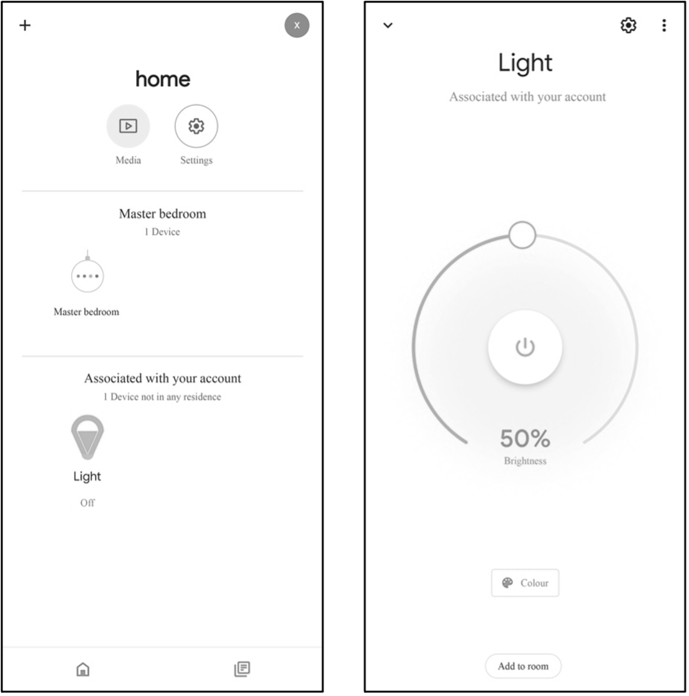
(b) Example - Google Home(c) Example - ESP RainMaker Figure 3.4. Examples of icon and UI of the bulb light on Alexa, Google Home, and ESP RainMaker App
Once the device driver layer has been completed, developers may start to create TSL models and process downlink data using the APIs provided by RainMaker SDK, and enable the ESP RainMaker basic services based on the product definition and requirements.
Section 9.4 of this book will explain the implementation of the LED smart light in RainMaker. During debugging, developers can use the CLI tools in the RainMaker SDK to communicate with the smart light (or call REST APIs from Swagger).
Chapter 10 will elaborate the usage of REST APIs in developing smartphone applications. The OTA upgrades of LED smart lights will be covered in Chapter 11. If developers have enabled the ESP Insights remote monitoring, the ESP RainMaker management backend will display the ESP Insights data. Details will be presented in Chapter 15.
ESP RainMaker supports private deployment, which differs from the public RainMaker server in the following ways:
To generate certificates in private deployments, it is required to use the RainMaker Admin CLI instead of Claiming. With public server, developers must be given admin rights to implement firmware upgrade, but it is undesirable in commercial deployments. Therefore, neither separate authentication service can be provided for self-claiming, nor admin rights for host driven or assisted claiming.
Developers have to configure separately via Google and Apple Developer accounts to enable 3rd party logins, as well as the Alexa Skill and Google Voice Assistant integration.
üí° Tip
For details about cloud deployment, please visit https://customer.rainmaker.espressif.com. In terms of firmware, migration from public server to private server only requires replacing device certificates, which greatly improves migration efficiency and reduces the cost of migration and secondary debugging.
ESP RainMaker features are mainly targeted at three aspects - user management, end users, and admins. All features are supported in both public and private servers unless otherwise stated.
The registration and login methods supported by RainMaker include:
Email id + Password
Phone number + Password
Google account
Apple account
GitHub account (public server only)
Amazon account (private server only)
üìå Note
Sign up using Google/Amazon shares the user's email address with RainMaker. Sign up using Apple shares a dummy address that Apple assigns for the user specifically for the RainMaker service. A RainMaker account will be automatically created for users signing in with a Google, Apple, or Amazon account for the first time.
Valid only for Email id/Phone number based logins. All other active sessions will be logged out after password is changed. As per AWS Cognito behaviour, the logged-out sessions can stay active upto 1 hour.
Features open to end users include local and remote control and monitoring, scheduling, device grouping, device sharing, push notifications, and third-party integrations.
In this chapter, we introduced some key differences between the public RainMaker deployment and the private deployment. The private ESP RainMaker solution launched by Espressif is highly reliable and extensible. All ESP32 series chips have been connected and adapted to AWS, which greatly reduces the cost. Developers can focus on prototype verification without having to learn about AWS cloud products. We also explained the implementation and features of ESP RainMaker, and some key points for development using the platform.
Download ESP RainMaker for Android Download ESP RainMaker for iOS
This chapter focuses on ESP-IDF, the official software development
framework for ESP32-C3. We'll explain how to set up the environment on
various operating systems, and introduce the project structure and build
system of ESP-IDF, as well as the usage of related development tools.
Then we'll present the compiling and running process of an example
project, while offering a detailed explanation of the output log at each
stage.
ESP-IDF (Espressif IoT Development Framework) is a one-stop IoT
development framework provided by Espressif Technology. It uses C/C++ as
the main development language and supports cross-compilation under
mainstream operating systems such as Linux, Mac, and Windows. The
example programs included in this book are developed using ESP-IDF,
which offers the following features:
SoC system-level drivers. ESP-IDF includes drivers for ESP32,
ESP32-S2, ESP32-C3, and other chips. These drivers encompass
peripheral low level (LL) library, hardware abstraction layer (HAL)
library, RTOS support and upper-layer driver software, etc.
Essential components. ESP-IDF incorporates fundamental
components required for IoT development. This includes multiple
network protocol stacks such as HTTP and MQTT, a power management
framework with dynamic frequency modulation, and features like Flash
Encryption and Secure Boot, etc.
Development and production tools. ESP-IDF provides commonly used
tools for building, flash, and debugging during development and mass
production (see Figure 4.1), such as the building system based on
CMake, the cross-compilation tool chain based on GCC, and the JTAG
debugging tool based on OpenOCD, etc.
Figure 4.1. Building, flashing, and debugging tools for development and mass
production
It is worth noting that the ESP-IDF code primarily adheres to the the
Apache 2.0 open-source license. Users can develop personal or commercial
software without restrictions while complying with the terms of the
open-source license. Additionally, users are granted permanent patent
licenses free of charge, without the obligation to open-source any
modifications made to the source code.
The ESP-IDF code is hosted on GitHub as an open-source project.
Currently, there are three major versions available: v3, v4, and v5.
Each major version usually contains various sub-versions, such as v4.2,
v4.3, and so on. Espressif Systems ensures a 30-month support for bug
fixes and security patches for each released sub-version. Therefore,
revisions of sub-versions are also released regularly, such as v4.3.1,
v4.2.2, etc. Table 4.1 shows the support status of different ESP-IDF
versions for Espressif chips, indicating whether they are in a preview
stage (offering support for preview versions, which may lack certain
features or documentation) or are officially supported.
Table 4.1. Support status of different ESP-IDF versions for Espressif chips
Series
v4.1
v4.2
v4.3
v4.4
v5.0
ESP32
supported
supported
supported
supported
supported
ESP32-S2
supported
supported
supported
supported
ESP32-C3
supported
supported
supported
ESP32-S3
supported
supported
ESP32-C2
supported
ESP32-H2
preview
preview
The iteration of major versions often involves adjustments to the
framework structure and updates to the compilation system. For example,
the major change from v3.* to v4.* was the gradual migration of the
build system from Make to CMake. On the other hand, iteration of minor
versions typically entails the addition of new features or support for
new chips.
It is important to distinguish and understand the relationship between
stable versions and GitHub branches. Versions labeled as v*.* or
v*.*.* represent stable versions that have passed complete internal
testing by Espressif. Once fixed, the code, tool chain, and release
documents for the same version remain unchanged. However, GitHub
branches (e.g., the release/v4.3 branch) undergo frequent code
commits, often on a daily basis. Therefore, two code snippets under the
same branch may differ, necessitating developers to promptly update
their code accordingly.
Espressif follows a specific Git workflow for ESP-IDF, outlined as
follows:
New changes are made on the master branch, which serves as the
main development branch. The ESP-IDF version on the master branch
always carries a -dev tag to indicate that it is currently under
development, such as v4.3-dev. Changes on the master branch will
first be reviewed and tested in Espressif's internal repository, and
then pushed to GitHub after automated testing is complete.
Once a new version has completed feature development on the master
branch and met the criteria for entering beta testing, it
transitions to a new branch, such as release/v4.3. In addition, this new branch is tagged as a pre-release
version, like v4.3-beta1. Developers can refer to the GitHub
platform to access the complete list of branches and tags for
ESP-IDF. It's important to note that the beta version (pre-release
version) may still have a significant number of known issues. As the
beta version undergoes continuous testing, bug fixes are added to
both this version and the master branch simultaneously. Meanwhile,
the master branch may have already begun developing new features
for the next version. When testing is nearly complete, a release
candidate (rc) label is added to the branch, indicating that it is
a potential candidate for the official release, such as v4.3-rc1.
At this stage, the branch remains a pre-release version.
If no major bugs are discovered or reported, the pre-release version
eventually receives a major version label (e.g., v5.0) or a minor
version label (e.g., v4.3) and becomes an official release version,
which is documented in the release notes page. Subsequently, any
bugs identified in this version are fixed on the release branch.
After manual testing is completed, the branch is assigned a bug-fix
version label (e.g., v4.3.2), which is also reflected on the release
notes page.
Since ESP-IDF officially began supporting ESP32-C3 from version v4.3,
and v4.4 has not yet been officially released at the time of writing
this book, the version used in this book is v4.3.2, which is a revised
version of v4.3. However, it is important to note that by the time you
read this book, v4.4 or newer versions may already be available. When
selecting a version, we recommend the following:
For entry-level developers, it is advisable to choose the stable
v4.3 version or its revised version, which aligns with the example
version used in this book.
For mass production purposes, it is recommended to use the
latest stable version to to benefit from the most up-to-date
technical support.
If you intend to experiment with new chips or explore new
product features, please use the master branch. The latest
version contains all the latest features, but keep in mind that
there may be known or unknown bugs present.
If the stable version being used does not include the desired new
features and you wish to minimise the risks associated with the
master branch, consider using the corresponding release branch,
such as the release/v4.4 branch. Espressif's GitHub repository
will first create the release/v4.4 branch and subsequently release
the stable v4.4 version based on a specific historical snapshot of
this branch, after completing all feature development and testing.
The ESP-IDF SDK consists of two main directories: esp-idf and
.espressif. The former contains ESP-IDF repository's source code files
and compilation scripts, while the latter mainly stores compilation tool
chains and other software. Familiarity with these two directories will
help developers make better use of available resources and speed up the
development process. The directory structure of ESP-IDF is described
below:
This core directory integrates numerous essential software
components of ESP-IDF. No project code can be compiled without
relying on the components within this directory. It includes
driver support for various Espressif chips. From the LL library
and HAL library interfaces for peripherals to the upper-level
Driver and Virtual File System (VFS) layer support, developers
can choose the appropriate components at different levels for
their development needs. ESP-IDF also supports multiple standard
network protocol stacks such as TCP/IP, HTTP, MQTT, WebSocket,
etc. Developers can utilise familiar interfaces like Socket to
build network applications. Components provide comprehensive
functionality and can be easily integrated into applications,
allowing developers to focus solely on the business logic. Some
common components include:
driver: This component contains peripheral driver programs
for various Espressif chip series, such as GPIO, I2C, SPI,
UART, LEDC (PWM), etc. The peripheral driver programs in
this component offer chip-independent abstract interfaces.
Each peripheral has a common header file (such as gpio.h),
eliminating the need to deal with different chip-specific
support questions.
esp_wifi: Wi-Fi, as a special peripheral, is treated as a
separate component. It includes multiple APIs such as
initialisation of various Wi-Fi driver modes, parameter
configuration, and event processing. Certain functions of
this component are provided in the form of static link
libraries. ESP-IDF also provides comprehensive driver
documentation for ease of use.
freertos: This component contains the complete FreeRTOS
code. Apart from providing comprehensive support for this
operating system, Espressif has also extended its support to
dual-core chips. For dual-core chips like ESP32 and
ESP32-S3, users can create tasks on specific cores.
This directory contains ESP-IDF related development documents,
including the Get Started Guide, API Reference Manual,
Development Guide, etc.
üìå Note
After being compiled by automated tools, the contents of this directory are deployed at https://docs.espressif.com/projects/esp-idf. Please ensure to switch the document target to ESP32-C3 and select the specified ESP-IDF version.
This directory contains commonly used compilation front-end
tools such as idf.py, and the monitor terminal tool
idf_monitor.py, etc. The sub-directory cmake also contains
core script files of the compilation system, serving as the
foundation for implementing ESP-IDF compilation rules. When
adding the environment variables, the contents within the
tools directory are added to the system environment variable,
allowing idf.py to be executed directly under the project
path.
This directory comprises a vast collection of ESP-IDF example
programs that demonstrate the usage of component APIs. The
examples are organised into various sub-directories based on
their categories:
get-started: This sub-directory includes entry-level
examples like "hello world" and "blink" to help users grasp
the basics.
bluetooth: You can find Bluetooth related examples here,
including Bluetooth LE Mesh, Bluetooth LE HID, BluFi, and
more.
wifi: This sub-directory focuses on Wi-Fi examples,
including basic programs like Wi-Fi SoftAP, Wi-Fi Station,
espnow, as well as proprietary communication protocol
examples from Espressif. It also includes multiple
application layer examples based on Wi-Fi, such as Iperf,
Sniffer, and Smart Config.
peripherals: This extensive sub-directory is further
divided into numerous sub-folders based on peripheral names.
It mainly contains peripheral driver examples for Espressif
chips, with each example featuring several sub-examples. For
instance, the gpio sub-directory includes two examples:
GPIO and GPIO matrix keyboard. It's important to note that
not all examples in this directory are applicable to
ESP32-C3. For example, the examples in usb/host are only
applicable to peripherals with USB Host hardware (such as
ESP32-S3), and ESP32-C3 does not have this peripheral. The
compilation system typically provides prompts when setting
the target. The README file of each example lists the
supported chips.
protocols: This sub-directory contains examples for
various communication protocols, including MQTT, HTTP, HTTP
Server, PPPoS, Modbus, mDNS, SNTP, covering a wide range of
communication protocol examples required for IoT
development.
provisioning: Here, you'll find provisioning examples for
different methods, such as Wi-Fi provisioning and Bluetooth
LE provisioning.
system: This sub-directory includes system debugging
examples (e.g., stack tracing, runtime tracing, task
monitoring), power management examples (e.g., various sleep
modes, co-processors), and examples related to common system
components like console terminal, event loop, and system
timer.
storage: Within this sub-directory, you'll discover
examples of all file systems and storage mechanisms
supported by ESP-IDF (such as reading and writing of Flash,
SD card and other storage media), as well as examples of
non-volatile storage (NVS), FatFS, SPIFFS and other file
system operations.
security: This sub-directory contains examples related to
flash encryption.
The ESP-IDF tool chain and other software are distributed in the
form of compressed packages. During the installation process,
the installation tool first downloads the compressed package to
the dist directory, and then extracts it to the specified
directory. Once the installation is complete, the contents in
this directory can be safely removed.
Different versions of ESP-IDF rely on specific versions of
Python packages. Installing these packages directly on the same
host can lead to conflicts between package versions. To address
this, ESP-IDF utilises Python virtual environments to isolate
different package versions. With this mechanism, developers can
install multiple versions of ESP-IDF on the same host and easily
switch between them by importing different environment
variables.
This directory mainly contains cross-compilation tools required
to compile ESP-IDF projects, such as CMake tools, Ninja build
tools, and the gcc tool chain that generates the final
executable program. Additionally, this directory houses the
standard library of the C/C++ language along with the
corresponding header files. If a program references a system
header file like #include <stdio.h>, the compilation tool
chain will locate the stdio.h file within this directory.
The ESP-IDF development environment supports mainstream operating
systems such as Windows, Linux, and macOS. This section will introduce
how to set up the development environment on each system. It is
recommended to develop ESP32-C3 on Linux system, which will be
introduced in detail here. Many instructions are applicable across
platforms due to the similarity of the development tools. Therefore, it
is advised to carefully read the content of this section.
The GNU development and debugging tools required for the ESP-IDF
development environment are native to the Linux system. Additionally,
the command-line terminal in Linux is powerful and user-friendly, making
it an ideal choice for ESP32-C3 development. You can select your
preferred Linux distribution, but we recommend using Ubuntu or other
Debian-based systems. This section provides guidance on setting up the
ESP-IDF development environment on Ubuntu 20.04.
Open a new terminal and execute the following command to install all
necessary packages. The command will automatically skip packages that
are already installed.
You need to use the administrator account and password for the command above. By default, no information will be displayed when entering the password. Simply press the "Enter" key to continue the procedure.
Git is a key code management tool in ESP-IDF. After successfully setting
up the development environment, you can use the git log command to
view all code changes made since the creation of ESP-IDF. In addition,
Git is also used in ESP-IDF to confirm version information, which is
necessary for installing the correct tool chain corresponding to
specific versions. Along with Git, other important system tools include
Python. ESP-IDF incorporates numerous automation scripts written in
Python. Tools such as CMake, Ninja-build, and Ccache are widely used in
C/C++ projects and serve as the default code compilation and building
tools in ESP-IDF. libusb-1.0-0 and dfu-util are the main drivers
used for USB serial communication and firmware burning.
Once the software packages are installed, you can use the
apt show <package_name> command to obtain detailed descriptions of
each package. For example, use apt show git to print the description
information for the Git tool.
Q: What to do if the Python version is not supported?
A: ESP-IDF v4.3 requires a Python version that is not lower than v3.6. For older versions of Ubuntu, please manually download and install a higher version of Python and set Python3 as the default Python environment. You can find detailed instructions by searching for the keyword update-alternatives python.
Open a terminal and create a folder named esp in your home directory
using the mkdir command. You can choose a different name for the
folder if you prefer. Use the cd command to enter the folder.
$ mkdir -p ~/esp
$ cd ~/esp
Use the git clone command to download the ESP-IDF repository code, as
shown below:
In the command above, the parameter -b v4.3.2 specifies the version to
download (in this case, version 4.3.2). The parameter --recursive
ensures that all sub-repositories of ESP-IDF are downloaded recursively.
Information about sub-repositories can be found in the .gitmodulesfile.
Espressif provides an automated script install.sh to download and
install the tool chain. This script checks the current ESP-IDF version
and operating system environment, and then downloads and installs
appropriate version of Python tool packages and compilation tool chains.
The default installation path for the tool chain is ~/.espressif.
All you need to do is to navigate to the esp-idf directory and run
install.sh.
$ cd ~/esp/esp-idf
$ ./install.sh
If you install the the tool chain successfully, the terminal will
display:
All done!
At this point, you have successfully set up the ESP-IDF development
environment.
This installer is relatively small, around 4 MB in size, and other
packages and code will be downloaded during the installation
process. The advantage of the online installer is that not only can
software packages and code be downloaded on demand during the
installation process, but also allows the installation of all
available releases of ESP-IDF and the latest branch of GitHub code
(such as the master branch). The disadvantage is that it requires
a network connection during the installation process, which may
cause installation failure due to network problems.
Offline ESP-IDF tools installer
This installer is larger, about 1 GB in size, and contains all the
software packages and code required for environment set up. The main
advantage of the offline installer is that it can be used on
computers without Internet access, and generally has a higher
installation success rate. It should be noted that the offline
installer can only install stable releases of ESP-IDF identified by
v*.* or v*.*.*.
After downloading a suitable version of the installer (take ESP-IDF
Tools Offline 4.3.2 for example here), double-click the exe file to
launch the ESP-IDF installation interface. The following demonstrates
how to install ESP-IDF stable version v4.3.2 using the offline
installer.
In the "Select installation language" interface shown in Figure 4.4, select the language to be used from the drop-down list.
Figure 4.4. "Select installation language" interface
After selecting the language, click "OK" to pop up the "License agreement" interface (see Figure 4.5). After carefully reading the installation license agreement, select "I accept the agreement" and click "Next".
Figure 4.5. "License agreement" interface
Review the system configuration in the "Pre-installation system check" interface (see Figure 4.6). Check the Windows version and the installed antivirus software information. Click "Next" if all the configuration items are normal. Otherwise, you can click "Full log" for solutions based on key items.
Figure 4.6. "Pre-installation system check" interface
Select the ESP-IDF installation directory. Here, select D:/.espressif, as shown in Figure 4.7, and click "Next". Please note that .espressif here is a hidden directory. After the installation is completed, you can view the specific contents of this directory by opening the file manager and displaying hidden items.
Figure 4.7. Select the ESP-IDF installation directory
Check the components that need to be installed, as shown in Figure 4.8. It is recommended to use the default option, that is, complete installation, and then click "Next".
Figure 4.8. Select the components to install
Confirm the components to be installed and click "Install" to start the automated installation process, as shown in Figure 4.9. The installation process may last tens of minutes and the progress bar of the installation process is shown in Figure 4.10. Please wait patiently.
Figure 4.9. Preparing for installation Figure 4.10. Installation progress bar
After the installation is complete, it is recommended to check "Register the ESP-IDF Tools executables as Windows Defender exclusions..." to prevent antivirus software from deleting files. Adding exclusion items can also skip frequent scans by antivirus software, greatly improving the code compilation efficiency of the Windows system. Click "Finish" to complete the installation of the development environment, as shown in Figure 4.11. You can choose to check "Run ESP-IDF PowerShell environment" or "Run ESP-IDF command prompt". Run the compilation window directly after installation to ensure that the development environment functions normally.
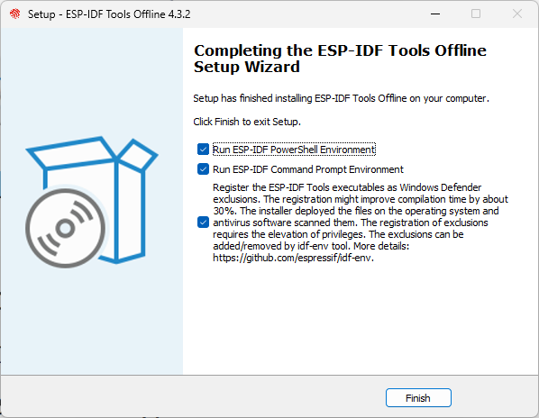
Figure 4.11. Installation completed
Open the installed development environment in the program list (either ESP-IDF 4.3 CMD or ESP-IDF 4.3 PowerShell terminal, as shown in Figure 4.12), and the ESP-IDF environment variable will be automatically added when running in the terminal. After that, you can use the idf.py command for operations. The opened ESP-IDF 4.3 CMD is shown in Figure 4.13.
Figure 4.12. Development environment installed Figure 4.13. ESP-IDF 4.3 CMD
The process of installing the ESP-IDF development environment on a Mac
system is the same as that on a Linux system. The commands for
downloading the repository code and installing the tool chain are
exactly the same. Only the commands for installing dependency packages
are slightly different.
Follow the instructions provided in section 4.2.1 to download the
ESP-IDF repository code. The steps are the same as for downloading on a
Linux system.
Follow the instructions provided in section 4.2.1 to install the ESP-IDF
development tool chain. The steps are the same as for installation on a
Linux system.
By default, the ESP-IDF SDK does not include a code editing tool (though
the latest ESP-IDF installer for Windows offers the option to install
ESP-IDF Eclipse). You can use any text editing tool of your choice to
edit the code and then compile it using terminal commands.
One popular code editing tool is VS Code (Visual Studio Code), which is
a free and feature-rich code editor with a user-friendly interface. It
offers various plugins that provide functionalities such as code
navigation, syntax highlighting, Git version control, and terminal
integration. Additionally, Espressif has developed a dedicated plugin
called Espressif IDF for VS Code, which simplifies project configuration
and debugging.
You can use the code command in the terminal to quickly open the current folder in VS Code. Alternatively, you can use the shortcut Ctrl+~ to open the system’s default terminal console within VS Code.
üí° Tip
It is recommended to use VS Code for ESP32-C3 code development. Download and install the latest version of VS Code at https://code.visualstudio.com/.
In addition to the official ESP-IDF development environment, which
primarily uses the C language, ESP32-C3 also supports other mainstream
programming languages and a wide range of third-party development
environments. Some notable options include:
an open-source platform for both hardware and software, supporting
various microcontrollers, including ESP32-C3.
It uses the C++ language and offers a simplified and standardised API,
commonly referred to as the Arduino language. Arduino is widely used in
prototype development and educational contexts. It provides an
extensible software package and an IDE that allows for easy compilation
and flashing.
a Python 3 language interpreter designed to run on embedded microcontroller platforms.
With a simple script language, it can directly access ESP32-C3's
peripheral resources (such as UART, SPI, and I2C) and communication
functions (such as Wi-Fi and Bluetooth LE). This simplifies hardware
interaction. MicroPython, combined with Python's extensive mathematical
operation library, enables the implementation of complex algorithms on
ESP32-C3, facilitating the development of AI-related applications. As a
script language, there is no need for repeated compilation;
modifications can be made and scripts can be executed directly.
an LUA language interpreter developed for ESP series chips.
It supports almost all peripheral functions of ESP chips and is lighter
than MicroPython. Similar to MicroPython, NodeMCU uses a script
language, eliminating the need for repeated compilation.
Furthermore, ESP32-C3 also supports the NuttX and Zephyr operating systems. NuttX is
a real-time operating system that provides POSIX-compatible interfaces,
enhancing application portability. Zephyr is a small real-time operating
system specifically designed for IoT applications. It includes numerous
software libraries required in IoT development, gradually evolving into
a comprehensive software ecosystem.
This book does not provide detailed installation instructions for the
aforementioned development environments. You can install a development
environment based on your requirements by following the respective
documentation and instructions.
An ESP-IDF project is a collection of a main program with an entry
function and multiple independent functional components. For example, a
project that controls LED switches mainly consists of an entry program
main and a driver component that controls GPIO. If you want to
realise the LED remote control, you also need to add Wi-Fi, TCP/IP
protocol stack, etc.
The compilation system can compile, link, and generate executable files
(.bin) for the code through a set of building rules. The compilation
system of ESP-IDF v4.0 and above versions is based on CMake by default,
and the compilation script CMakeLists.txt can be used to control the
compilation behavior of the code. In addition to supporting the basic
syntax of CMake, the ESP-IDF compilation system also defines a set of
default compilation rules and CMake functions, and you can write the
compilation script with simple statements.
A project is a folder that contains an entry program main,
user-defined components, and files required to build executable
applications, such as compilation scripts, configuration files,
partition tables, etc. Projects can be copied and passed on, and the
same executable file can be compiled and generated in machines with the
same version of ESP-IDF development environment. A typical ESP-IDF
project file structure is shown in Figure 4.14.
Since ESP-IDF supports multiple IoT chips from Espressif, including
ESP32, ESP32-S series, ESP32-C series, ESP32-H series, etc., a target
needs to be determined before compiling the code. The target is both the
hardware device that runs the application program and the build target
of the compilation system.
Depending on your needs, you can specify one or more targets for your
project. For example, through command idf.py set-target esp32c3, you
can set the compilation target to ESP32-C3, during which the default
parameters and compilation tool chain path for ESP32-C3 will be loaded.
After compilation, an executable program can be generated for ESP32-C3.
You can also run the command set-target again to set a different
target, and the compilation system will automatically clean up and
reconfigure.
Components in ESP-IDF are modular and independent code units managed
within the compilation system. They are organised as folders, with the
folder name representing the component name by default. Each component
has its own compilation script that specifies its compilation parameters
and dependencies. During the compilation process, components are
compiled into separate static libraries (.a files) and eventually
combined with other components to form the application program.
ESP-IDF provides essential functions, such as the operating system,
peripheral drivers, and network protocol stack, in the form of
components. These components are stored in the components directory
located within the ESP-IDF root directory. Developers do not need to
copy these components to the components directory of myProject.
Instead, they only need to specify the dependency relationships of these
components in the project's CMakeLists.txt file using the REQUIRES
or PRIV_REQUIRES directives. The compilation system will automatically
locate and compile the required components.
Therefore, the components directory under myProject is not
necessary. It is only used to include some custom components of the
project, which can be third-party libraries or user-defined code.
Additionally, components can be sourced from any directory other than
ESP-IDF or the current project, such as from an open-source project
saved in another directory. In this case, you only need to add the path
of the component by setting the EXTRA_COMPONENT_DIRS variable in the
CMakeLists.txt under the root directory. This directory will override
any ESP-IDF component with the same name, ensuring the correct component
is used.
The main directory within the project follows the same file structure as other components (e.g.,component1). However, it holds a special significance as it is a
mandatory component that must exist in every project. The main directory
contains the project's source code and the user program's entry point,
typically named app_main. By default, the execution of the user
program starts from this entry point. The main component also differs
in that it automatically depends on all components within the search
path. Therefore, there is no need to explicitly indicate dependencies
using the REQUIRES or PRIV_REQUIRES directives in the
CMakeLists.txt file.
The root directory of the project contains a configuration file called sdkconfig, which contains the configuration parameters for all the components within the project.
The sdkconfig file is automatically generated by the compilation
system and can be modified and regenerated by the command
idf.py menuconfig. The menuconfig options mainly originate from the
Kconfig.projbuild of the project and the Kconfig of the components.
Component developers generally add configuration items in Kconfig to
make the component flexible and configurable.
By default, the build directory within the project stores intermediate
files and the final executable programs generated by the idf.py build
command. In general, it is not necessary to directly access the contents
of the build directory. ESP-IDF provides predefined commands to
interact with the directory, such as using the idf.py flash command to
automatically locate the compiled binary file and flash it to the
specified flash address, or using the idf.py fullclean command to
clean the entire build directory.
Each project requires a partition table to divide the space of flash and
specify the size and starting address of the executable program and user
data space. Command idf.py flash or OTA upgrade program will flash the firmware to the corresponding address according to this table. ESP-IDF provides several
default partition tables in components/partition_table, such as
partitions_singleapp.csv and partitions_two_ota.csv, which can be
selected in menuconfig.
If the default partition table of the system cannot meet the
requirements of the project, a custom partitions.csv can be added to
the project directory and be selected in menuconfig.
During the component search process, the compilation system follows a
specific order. It first searches for internal components of ESP-IDF,
then looks for components of the user project, and finally searches for
components in EXTRA_COMPONENT_DIRS. In cases where multiple
directories contain components with the same name, the component found
in the last directory will override any previous components with the
same name. This rule allows for the customisation of ESP-IDF components
within the user project, while keeping the original ESP-IDF code intact.
As mentioned in section 4.3.2, components need to explicitly specify their dependencies on other components in the CMakeLists.txt. However, common components such asfreertos are automatically included in the build system by default,
even if their dependency relationships are not explicitly defined in the
compilation script. ESP-IDF common components include freertos,
Newlib, heap, log, soc, esp_rom, esp_common, xtensa/riscv,
and cxx. Using these common components avoids repetitive work when
writing CMakeLists.txt and make it more concise.
Developers can add default configuration parameters by adding a default configuration file named sdkconfig.defaults to the project. For example, adding CONFIG_LOG_DEFAULT_LEVEL_NONE = y can configure the UART interface to not print log data by default. Furthermore, if specific parameters need to be set for a particular target, a configuration file named sdkconfig.defaults.TARGET_NAME can be added, where TARGET_NAME can be esp32s2, esp32c3, and so on. These configuration files are imported into the sdkconfig during compilation, with the general default configuration file sdkconfig.defaults being imported first, followed by the target-specific configuration file, such as sdkconfig.defaults.esp32c3. In cases where there are configuration items with the same name, the latter configuration file will override the former.
When developing a project using ESP-IDF, developers not only
need to write source code but also need to write CMakeLists.txt for
the project and components. CMakeLists.txt is a text file, also known
as a compilation script, which defines a series of compilation objects,
compilation configuration items, and commands to guide the compilation
process of the source code. The compilation system of ESP-IDF v4.3.2 is
based on CMake. In addition to supporting native CMake functions and
commands, it also defines a series of custom functions, making it much
easier to write compilation scripts.
The compilation scripts in ESP-IDF mainly include the project
compilation script and the component compilation scripts. The
CMakeLists.txt in the root directory of the project is called the
project compilation script, which guides the compilation process of the
entire project. A basic project compilation script typically includes
the following three lines:
Among them, the cmake_minimum_required (VERSION 3.5) must be placed on
the first line, which is used to indicate the minimum CMake version
number required by the project. Newer versions of CMake are generally
backward compatible with older versions, so adjust the version number
accordingly when using newer CMake commands to ensure compatibility.
include($ENV {IDF_PATH}/tools/cmake/project.cmake) imports
pre-defined configuration items and commands of ESP-IDF compilation system,
including the default build rules of the compilation system described in
Section 4.3.3. project(myProject) creates the project itself and
specifies its name. This name will be used as the final output binary
file name, i.e., myProject.elf and myProject.bin.
A project can have multiple components, including the main component.
The top-level directory of each component contains a CMakeLists.txt
file, which is called the component compilation script. Component
compilation scripts are mainly used to specify component dependencies,
configuration parameters, source code files, and included header files
for compilation. With ESP-IDF's custom function
idf_component_register, the minimum required code for a component
compilation script is as follows:
The SRCS parameter provides a list of source files in the component,
separated by spaces if there are multiple files. The INCLUDE_DIRS
parameter provides a list of public header file directories for the
component, which will be added to the include search path for other
components that depend on the current component. The REQUIRES
parameter identifies the public component dependencies for the current
component. It is necessary for components to explicitly state which
components they depend on, such as component2 depending on
component1. However, for the main component, which depends on all
components by default, the REQUIRES parameter can be omitted.
In addition, native CMake commands can also be used in the compilation
script. For example, use the command set to set variables, such as
set(VARIABLE "VALUE").
ESP-IDF uses CMake (project configuration tool), Ninja (project building
tool) and esptool (flash tool) in the process of code compilation. Each
tool plays a different role in the compilation, building, and flash
process, and also supports different operating commands. To facilitate
user operation, ESP-IDF adds a unified front-end idf.py that allows
the above commands to be called quickly.
Before using idf.py, make sure that:
The environment variable IDF_PATH of ESP-IDF has been added to the
current terminal.
The command execution directory is the root directory of the
project, which includes the project compilation script
CMakeLists.txt.
The common commands of idf.py are as follows:
idf.py --help: displaying a list of commands and their usage
instructions.
idf.py set-target <target>: setting the compilation target, such as replacing <target> with esp32c3.
idf.py menuconfig: launching menuconfig, a terminal graphical
configuration tool, which can select or modify configuration
options, and the configuration results are saved in the sdkconfig
file.
idf.py build: initiating code compilation. The intermediate files
and the final executable program generated by the compilation will
be saved in the build directory of the project by default. The
compilation process is incremental, which means that if only one
source file is modified, only the modified file will be compiled
next time.
idf.py clean: cleaning the intermediate files generated by the
project compilation. The entire project will be forced to compile in
the next compilation. Note that the CMake configuration and the
configuration modifications made by menuconfig will not be deleted
during cleanup.
idf.py fullclean: deleting the entire build directory, including
all CMake configuration output files. When building the project
again, CMake will configure the project from scratch. Please note
that this command will recursively delete all files in the build
directory, so use it with caution, and the project configuration
file will not be deleted.
idf.py flash: flashing the executable program binary file
generated by build to the target ESP32-C3. The options
-p <port_name> and -b <baud_rate> are used to set the device
name of the serial port and the baud rate for flashing,
respectively. If these two options are not specified, the serial
port will be automatically detected and the default baud rate will
be used.
idf.py monitor: displaying the serial port output of the target
ESP32-C3. The option -p can be used to specify the device name of
the host-side serial port. During serial port printing, press the
key combination Ctrl+] to exit the monitor.
The above commands can also be combined as needed. For example, the
command idf.py build flash monitor will perform code compilation, flash, and open the
serial port monitor in sequence.
This section will take the program Blink as an example to analyse the
file structure and coding rules of a real project in detail. The Blink
program implements the LED blinking effect, and the project is located
in the directory examples/get-started/blink, which contains a source
file, configuration files, and several compilation scripts.
The smart light project introduced in this book is based on this example
program. Functions will be gradually added in later chapters to finally
complete it.
The directory structure of the blink project files is shown in Figure 4.15.
Figure 4.15. File directory structure of the blink project
The blink project contains only one main directory, which is a
special component that must be included as described in section 4.3.2.
The main directory is mainly used to store the implementation of the
app_main() function, which is the entry point to the user program.The
blink project does not include the components directory, because
this example only needs to use the components that come with ESP-IDF and
does not require additional components. The CMakeLists.txt included in
the blink project is used to guide the compilation process, while
Kconfig.projbuild is used to add configuration items for this example
program in menuconfig. Other unnecessary files will not affect the
compilation of the code, so they will not be discussed here. A detailed
introduction to the blink project files is as follows.
/*blink.c includes the following header files*/
#include <stdio.h> //Standard C library header file
#include "freertos/freeRTOS.h" //FreeRTOS main header file
#include "freertos/task.h" //FreeRTOS Task header file
#include "sdkconfig.h" //Configuration header file generated by kconfig
#include "driver/gpio.h" //GPIO driver header file
The source file blink.c contains a series of header files
corresponding to function declarations. ESP-IDF generally follows the
order of including standard library header files, FreeRTOS header files,
driver header files, other component header files, and project header
files. The order in which header files are included may affect the final
compilation result, so try to follow the default rules. It should be
noted that sdkconfig.h is automatically generated by kconfig and can
only be configured through the command idf.py menuconfig. Direct
modification of this header file will be overwritten.
/*You can select the GPIO corresponding to the LED in idf.py menuconfig, and the modification result of menuconfig is that the value of CONFIG_BLINK_GPIO will be changed. You can also directly modify the macro definition here, and change CONFIG_BLINK_GPIO to a fixed value.*/
#define BLINK_GPIO CONFIG_BLINK_GPIO
void app_main(void)
{
/*Configure IO as the GPIO default function, enable pull-up mode, and disable input and output modes*/
gpio_reset_pin(BLINK_GPIO);
/*Set GPIO to output mode*/
gpio_set_direction(BLINK_GPIO, GPIO_MODE_OUTPUT);
while(1) {
/*Print log*/
printf("Turning off the LED\n");
/*Turn off the LED (output low level)*/
gpio_set_level(BLINK_GPIO, 0);
/*Delay (1000 ms)*/
vTaskDelay(1000 / portTICK_PERIOD_MS);
printf("Turning on the LED\n");
/*Turn on the LED (output high level)*/
gpio_set_level(BLINK_GPIO, 1);
vTaskDelay(1000 / portTICK_PERIOD_MS);
}
}
The app_main() function in the Blink example program serves as the
entry point for user programs. It is a simple function with no
parameters and no return value. This function is called after the system
has completed initialisation, which includes tasks such as initialising
the log serial port, configuring single/dual core, and configuring the
watchdog.
The app_main() function runs in the context of a task named main.
The stack size and priority of this task can be adjusted in
menuconfig → Componentconfig → Common ESP-related.
For simple tasks like blinking an LED, all the necessary code can be
implemented directly in the app_main() function. This typically
involves initialising the GPIO corresponding to the LED and using a
while(1) loop to toggle the LED on and off. Alternatively, you can use
FreeRTOS API to create a new task that handles the LED blinking. Once
the new task is successfully created, you can exit the app_main()
function.
The content of main/CMakeLists.txt file, which guides the compilation
process for the main component, is as follows:
Among them, main/CMakeLists.txt only calls one compilation system
function, that is idf_component_register. Similar to the
CMakeLists.txt for most other components, blink.c is added to
SRCS, and the source files added to SRCS will be compiled. At the
same time, ".", which represents the path where CMakeLists.txt is
located, should be added to INCLUDE_DIRS as the search directories for
header files. The content of CMakeLists.txt is as follows:
# Specify v3.5 as the oldest CMake version supported by the current project
# Versions lower than v3.5 must be upgraded before compilation continues
cmake_minimum_required(VERSION 3.5)
# Include the default CMake configuration of the ESP-IDF compilation system
include($ENV{IDF_PATH}/tools/cmake/project.cmake)
# Create a project named "blink"
project(myProject)
Among them, the CMakeLists.txt in the root directory mainly includes
$ENV{IDF_PATH}/tools/cmake/project.cmake, which is the main CMake configuration
file provided by ESP-IDF. It is used to configure the default rules of
the ESP-IDF compilation system and define common functions such as
idf_component_register; project(blink) creates a project called
blink, and the final firmware will be named blink.bin.
This section takes the Blink program as an example to demonstrate the
compilation process of a simple ESP-IDF program. It is important to note
that this section uses the high/low level of GPIO to drive the LED.
However, the WS2812 indicator light requires a special communication
protocol. You can refer to the example program in esp-idf/examples/peripherals/rmt/led_strip for more information.
For Linux and Mac systems, use cd ~/esp/esp-idf to navigate to the
ESP-IDF folder. Then, import the ESP-IDF environment variables using the
command . ./export.sh. This process also performs a complete integrity
check of the development environment.
üí° Tip
Please note that the dot before the space should not be omitted in . ./export.sh. The dot is equivalent to the source directive, which refers to executing the script and changing the environment variables in the current shell.
For Windows systems, you can directly find and open ESP-IDF 4.3 CMD or
ESP-IDF 4.3 PowerShell in the program list. After the terminal is
opened, the environment variables will be automatically added, as shown
in Figure 4.16.
Figure 4.16. Automatic addition of environment variables in Windows system
Use the command idf.py set-target esp32c3 to set the compilation
target to ESP32-C3, as shown in Figure 4.17. If this step is skipped,
the compilation target defaults to ESP32.
Figure 4.17. Set the compilation target to ESP32-C3
Use the command idf.py menuconfig to enter the configuration
interface. Navigate using the up/down keys and press Enter key to enter
the Example Configuration. Enter a number to change the GPIO to the
specified pin, as shown in Figure 4.18. Save the configuration by
following the prompts.
Use the command idf.py build to build the code. The code building
process is shown in Figure 4.19. Relevant prompts and flash commands
will be printed once the build is complete, as shown in Figure 4.20.
Figure 4.19. Code compilation processFigure 4.20. Prompt after code compilation is completed
For Linux systems, connect the ESP32-C3 to the computer via USB-UART
chip (such as CP2102), and use the command ls /dev/ttyUSB* to view the
serial port number. If the current serial port number printed is
/dev/ttyUSB0, use the command idf.py -p /dev/ttyUSB0 flash to flash the program onto the ESP32-C3.
For Mac systems, connect the ESP32-C3 to the computer via USB-UART chip
(such as CP2102), and use the command ls /dev/cu.* to view the serial
port number. If the current serial port number printed is
/dev/cu.SLAB_USBtoUART, use the command idf.py -p /dev/cu.SLAB_USBtoUART flash to flash the program onto the
ESP32-C3.
For Windows systems, connect the ESP32-C3 to the computer via USB-UART
chip (such as CP2102), and view the serial port number through the
device manager. If the current serial port number is COM5, use the
command idf.py -p COM5 flash to flash the program onto the ESP32-C3.
After the flashing process is completed, you will see a prompt as shown
in Figure 4.21 in the console. When the following log appears, the code
will start executing, and the LED on the development board will start
flashing.
Hard resetting via RTS pin...
Done
Figure 4.21. Prompt in the console after flashing is completed
Once the firmware compilation and download are completed, navigate to
the project folder, and run the command idf.py monitor. This will open
a monitor with coloured font. The monitor will output the serial port
log of the target ESP32-C3. The content is divided into three parts by
default: first-level bootloader information, second-level
bootloader information, and user program output. During the output
of log, you can press the Ctrl+] key combination to exit the log
output.
By default, the first-level bootloader information is output from UART
and cannot be turned off through configuration in ESP-IDF version 4.3.2.
This information includes the ROM code version information fixed
internally in the chip. Different chips in the same series may have
different ROM code versions due to ROM repairs and feature expansions.
It also includes the reason for the chip restart, such as rst:0x1
indicating power-on restart of the chip, rst:0x3 indicating
software-triggered restart, rst:0x4 indicating software exception
restart, etc. You can use this information to assess the status of the
chip. Additionally, it provides details about the chip's boot mode, such
as boot:0xc indicating SPI Flash Boot mode (normal operation mode, in
which the code in flash is loaded and executed), and boot:0x4
indicating Flash Download mode, in which the content of flash can be
erased and programmed.
The output of second-level bootloader information can be disabled by
setting menuconfig(Top) → Bootloader config → Bootloader log verbosity to No output.
This information mainly includes the ESP-IDF version, flash operating
mode and speed, system partition and stack allocation, as well as the
application name and version.
I (30) boot: ESP-IDF v4.3.2-1-g887e7c0c73-dirty 2nd stage bootloader
I (30) boot: compile time 18:27:35
I (30) boot: chip revision: 3
I (34) boot.esp32c3: SPI Speed : 80MHz
I (38) boot.esp32c3: SPI Mode : DIO
I (43) boot.esp32c3: SPI Flash Size : 2MB
I (48) boot: Enabling RNG early entropy source...
I (53) boot: Partition Table:
I (57) boot: ## Label Usage Type ST Offset Length
I (64) boot: 0 nvs WiFi data 01 02 00009000 00006000
I (72) boot: 1 phy_init RF data 01 01 0000f000 00001000
I (79) boot: 2 factory factory app 00 00 00010000 00100000
I (86) boot: End of partition table
I (91) esp_image: segment 0: paddr=00010020 vaddr=3c020020 size=06058h (24664) map
I (103) esp_image: segment 1: paddr=00016080 vaddr=3fc89c00 size=01a88h (6792) load
I (109) esp_image: segment 2: paddr=00017b10 vaddr=40380000 size=08508h (34056) load
I (122) esp_image: segment 3: paddr=00020020 vaddr=42000020 size=15c54h (89172) map
I (138) esp_image: segment 4: paddr=00035c7c vaddr=40388508 size=0157ch (5500) load
I (139) esp_image: segment 5: paddr=00037200 vaddr=50000000 size=00010h (16) load
I (147) boot: Loaded app from partition at offset 0x10000
I (150) boot: Disabling RNG early entropy source...
I (166) cpu_start: Pro cpu up.
I (179) cpu_start: Pro cpu start user code
I (179) cpu_start: cpu freq: 160000000
I (179) cpu_start: Application information:
I (182) cpu_start: Project name: blink
I (186) cpu_start: App version: v4.3.2-1-g887e7c0c73-dirty
I (193) cpu_start: Compile time: Jan 26 2022 18:27:31
I (199) cpu_start: ELF file SHA256: dadcae8e7bb964ab...
I (205) cpu_start: ESP-IDF: v4.3.2-1-g887e7c0c73-dirty
I (212) heap_init: Initializing. RAM available for dynamic allocation:
I (219) heap_init: At 3FC8C4D0 len 00033B30 (206 KiB): DRAM
I (225) heap_init: At 3FCC0000 len 0001F060 (124 KiB): STACK/DRAM
I (232) heap_init: At 50000010 len 00001FF0 (7 KiB): RTCRAM
I (238) spi_flash: detected chip: generic
I (243) spi_flash: flash io: dio
W (247) spi_flash: Detected size(4096k) larger than the size in the binary image header(2048k). Using the size in the binary image header.
I (260) sleep: Configure to isolate all GPIO pins in sleep state
I (267) sleep: Enable automatic switching of GPIO sleep configuration
I (274) cpu_start: Starting scheduler.
The user program output includes all information that is printed using
the printf() function, which is the standard output function in the C
language, or the ESP_LOG() function, which is a custom output function
provided by ESP-IDF. It is recommended to use ESP_LOG() because it
allows you to specify the log level for better organisation and
filtering of logs.
You can configure which logs above a certain level are output through
menuconfig(Top) → Component config → Log output. This allows you to control the
verbosity of the logs and customise the level of detail that is
displayed during runtime.
I (278) gpio: GPIO[5]| InputEn: 0| OutfgputEn: 0| OpenDrain: 0| Pullup: 1|
Pulldown: 0| Intr:0
Turning off the LED
Turning on the LED
Turning off the LED
Turning on the LED
In addition to log output, idf.py monitor can also parse system
exceptions and trace software errors. For example, when the application
crashes, the following register dump and traceback information will be
generated:
Based on the register address, the IDF monitor will query the compiled
ELF file and trace the code call process when the application crashes,
outputting the function call information to the monitor:
Guru Meditation Error of type StoreProhibited occurred on core 0. Exception was unhandled.
Register dump:
PC : 0x400f360d PS : 0x00060330 A0 : 0x800dbf56 A1 : 0x3ffb7e00
0x400f360d: do_something_to_crash at /home/gus/esp/32/idf/examples/get-started/hello_world/main/./hello_world_main.c:57
(inlined by) inner_dont_crash at /home/gus/esp/32/idf/examples/get-started/hello_world/main/./hello_world_main.c:52
A2 : 0x3ffb136c A3 : 0x00000005 A4 : 0x00000000 A5 : 0x00000000
A6 : 0x00000000 A7 : 0x00000080 A8 : 0x00000000 A9 : 0x3ffb7dd0
A10 : 0x00000003 A11 : 0x00060f23 A12 : 0x00060f20 A13 : 0x3ffba6d0
A14 : 0x00000047 A15 : 0x0000000f SAR : 0x00000019 EXCCAUSE : 0x0000001d
EXCVADDR: 0x00000000 LBEG : 0x4000c46c LEND : 0x4000c477 LCOUNT : 0x00000000
Backtrace: 0x400f360d:0x3ffb7e00 0x400dbf56:0x3ffb7e20 0x400dbf5e:0x3ffb7e40 0x400dbf82:0x3ffb7e60 0x400d071d:0x3ffb7e90
0x400f360d: do_something_to_crash at /home/gus/esp/32/idf/examples/get-started/hello_world/main/./hello_world_main.c:57
(inlined by) inner_dont_crash at /home/gus/esp/32/idf/examples/get-started/hello_world/main/./hello_world_main.c:52
0x400dbf56: still_dont_crash at /home/gus/esp/32/idf/examples/get-started/hello_world/main/./hello_world_main.c:47
0x400dbf5e: dont_crash at /home/gus/esp/32/idf/examples/get-started/hello_world/main/./hello_world_main.c:42
0x400dbf82: app_main at /home/gus/esp/32/idf/examples/get-started/hello_world/main/./hello_world_main.c:33
0x400d071d: main_task at /home/gus/esp/32/idf/components/esp32/./cpu_start.c:254
The trace information of the monitor shows that the application crashes
in the function do_something_to_crash(), which is called by the
function app_main() → dont_crash() → still_dont_crash() → inner_dont_crash() → do_something_to_crash(). Based on this, the input/output parameters of each link
can be checked to determine the cause of the crash.
In this chapter, we have covered the setup of the official software
development environment, ESP-IDF, for ESP32-C3. We have introduced the
code resources and file structure of ESP-IDF and provided a
demonstration of the ESP-IDF project structure, compilation system, and
related development tools using a simple example.
By following the instructions in this chapter, you can start developing
with ESP-IDF for simple projects. However, for more specific and
advanced compilation requirements, it is recommended to refer to both
the ESP-IDF official documentation and the CMake official documentation.
In this chapter, we will first introduce the main components of smart light products and their application scenarios, and take LED smart lights as an example to demonstrate their major hardware blocks. Then, we will use ESP32-C3 chips and modules to design a smart light product capable of dimming, colour changing, and wireless communication. The design provided in this chapter can also be extended and applied to various LED products such as light strips, ceiling lights, spotlights, etc.
Smart light products generally use LEDs as light sources. LEDs are solid-state light sources and semiconductor light devices, characterised by low power consumption and long lifespan, easy to control, and pollution-free. Compared with traditional lighting products, they have higher efficiency of light energy conversion. At the same time, smart light products have wireless connectivity functionality, supporting connection to wireless routers or smart gateways through Wi-Fi, Bluetooth LE, or ZigBee, and then connection to the Internet or cloud servers. You can not only use smartphones, tablets, smart speakers that support voice control, and smart control panels to adjust their brightness and colour, as well as setting timers for turning on/off the lights. You can also group multiple lights together and control their brightness and colour in batch. You can pre-set lighting scenes for different occasions, such as "theatre mode" for dimming the ambient lighting, "reading mode" for a soft and eye-friendly brightness, "music mode" for colour changing and light blinking following the beat of the music, and "sleep mode" for turning off all the lights except the night lamp. The structure of a smart light system is shown in Figure 5.1.
Figure 5.1. Structure of smart light system
From the description above, we can see that the main features of smart light products is to be controlled through wireless connection. Now we will take the colour-changing smart LED light as an example to explain the main components of smart light products and how to control them.
Figure 5.2 shows the structure of a smart LED bulb, including an E27 standard lamp holder, a plastic-wrapped aluminium lamp body, a power supply & an LED driver board, a Wi-Fi module, LED beads & an aluminium substrate, and a highly transparent lampshade. Compared with traditional LED bulbs, a smart LED bulb has an additional Wi-Fi module. So how does this Wi-Fi module help control the light wirelessly? The following sections will further elaborate on the functional implementation.
Figure 5.2. Structure of smart LED bulb
Figure 5.3 shows the functional block diagram of a smart LED bulb, which mainly includes a 220 V AC-DC power supply module, a constant-current LED driver, a 3.3 V output auxiliary power supply, a PWM control and wireless communication module, and LED beads of various colours.
Figure 5.3. Block diagram of functional units for smart LED bulb
Before detailing each functional unit, let's first take a glance at how they manage to change the brightness and colour of the lighting as a whole. The key lies in the LED lamp beads.
LED lamp beads can be dimmed in two ways: analogue dimming and digital dimming. Analogue dimming changes LED light output by simply adjusting the DC current in the circuit; while digital dimming, also known as PWM dimming, is achieved by varying the conduction time of forward current through turning on/off LEDs using PWM signals of different pulse widths. Section 6.3.3 will describe PWM dimming in detail. Here we will briefly introduce PWM dimming using PWM signals.
When using a controllable constant-current source to drive LED beads, to adjust colour temperature, you can change the duty cycles of PWM signals on two channels to adjust the current of warm-white (WW) and cool-white (CW) LED beads; to adjust light colours, you can change the duty cycles of PWM signals on three channels to adjust the brightness of corresponding colours so that the smart LED light emits the mixed colour of different lamp beads.
Knowing the basics of light dimming and colour change, now let's dig into the functional units one by one.
The input power of smart LED lights is usually high-voltage AC, and the standard household AC in China is 220 V. The 220 V AC-DC power module first converts the AC to DC through a rectifier bridge, and then reduces it to 18 ~ 40 V for the constant-current LED drivers. Since the operating voltage of the PWM control and wireless communication module is 3.3 V, there is another auxiliary power supply to reduce the DC power to 3.3 V.
To ensure consistency in the emission of multiple LED beads, you can use a series circuit and drive the LEDs with a constant current source. The brightness of the LEDs can be adjusted by controlling the constant current source using PWM signals. Constant-current LED driver 1 is used to drive the LEDs in cool white (CW) and warm white (WW), and the output power is relatively higher; constant-current LED driver 2 is used to drive red (R) / green (G) / blue (B) LEDs, mainly for changing colours, and the output power is lower.
In smart LED lights, there are usually warm-white, cool-white, red, green, and blue LED beads, among which more warm-white and cool-white beads are used for lighting, and less red, green or blue beads for colour adjustment.
In smart light products, to realise PWM control and wireless communication functions, a highly-integrated system-on-a-chip (SoC) is usually used. SoC supports multiple PWM signal outputs, as well as one or more mainstream wireless communication protocols such as Wi-Fi, Bluetooth LE, or ZigBee. It can run embedded RTOS, and supports software application development. With chips of Wi-Fi connectivity, you can connect your product to the Internet and cloud servers through a Wi-Fi router; with chips of Bluetooth LE or ZigBee functions, you need to configure a gateway device to connect to an Ethernet or Wi-Fi router first and then get it connected to the Internet and cloud servers.
The introduction above explains the main components of smart LED lights, as well as the realisation of dimming and colour change functions. It can be concluded that the biggest difference between smart light products and ordinary light products lies in the use of PWM control and wireless communication. The following sections of this chapter will focus on how to design the minimal hardware system based on the ESP32-C3 chip to realise PWM dimming, colour change, and wireless communication. The design is also applicable to other types of smart light products such as spotlights, ceiling lights, lamps, light strips, etc.
Through Section 5.1, we can see that the PWM control and wireless communication module is the core unit of smart light products, which distinguishes them from traditional light products. Then how should we design this core system to implement the functions of smart light products? In this section, we'll use the ESP32-C3 chip to demonstrate its hardware design.
ESP32-C3 is a highly-integrated SoC equipped with a 32-bit RISC-V processor, supporting 2.4 GHz Wi-Fi and Bluetooth LE connectivity. The functional block diagram of ESP32-C3 is shown in Figure 5.4.
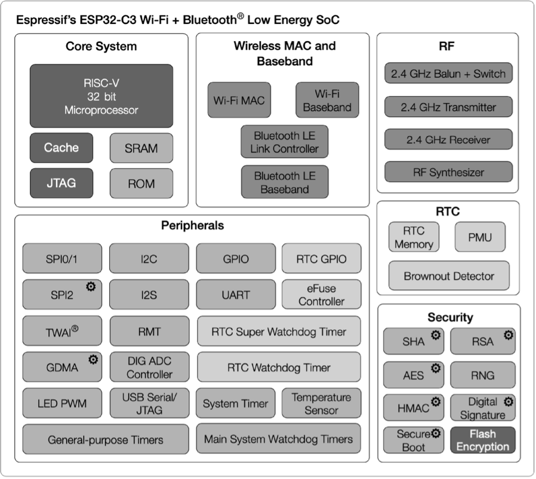
Figure 5.4. Block diagram of ESP32-C3 functions
ESP32-C3 has the following features:
A 32-bit RISC-V single-core processor with a four-stage pipeline
which operates at up to 160 MHz.
A complete Wi-Fi subsystem which complies with IEEE 802.11b/g/n
protocol and supports Station mode, SoftAP mode, SoftAP + Station
mode, and promiscuous mode.
A Bluetooth LE subsystem which supports Bluetooth 5 and
Bluetooth mesh.
Storage capacities ensured by 400 KB SRAM and 384 KB ROM on the
chip, and SPI, Dual SPI, Quad SPI, and QPI interfaces that allow
connection to external flash.
Reliable security mechanisms ensured by cryptographic hardware
accelerators that support AES-128/256, Hash, RSA, HMAC, digital
signature and secure boot, external memory encryption and
decryption, random number generator, and permission control on
accessing internal memory, external memory, and peripherals.
A rich set of peripheral interfaces which are ideal for various
scenarios and complex applications; 22 programmable GPIOs that
can be configured flexibly to support LED PWM, UART, I2C, SPI, I2S,
ADC, TWAI, RMT, and USB Serial/JTAG applications.
The ESP32-C3 series of chips has several variants, including the version with in-package SPI flash. ESP8685 is a small package version of ESP32-C3, as shown in Table 5.1.
Table 5.1. ESP32-C3 series
MPN
Flash (MB)
Temp (℃)
Size (mm)
ESP32-C3
–
-40 ~ 105
QFN32 (5×5)
ESP32-C3-FN4
4
-40 ~ 85
QFN32 (5×5)
ESP32-C3-FH4
4
-40 ~ 105
QFN32 (5×5)
ESP32-C3-FH4AZ
4
-40 ~ 105
QFN32 (5×5)
ESP8685H2
2
-40 ~ 105
QFN32 (4×4)
ESP8685H4
4
-40 ~ 105
QFN32 (4×4)
üìå Note
For ESP32-C3FH4AZ, ESP8685H2, and ESP8685H4, pins for flash connection are not bonded.
Nomenclature of ESP32-C3 series: F stands for in-package flash, H/N indicates the flash temperature, and AZ is other identification code.
The core circuit for ESP32-C3 requires about 20 resistors, capacitors, and inductors in total, as well as one crystal and one SPI flash. The high integration of ESP32-C3 makes it suitable for small-sized applications such as smart light products. Figure 5.5 and Figure 5.6 show the block diagram and the schematic of ESP32-C3 core circuit.
Figure 5.5. Block diagram of ESP32-C3 core circuitFigure 5.6. Schematic of ESP32-C3 core circuit
The following explains in detail the schematics and PCB layout of ESP32-C3.
Pin 11 and pin 17 are the power supply pins for RTC IO and CPU IO respectively, in a voltage range of 3.0 V ~ 3.6 V. We recommend adding a 0.1 μF capacitor close to each power supply pin. When working as an output power supply pin, VDD_SPI (pin 18) mainly powers external SPI flash. We recommend adding a 1 μF filter capacitor between VDD_SPI and ground. When VDD_SPI works as the power supply pin for in-package flash or external 3.3 V flash, the voltage of VDD3P3_CPU should be maintained at 3.0 V or above, to ensure the flash's operation.
Pin 2, pin 3, pin 31, and pin 32 are the analogue power supply pins, working at 3.0 V ~ 3.6 V. Please note that when ESP32-C3 works in transmission (TX) mode, the instantaneous current will be higher and may cause power rail collapse. Therefore, it is highly recommended to add a 10 μF capacitor to the power trace, which can work in conjunction with the 0.1 μF capacitor. In addition, an LC filter circuit needs to be added near pin 2 and pin 3 to suppress high-frequency harmonics. The inductor's rated current is preferably 500 mA or above. Refer to the core circuit schematic and place the appropriate decoupling capacitor near each analogue power pin.
For a single power supply, the recommended voltage is 3.3 V, and the recommended output current is 500 mA or above. We also suggest adding an ESD protection diode at the power entrance.
ESP32-C3 uses a 3.3 V system power supply. The chip should be activated after the power rails have stabilised. This is achieved by delaying the activation of pin 7 CHIP_EN after the 3.3 V rails have been brought up. Figure 5.7 shows the power-up and reset timing of ESP32-C3. Details about the parameters are listed in Table 5.2.
Figure 5.7. ESP32-C3 power-up and reset timing
Table 5.2. Parameter description of ESP32-C3 power-up and reset timing
Parameter
Description
Min.
t0
Time between bringing up the VDDA, VDD3P3, VDD3P3_RTC, and VDD3P3_CPU rails, and activating CHIP_EN
50 μs
t1
Duration of CHIP_EN signal level < VIL_nRST to reset the chip
CHIP_EN can also be used as the reset pin of ESP32-C3. When CHIP_EN is
at low level, the reset voltage (VIL_nRST) should be (-0.3 ~ 0.25) × VDD (where VDD is the I/O voltage for a particular power domain of pins). To avoid reboots caused by external interference, route the CHIP_EN trace as short as possible, and add a pull-up resistor as well as a capacitor to ground. Note that CHIP_EN pin must not be left floating.
Currently, the ESP32-C3 firmware supports 40 MHz crystal. The specific capacitance of C1 and C2 depends on further testing of, and adjustment to, the overall performance of the whole circuit. Please add a component (i.e., R1 in Figure 5.6) in series on the XTAL_P clock trace to minimise the impact of crystal harmonics on RF performance. The value of this component (initially of 24 nH) depends on further RF testing. Note that the accuracy of the selected crystal needs to be ±10 ppm. In actual use, as the temperature of smart light products rises, the frequency deviation of the crystal will also increase. Therefore, please ensure that the frequency deviation of the crystal does not exceed 25 ppm, so as not to affect Wi-Fi communication.
Although ESP32-C3 has integrated an RC oscillator as the RTC clock source, it also supports an external 32.768 kHz crystal to act as the RTC clock source. Figure 5.8 shows the schematic of the external 32.768 kHz crystal.
Figure 5.8. Schematic of ESP32-C3's external crystal (RTC)
In your circuit design, please add a π-matching network between the RF port (LNA_IN) and the antenna, for antenna matching purpose. A CLC network is preferred, as shown in Figure 5.9. The parameters of C8, L2, and C9 in the matching network are subject to the actual antenna and PCB layout.
Figure 5.9. CLC circuit for ESP32-C3 RF matching
The antenna can be selected based on product design and the overall cost. You can choose PCB onboard antenna, or an external antenna such as rod antenna, FPC antenna, ceramic antenna, 3D metal antenna, etc. Commonly-used antenna types are shown in Figure 5.10. Their installation methods and characteristics are provided in Table 5.3.
Figure 5.10. Commonly-used antenna types
Table 5.3. Installation methods and characteristics of commonly-used antenna types
Antenna Type
Installation Methods
Characteristics
PCB onboard antenna
PCB onboard
Low cost, medium gain, usually integrated on modules
Rod antenna
External connection through I-PEX connector
High cost, high gain, less susceptible to interference, good omni-directional performance
FPC antenna
Adhesive installation
Medium cost, medium gain, can be adhered to the package, suitable for products with restricted structure
Ceramic antenna
PCB mounting
Medium cost, low gain, small size, suitable for small-sized modules
3D metal antenna
PCB mounting
High cost, high gain, less susceptible to interference, good omni-directional performance
The RF performance can be optimised through antenna matching. After matching, you can use CMW500, WT-200, IQ View, IQ Xel or other comprehensive RF testers to test RF performance of the ESP32-C3 core board. RF test includes conducted test and radiatied test.
When performing a radiated test, place the tester's antenna and ESP32-C3 board's antenna close to each other in the shield box. It is recommended that the distance between the two antennas be about 10 cm. Control the test through PC software. The radiated test set-up is shown in Figure 5.12.
Figure 5.12. Radiated test set-up for ESP32-C3 core board
For Wi-Fi RF performance test, the primary test parameters are target transmit power, EVM, receiver sensitivity, and frequency error, as shown in Table 5.4.
Table 5.4. Key parameters for Wi-Fi RF test
Working Mode and Rate
Target TX Power (dBm)
EVM (dB)
Receiver Sensitivity (dBm)
Frequency Error (ppm)
IEEE 802.11b, 1 Mbit/s
21.0±2.0
<-24.5
<-98
±25
IEEE 802.11g, 54 Mbit/s
19.0±2.0
<-27.5
<-76.2
±20
IEEE 802.11n, MCS7 HT20
18.5±2.0
<-29
<-74.4
±20
IEEE 802.11n, MCS7 HT40
18.5±2.0
<-28
<-71.2
±20
Figure 5.13 shows the spectral mask requirements in different working modes.
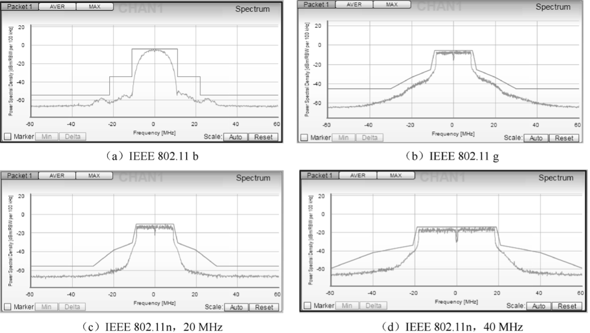
Figure 5.13. Spectral mask requirements in different working modes
ESP32-C3 has three strapping pins: GPIO2, GPIO8, and GPIO9. During the chip's system reset, the strapping pins sample their voltage levels and store them into the latch until the chip is powered down or shut down. Depending on the stored voltage levels, the chip will enter different boot modes after system reset. The correspondence between the voltage levels and the boot modes is shown in Table 5.5. After reset, the strapping pins function as normal pins.
Table 5.5. Voltage level of strapping pins and corresponding boot mode
ESP32-C3 has 22 GPIO pins which can be assigned various functions by configuring corresponding registers. All GPIOs can be configured with internal pull-up, pull-down, or set to high impedance. GPIO MUX and GPIO Matrix are used to collectively control the GPIO pin signals of the chip. By utilising GPIO MUX and GPIO Matrix (as shown in Figure 5.14), it is possible to configure the peripheral input signals from any GPIO pin, and the peripheral output signals can also be connected to any GPIO pin.
Figure 5.14. IO MUX and GPIO matrix
The PWM controller can generate independent PWM signals on six channels, which can be configured to any GPIO pins through the GPIO Matrix.
Section 5.2 introduced how to design the minimum hardware system (core circuit) and communication system for smart light products based on ESP32-C3. This minimum hardware system includes the main peripheral components and the antenna part which needs to be matched with the network analyser and RF tester according to the selected antenna type and the design of RF circuit. Antenna matching may be difficult for users who are new to RF. So, is there a ready-made minimum hardware system which has been tuned for RF performance, for users to get started quickly to develop a smart light product?
Yes, there ARE hardware modules based on the ESP32-C3 chip ready for operation. Apart from the chip, these modules also integrate a crystal oscillator, flash, antenna, RF circuit and main peripheral components. In addition, the modules have passed certification of SRRC, CE, FCC, and KCC, and can be directly applied to smart light products. In the following sections, we will choose one of the ESP32-C3 modules for smart light products design.
As shown in Table 5.6, in terms of the type of antenna, ESP32-C3 modules can be divided into PCB antenna modules and IPEX external antenna modules; in terms of size and pins, they can be divided into WROOM series and MINI series. Each module has two temperature range versions: -40 ~ 85 ℃ version and -40 ~ 105 ℃ version, suitable for smart lights of different temperature requirements. For lighting products such as LED bulbs which characterise high internal temperature, it is recommended to use the -40 ~ 105 ℃ module. For other lighting products which do not have high internal temperature, the -40 ~ 85 ℃ module is suitable.
Table 5.6. ESP32-C3 modules
Module
Antenna
Temp (℃)
Size (mm)
Image
ESP32-C3-WROOM-02
PCB antenna
-40 ~ 85 ℃/ -40 ~ 105 ℃
18×20×3.2
ESP32-C3-WROOM-02U
IPEX external antenna
-40 ~ 85 ℃/ -40 ~ 105 ℃
18×14.3×3.2
ESP32-C3-MINI-1
PCB antenna
-40 ~ 85 ℃/ -40 ~ 105 ℃
13.2×16.6×2.4
ESP32-C3-MINI-1U
IPEX external antenna
-40 ~ 85 ℃/ -40 ~ 105 ℃
13.2×12.5×2.4
üìå Note
You can also select one module from ESP8685-WROOM-01 to ESP8685-WROOM-07 series for a smaller package. For more information, please visit products.espressif.com.
The PWM controller of ESP32-C3 can generate independent PWM signals on six channels, which can be assigned to any GPIOs through the GPIO matrix. In our design, five channels of PWM signals are used to control R (red), G (green), B (blue), CW (cool white), and WW (warm white) signals. In real application, we can use one channel to control the duty cycles of WW and CW LEDs to adjust the colour temperature, and another channel to control the total current to adjust the brightness of WW and CW LEDs. The GPIO configuration of each PWM signal is shown in Table 5.7.
Figure 5.15 shows the minimum control system based on the ESP32-C3-WROOM-02 module, which is connected to five LEDs of red, green, blue, cool white, and warm white.
Figure 5.15. Minimum control system based on ESP32-C3-WROOM-02
The ESP32-C3 chip integrates a USB Serial/JTAG controller which makes external USB-to-UART bridge or JTAG adapter unnecessary. The USB on ESP32-C3 uses GPIO19 as D+ and GPIO18 as D-, and can be directly connected to the USB interface on the PC, so as to realise firmware download, log printing, and JTAG debugging. Figure 5.16 shows that an ESP32-C3 board is connected to a PC through the built-in USB Serial/JTAG controller. You may visit https://bookc3.espressif.com/usb for more applications of the USB Serial/JTAG controller.
Figure 5.16. ESP32-C3 and PC connected through USB Serial/JTAG controller
For some ESP32-C3 development boards, a USB-to-UART bridge has been connected to the UART0 interface of the chip. Developers only need to connect the USB interface of the PC to the development board through the bridge, to realise firmware download and log printing, as shown in Figure 5.17.
Figure 5.17. USB-to-UART bridge connecting ESP32-C3 development board and PC
As for a finished board, to save its space and cost, we often use a programmer with USB-to-UART bridge to connect to the UART0 interface on the ESP32-C3 chip, to implement firmware download and log printing. Figure 5.18 shows that a programmer with USB-to-UART bridge is used to connect the development board and the PC.
Figure 5.18. Programmer with USB-to-UART bridge connecting ESP32-C3 and
PC
The firmware and system parameters of ESP32-C3 are stored in the SPI flash. To flash firmware into the chip, first put the chip in download boot mode. According to Table 5.5, GPIO2 and GPIO8 should be at high level, and GPIO9 should be at low level. Reset the chip to enter download boot mode. Connect ESP32-C3 to the PC using any of the three methods above to start firmware download.
ESP32-C3 ROM code and IDF SDK output log messages through UART0 by default. Connect ESP32-C3 and the PC with any of the three methods above to enable logging in the PC's terminal.
You can directly use the USB JTAG controller integrated in ESP32-C3 for debugging. To do this, you need to connect the JTAG pins – MTMS/GPIO4, MTDI/GPIO5, MTCK/GPIO6, and MTDO/GPIO7 – to an external JTAG adapter to implement debugging.
When designing a smart light product using a module with PCB onboard antenna, pay attention to its placement on the base board to minimize the impact of the board on its antenna performance. The module should be placed as close to the edge of the base board as possible. It's best to place the PCB antenna area outside the base board and keep its feed point closest to the board.
The antenna feed point of ESP32-C3-WROOM-02 is on the right, while that of ESP32-C3-MINI-1 is on the left. The placement of these two modules is shown in Figure 5.19 and 5.20.
Figure 5.19. ESP32-C3 module on base board - antenna feed point on the rightFigure 5.20. ESP32-C3 module on base board - antenna feed point on the left
üìå Note
For feed points on the right (as in Figure 5.19), position ③ and ④ are preferred. For feed points on the left (as in Figure 5.20), position ① and ⑤ are preferred.
If the positions recommended are unavailable, please make sure that the module is not covered by any metal shell. The PCB antenna area and the area extended by 15 mm should be kept clear, namely no copper traces, wiring, or component placement. The clearance area should be as large as possible, as shown in Figure 5.21. In addition, if there is base board under the antenna area, it is recommended to cut it off to minimize its impact. When designing an end product, pay attention to the impact of enclosure on the antenna.
When powering up the ESP32-C3 module through a single pin, the power supply should be of 3.3 V with 500 mA or larger current output. Power ripples can significantly affect the RF TX performance. Generally, the peak value of the ripple should be less than 80 mV when transmitting IEEE 802.11n MCS7 packets, and less than 120 mV when transmitting at 11 Mbit/s.
After reading this chapter, you should have acquired knowledge of the following subjects and be able to build your own hardware system for a smart light product:
Components of a smart light system, implementation of smart light
functions, and functional modules of smart LED lights.
Principles and methods of LED dimming and color changing.
Implementing PWM control and wireless communication based on
ESP32-C3.
Selecting antenna for wireless communication, and the main
parameters and testing methods of Wi-Fi RF performance.
Features of ESP32-C3 and its core circuit design.
Selecting ESP32-C3 module to simplify application design for smart
light products.
Guidelines for designing smart light products based on ESP32-C3.
In the last chapter, we introduced the functions and hardware components of an IoT product (the Smart Light). In this chapter, we will move on to its driver development. Among the four layers of the IoT architecture, the perception & control layer is intended to control objects, for example to switch on/off lights, or to open/close a curtain. To control different objects, corresponding hardware drivers are required, such as LED drivers and motor control drivers. The perception & control layer can be combined with cloud computing, data mining, fuzzy recognition, and other AI technologies on the upper layer, to analyse and process massive data and information, smartly control objects, and realise real-time control, precise management, and scientific decision-making.
By reading the sensor's datasheet or other means, learn about the characteristics of the sensor including its type, communication interface (e.g., I2C, SPI), measurement cycle, working mode, power mode, etc.
The ESP32-C3 chip has rich peripheral interfaces, as shown in Figure 6.1. In this section, we will introduce the application scenarios of ESP32-C3 peripheral interfaces in terms of the perception & control layer.
HMI products are digital devices composed of an input unit (e.g., touch screen and buttons) to receive commands and a display to show information, thus realising human machine interaction. According to their application scenarios, LCD displays, monochrome displays, and OLED displays can be connected through the SPI and I2C interfaces on ESP32-C3. GPIOs and ADC are used to read physical button inputs from users. Furthermore, capacitive touch pins of ESP32, ESP32-S2, and ESP32-S3 can be used for touch buttons, matrix buttons, linear sliders, 2D touch panels, and proximity sensing. These button and display related functions apply to smart door locks and other devices with screens. The I2S interface can be used to connect external audio codecs for devices with voice interaction features. The I2C interface can be used to drive digital tube displays or LED dot matrix displays, which are common for embedded applications. Compared with LCD displays, these displays use fewer GPIOs and less internal memory, and are easier to be implemented. They are more suitable for scenarios with simpler requirements such as timing, counting, and status display.
Simply speaking, sensors refer to devices and components that can convert various physical, chemical, and biological quantities in nature into measurable electrical signals. In this case, different types of sensors are needed. Sensors are the nerve endings of IoT and the core components for human beings to fully perceive nature. It is indispensable to deploy various sensors at a large scale for IoT development. We may use temperature and humidity sensors, inertial sensors, light sensors, air pressure sensors, gesture sensors, etc., depending on application scenarios. They need to be connected through different peripheral interfaces to function and collect data. As for ESP32-C3, I2C, SPI, and ADC are the common peripheral interfaces to drive sensors.
For your reference, drivers compatible with different types of sensors are provided in the espressif/esp-iot-solution repository on our GitHub.
Controlling objects is an important function of the perception & control layer. Control systems can be divided into two categories: the open-loop system and the closed-loop system. An open-loop control system, with no feedback mechanism, uses actuators to directly control objects. Its output signals have no influence or effect on other control actions within the system. But in closed-loop control systems, output is usually measured by sensors and fed back for comparison with the set point. The deviation between the actual output and the expected point is then used to automatically generate the next command. In smart home applications, common controlled objects include lighting, motors, and switches, which are mostly controlled by SoCs' digital and analog signals. The LED PWM, GPIO, and ADC peripheral interfaces of ESP32-C3 can be used to tranmit the above signals.
Cyan, magenta, and yellow (CMY) are the three primary colors for painting. They mix with each other and generate a set of colors which constitue the CMY color space. We define the amount of magenta as the x axis, yellow as the y axis, and cyan as the z axis, thus creating a 3D space where each color has a unique position.
CMY is not the only color space. Computer monitors generally use the RGB (red, green, blue) color space, in which the amount of red, green, and blue are assigend as x, y, and z axis. Another color space is HSV, which describes colors in terms of hue (x axis), saturation (or chroma, y axis) and value (or brightness, z axis). The lighting industry commonly uses the HSL color space, which generates colors by changing hue, saturation, and lightness.
The RGB color space is the one we are most familiar with. As shown in Figure 6.2, this color space is represented by mixing the three primary colors to reproduce almost any color. It is the basic, hardware-oriented color space commonly used in image processing, and is relatively easy to understand. It uses a linear combination of three primary colors to represent a secondary color. The three primary components are highly correlated, so it is not visually intuitive when transitioning colors continuously. To adjust the color of an LED, you need to change the amount of all three primary colors.
Figure 6.2. RGB color space
Images acquired in natural environments are easily affected by natural light, occlusion, and shadows. That is, they are sensitive to brightness. The amount of three primary colors in the RGB color space are closely related to brightness. So long as the brightness changes, the amount of all three colors will change accordingly. There is, however, no intuitive way to reflect this change. The human eye is not equally sensitive to the three colors. In monochrome vision, the human eye is least sensitive to red and most sensitive to blue. Due to this variation in sensitivity, the RGB color space is considered to have poor uniformity. The way the human eye perceives color similarities deviates greatly from the Euclidean distance in the RGB color space. Therefore, it is difficult for human beings to represent a color accurately by the amount of three primary colors.
The HSV color space is widely used in computers, as shown in Figure 6.3. Compared with the RGB color space, HSV is closer to the human perception of colors. It can intuitively represent the hue, saturation, and brightness value of colors for comparison.
Figure 6.3. HSV color space
It is easier to track an object of a particular color in the HSV space than in the RGB space, and thus the HSV color space is often used to segment objects of a specified color. HSV space defines colors in terms of hue, saturation, and value (brightness).
Usually, the HSV color space is mapped to a cylinder. The cross section of the cylinder can be regarded as a polar coordinate system, in which the polar angle is interpreted as hue, the polar axis length interpreted as saturation, and the height of the cylinder axis as value. Hue is measured in angle and ranges from 0 to 360°, indicating the position of the spectral color. Figure 6.4 illustrates hue in the HSV color space.
Figure 6.4. HSV color space – hue
In Figure 6.4, all the colors on the wheel are spectrum colors. Calculated counterclockwise from red, 0 represents red, 120° represents green, and 240° represents blue.
In the RGB color space, one color is determined by three values. For example, yellow is represented by (255,255,0). In the HSV color space, yellow is represented by only one value, i.e., Hue=60.
Figure 6.5 is the semi horizontal cross-section of the cylinder (Hue=60) and illustrates saturation and value in the HSV color space.
Figure 6.5. HSV color space – saturation and value
In Figure 6.5, the horizontal axis represents saturation, which indicates the deviation from the spectrum colors. It ranges from 0% to 100%, where 0 represents pure white. The higher the saturation, the darker the color, the closer to the spectrum color, and vice versa.
The vertical axis represents value, which indicates the brightness of the color in the HSV color space. Value ranges from 0% to 100%, where 0 represents plain black. The higher the value, the brighter the color.
The HSL color space is similar to the HSV color space. It also has three components: hue, saturation, and lightness. The difference lies in the last component. Lightness in HSL represents luminance. A lightness of 100 means white, whereas a lightness of 0 means black. Value in HSV represents brightness. A value of 100 equals spectrum color, whereas a value of 0 equals black. Figure 6.6 shows the HSL color space.
Figure 6.6. HSL color space
Figure 6.7 shows hue in the HSL color space, which represents the range of colors the human eye can perceive. They are distributed on a flat color wheel; each represented by a hue of 0 to 360°. The significance of hue is that we can change the color by rotating the color wheel without changing saturation or lightness.
Figure 6.7. HSL color space – hue
Figure 6.8 shows saturation in the HSL color space, ranging from 0% to
100%. It describes the changes of color purity under the same hue and
lightness. The larger the saturation, the brighter and less gray of the
color.
Figure 6.8. HSL color space – saturation
Figure 6.9 shows lightness in the HSL color space, which represents the luminance of a color. It ranges from 0% to 100%. The smaller the value, the darker the color, and the closer to black, and vice versa.
Figure 6.9. HSL color space – lightness
The three color spaces introduced above merely describe colors from different dimensions, and thus can be mutually converted. In practice, the LED lights uses RGB color space as the brightness of red, green, and blue beads are adjusted to generate various colors. However, the user interface and control commands usually use the HSV or HSL color space. Therefore, the LED driver needs to convert values from the HSV or HSL dimension to the RGB dimension, so as to get the expected LED color.
Compared with traditional light sources, LED is more energy-efficient and eco-friendly with longer lifespan. It is a low-voltage, high-current semiconductor component. Its luminous intensity is positively associated with the forward current. When selecting an LED driver, we need to consider the working environment. If the driver is sensitive to the ambient temperature, we should use components that generate less heat, or dissipate heat. LED driver is a core component of smart lights and will directly affect the lifespan and use experience of smart lights. At present, there are mainly two types of LED drivers.
Constant-voltage drivers provide stable terminal voltage for the LED, and the current changes with the load. When driven by a constant-voltage driver, each LED bead needs a suitable resistor to emit light of the same brightness.
Constant-current drivers stablize the current flowing through the LED, and the voltage across the LED changes with the load. When driven by a constant-current driver, the LED can be dimmed by controlling the current flowing through it.
Dimming is a basic feature of smart LED lights including changing the color, brightness, and on/off status. Users can adjust LED lights through a smartphone app, a remote controller, etc. There are three LED dimming methods.
When using TRIAC dimming, the waveform of the input voltage changes with the conduction angle of the TRIAC, thereby changing the effective value of the input voltage and eventually dimming the LED light. TRIAC dimming is suitable for traditional lamps such as incandescent lamps and fluorescent lamps.
The constant-current LED linear controller ICs with I2C interfaces are suitable for driving low-power LED lights. Such ICs receive control signals through I2C input interfaces and adjust the current of multiple independent output interfaces to dim the LED.
Among the three LED dimming methods above, PWM dimming performs the best. It guarantees no color shifts and stability at low brightness and is therefore widely used.
Figure 6.10 is the block diagram of PWM dimming, which mainly includes on/off signal sampling circuit, the main control circuit and the PWM controller. The on/off signal sampling circuit generates a clock signal after detecting the on/off signal in the circuit. The main control circuit receives the clock signal and generates three pulse signals, which are respectively output to three PWM controllers. The PWM controllers output different current signals based on the pulse signals to adjust the brightness of corresponding LED bead. The main control circuit usually includes a microcontroller unit, whose input is connected to the on/off signal sampling circuit, and three outputs are respectively connected to three PWM controllers. The outputs of PWM controllers are connected to the red, green, and blue LED beads respectively, thereby controlling their brightness to get the expected color. All LED beads are packaged in one lampshade.
Pulse width modulation (PWM) is a technique that converts analogue signals into pulse signals (a means of controlling analogue output with digital signals). It can be used to control the brightness of LEDs, the speed of DC motors, etc.
It has three main parameters: frequency, period, and duty cycle. PWM frequency is the number of times the PWM signal goes from high level to low level and back to high level within one second. It is measured in Hz. PWM period is the reciprocal of PWM frequency. PWM duty cycle refers to the ratio of the high-level time to one PWM period, ranging from 0% to 100%. Figure 6.11 shows the PWM duty cycle.
Figure 6.11. PWM duty cycle
For example, if the PWM period is 10 ms and the pulse width time is 8 ms, then the PWM duty cycle is 8/10=80%.
When using PWM to control an LED, if the light is turned on for 1 second and then off for 1 second repeatedly (i.e., period = 2s, duty cycle = 50%), the LED will appear to blink. If this cycle is shortened to 200 ms, with the LED being on for 100 ms and then off for 100 ms, the LED will appear to blink at a higher frequency. Due to the persistence of vision, as the cycle continues decreasing, there will be a critical threshold where the human eye cannot perceive the blinking of the LED. At this point, the persistence of vision blends the on and off images, resulting in a stable average brightness. This average brightness is directly related to the PWM duty cycle, as shown in Figure 6.12. Therefore, we can dim LED lights by adjusting the PWM duty cycle.
Figure 6.12. Relationship between PWM duty cycle and average brightness
After understanding the basics of LED drivers, we can start developing a dimming driver based on the ESP32-C3 chip. This mainly includes the development of functional APIs for controlling the switch, brightness, color, and color temperature. In daily life, it is usually expected to maintain the color, brightness, and color temperature of a light consistent with its previous status when turning it on. This requires preserving the light's status when it is turned off. To achieve this, we can use the non-volatile storage (NVS) feature provided by ESP-IDF.
So before writing the driver code, it is also necessary to learn about the LED PWM controller of ESP32-C3, its programming procedures, and non-volatile storage.
The non-volatile storage in ESP-IDF uses a portion of the main flash memory through esp_partition.h APIs to store key-value pairs. Since NVS is permanent, even if the device is restarted or powered off, the stored data will not be lost. NVS has been specially designed to prevent data corruption caused by power failure, and to distribute the written data throughout NVS in case of flash wear and tear. The dedicated partition in flash used by NVS stores data of various types, such as integers, NULL-terminated strings, and binary data.
NVS is suitable for storing small data, rather than large data such as strings or binary large objects (BLOBs) which should be handled by the FAT file system based on wear leveling. In IoT projects, NVS can store not only the unique mass production data for products, but also any user data related to the application.
Following are several key concepts of NVS: key-value pairs, namespaces, security, tamper resistance, and robustness.
To mitigate potential conflicts in key names between different components, NVS assigns a namespace to each key-value pair, which follows the same naming rule as keys, i.e., the maximum length is 15 characters. These names are specified in the nvs_open() or nvs_open_from_part() call. This call returns an opaque handle, which is used in subsequent calls to nvs_get_*(), nvs_set_*(), and nvs_commit() functions. In this way, a handle is associated with each namespace, and key names will not collide with the same names in other namespaces. Please note that the namespaces with the same name in different NVS partitions are considered as separate namespaces.
After NVS encryption, data will be stored in encrypted form. If NVS encryption is not enabled, any user with physical access to the flash can modify, erase, or add key-value pairs. If NVS encryption is enabled, key-value pairs cannot be modified or added without knowing the corresponding NVS encryption key. However, there is no tamper-resistance against the erase operation.
When the flash runs into an inconsistent state, NVS will try recovering. Powering off a device at any time and then powering it back on will not cause data loss. However, if the device is powered off while writing a new key-value pair, that specific pair may be lost.
The LED PWM controller of ESP32-C3 can generate six independent digital waveforms, with the following features:
Six independent PWM generators (i.e., six channels)
Four independent timers that support division by fractions
Automatic duty cycle fading (i.e., gradual increase/decrease of a PWM's duty cycle without interference from ESP32-C3) with interrupt generation on fade completion
Adjustable phase of PWM signal output
PWM signal in Light-sleep mode (see details of low-power modes in Chapter 12)
Maximum PWM resolution: 14 bits
The four timers are identical regarding their features and operation. The following sections refer to the timers collectively as Timerx (where x ranges from 0 to 3). Likewise, the six PWM generators are also identical in features and operation, and thus are collectively referred to as PWMn (where n ranges from 0 to 5). Figure 6.13 shows the LED PWM timer.
Figure 6.13. LED PWM timer
The four timers can be independently configured (i.e., configurable clock divider, and counter overflow value) and each internally maintains a timebase counter (i.e., a counter that counts on cycles of a reference clock). Each PWM generator selects one of the four timers, uses the timer's counter value as a reference to generate PWM signals, and outputs the signals to the timer.
Figure 6.14 shows the main functional blocks of the timer and the PWM generator.
Figure 6.14. Functional blocks of LED PWM timer and generator
To generate PWM signals, a PWM generator (PWMn) needs to select one of the four timers (Timerx) and use its counter value as a reference to generate signals. Each PWM generator has a comparator and two multiplexers. It compares the timer's 14-bit counter value (timerx_cnt) to two trigger values of the comparator hpointn and lpointn. When timerx_cnt equals hpointn or lpointn, high- or low-level PWM signal will be generated respectively.
Figure 6.15 shows how hpointn and lpointn are used to generate PWM signals with a fixed duty cycle.
Figure 6.15. Generating PWM signals with a fixed duty cycle using hpointn and lpointn
PWM generators can fade the duty cycle of a PWM output signal. When duty cycle fading is enabled, the value of lpointn will be incremented/decremented every time the counter overflows a certain number of times. Figure 6.16 demonstrates the process of duty cycle fading.
Having learned about the LEDC of ESP32-C3, now we need to configure the controller using LED PWM APIs provided by ESP-IDF. The configuration includes three steps, as shown in Figure 6.17.
Configure the timer, specifying the frequency and duty resolution of PWM signals.
Configure the channel, mapping the timer to the GPIOs that output PWM signals.
Output PWM signals to drive the LED. The brightness of the LED can be changed through software control or the hardware's duty cycle fading function.
Timers can be configured by calling ledc_timer_config(), when an ledc_timer_config_t structure with the following parameters needs to be passed to the function:
Speed mode (the value of this parameter must be LEDC_LOW_SPEED_MODE);
Timer index timer_num;
PWM frequency;
PWM duty resolution.
PWM frequency is inversely proportional to duty resolution, as higher frequency results in fewer available duty cycles for a given period and vice versa. This interrelationship may be more important if the API is used for purposes other than changing the brightness of LEDs.
After configuring the timer, you also need to configure the required channel (one of ledc_channel_t) by calling ledc_channel_config(). An ledc_channel_config_t structure with channel configuration parameters needs to be passed to the function.
Then the channel will start operating according to the ledc_channel_config_t structure and generate PWM signals on the selected GPIOs with the frequency specified in step 1 and the duty cycle specified in step 2. This process can be suspended at any time by calling the ledc_stop() function.
Once the channel starts operating and generating the PWM signal with a constant duty cycle and frequency, there are a couple of ways to change this signal. For LED dimming, we primarily change the duty cycle to vary the light color and brightness.
To set the duty cycle, use the dedicated function ledc_set_duty(). After that, call ledc_update_duty() to activate the changes. To check the currently set value, use the function ledc_get_duty().
Another way to set the duty cycle, as well as some other channel parameters, is by calling ledc_channel_config().
The PWM duty cycle passed to the function depends on duty_resolution, and the value ranges from 0 to 2duty_resolution-1. For example, if duty_resolution is 10, then the duty cycle values can range from 0 to 1023.
LEDCs provide the means to gradually change (fade) the duty cycle. To use this functionality, enable fading with ledc_fade_func_install() and then configure it by calling one of the following functions.
The LED PWM controller is mainly used for driving LED dimming. It provides a large flexibility of PWM duty cycle settings. For instance, the PWM frequency of 5 kHz can have the maximum duty resolution of 13 bits. This means that the duty can be set anywhere from 0% to 100% with a resolution of ~0.012% (213 = 8192 discrete levels of LED brightness). Please note that these parameters depend on the clock signal clocking the LED PWM controller timer which in turn clocks the channel.
The LEDC can be used for generating signals with higher frequencies that are sufficient to clock other devices such as digital camera modules. In this case, the maximum frequency can be 40 MHz with duty resolution of 1 bit. This means that the duty cycle is fixed at 50% and cannot be adjusted.
The LEDC API will report an error when the configured frequency and duty resolution exceed the range of LEDC's hardware. For example, an attempt to set the frequency to 20 MHz and the duty resolution to 3 bits will result in the following error reported on a serial monitor:
[E (196) ledc: requested frequency and duty resolution cannot be achieved, try reducing freq_hz or duty_resolution. div_param=128]
In such a situation, either the duty resolution or the frequency must be reduced. For example, setting the duty resolution to 2 bits can solve this problem and will make it possible to set the duty cycle at 25% steps, i.e., at 25%, 50%, or 75%.
The LEDC driver will also capture and report attempts to configure frequency / duty resolution combinations that are below the supported minimum, e.g.:
[[E (196) ledc: requested frequency and duty resolution cannot be achieved, try increasing freq_hz or duty_resolution. div_param=128000000]]
The duty resolution is normally set by ledc_timer_bit_t, with a range of 10 to 15 bits. For smaller duty resolutions (from 10 down to 1), just enter the equivalent numeric directly.
There are two drivers to be developed in a smart light project – the button driver and the LED dimming driver. With these two drivers, we can use a button to control LEDs.
When using ESP32-C3-DevKitM-1 to simulate smart light for development, we can find two buttons on the board, namely the Boot button and the RST button. The RST button is used for resetting and restarting ESP32-C3, while the Boot button functions as a regular button once the firmware starts operating. In other words, the Boot button can be used to simulate a light switch.
For this purpose, we introduce the button component as the button driver. You may read the source code to learn about its development, as we will not expound on it in this book. To add the driver to the smart light project, please follow the steps below.
In the main folder of the project, create a source file named app_driver.c to process all the drivers. Meanwhile, create header files in the include folder under main. Add driver operations and function declarations to corresponding files, such as driver initialization and button event processing. The key code is as follows.
First, edit the CMakeLists.txt file under the project directory. Append the path of the components in components to the search path with the following code:
Besides, the button component also has a CMakeLists.txt file, which is used to add the button driver source code to the compiling system. You may refer to book-esp32c3-iot-projects/device_firmware/components/button/CMakeLists.txt for details. Other components to be added have similar structures and will not be explained again in subsequent chapters.
The LED lights used in our project have five color options: red, green, blue, warm (WW), and cold (CW), so we need five PWM channels to control them. The target functions include turning on/off LED lights, and controlling their color, color temperature, brightness, breathing, and fading. However, since we are using the ESP32-C3-DevKitM-1 in practice, which only has R, G, and B channels, we can only change LEDs' colors but not their color temperature during development.
Besides, to save the status of LED lights, the project also introduces an app_storage component. Its underlayer adopts NVS, which stores key-value pairs in the main flash partition by calling APIs in esp_partition.h. The component can be found at book-esp32c3-iot-projects/device_firmware/components/app_storage.
According to the requirements of this project, the light_driver component implements functions such as initializing/deinitializing the LED dimming driver, turning on/off lights, controlling their color, brightness, color temperature, etc. Table 6.1 lists the APIs provided for the main application by the LED dimming driver in the light_driver component.
Table 6.1. APIs provided by the LED dimming driver in light_driver
API
Function
light_driver_init()
Initialize light_driver
light_driver_deinit()
Deinitialize light_driver
light_driver_config()
Configure fade time and blink cycle of light_driver
light_driver_set_switch()
Turn on/off LED lights
light_driver_get_switch()
Get the on/off status of LED lights
light_driver_set_hue()
Set the Hue
light_driver_get_hue()
Get the Hue
light_driver_set_saturation()
Set the Saturation
light_driver_get_saturation()
Get the Saturation
light_driver_set_value()
Set the Value (as in HSV)
light_driver_get_value()
Get the Value (as in HSV)
light_driver_set_hsv()
Set the three HSV components in one call
light_driver_get_hsv()
Get the three HSV components in one call
light_driver_set_lightness()
Set the Lightness (as in HSL)
light_driver_get_lightness()
Get the Lightness (as in HSL)
light_driver_set_hsl()
Set the three HSL components in one call
light_driver_get_hsl()
Get the three HSL components in one call
light_driver_set_color_temperature()
Set the color temperature
light_driver_get_color_temperature()
Get the color temperature
light_driver_set_brightness()
Set the brightness
light_driver_get_brightness()
Get the brightness
light_driver_set_ctb()
Set color temperature and brightness in one call
light_driver_get_ctb()
Get color temperature and brightness in one call
light_driver_set_rgb()
Set the three RGB components in one call
light_driver_breath_start()
Set the color of LED breathing and start breathing
The app_storage component uses non-volatile storage (NVS) at its underlying layer. Table 6.2 shows the APIs provided for the main application by the app_storage component.
Table 6.2. APIs provided by the app_storage component
When the LED lights are powered up, we may expect them to be set to the color and brightness of last use. To achieve this function, we need to save the status of the lights after each control and load the latest status when the driver is initialized. This status saving function is implemented in the light_driver component. Every time an API in the light_driver component is called to modify the LEDs' status, the new status will be saved, which will be loaded when the initialization API is called.
//Save LED status
if (app_storage_get(LIGHT_STATUS_STORE_KEY, &g_light_status, sizeof(light_ status_t)) ! = ESP_OK) {
//Code Omitted
}
//Load LED status
if (app_storage_set(LIGHT_STATUS_STORE_KEY, &g_light_status, sizeof(light_ status_t)) ! = ESP_OK) {
//Code Omitted
}
When adding the LED dimming driver to the smart light project, you need to write the code to initialize the driver in the app_main() function. To use such code, a light_driver_config_t parameter should be provided, which specifies the ESP32-C3 GPIOs used by the five PWM channels, the fade time, the breathing cycles, the PWM frequency, the clock source of the LEDC, the PWM duty resolution, etc. The driver initialization code in app_main() is defined as function app_driver_init(), and called as follows:
After initializing the LED dimming driver, we can use the APIs provided by the light_driver component to control the LED lights. Combined with the button driver, the LED lights can be turned on/off through a button. Here, we will focus on controlling the on/off status, the color, and the color temperature.
After initializing the LED dimming driver and turning on the lights, the color of the LEDs can be controlled based on RGB, HSL, or HSV color spaces. When using LED dimming APIs, pay attention to the parameter value range of these APIs:
HSV: Hue ≤ 360, Saturation ≤ 100, Value ≤ 100.
The following APIs are used for adjusting all three components of RGB, HSL, or HSV color space in one call. You can also adjust only one component using APIs listed in Table 6.1.
//RGB color control
light_driver_set_rgb(uint8_t red, uint8_t green, uint8_t blue);
//HSL color control
light_driver_set_hsl(uint16_t hue, uint8_t saturation, uint8_t lightness);
//HSV color control
light_driver_set_hsv(uint16_t hue, uint8_t saturation, uint8_t value);
In addition to controlling the on/off status and color, light_driver APIs can also be used to control the color temperature (but not available for simulated lights). The following API can be used to change the color temperature and brightness:
Please refer to book-esp32c3-iot-projects/device_firmware/2_light_drivers for the complete code to add the LED dimming driver and the button driver to the smart light project. You can also check the running results after compiling the code and flashing it onto the development board.
ESP32-C3 has a rich set of peripheral interfaces, which can be used in different application scenarios, such as screen display, sensor data collection, audio playback, etc. For smart light applications, LED PWM controllers are usually used to implement LED dimming drivers.
After learning the driver development steps in this chapter, you should be able to program on your own to control LED lights. In subsequent chapters, we will introduce commonly used wireless communication technologies and protocols in IoT, and how to apply them in the smart light project.
In this chapter, we'll focus on the specifications of Wi-Fi network
configuration and connection, from the basics of Wi-Fi and Bluetooth to
the common methods for configuring Wi-Fi network. Then, examples will be
given to help you better understand its operating mechanism, and ways of
smart Wi-Fi configuration. Finally, we'll lead you to a practice of
smart Wi-Fi configuration with the Smart Light project based on
ESP32-C3.
Since the wireless communication technology has gone through a long
history, many documents have delved deeply into this topic. Therefore,
this chapter will only provide a brief introduction. For details, please
see the references listed at the end of this book.
Wi-Fi is a trademark of wireless communication technology owned by the
Wi-Fi Alliance (WFA), which supervises Wi-Fi certification. It is a
family of wireless network protocols based on the IEEE 802.11 standards.
Products passing rigorous testings will be given the Wi-Fi CERTIFIED™
seal to prove that they have met industry-agreed standards for
interoperability, security, and a range of application specific
protocols.
Compared with other wireless communication technologies, Wi-Fi boasts
wider coverage, better penetrating ability through walls, and higher
throughput.
As Wi-Fi users, we should have heard about IEEE 802.11 more or less. But
what does it exactly mean?
IEEE is the abbreviation of the Institute of Electrical and
Electronics Engineers. 802 is a committee in the institute for
networking standards, also known as the LMSC – LAN/MAN Standards
Committee. The committee covers such a big family of standards that it
needs to be divided into groups devoted to specific areas. Each group
has its own number (the one following "802", separated by a dot), so
802.11 refers to the 11th group of committee 802, which develops the
Medium Access Control (MAC) protocols and Physical Layer (PHY)
specifications of wireless local area networks (WLANs). IEEE 802.11 has
experienced several "amendments", as shown in Table 7.1.
In this section, we'll introduce the network technologies related to
IEEE 802.11, including the Open System Interconnection Reference Model
(OSI/RM) and physical components of IEEE 802.11.
IEEE 802.11 architecture consists of four major physical components, as
shown in Figure 7.2.
Figure 7.2. Physical components of IEEE 802.11
Wireless Medium (WM)
WMs refer to the physical layer where wireless MAC
frame data is transmitted. Initially, two radio frequency (RF) physical
layers and one infrared physical layer were introduced, but the RF
layers turned out to be more popular.
Stations (STA)
Stations comprise all devices and equipments that are
connected to the wireless LAN. Battery-operated laptops and handheld
computers are typical STAs, but "portable" is not a must. In some cases,
desktops are also connected to wireless LANs to avoid pulling new
cables.
Access Points (AP)
As a branch of STA, AP provides access to distribution services for associated STAs.
Distribution System (DS)
When several APs are connected to cover a
larger area, they have to communicate with each other to track the
movements of mobile stations. This is conducted through the distribution
system, an external data network. It is responsible for transmitting
data frames to their destinations.
The physical components above constitute a wireless network. The basic
building block of an IEEE 802.11 network is the Basic Service Set (BSS).
It comes in two categories, the Independent BSS and the Infrastructure
BSS, as shown in Figure 7.3.
Figure 7.3. Independent BSS and infrastructure BSS
Independent BSS
Stations in an independent BSS communicate with each other directly without AP.
Infrastructure BSS
In an infrastructure BSS, STAs must associate with an
AP to obtain network services. APs function as the control centre of the
set. This is the most common network architecture. Every STA needs to go
through association and authorisation before joining a certain BSS.
Infrastructure BSS is the most common network architecture.
Network architectures are accompanied with identifications:
BSS Identification (BSSID)
Each BSS has a physical address for identification, called BSSID. For an Infrastructure BSS, the BSSID is the MAC address of the AP. It comes with a factory default value and can be changed according a fixed naming format.
Service Set Identification (SSID)
Each AP has an identifier for user identification. In most cases, one BSSID is associated with one SSID. It is usually a readable string, which is what we call the Wi-Fi name.
An STA first searches for nearby wireless networks through active or
passive scanning, then establishes a connection with an AP after
authentication and association, and finally accesses the wireless LAN.
Figure 7.4 shows the process of Wi-Fi connection.
Passive scanning refers to discovering wireless networks nearby through
monitoring the beacon frames periodically sent by an AP. It is
recommended when users need to save power.
During active scanning, the STA actively sends out probe requests and
receives probe responses from the AP. It is further devided into two
modes based on the involvement of SSID.
Active scanning without SSID
The STA periodically sends out probe requests through supported channels to search for wireless networks. APs that receive the probe request will return probe responses, which carry the information of available wireless networks. This enables an STA to obtain all the available wireless services nearby.
Active scanning with specific SSIDs
If the STA needs to configure a wireless network to be connected or has accessed a wireless network before, it will periodically send out probe requests with configuration information or the SSID of the accessed wireless network. When an AP with specific SSID receives the request, it will return a probe response. In this way, an STA can actively access a specified wireless network.
For hidden APs, active scanning with specific SSID is recommended.
When the STA finds an available wireless network, it will select one of
the APs with matching SSID according to certain connection strategy,
such as selecting the one with strongest signal or with matching MAC
address. The next step is authentication. There is open authentication
and non-open authentication.
Essentially, open authentication requires no authentication or
encryption. Any STA can access the network. The AP does not verify STA's
identity in this process, as shown in Figure 7.5.
Figure 7.5. Process of open authentication
The STA sends a request for authentication, and the AP returns the
result. If the result reads "Success", then the authentication is
completed.
Non-open authentication includes shared key authentication, Wi-Fi
Protected Access (WPA), and Robust Security Network (RSN).
Shared key
Shared key authentication is based on the Wired Equivalent
Privacy (WEP) method. It is a basic encryption technology with security
flaws.
STAs and APs can only interpret the data transmitted between each other
when they have the same key configured. There are 64-bit keys and
128-bit keys. Users can set up to four groups of different keys. Figure
7.6 shows the process of shared key authentication.
Figure 7.6. Process of shared key authentication
The STA sends an authentication request to the AP. Then the AP generates
a challenge text and sends it to the STA. The STA uses its preconfigured
keys to encrypt the text and sends it back. The AP uses its
preconfigured keys to decrypt the text and compares it with the original
text. If the two texts are identical, then the authentication is
completed.
Wi-Fi Protected Access (WPA)
WPA is an intermediate solution to replace
WEP before the official release of IEEE 802.11i. It uses a new Message
Integrity Check (MIC) algorithm to replace the CRC algorithm in WEP. It
also adopts the Temporal Key Integrity Protocol (TKIP) to generate
different keys for different MAC frames. TKIP is a transitional
encryption protocol and has proved of low security.
Robust Security Network (RSN)
The WFA calls RSN the WPA2. It adopts a
new encryption method, the Counter Mode with CBC-MAC Protocol (CCMP), a
block security protocol based on the Advanced Encryption Standard (AES).
We will expound on this later along with authorisation.
Wi-Fi Protected Access 3 (WPA3)
Although WPA2 consolidates Wi-Fi
networks to a certain extent, new security vulnerabilities keep
emerging, such as offline dictionary attacks, brute force attacks, and
key reinstallation attacks (KRACK). To this end, the WFA released the
WPA3 in 2018, a new generation of Wi-Fi encryption protocol that
mitigates the risks in WPA2 and provides new features.
Compared with WPA2, WPA3 has the following advantages:
✅ The use of AES encryption is mandatory instead of TKIP.
✅ Management frames are protected.
✅ The more secure method, Simultaneous Authentication of Equals (SAE), is used to replace the pre-shared key (PSK) authentication in WPA2.
üìö Further Reading: What makes SAE stand out?
First, SAE denies services for STAs that repeatedly try to connect to the AP, preventing brute-force attacks or password cracking.
Second, its forward secrecy function ensures that the key will be changed frequently and automatically, so that even if the most recent key is hacked, only a minimal amount of data will be exposed.
Last, SAE considers devices as peers. Either party can initiate a handshake and send authentication information independently, cancelling the message exchange process, thus leaving no opportunity for KRACKs.
✅ 192-bit security suite is used to strengthen password protection.
✅ HMAC-SHA-384 algorithm is used to export and confirm keys in the four-way handshake phase.
✅ Galois-Counter Mode Protocol-256 (GCMP-256) is used to protect wireless traffic after STAs go online.
✅ Galois Message Authentication Code-256 (GMAC-256) of GCMP is used to protect multicast management frames.
✅ WPA3 introduces a Wi-Fi Enhanced Open authentication mode – the Opportunistic Wireless Encryption (OWE), which allows for connection without password, retaining the facilitation for accessing open networks. It uses the Diffie-Hellman key exchange algorithm to encrypt data on the Wi-Fi network, thereby protecting data exchange between STAs and the Wi-Fi network.
After scanning, authentication, and association, let's focus on the last step – authorisation. In this section, we'll introduce the Extensible
Authentication Protocol (EAP), and the key agreement, the four-way
handshake protocol.
EAP is the most basic security protocol for identity verification, which
is not only a protocol, but also a protocol framework. Based on this
protocol framework, various authentication methods are well supported.
Supplicants send identity verification requests to the Authenticator
through EAP over LAN (EAPOL), and get allowed to use the network once
the verification succeeds. Figure 7.8 shows the architecture of EAP.
This book only touches the basics about EAP. To learn more, please refer to RFC 3748.
Figure 7.8. EAP architecture
Supplicant: the entity that initiates an authentication request. For wireless networks, an STA is a Supplicant.
Authenticator: the entity that responds to an authentication
request. For wireless networks, an AP is an Authenticator.
Backend Authentication Server (BAS): In some cases, such as in
enterprise applications, Authenticator does not directly handle
authorisation. Instead, it sends the authentication request to the
BAS. This is how the EAP extends its range of application.
Authentication, Authorization, and Accounting (AAA): another
EAP-based protocol. The entity implementing this protocol is a
certain type of BAS, for example, the RADIUS server.
EAP server: This is what actually handles authorisation. If
there is no BAS, the Authenticator plays as the EAP server,
otherwise the BAS will serve the purpose.
Robust Secure Network Association (RSNA) is a set of procedures defined in IEEE 802.11 to ensure wireless network security. It consists of data encryption and integrity verification. RSNA uses the above
mentioned TKIP and CCMP. The Temporary Key (TK) used in TKIP and CCMP
comes from the key derivation function defined by RSNA. Based on IEEE
802.1X, RSNA also defines the Four-Way Handshake to generate keys for
unicast data encryption, and the Group Key Handshake for multicast data
encryption.
But why do we need to derive keys? In the WEP encryption mode, all STAs
use the same WEP key for encryption, resulting in low security, while
RSNA requires different STAs to use different keys for encryption after
associating with APs. Does this mean that the AP needs to set different
passwords for different STAs? Obviously, the answer is no. In real life,
we use the same password to associate different STAs with the same AP.
Then how can different STAs use different passwords? The password we set
in an STA is called Pairwise Master Key (PMK). It comes from the PSK,
namely the password set in the wireless router at home. It is set
without any authentication server, and the corresponding setting is
WPA/WPA2-PSK. Figure 7.9 shows how a PMK is generated from the PSK.
Figure 7.9. Generation of PMK from PSK
In WPA2-PSK, PMK is identical with PSK. But in WPA3, it generates new
PMK through the SAE method based on the PMK from WPA2, to ensure that
every STA has a unique PMK at different stages. Figure 7.10 shows how
PMK is generated through SAE.
Figure 7.10. Generation of PMK with SAE
SAE treats the Supplicant and the Authenticator as peers. Either of them
can initiate authentication. The two parties exchange data with each
other to prove their knowledge of the key and generate PMK. SAE includes
two phases, Commit and Confirm. In the Commit phase, both parties send
SAE Commit frames for deducing the PSK. Then in the Confirm phase, they
send SAE Confirm frames to verify the PSK. Once verification succeeds,
PMK will be generated and the association will proceed.
The sender uses the Hunting and Pecking algorithm to generate a Password
Element (PWE) based on PSK and the MAC addresses of the sender and
receiver. Then the scalar integer and element coordinates are generated
by the sender based on PWE and a random value through elliptic curve
operation. Upon receiving the commit frame, the receiver verifies the
frame, and uses both the local and received frame content to generate a
Key Confirmation Key (KCK) and PMK. The KCK will generate and verify the
frame content in the Confirm phase.
Both parties generate a verification code from the KCK, local and peer
Scalars, and local and peer PWEs through the same hash algorithm. If the
codes turn out to be identical, the verification passes.
After the STA and AP obtain PMK, they will start key derivation. During
this process, the AP and different STAs generate different keys, which
are configured into hardware for encryption/decryption. Since the AP and
STAs need to re-generate these keys every time they are associated, they
are named Pairwise Transient Keys (PTK). AP and STA use the EAPOL-Key
frame to exchange Nonce and other messages, when the Four-Way Handshake
comes into play. The process is shown in Figure 7.11.
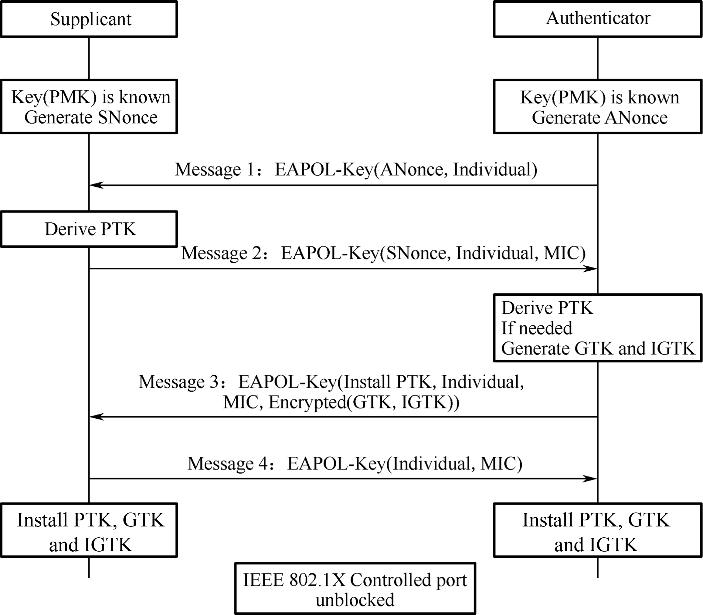
Figure 7.11. Process of Four-Way Handshake
The Authenticator generates a Nonce (ANonce), and sends it to the
Supplicant in EAPOL-Key (Message 1).
Supplicant performs key derivation based on the ANonce, its own
Nonce (SNonce) and PMK, and Authenticator's MAC address . Then it
sends the Authenticator another EAPOL-Key message (Message 2) that
contains the SNonce. Message 2 also carries an MIC value encrypted
by KCK. Once the Authenticator gets the SNonce in Message 2, it
performs calculations similar to that of the Supplicant to verify
whether the message returned is correct. If it is incorrect, which
means the Supplicant's PMK is wrong, the handshake will be
terminated.
If the Supplicant's PMK is correct, the Authenticator will also
perform key derivation. Later, the Authenticator sends the third
EAPOL-Key message (Message 3) to the Supplicant. This message
carries the Group Transient Key (GTK, used to update the group key
encrypted by KEK) and MIC (encrypted by KCK). When the Supplicant
receives Message 3, it will check whether the PMK of the AP is
correct by calculation.
The Supplicant sends the last EAPOL-Key message (Message 4) to the
Authenticator for confirmation. Then both parties will use it to
encrypt data.
So far, the Supplicant and Authenticator have completed key derivation
and pairing. They can eventually communicate with each other.
Bluetooth is a short-range wireless communication technology originally
conceived by Ericsson in 1994. The goal of Bluetooth is to facilitate
transmission and sharing of information over a short distance without
cable connections among mobile devices, embedded devices, computer
peripherals, and household appliances. Compared with other wireless
communication technologies, Bluetooth boasts high security and easy
connection.
üìö Further Reading: Why ‚ÄúBluetooth‚Äù?
The word “Bluetooth” dates back more than a millennia to the Danish King Harald Bluetooth. King Harald is credited with the first unification of Scandinavia. Legend has it that King Harald liked blueberries so much that his teeth were stained blue. So he was called Bluetooth. In 1998, Intel, Nokia, Ericsson, and IBM established a Special Interest Group (SIG) called Bluetooth. The word Bluetooth quickly gained popularity and became synonymous with the short-range wireless communication technology.
Bluetooth adopts decentralised network structure, fast frequency
hopping, and short packet technology to support point-to-point and
point-to-multipoint communication. It works in the 2.4 GHz ISM
(Industrial, Scientific, Medical) band, which is commonly used
worldwide. Bluetooth technology can be divided into two categories,
Bluetooth Classic and Bluetooth Low Energy.
Bluetooth Classic (BR/EDR) generally refers to modules that support the
Bluetooth protocol below version 4.0, and are used for the transmission
of large amounts of data such as voice and music. Bluetooth Classic
protocols have different profiles of personal area networks for
different scenarios. Commonly used profiles are Advanced Audio
Distribution Profile (A2DP) for audio communication, Hands-Free
Profile/Head-Set Profile (HFP/HSP) for hands-free devices, Serial Port
Profile (SPP) for text serial port transparent transmission, and Human
Interface Device (HID) for wireless input/output devices.
Bluetooth Low Energy (LE) is a new type of ultra-low power wireless
communication technology, designed for low-cost, less complicated
wireless body and personal area networks. It is worth mentioning that
Bluetooth LE chips can be powered by button cells. Together with
microsensors, you can use the chips to build embedded or wearable
sensors and applications of sensor networks.
In terms of protocols, Bluetooth 1.1, 1.2, 2.0, 2.1, and 3.0 apply to
Bluetooth Classic, Bluetooth 4.0 supports both Bluetooth Classic and
Bluetooth LE, and all later versions employ Bluetooth LE.
The core system of Bluetooth is composed of Host, Controller, and Host
Controller Interface (HCI). Host is used for application development,
while Controller is for message sending and receiving, physical
connection management, and other basic features which are implemented by dedicated Bluetooth chip manufacturers.
The original design is to run the Host and the Controller independently
on two chips or even systems, and they can communicate through the HCI.
In this way, it is easier to replace and upgrade either module. Although
there are many chips that put both the Host and the Controller together,
they still follow this architecture, except that the HCI is changed from
a hardware communication port to a software one.
The Bluetooth LE protocol stack includes Physical Layer (PHY), Lin
Layer (LL), Logical Link Control and Adaptation Protocol (L2CAP),
Attribute Protocol (ATT), Security Manager Protocol (SMP), Generic
Attribute Profile (GATT), and Generic Access Profile (GAP), as shown in
Figure 7.12.
Figure 7.12. Protocol stack layers of Bluetooth LE
Physical Layer (PHY) specifies the wireless frequency band and
modulation mode used by Bluetooth LE. How the PHY performs
determines the power consumption, sensitivity, and selectivity of
the Bluetooth LE chip and influences other radio frequency
indicators.
Link Layer (LL) only sends or receives data, leaving data
analysis to GAP or ATT at the upper layer. LL is at the core of the
Bluetooth LE protocol stack, as it decides which radio frequency
channel to choose for communication, how to identify data packets
transmitted through the air, when to send data packets, how to
ensure data integrity, and how to manage and control links, how to
receive and retransmit ACKs, etc.
Host Controller Interface (HCI) provides a means of
communication between the Host and the Controller. This layer can be
implemented either by a hardware interface such as UART or USB in
dual-chip architectures, or through a software API in single-chip
architectures.
Logical Link Control and Adaptation Protocol (L2CAP) provides
connection-oriented and connectionless data services to upper layer
protocols with protocol multiplexing capability, segmentation and
reassembly operation, and group abstractions. It also permits
per-channel flow control and retransmission.
Attribute Protocol (ATT) defines data for user commands and
command operations, such as reading or writing certain data.
Bluetooth LE introduces the concept of attributes, which are used to
describe data in a piece. Besides, ATT also defines the ATT commands
that data can use. It is the layer that you will most frequently
deal with.
Security Manager Protocol (SMP) is responsible for the
encryption and security of Bluetooth LE connections, without
affecting user experience.
Generic Attribute Profile (GATT) standardises the data content
in attributes, and use the concept of groups to classify and manage
attributes. Although the BLE protocol stack can operate without
GATT, its interoperability will be compromised. It is GATT and a
rich set of profiles that frees Bluetooth LE from the compatibility
problem faced by other wireless protocols such as ZigBee.
Generic Access Profile (GAP) defines effective data packets in
LL, offering an easiest way to analyse LL payload. It is limited to
features such as broadcasting, scanning, and initiating connections.
Bluetooth can be an Advertiser, a Scanner, or an Initiator. A master
device plays the role of Initiator and Scanner, while a slave device
plays the role of Advertiser.
Bluetooth communication refers to the communication between two or more
Bluetooth devices. It only occurs between masters and slaves, as slave
devices cannot communicate directly.
Master mode
Master (or "central") devices scan for slaves and initiate connection. In theory, if Bluetooth LE Mesh is not used to enable many-to-many device communication, only piconets can be established among devices.
A device with Bluetooth technology can switch between master mode and slave mode. It normally works in slave mode and waits for master devices to connect. When needed, it switches to master mode and calls other devices. To initiate a call in master mode, a Bluetooth device needs to know the Bluetooth address and pairing password of the other device, and start calling after pairing successfully.
Slave mode
Slave (or "peripheral") devices advertise and wait for connections. Once connected, slaves can exchange data with the master.
In summary, a master can search for slaves and actively connects with
them, while a slave cannot initiate any connection but to wait to be
connected.
Now that we've learned about master and slave, let's take a look at how
to build Bluetooth networks. According to topological structures,
Bluetooth networks can be divided into piconets, scatternets, and mesh
networks.
Every time a Bluetooth wireless link is formed, it is within a
context of piconet. A piconet consists of two or more devices that
occupy the same physical channel, which means the devices are
synchronised according to a common clock and frequency hopping sequence.
Figure 7.13 shows the piconet topology.
A scatternet is formed when multiple piconets overlap. Figure
7.14 shows the scatternet topology.
Each piconet that constitutes a scatternet maintains its own master. The
master of one piconet may act as the slave of another piconet at the
same time. In Figure 7.14, the mobile phone is the master of the left
piconet as well as the slave of the right piconet.
Bluetooth Mesh was born after Bluetooth 4.0. It is a Bluetooth LE
network used to establish many-to-many device communication. It allows
the creation of large-scale networks, where dozens, hundreds, or even
thousands of Bluetooth mesh devices can transmit data with each other.
Bluetooth mesh is not the focus of this book, so you only need to know
its definition for now.
Bluetooth first searches for nearby devices through advertising or
scanning, then establishes a connection, and finally form a network for
data transmission.
Usually, the peripheral device (slave) advertises itself and waits for
the central device (master) to discover it and establish GATT connection
for more exchange. In some cases, the peripheral only disseminates its
own information to multiple central devices, without the need for
connection.
To be discovered by a master, a slave will periodically send out
advertising packets at an interval of t. We call every advertising
packet sent an "advertising event", so t is also called the
advertising event interval, as shown in Figure 7.15.
Figure 7.15. Slave advertising interval
Advertising events occur once in a while, and each event lasts for a
period. The Bluetooth chip only enables the radio frequency module to
send packets during the event, hence the relatively high power
consumption. At other times, the chip goes idle, so the average power
consumption is quite low.
Each advertising event contains three packets for the same message to be
advertised on channel 37, 38, and 39 simultaneously. The process of
slave advertising event is shown in Figure 7.16.
Scanning refers to the process when a master tries to find other
Bluetooth LE devices within a certain range using advertising channels.
Different from advertising, no interval or channel is set for scanning.
The master may customise its own settings.
In passive scanning, the scanner only listens to advertising packets
without sending any data to the advertiser., as shown in Figure 7.17.
Figure 7.17. Passive scanning
Once the scanning parameters are set, the master may send commands in
the protocol stack to start scanning. During the process, if the
controller receives an advertising packet that meets the filter policy
or other constraints, it will report an event to the master. In addition to the advertiser's address, the event also includes the data and the
received signal strength indication (RSSI) of the advertising packet.
Developers can estimate the signal path loss based on the RSSI and the
transmission power of the advertising packet. This feature can be used
to develop anti-lost trackers and positioning solutions.
In active scanning, the master can capture not only the advertising
packets sent by slaves but also the scan response packets, and
distinguish the two types. See Figure 7.18 for the process of active
scanning.
Figure 7.18. Active scanning
After the controller receives any data, it will report an event to the
master, containing the advertising type of the LL packet. The master can
thereby decide whether to connect or scan the slave, and distinguish
advertising packets from scan response packets.
The peripheral device starts advertising. Within the T_IFS after
sending an advertising packet, it enables radio frequency to receive
packets from the central device. (T_IFS: Inter Frame Space, the time
interval between two packet transmissions on the same channel)
The central device scans for advertising. Within the T_IFS after
receiving the advertising packet, if it enables scan response, it
will reply to the peripheral device.
Once the peripheral device receives scan response, it will return an
ACK packet and prepare to receive data.
If the central device does not receive the ACK packet, it will
continue sending scan responses until it times out. During this
period, only one ACK packet being received is enough to establish
the connection.
Now that the two devices are connected, they start communicating.
The central device will send data packets to the peripheral at
connection intervals, starting from the time when the advertising
packet is received. The data packets are used to synchronise the
clocks of the two devices and establish communication in
master-slave mode. The process is as follows:
Every time the peripheral device receives a packet from the central device, it resets the starting point to synchronise with the central device (service synchronsied with the client).
Bluetooth LE communication is established in master-slave mode. The central device becomes the master, and the peripheral device becomes the slave. A slave can only send data back to the master within a specified time after the master sends a packet to it.
Connection is established.
The peripheral device automatically stops advertising, and it can no longer be found by other devices.
During the interval between packet transmissions by the central device, the peripheral device may send multiple advertising packets.
The communication sequence is shown in Figure 7.19.
Figure 7.19. Communication sequence
To be disconnected, the central device only needs to stop sending
packets. It can write the MAC address of the peripheral device into
flash, SRAM, or other storage devices to keep monitoring the address,
and reestablish communication when it receives advertising packets from
the peripheral again. In order to save power, the slave will not send
advertising packets if there is no data to be transmitted, and the two
parties will be disconnected due to connection timeout. At this time,
the central device needs to start monitoring, so that when the slave
needs to send data, they can connect again.
With the development of IoT, more and more devices get connected via
Internet. However, such devices do not have rich HCIs as smartphones and
tablets. To connect them to the Internet, users cannot directly enter
the SSID and password of the router. How to empower such devices,
connecting them to the Internet or LANs using the router? This is one of
the important targets of Wi-Fi devices. This section will cover some
common network configuration methods.
Network configuration is to provide SSID and password to Wi-Fi devices,
so that they can connect to a specified AP and join its Wi-Fi network.
The final goal here is to send the SSID and password of the AP to the
Wi-Fi device in different ways, and connect the device to the specified
Wi-Fi network to join the LAN or Internet. Figure 7.20 shows the process
of Wi-Fi network configuration.
Figure 7.20. Process of Wi-Fi configuration
The IoT devices waiting for connection also need to be associated with
an account, so here come some new concepts:
Network configuration in a narrow sense: A Wi-Fi device obtains
the AP information (SSID, password, etc.) and connects to the AP.
Binding: Associating user's application accounts with the
configured device.
Network configuration in a broad sense: Network configuration in a narrow sense + binding.
This section will focus on network configuration in a narrow sense, thus
omitting the binding process. At present, the most popular methods to
configure networks are SoftAP, SmartConfig, and Bluetooth.
SoftAP is a traditional method. First, the IoT device to be configured
establishes an AP. The user connects a smartphone, tablet, or other
devices with HCIs to this AP, and sends information about the network
providing device. Then, the IoT device looks for the corresponding
network and connects with it. Figure 7.21 shows the steps of SoftAP
network configuration.
Figure 7.21. Steps of SoftAP network configuration
The SoftAP mechanism connects devices directly to the LAN without
routers, thereby preventing router compatibility issues. This makes it
easier to successfully configure the network compared with SmartConfig.
But the downside is that there is an extra step for connection, as we
need to manually switch to the IoT SoftAP in the Wi-Fi list. If we want
to access cloud services, we still need a router. Some smartphones may
automatically switch APs, but with iOS 11.0 or previous versions, we
need to do the extra settings manually.
SmartConfig allows smartphones to fill the SSID and password in the
unencrypted header of the MAC packet according to a certain encoding
format, and send them in segments to the IoT device in multiple times by
broadcasting and multicasting. Generally, we need to install an
application on the smartphone for protocol interaction between the two
parties. The steps of SmartConfig network configuration are shown in
Figure 7.23.
Figure 7.23. Steps of SmartConfig network configuration
The frame format of MAC layer in IEEE 802.11 allows for clear
identification of LL payload data, which includes the header and data of
the network layer. This makes it possible to immediately extract and
calculate the length of the payload data as soon as the MAC frames are
received. The payload data here is usually the password. Figure 7.24
shows the packet structure of SmartConfig network configuration.
Figure 7.24. Packet structure of SmartConfig network configuration
Table 7.2 explains the fields of the data packet of SmartConfig network
configuration.
Table 7.2. Fields of the data packet of SmartConfig network configuration
Data Frame
Description
DA
Target MAC Address
SA
Source MAC Address
LENGTH
Payload Data Length
LLC
LLC Head
SNAP
3 B for Manufacturer Code and 2 B for Protocol Type
DATA
Payload Data
FCS
Frame Check Sequence
The sender usually uses the following methods to send data.
The MAC frame format of IEEE 802.11 ensures that the DA, SA, LENGTH,
LLC, SNAP, and FCS fields are always visible to wireless signal monitors
to acquire valid information, regardless of whether the channels are
encrypted. When broadcasting, the sender is limited by the operating
system, leaving only the LENGTH field at its disposal. However, by
specifying a length-encoded communication protocol, a LENGTH field is
enough for the sender to transmit the data needed.
The multicast address is a reserved class D address, with a range of
224.0.0.0 to 239.255.255.255. The mapping between IP and MAC addresses is accomplished by
setting the first 25 bits of the MAC address to 01.00.5E, while the last
23 bits of the MAC address corresponding to the bits of the IP address.
As a result, the sender can encode data in the last 23 bits of the
multicast IP and transmit it through the multicast packet for the
receiver to decode.
SmartConfig offers user-friendly, smooth experience, but it places
stringent requirements on the compatibility of smartphones and routers.
For example, some routers may disable broadcast/multicast packet
forwarding by default, preventing devices from receiving packets
forwarded by the router. In other cases, different frequency bands used
by smartphones and IoT devices can also result in configuration failure.
If a smartphone is connected to a router using a 5 GHz frequency band, a
device using the 2.4 GHz band may not be able to receive data. Such
uncontrollable factors can significantly reduce overall compatibility
and make it hard to successfully configure the network.
If the IoT device to be configured features Bluetooth, the network
binding information can be sent via Bluetooth channel.
The principle behind the network configuration by Bluetooth is similar
to that by SoftAP, except that the communication method used for
transmitting Wi-Fi information is changed from Wi-Fi (AP mode) to
Bluetooth. The IoT device to be configured creates a Bluetooth profile.
The user then connects smartphones, tablets, or other devices with HCIs
to it through a Bluetooth channel, and sends the information needed for
network configuration. After receiving the information, the IoT device
looks for corresponding AP and connects with it. The steps of Bluetooth
network configuration are shown in Figure 7.25.
Figure 7.25. Steps of Bluetooth network configuration
The advantage of Bluetooth network configuration is that it eliminates
the compatibility issues related to routers, producing higher connection
rate. It can also discover and connect devices directly, so there is no
need to turn on the device and connect to its own AP. However, the
compatibility between the Bluetooth module and the mobile phone may
affect network configuration. Additionally, using Bluetooth modules will
increase the cost of the device.
ESP32-C3 chip features both Wi-Fi and Bluetooth LE, thus supporting
different network configuration methods. When it comes to Bluetooth
network configuration, ESP32-C3 offers a comprehensive solution called
BluFi. Figure 7.26 indicates how to configure networks via BluFi.
Direct network configuration refers to sending SSID and password
directly to IoT devices through peripheral interfaces such as UART, SPI,
SDIO, and I2C according to a certain communication protocol. It is also
known as wired network configuration. Once the IoT device receives the
SSID and password, it connects to the AP and then returns the connection
result through the master interface.
Moreover, some devices come with pre-set Wi-Fi information, such as SSID
and password. When such devices are started in specified Wi-Fi
environment, they can automatically connect to the corresponding AP.
Such devices are typically used in large-scale networks, factory
testing, or industrial scenarios. The steps of direct network
configuration are shown in Figure 7.27.
Figure 7.27. Steps of direct network configuration
This method adopts a software solution and is easy to implement. It is
well-suited for devices with Wi-Fi chips or connected by transmission
lines of other protocols. However, transmission lines must be
pre-installed between systems.
The Espressif AT (ESP-AT) command firmware provided by Espressif can be
directly used in mass-produced IoT applications. Developers can easily
join wireless networks by running the Wi-Fi commands. For details,
please refer to ESP-AT User Guide.
RouterConfig is based on Wi-Fi Protected Setup (WPS), a standard
introduced by the Wi-Fi Alliance to address the complex process of
configuring wireless network encryption and authentication settings. The
goal of WPS is to simplify Wi-Fi security and network management for
users. The standard offers two methods, Personal Identification Number
(PIN) method and Push Button Configuration (PBC) method. Figure 7.28
shows the steps of RouterConfig.
Figure 7.28. Steps of RouterConfig
The process is relatively straightforward, but it requires both the
router and the device to support WPS. Unfortunately, many users neglect
encryption security settings due to the cumbersome steps involved, which
can lead to serious security issues. As a result, an increasing number
of routers are abandoning or disabling support for WPS by default. The
method has become less popular in recent years.
üìù Source code
ESP-IDF, the official IoT development framework by Espressif, provides
an example of this network configuration solution. The process there
is quite simple. Visit https://github.com/espressif/esp-idf to see
the example in examples/wifi/wps.
ZeroConfig is a method of using one connected device to configure the
network for another one. This method does not involve smartphones, as
other devices like smart speakers can be used instead.
To initiate the process, the device to be connected sends its MAC
address to the networked device through a custom message. The networked
device then responds by sending back its saved router SSID and password
via another custom message. After connecting, the device can perform
further configuration such as external network binding. The steps of
ZeroConfig network configuration are shown in Figure 7.29.
Figure 7.29. Steps of ZeroConfig
Since the networked device stores the SSID and password of the router,
users do not need to enter them manually. The configuration will be
easier, thus providing better user experience. However, this method
cannot be widely adopted, as there must be networked devices connected
with the router. At the same time, because mobile applications have
limited access, it is impossible to assemble or receive Wi-Fi management
frames through third-party programs. Therefore, smartphones can only be
used to implement this method under certain circumstances.
Phone AP network configuration refers to setting a smartphone as an AP
with a unique name and password, connecting the IoT device to the AP and
sending network binding information. Figure 7.30 shows the steps of
phone AP network configuration.
Figure 7.30. Steps of phone AP network configuration
Phone AP network configuration does not require the IoT device to
support AP mode, so users do not have to do much development work on the
device. It can be used with SmartConfig (simultaneously), making it a
good candidate for backup network configuration. However, the user
experience provided is barely satisfying. Many users struggle with
setting the AP name of the smartphone or even enabling the phone AP.
Particularly on iOS devices, the application cannot automatically create
an AP, so users have to manually modify the device name and enable the
AP. As a result, this method is not suitable for consumer devices.
In addition to the configuration methods above, Espressif also supports
Wi-Fi Easy Connect, also known as Device Provisioning Protocol (DPP).
For more information, please visit https://bookc3/espressif.com/esp-dpp.
This section provides an overview of Wi-Fi APIs, covering how to use the
APIs, to establish STA connection, and to connect in a smart way.
When developing a Wi-Fi application, the most efficient way is to adapt
a similar example for your own requirements. Therefore, if you want to
create a robust application, we suggest that you read this section and
do the practices before getting started with your own project.
The ESP32-C3 Wi-Fi programming model is depicted in Figure 7.31.
Figure 7.31. ESP32-C3 Wi-Fi programming model
The Wi-Fi driver can be considered a black box that knows nothing about
upper-layer code, such as TCP stacks, application tasks, and event
tasks. The application task (code) generally calls Wi-Fi driver APIs to
initialise Wi-Fi and handles Wi-Fi events when necessary. The Wi-Fi
driver receives API calls, handles them, and posts events in the
application.
Wi-Fi event handling is based on the esp_event library. Events are
sent by the Wi-Fi driver to the default event loop. Applications may
handle these events in callbacks registered using
esp_event_handler_register(). Wi-Fi events are also handled by the
esp_netif component to provide a set of default behaviors. For
example, when a Wi-Fi station connects to an AP, esp_netif will
automatically start the Dynamic Host Configuration Protocol (DHCP)
client by default.
When operating in STA mode, ESP32-C3 can connect to an AP as an STA.
The BSS based on the central AP allows for multiple STAs to build a
wireless network, with the AP forwarding all communications within the
network. In this mode, the device is able to access both the external
and internal network directly, using the Internet Protocol (IP) address
assigned by the AP. Figure 7.32 explains Wi-Fi STA mode.
Figure 7.33 shows how to use ESP-IDF components to connect devices to
routers.
Figure 7.33. Using ESP-IDF components to connect devices to
routers
(1) Initialisation. See 1.1, 1.2, and 1.3 in Figure 7.33.
a. Initialise LwIP. Create an LwIP core task and initialise LwIP-related work.
ESP_ERROR_CHECK(esp_netif_init());
b. Initialise event. As introduced before, Wi-Fi event handling is based on the esp_event library, assisted by the esp_netif component. The code to initialise the event is as follows:
(2) Configuration. Once the Wi-Fi driver is initialised, you can
start configuration. At this stage, the driver is in STA mode, so you
may call esp_wifi_set_mode(WIFI_MODE_STA) to put ESP32-C3 into STA
mode. Refer to the code below:
(3) Startup. Call esp_wifi_start() to start the Wi-Fi driver.
ESP_ERROR_CHECK(esp_wifi_start());
The Wi-Fi driver posts WIFI_EVENT_STA_START to the event task; then,
the event task will do some routine work and call the application event
callback function.
The application event callback function relays WIFI_EVENT_STA_START to
the application task, and then we call esp_wifi_connect().
(4) Connection. Once esp_wifi_connect() is called, the Wi-Fi
driver will start the internal scan/connection process.
If the internal scan/connection is successful, WIFI_EVENT_STA_CONNECTED will be generated. In the event task, the DHCP client will be started and trigger the DHCP process. Refer to the
code below:
static void event_handler(void* arg, esp_event_base_t event_base,
int32_t event_id, void* event_data)
{
if (event_base == WIFI_EVENT && event_id == WIFI_EVENT_STA_START) {
esp_wifi_connect();
} else if (event_base == WIFI_EVENT && event_id == WIFI_EVENT_STA_DISCONNECTED) {
if (s_retry_num < EXAMPLE_ESP_MAXIMUM_RETRY) {
esp_wifi_connect();
s_retry_num++;
ESP_LOGI(TAG, "retry to connect to the AP");
} else {
xEventGroupSetBits(s_wifi_event_group, WIFI_FAIL_BIT);
}
ESP_LOGI(TAG, "connect to the AP fail");
} else if (event_base == IP_EVENT && event_id == IP_EVENT_STA_GOT_IP) {
ip_event_got_ip_t* event = (ip_event_got_ip_t*) event_data;
ESP_LOGI(TAG, "got ip:" IPSTR, IP2STR(&event->ip_info.ip));
s_retry_num = 0;
xEventGroupSetBits(s_wifi_event_group, WIFI_CONNECTED_BIT);
}
}
(5) Getting IP. Once the DHCP client is initialised, the "getting
IP" phase will begin. If the IP address is successfully received from
the DHCP server, IP_EVENT_STA_GOT_IP will be triggered and commonly
handled in event task.
In the application event callback, IP_EVENT_STA_GOT_IP is relayed to
the application task. For LwIP-based applications, this marks a special
event which means that everything is ready for the application to
perform subsequent tasks. But remember not to start the socket-related
work before receiving the IP.
(6) Disconnection. Wi-Fi connection may fail because of active
disconnection, wrong password, AP not found, etc. In this case,
WIFI_EVENT_STA_DISCONNECTED will arise and provide the reason for the
failure, such as esp_wifi_disconnect() being called to actively
disconnect.
ESP_ERROR_CHECK(esp_wifi_disconnect());
(7) IP Changed. If the IP address is changed, IP_EVENT_STA_GOT_IP will be triggered with ip_change set to true.
(8) Cleanup, including breaking Wi-Fi connection, stopping and unloading the Wi-Fi driver, etc. The code is as follows:
The wifi_provisioning components provided by ESP32-C3 can transmit
SSID and password of the AP through SoftAP or Bluetooth LE, and then use
them to connect to the AP.
Once the provisioning service is complete, the main application will
release the resources for provisioning and start executing its own
logic. There are two ways to do this. The simpler way is to call
wifi_prov_mgr_wait(). See the code below:
//Wait for the provisioning service to finish
wifi_prov_mgr_wait();
//Release the resources for provisioning
wifi_prov_mgr_deinit();
The other way is to use the callback function of the event. See the code
below:
static void event_handler(void* arg, esp_event_base_t event_base,
int event_id, void* event_data)
{
if (event_base == WIFI_PROV_EVENT && event_id == WIFI_PROV_END) {
//Release the resources for provisioning upon completion
wifi_prov_mgr_deinit();
}
}
To get started, install ESP SoftAP Provisioning on your phone. Next,
turn on the Wi-Fi and power on the device. Ensure that the output log by
the serial port (see Figure 7.34) contains information beginning with
PROV_.
Open the application on your phone and tap "Start Provisioning". Then
you will find the device PROV_DAED2CXXXXX on the screen (refer to Figure
7.35).
Figure 7.35. Startup
Connection
Tap "Connect" to navigate to the Wi-Fi setting interface. Select to
connect the device PROV_DAED2CXXXXX. If connected, you will see the
screen as Figure 7.36.
Figure 7.36. SoftAP connection
The output log is as follows:
I (102906) wifi:station: 88:40:3b:40:c1:13 join, AID=1, bgn, 40U
I (103056) esp_netif_lwip: DHCP server assigned IP to a station, IP is: 192.168.4.2
I (124286) wifi:station: 88:40:3b:40:c1:13 leave, AID = 1, bss_flags is 134259, bss:0x3fca7844
I (124286) wifi:new: <1,0>, old: <1,1>, ap: <1,1>, sta: <0,0>, prof:1
I (149036) wifi:new: <1,1>, old: <1,0>, ap: <1,1>, sta: <0,0>, prof:1
I (149036) wifi:station: 88:40:3b:40:c1:13 join, AID=1, bgn, 40U
I (149246) esp_netif_lwip: DHCP server assigned IP to a station, IP is: 192.168.4.2
Provisioning
Tap "Provision Network" to enter the provisioning screen shown in Figure
7.37.
Figure 7.37. Provisioning
Completion
Tap "Provision" to enter the completion screen shown in Figure 7.38.
Figure 7.38. Completion
The output log is as follows:
I (139471) app: Received Wi-Fi credentials
SSID : myssid
Password : mypassword
.
.
.
I (144091) app: Connected with IP Address:192.168.50.31
I (144091) esp_netif_handlers: sta ip: 192.168.50.31, mask: 255.255.255.0, gw: 192.168.50.1
I (144091) wifi_prov_mgr: STA Got IP
I (144101) app: provisioningsuccessful
I (144101) app: Hello World!
I (145101) app: Hello World!
.
.
.
I (146091) wifi_prov_mgr: Provisioning stopped
I (146101) app: Hello World!
I (147101) app: Hello World!
I (148101) app: Hello World!
The SmartConfig component provided by ESP32-C3 can transmit the SSID and
password of the AP through promiscuous mode, and then use them to
connect to the AP.
This module takes care of Wi-Fi connection, disconnection, reconnection,
scanning, etc., as detailed in the sections before. Additionally, when
the WIFI_EVENT_STA_START event occurs, it will also create a
SmartConfig task.
NETIF event handling
This module helps acquire the IP address. Details are provided in the
sections before. When the IP_EVENT_STA_GOT_IP event occurs, the
connection flag will be set.
SmartConfig event handling
The received request determines how the event is handled and processed.
SmartConfig events are shown in Table 7.6.
Table 7.6. SmartConfig events
Event
Description
SC_EVENT_SCAN_DONE
Scan to obtain the information about nearby APs
SC_EVENT_FOUND_CHANNEL
Get the channel of the target AP
SC_EVENT_GOT_SSID_PSWD
Enter STA mode to get the SSID and password of the target AP
As demonstrated in the code above, a SmartConfig task primarily performs
three functions. First, it sets the SmartConfig type, such as ESP-TOUCH
and ESP-TOUCH V2. Second, after the configuration, it enables
SmartConfig by calling esp_smartconfig_start(). Finally, it checks the
event group in a loop. Upon receiving the SC_EVENT_SEND_ACK_DONE
event, it stops SmartConfig by calling esp_smartconfig_stop().
Main program
It creates an event group to set the flag when a relevant event is
triggered, and then initialises Wi-Fi.
To get started, install Espressif Esptouch on your phone. Then turn on
the Wi-Fi and power on the device. You will see the output log by the
serial port as follows:
I (1084) wifi:mode : sta (30:ae:a4:80:65:7c)
I (1084) wifi:enable tsf
I (1134) smartconfig: SC version: V3.0.1
I (5234) wifi:ic_enable_sniffer
I (5234) smartconfig: Start to find channel...
I (5234) smartconfig_example: Scan done
Connect your phone to Wi-Fi, and enter the password to start
configuration. The SmartConfig interface is shown in Figure 7.39.
Figure 7.39. SmartConfig configuration
The output log is as follows:
I (234592) smartconfig: TYPE: ESPTOUCH
I (234592) smartconfig: T|PHONE MAC:68:3e:34:88:59:bf
I (234592) smartconfig: T|AP MAC:a4:56:02:47:30:07
I (234592) sc: SC_STATUS_GETTING_SSID_PSWD
I (239922) smartconfig: T|pswd: 123456789
I (239922) smartconfig: T|ssid: IOT_DEMO_TEST
I (239922) smartconfig: T|bssid: a4:56:02:47:30:07
I (239922) wifi: ic_disable_sniffer
I (239922) sc: SC_STATUS_LINK
I (239932) sc: SSID:IOT_DEMO_TEST
I (239932) sc: PASSWORD:123456789
I (240062) wifi: n:1 0, o:1 0, ap:255 255, sta:1 0, prof:1
I (241042) wifi: state: init -> auth (b0)
I (241042) wifi: state: auth -> assoc (0)
I (241052) wifi: state: assoc -> run (10)
I (241102) wifi: connected with IOT_DEMO_TEST, channel 1
I (244892) event: ip: 192.168.0.152, mask: 255.255.255.0, gw: 192.168.0.1
I (244892) sc: WiFi Connected to ap
I (247952) sc: SC_STATUS_LINK_OVER
I (247952) sc: Phone ip: 192.168.0.31
I (247952) sc: smartconfig over
Wi-Fi event handling: taking care of Wi-Fi connection,
disconnection, reconnection, scanning, etc., as detailed in the
sections before.
NETIF event handling: acquiring IP address. Details are provided
in the sections before.
BluFi event handling: determined by the received request. BluFi
events are shown in Table 7.8.
Table 7.8. BluFi events
Event
Description
ESP_BLUFI_EVENT_INIT_FINISH
Initialise BluFi features, name the device, and send specified broadcast data
ESP_BLUFI_EVENT_DEINIT_FINISH
Handle deinit configuration events
ESP_BLUFI_EVENT_BLE_CONNECT
Connect to Bluetooth LE and put the device into safe mode
ESP_BLUFI_EVENT_BLE_DISCONNECT
Set Bluetooth LE to disconnect and reconnect
ESP_BLUFI_EVENT_SET_WIFI_OPMODE
Put ESP32-C3 into operating mode
ESP_BLUFI_EVENT_REQ_CONNECT_TO_AP
Disconnect from the original Wi-Fi and connect to the specified Wi-Fi
ESP_BLUFI_EVENT_REQ_DISCONNECT_FROM_AP
Disconnect from the AP currently connected to ESP32-C3
ESP_BLUFI_EVENT_REPORT_ERROR
Send error messages
ESP_BLUFI_EVENT_GET_WIFI_STATUS
Get Wi-Fi status, including the current Wi-Fi mode and whether it is connected
ESP_BLUFI_EVENT_RECV_SLAVE_DISCONNECT_BLE
Notify BluFi that the GATT connection is closed
ESP_BLUFI_EVENT_RECV_STA_BSSID
Enter STA mode and get the BSSID of the target AP
ESP_BLUFI_EVENT_RECV_STA_SSID
Enter STA mode and get the SSID of the target AP
ESP_BLUFI_EVENT_RECV_STA_PASSWD
Enter STA mode and get the password of the target AP
ESP_BLUFI_EVENT_RECV_SOFTAP_SSID
Enter SoftAP mode and get the custom AP SSID
ESP_BLUFI_EVENT_RECV_SOFTAP_PASSWD
Enter SoftAP mode and get the custom AP password
ESP_BLUFI_EVENT_RECV_SOFTAP_MAX_CONN_NUM
Set the maximum number of connected devices in SoftAP mode
ESP_BLUFI_EVENT_RECV_SOFTAP_AUTH_MODE
Enter authentication mode in SoftAP mode
ESP_BLUFI_EVENT_RECV_SOFTAP_CHANNEL
Set the channel in SoftAP mode
ESP_BLUFI_EVENT_GET_WIFI_LIST
Obtain the SSID list, channel, and STA MAC address scanned over the air
ESP_BLUFI_EVENT_RECV_CUSTOM_DATA
Print the received data and trim it to fit the application
Main program: initialising Wi-Fi, initialising and enabling
Bluetooth controller, initialising and enabling Bluetooth protocol,
obtaining Bluetooth address and BluFi version, processing Bluetooth
GAP events, and creating BluFi events.
To get started, install EspBlufi on your phone. Turn on the Wi-Fi and
power on the device. You will see the output log by the serial port as
follows:
I (516) phy_init: phy_version 500,985899c,Apr 19 2021,16:05:08
I (696) wifi:set rx active PTI: 0, rx ack PTI: 12, and default PTI: 1
I (908) wifi:mode : sta (30:ae:a4:80:41:55)
I (908) wifi:enable tsf
W (706) BTDM_INIT: esp_bt_controller_mem_release not implemented, return OK
I (706) BTDM_INIT: BT controller compile version [9c99115]
I (716) coexist: coexist rom version 9387209
I (726) BTDM_INIT: Bluetooth MAC: 30:ae:a4:80:41:56
I (746) BLUFI_EXAMPLE: BD ADDR: 30:ae:a4:80:41:56
I (1198) BLUFI_EXAMPLE: BLUFI VERSION 0102
I (1198) BLUFI_EXAMPLE: BLUFI init finish
Open the application on your phone and pull down to refresh. You will
see the information about nearby Bluetooth devices on the screen as
shown in Figure 7.40.
Figure 7.40. EspBlufi startup
Connection
Select the ESP32-C3 module BLUFI_DEVICE to get details about the device.
Tap "Connect" to connect with Bluetooth. If connected, you will see the
interface as Figure 7.41.
Figure 7.41. Bluetooth connected
The output log is as follows:
I (32736) BLUFI_EXAMPLE: BLUFI ble connect
Provisioning
Tap "Provision network" in Figure 7.41 to enter the provisioning
interface shown in Figure 7.42.
Figure 7.42. Provisioning
STA connection
Tap "OK" in Figure 7.42 to configure the network. If the configuration
succeeds, you will see the STA connected interface shown in Figure 7.43.
Details about STA connection in Wi-Fi mode will be displayed at the
bottom of the screen, including the BSSID and SSID of the AP and the
connection status.
Figure 7.43. STA connected
The output log is as follows:
I (63756) BLUFI_EXAMPLE: BLUFI Set WIFI opmode 1
I (63826) BLUFI_EXAMPLE: Recv STA SSID NETGEAR
I (63866) BLUFI_EXAMPLE: Recv STA PASSWORD 12345678
I (63936) BLUFI_EXAMPLE: BLUFI requset wifi connect to AP
I (65746) wifi:new: <8,2>, old: <1,0>, ap: <255,255>, sta: <8,2>, prof:1
I (66326) wifi:state: init -> auth (b0)
I (67326) wifi:state: auth -> init (200)
I (67326) wifi:new: <8,0>, old: <8,2>, ap: <255,255>, sta: <8,2>, prof:1
I (69516) wifi:new: <10,0>, old: <8,0>, ap: <255,255>, sta: <10,0>, prof:1
I (69516) wifi:state: init -> auth (b0)
I (69566) wifi:state: auth -> assoc (0)
I (69626) wifi:state: assoc -> run (10)
I (69816) wifi:connected with NETGEAR, aid = 1, channel 10, BW20, bssid = 5c:02:14:03:a5:7d
I (69816) wifi:security: WPA2-PSK, phy: bgn, rssi: -48
I (69826) wifi:pm start, type: 1
I (69826) wifi:set rx beacon pti, rx_bcn_pti: 14, bcn_timeout: 14, mt_pti: 25000, mt_time: 10000
I (69926) wifi:BcnInt:102400, DTIM:1 W (70566) wifi:idx:0 (ifx:0, 5c:02:14:03:a5:7d), tid:0, ssn:2, winSize:64
I (71406) esp_netif_handlers: sta ip: 192.168.31.145, mask: 255.255.255.0, gw:192.168.31.1
In this section, we will start by programming for Wi-Fi connection based
on the LED dimming driver project, and then give an example of smart
Wi-Fi configuration with the Smart Light project.
After learning the basics of Wi-Fi connection, we may put it into
practice based on ESP32-C3, and encapsulate the Wi-Fi features according
to application requirements, so as to provide APIs for Wi-Fi
initialisation and Wi-Fi connection initialisation.
This API specifies parameters for ESP32-C3, such as GPIO pins, fading
time, breathing cycle, PWM frequency, clock source of the PWM
controller, and PWM duty cycle resolution. For details, please refer to
Chapter 5.
Before initialising Wi-Fi, it is necessary to initialise the NVS library
as the Wi-Fi component needs to acquire and store certain parameters.
The API is as follows:
Now, we will turn to Wi-Fi configuration based on ESP32-C3. Similar to
Wi-Fi connection, we will encapsulate the smart Wi-Fi configuration
features according to application requirements, in order to provide APIs
for initialising smart Wi-Fi configuration.
After initialising the provisioning, the program will check its status.
If the device has been provisioned, the program will complete Wi-Fi
connection using the router information; otherwise, it will output a QR
code for you to start provisioning.
wifi_prov_mgr_initialize();
To integrate the code for Bluetooth network configuration into the
project in section 7.5.1, please refer to
book-esp32c3-iot-projects/device_firmware/4_network_config.
With the ESP BLE Provisioning App, you may compile and run the code on
the development board. The output is as follows.
In this chapter, we first introduced two important technologies for
network configuration of IoT devices, Wi-Fi and Bluetooth. Then we
covered some concepts and mechanisms of Wi-Fi network configuration,
including SoftAP, SmartConfig, Bluetooth, direct network configuration,
RouterConfig, ZeroConfig, and phone AP network configuration. We also
analysed the code for SoftAP, SmartConfig, and Bluetooth network
configuration, combined with Wi-Fi programming. Finally, we tried out
smart Wi-Fi configuration with the Smart Light project.
In Chapter 7, we learnt about basics of Wi-Fi and Bluetooth, as well as several common network configuration methods. Through the introduction and practice in Chapter 7, you should be able to configure devices and connect them to Wi-Fi routers. On this basis, this chapter will introduce how to implement local control of devices based on Wi-Fi and Bluetooth, and realize local control with ESP32-C3. It is intended to explain the definition and process of local control, along with some common local control communication protocols, and help you to build your own local control framework for smart lights based on ESP32-C3.
This section first introduces what local control is and its usage conditions, scenarios, and advantages. Then it will expound on the device discovery function and data communication protocols involved in local control, and how to choose the data transmission medium for local control. After reading this section, you will have a full understanding of local control of devices.
As the name suggests, local control refers to operating controlled devices within a certain distance through a series of methods such as hardware switches, touch buttons, infrared remote control, smartphones, and computer networks. It is ubiquitous in our daily life, such as setting air conditioners through infrared remote controls, controlling voice-activated equipment through voice commands, and turning on household lighting through switches or smartphone apps. The concept and technology of local control have become deeply integrated into every aspect of our daily lives.
You may have noticed that some of the examples listed above are performed through hardware circuit switches or wireless communication technologies such as infrared remote control, while others involve voice recognition, and data communication technologies such as the Internet of Things. In this book, we will focuse on the data communication technology of IoT, and help you build your own local control framework to control the ESP32-C3 smart lights.
Within the Internet of Things, each device needs to transmit commands through certain data communication method. Some common ways are as follows:
Using Wi-Fi or Ethernet. Generally, devices based on Wi-Fi and
Ethernet natively run the TCP/IP protocol stack, which greatly
reduces the workload of protocol adaptation and development. When
performing local communication, they also need a gateway or Wi-Fi
router.
Using short-range wireless communication technologies such as
Bluetooth and ZigBee, which is suitable for data transmission
between low-speed and low-power devices.
According to the functional characteristics of ESP32-C3, we will introduce two commonly used local control technologies in this chapter, namely through Wi-Fi or Bluetooth within a LAN.
The network topology centered on Wi-Fi is shown in Figure 8.1. The command sending devices (smartphone or PC) should be in the same LAN as the controlled device, and send data to the device through Wi-Fi. But for Bluetooth control, there is no need of Wi-Fi routers, as data can be directly transmitted between the smartphone and the controlled device via Bluetooth.
Figure 8.1. Network topology centered on Wi-Fi within a LAN
Using Bluetooth is simpler than using Wi-Fi as Bluetooth does not require Wi-Fi routers. However, in practice, if the IoT device wants to access cloud platforms, it needs Wi-Fi routers to connect to the Internet and then the cloud platform. Moreover, smartphones are mostly connected to Wi-Fi routers. Therefore, an LAN usually includes Wi-Fi routers, which makes it convenient to use Wi-Fi for local control. If the IoT device does not need access to cloud platforms, Bluetooth can be a good option for local control. You can select one of the methods according to whether your device needs access to cloud platforms.
If yes, it is recommended to choose Wi-Fi, as it supports
multiple smartphones controlling one device at the same time, and
its transmission bandwidth is larger than that of Bluetooth. You can
use Bluetooth only for network configuration, and then stop its
protocol stack to save ESP32-C3's resources.
If no, you can use Bluetooth instead of Wi-Fi to exchange data
between the smartphone and controlled device.
Most IoT devices are connected to cloud platforms which forward commands from smartphones to implement remote control. Such control depends on the Internet provided by Wi-Fi routers to maintain the link between the controlled device and cloud platforms. But once the Wi-Fi routers disconnect from the Internet, remote control will be paralyzed. At this point, local control will be a good supplement for sending commands, thus preventing the IoT devices from a full-out breakdown due to network exceptions.
As shown in Figure 8.1, a local control framework based on Wi-Fi in a LAN consists of a Wi-Fi router, a controlling device, and a controlled device. The controlling device can be a smartphone or a computer that can run TCP/IP protocol stack. It should be connected to the same Wi-Fi router as the controlled device, to ensure that they are in the same LAN for data communication.
As for local control based on Bluetooth, Wi-Fi routers are not needed. Smartphones can directly connect to the controlled device through Bluetooth and realize point-to-point data transmission.
Local control only requires data to be transmitted within the LAN instead of through the Internet. Therefore, it functions with shorter delay and faster response. Moreover, as the data only interacts within the LAN composed of the controlled device, a Wi-Fi router and the controlling devices, there is lower probability of data being stolen or modified, hence enhancing data privacy and security. In addition, local control saves Internet bandwidth. It is not vulnerable to Internet disconnection. As long as the two parties are in the same LAN or linked through Bluetooth, the control can be maintained. For some products without access to cloud platforms, local control is the only means for smartphones to take charge of them.
Considering these advantages, local control is increasingly favored by IoT companies. More and more SDKs and products support local control functions. For example, the ESP RainMaker, a complete IoT platform developed by Espressif, includes a smartphone app to implement local control.
For local control based on Wi-Fi wireless transmission media, data runs on the TCP/IP protocol stack. The following two issues should be solved since the smartphone is not directly connected to the controlled device. How does the smartphone find the controlled device, and how does the smartphone communicate with the controlled device?
How does the smartphone find the controlled device, that is, how does the smartphone know the IP address of the controlled device? Since all data is transmitted based on the IP layer, obtaining the IP address of the controlled device is a prerequisite for subsequent data communication. You may consider: "I can log in to the Wi-Fi router interface and check the IP address of the controlled device directly on the Wi-Fi router interface, right?" Yes, you can certainly obtain the IP address of the controlled device in this way. However, manually querying IP addresses completely goes against the original intention of IoT technology to bring convenience. Thus, a technology is required to automatically discover the controlled device. This part will be discussed in detail in section 8.2.
For the local control frameworks based on Bluetooth control, you can learn from the Bluetooth scanning introduced in Chapter 7 that the Bluetooth of the controlled device will broadcast its own Bluetooth information, and the smartphone only needs to scan the Bluetooth of the controlled device. Discovering the controlled device through Bluetooth is much simpler than Wi-Fi. After the smartphone connects to the Bluetooth of the controlled device, it can send data to the device. In addition, Bluetooth transmission does not depend on the TPC/IP protocol stack, as it has its own transmission protocol. This part will be introduced in detail in section 8.3.
How does smartphones communicate with controlled devices?
When using Wi-Fi wireless transmission media, a smartphone can communicate with the controlled device through TCP/IP protocol or UDP protocol after obtaining the IP address of the controlled device. Generally speaking, as the receiver, the controlled device receives control commands sent by the smartphone in local control; and the smartphone,as the sender, sends control commands to the controlled device. Therefore, the controlled device plays the role of a server; and the smartphone plays the role of a client, allowing multiple clients to send control commands to the server. This part will be introduced in detail in section 8.3.
In section 8.1.4, we mentioned how to discover controlled devices in the LAN using Wi-Fi wireless transmission media. In the TCP/IP protocol stack, discovering the controlled device means obtaining the IP address of the controlled device.
In a LAN, how to obtain the peer's IP address is a problem worth studying. A common protocol for obtaining the peer's IP address is the Reverse Address Resolution Protocol (RARP). This protocol sends query packets with knowing the peer's MAC address, and the gateway server parses its own ARP table to obtain the IP address of the queried MAC device. If you are familiar with LAN, you may immediately associate with the Address Resolution Protocol (ARP), which is a protocol that sends query packets with knowing the peer's IP address. The peer device or gateway device replies with the MAC address corresponding to the IP address after querying its own ARP table. ARP and RARP are a pair of protocols that mutually resolve network layer addresses and data link layer addresses. However, these two protocols both need to know the peer's network layer address or data link layer address. This feature brings difficulty to IoT applications as the network layer address and data link layer address of a device in the LAN are difficult to be obtained. Thus, this subsection will introduce the local discovery technology that is truly suitable for IoT.
Local discovery is to discover information about nodes in the LAN, including address information for communication with nodes, application service information supported by nodes, and customised information. For example, mDNS (Multicast DNS, which will be introduced in subsection 8.2.4) is a commonly-used local discovery protocol. The principle of local discovery is to send a message, and the peer will inform the sender of its device information after receiving the message. Now the problem that needs to be solved is how to ensure that the peer can receive the message sent by the sender.
In fact, if you understand the classification of IP addresses, you will know that in addition to the more commonly-used point-to-point communication (unicast), there are also one-to-many (multicast) and one-to-all (broadcast) communications. IP addresses can be divided into unicast addresses, multicast addresses, and broadcast addresses. Unicast needs to know the peer's IP address, so it is not suitable for local discovery. Multicast and broadcast do not need to know the peer's IP address. They send messages to specific addresses, and the peer can receive the messages as long as it monitors this address. Thus, multicast and broadcast are suitable for discovering devices in the LAN, and the peer can receive the message sent by the sender with these two technologies.
It can be used to broadcast an ARP request in the local network: "Please tell me what the MAC address of the device with IP address a.b.c.d is". ARP broadcast is MAC broadcast on layer 2 (link layer), not the IP broadcast on layer 3 (network layer).
If there is a DHCP server on the local network, the DHCP client sends a
DHCP request for the destination IP address (usually 255.255.255.255),
and the DHCP server on the same network can receive the request and
reply with an assigned IP address.
Broadcast mainly uses the UDP protocol (see subsection 8.3.3 for
details) instead of the TCP protocol (see subsection 8.3.1 for details)
as it is more suitable for unicast.
Broadcast addresses include MAC broadcast addresses on layer 2 (link layer) (FF:FF:FF:FF:FF:FF) and IP broadcast addresses on layer 3 (network layer) (255.255.255.255), hereinafter referred to as layer 2 addresses and layer 3 addresses. This section mainly introduces layer 3 addresses. Generally, when the layer 3 address of a message is all 255, the layer 2 address is usually all FF. This is because a message with a layer 3 address full of 255 means that all devices in the local network will receive this message. If the layer 2 address of the message is not all FF, the message will be discarded during the layer 2 address processing of the receiving device. For the receiving device, if the layer 2 address of the message is not a broadcast address, nor the local MAC address and multicast MAC address (such as 01:00:5E:XX:XX:XX), it will be discarded and not processed. Therefore, generally, if the layer 3 address is a broadcast address, so is the layer 2 address.
IPv4 addresses consist of a subnet ID and a host ID. For example, for a device with an IP address of 192.168.3.4 and a subnet mask of 255.255.255.0, its subnet ID and host ID are calculated from the IP address and subnet mask. In this example, the subnet ID is 192.168.3.0 and the host ID is 4. When the subnet ID and host ID are all 255, it is a broadcast address; it is also a broadcast address when only the host ID is all 255. For example, if you have a subnet of 192.168.1/24, then 192.168.1.255 is the broadcast address of this subnet.
You may wonder, what is the difference between a broadcast address with a subnet ID and host ID of all 255 and a broadcast address with only a host ID of 255?
The broadcast range of the first address is larger than that of a specific subnet. For example, a Wi-Fi router has two subnets, 192.168.1/24 and 192.168.2/24. If a host with IP address of 192.168.1.2 in the subnet 192.168.1/24 sends a message to the destination address 192.168.1.255, the Wi-Fi router will only forward the message to the host in the subnet 192.168.1/24, and will not forward it to the host in the subnet 192.168.2/24. If the host sends a message to the destination address 255.255.255.255, the Wi-Fi router will forward the message to hosts in both subnets. Therefore, the broadcast address with a host ID of 255 is also called a subnet-directed broadcast address. By using a subnet-directed broadcast address, you can send messages to a specified subnet, so that these messages will not be sent to the subnets that do not need them in the LAN, thus saving network resources.
The function esp_send_broadcast() sends UDP broadcast packets with the data "Are you Espressif IOT Smart Light" to the LAN, and then waits for the peer to reply. This function uses the standard interface of Berkeley sockets, also known as BSD socket. Berkeley socket is a common network interface in UNIX systems, which not only supports different network types, but also is a communication mechanism between internal processes. The TCP/UDP network programming covered in this book applies Berkeley sockets. If you are interested, you can read the UNIX Network Programming (Volume 1): Socket Networking API published by Posts & Telecommunications Press to learn more about Berkeley socket programming. In this book, we will only briefly introduces how to use socket programming.
In this section, we will introduce how to use socket(AF_INET, SOCK_DGRAM, 0) to create a UDP socket, and then use setsockopt() to enable socket support for broadcasting. Then we will set the destination address for broadcasting to all 255 and the port to 3333, and call sendto()to send the message. You can determine whether the data is sent successfully according to the return value of the sendto() function. The code is as below:
esp_err_t esp_send_broadcast(void)
{
int opt_val = 1;
esp_err_t err = ESP_FAIL;
struct sockaddr_in from_addr = {0};
socklen_t from_addr_len = sizeof(struct sockaddr_in);
char udp_recv_buf[64 + 1] = {0};
//Create an IPv4 UDP socket
int sockfd = socket(AF_INET, SOCK_DGRAM, 0);
if (sockfd == -1) {
ESP_LOGE(TAG, "Create UDP socket fail");
return err;
}
//Set SO_BROADCAST socket option, and use it to send broadcast
int ret = setsockopt(sockfd, SOL_SOCKET, SO_BROADCAST, &opt_val, sizeof(int));
if (ret < 0) {
ESP_LOGE(TAG, "Set SO_BROADCAST option fail");
goto exit;
}
//Set broadcast destination address and port
struct sockaddr_in dest_addr = {
.sin_family = AF_INET,
.sin_port = htons(3333),
.sin_addr.s_addr = htonl(INADDR_BROADCAST),
};
char *broadcast_msg_buf = "Are you Espressif IOT Smart Light";
//Call sendto() to send broadcast data
ret = sendto(sockfd, broadcast_msg_buf, strlen(broadcast_msg_buf), 0, (struct sockaddr *)&dest_addr, sizeof(struct sockaddr));
if (ret < 0) {
ESP_LOGE(TAG, "Error occurred during sending: errno %d", errno);
} else {
ESP_LOGI(TAG, "Message sent successfully");
ret = recvfrom(sockfd, udp_recv_buf, sizeof(udp_recv_buf) - 1, 0, (struct sockaddr *)&from_addr, (socklen_t *)&from_addr_len);
if (ret > 0) {
ESP_LOGI(TAG, "Receive udp unicast from %s:%d, data is %s", inet_ntoa (((struct sockaddr_in *)&from_addr)->sin_addr), ntohs(((struct sockaddr_in *)& from_addr)->sin_port), udp_recv_buf);
err = ESP_OK;
}
}
exit:
close(sockfd);
return err;
}
The function esp_receive_broadcast() implements reception of broadcast packets and unicast replies. The implementation logic of a receiver is same as that of the sender. First create a UDP socket, and set the source address and port number of the message to be listened. Generally, it is used as a server. The source address of the message is set to 0.0.0.0, which means that the source address of the message is not verified. Call bind() to bind the socket, and then use recvfrom() to receive the message. When a broadcast packet carrying the data "Are you Espressif IOT Smart Light" is received, the IP address and port number of the peer are saved in from_addr, which will be sent to the peer in the form of unicast. The code is as below:
esp_err_t esp_receive_broadcast(void)
{
esp_err_t err = ESP_FAIL;
struct sockaddr_in from_addr = {0};
socklen_t from_addr_len = sizeof(struct sockaddr_in);
char udp_server_buf[64+1] = {0};
char *udp_server_send_buf = "ESP32-C3 Smart Light https 443";
//Create an IPv4 UDP socket
int sockfd = socket(AF_INET, SOCK_DGRAM, 0);
if (sockfd == -1) {
ESP_LOGE(TAG, "Create UDP socket fail");
return err;
}
//Set broadcast destination address and port
struct sockaddr_in server_addr = {
.sin_family = AF_INET,
.sin_port = htons(3333),
.sin_addr.s_addr = htonl(INADDR_ANY),
};
int ret = bind(sockfd, (struct sockaddr *)&server_addr, sizeof(server_addr));
if (ret < 0) {
ESP_LOGE(TAG, "Bind socket fail");
goto exit;
}
//Call recvfrom()to receive broadcast data
while (1) {
ret = recvfrom(sockfd, udp_server_buf, sizeof(udp_server_buf) - 1, 0, (struct sockaddr *)&from_addr, (socklen_t *)&from_addr_len);
if (ret > 0) {
ESP_LOGI(TAG, "Receive udp broadcast from %s:%d, data is %s",
inet_ntoa (((struct sockaddr_in *)&from_addr)->sin_addr),
ntohs(((struct sockaddr_in *)& from_addr)->sin_port),udp_server_buf);
//Upon reception of broadcast request, send data communication port of peer through unicast
if (!strcmp(udp_server_buf, "Are you Espressif IOT Smart Light")){
ret = sendto(sockfd, udp_server_send_buf, strlen(udp_server_send_buf), 0, (struct sockaddr *)&from_addr, from_addr_len);
if (ret < 0) {
ESP_LOGE(TAG, "Error occurred during sending: errno %d", errno);
} else {
ESP_LOGI(TAG, "Message sent successfully");
}
}
}
}
exit:
close(sockfd);
return err;
}
Add the sender and receiver code to the Wi-Fi Station example to ensure they are connected to the same Wi-Fi router. The log of broadcast sending is as follows:
I (774) wifi:mode : sta (c4:4f:33:24:65:f1)
I (774) wifi: enable tsf
I (774) wifi station: wifi_init_sta finished
I (784) wifi:new: <6,0>, old: <1,0>, ap: <255,255>, sta: <6,0>, prof:1
I (794) wifi:state: auth -> assoc (0)
I (814) wifi:state: assoc -> run (10)
I (834) wifi: connected with myssid, aid = 1, channel 6, BW20, bssid = 34:29:12:43:c5:40
I (834) wifi:security: WPA2-PSK, phy: bgn, rssi: -23
I (834) wifi: pm start, type: 1
I (884) wifi: AP's beacon interval = 102400 us, DTIM period = 1
I (1544) esp netif handlers: sta ip: 192.168.3.5, mask: 255.255.255.0, gw: 192.168.3.1
I (1544) wifi station: got ip:192.168.3.5 I (1544) wifi station: connected to ap
SSID: myssid password: 12345678
I (1554) wifi station: Message sent successfully
I (1624) wifi station: Receive udp unicast from 192.168.3.80:3333, data is ESP32-C3 Smart Light https 443
The log of broadcast reception is as follows:
I (1450) wifi:new: <6,0>, old: <1,0>, ap: <255,255>, sta: <6,0>, prof:1
I (2200) wifi:state: init -> auth (b0)
I (2370) wifi:state: auth -> assoc (0)
I (2380) wifi:state: assoc -> run (10)
I (2440) wifi: connected with myssid, aid = 2, channel 6, BW20, bssid = 34:29:12:43:c5:40
I (2450) wifi:security: WPA2-PSK, phy: bgn, rssi: -30
I (2460) wifi: pm start, type: 1
I (2530) wifi: AP's beacon interval = 102400 us, DTIM period = 1
I (3050) esp_netif_handlers: sta ip: 192.168.3.80, mask: 255.255.255.0, gw: 192.168.3.1
I (3050) wifi station: got ip:192.168.3.80
I (3050) wifi station: connected to ap SSID: myssid password: 12345678
W (17430) wifi: <ba-add>idx:0 (ifx:0, 34:29:12:43:c5:40), tid:5, ssn:0, winSize:64
I (26490) wifi station: Receive udp broadcast from 192.168.3.5:60520, data is Are you Espressif IOT Smart Light
I (26500) wifi station: Message sent successfully
I (382550) wifi station: Receive udp broadcast from 192.168.3.5:63439, data is Are you Espressif IOT Smart Light
I (382550) wifi station: Message sent successfully
The log of broadcast sending indicates that the sender sent a UDP broadcast packet with data "Are you Espressif IOT Smart Light". The broadcast receiving log indicates that the receiver listens to the broadcast packet of the local network and replies with a unicast packet carrying the data "ESP32-C3 Smart Light https 443" upon receiving a packet carrying "Are you Espressif IOT Smart Light". In this way, local devices can be discovered. After receiving the unicast reply from the receiver, the sender can confirm the IP address of the peer and know the application protocol and port number for subsequent data communication from the carried data.
The broadcast protocol of the local network can complete the device discovery function. However, broadcasting the discovery request to all devices on the local network will cause a certain burden on the local network and host. Therefore, discovering devices by broadcasting is not a good choice.
Multicast refers to sending messages to interested receivers. Compared
with the two "extremes" of unicast and broadcast addressing schemes
(either one or all), multicast provides a compromise solution. As the
name implies, multicast mainly emphasises the concept of groups, that
is, a host can send a message to a group address, and all hosts that
join this group can receive the message. This is somewhat like
subnet-directed broadcast, but more flexible than it, because a host can
join or leave a certain group at any time, thus reducing the burden on
the local network and hosts.
Internet Group Management Protocol (IGMP) is a protocol responsible for
managing IP multicast members, which is used to establish and maintain
multicast group membership relationship between an IP host and its
directly adjacent multicast Wi-Fi routers. For multicast, Wi-Fi routers
need to support the IGMP protocol.
The destination addresses of multicast messages use a class D IP
address. The first byte starts with binary numbers 1110, and it ranges
from 224.0.0.0 to 239.255.255.255. Since the multicast IP address
identifies a group of hosts, the multicast IP address can only be used
as the destination address, not the source address, which is always a
unicast address.
A multicast group is a group identified by a specific multicast address.
When members inside or outside the group send a message to this
multicast address, group members identified by the multicast address can
receive the message. Multicast groups can be permanent or temporary.
Among multicast addresses, multicast addresses officially assigned are
called permanent multicast groups, while those that are neither reserved
nor permanent are called temporary multicast groups. The numbers of
hosts in permanent and temporary multicast groups are dynamic and may
even be zero.
Multicast addresses are classified as follows:
224.0.0.0 ~ 224.0.0.255: Reserved multicast addresses
(permanent multicast groups). The address 224.0.0.0 is not
allocated, and the others are used for routing protocols.
224.0.1.0 ~ 224.0.1.255: Public multicast addresses, which can
be used on the Internet.
224.0.2.0 ~ 238.255.255.255: Multicast addresses available to
users (temporary multicast groups), which are valid throughout the
network.
239.0.0.0 ~ 239.255.255.255: Multicast addresses for local
management, which are valid only within specific local ranges.
The implementation of multicast sending is more complex than that of
broadcast sending. Multicast sending requires setting the sending
interface of the multicast packets. If you need to receive packets from
a certain multicast group, you also need to join the multicast group.
The function esp_join_multicast_group() implements the setting of the
multicast group sending interface and the function of joining the
multicast group. The function esp_send_multicast() implements the
creation, binding, configuration of destination address and port of
regular UDP sockets, and sending and receiving functions. In addition,
TTL settings are also added to ensure that the multicast group can only
be performed in the LAN of this route. The code is as below:
#define MULTICAST_IPV4_ADDR "232.10.11.12"
int esp_join_multicast_group(int sockfd)
{
struct ip_mreq imreq = { 0 };
struct in_addr iaddr = { 0 };
int err = 0;
//Configure sending interface of multicast group
esp_netif_ip_info_t ip_info = { 0 };
err = esp_netif_get_ip_info(esp_netif_get_handle_from_ifkey("WIFI_STA_DEF"), &ip_info);
if (err ! = ESP_OK) {
ESP_LOGE(TAG, "Failed to get IP address info. Error 0x%x", err);
goto err;
}
inet_addr_from_ip4addr(&iaddr, &ip_info.ip);
err = setsockopt(sockfd, IPPROTO_IP, IP_MULTICAST_IF, &iaddr, sizeof(struct in_addr));
if (err < 0) {
ESP_LOGE(TAG, "Failed to set IP_MULTICAST_IF. Error %d", errno);
goto err;
}
//Configure the address of monitoring multicast group
inet_aton(MULTICAST_IPV4_ADDR, &imreq.imr_multiaddr.s_addr);
//Configure the socket to join the multicast group
err = setsockopt(sockfd, IPPROTO_IP, IP_ADD_MEMBERSHIP, &imreq, sizeof(struct ip_mreq));
if (err < 0) {
ESP_LOGE(TAG, "Failed to set IP_ADD_MEMBERSHIP. Error %d", errno);
}
err:
return err;
}
esp_err_t esp_send_multicast(void)
{
esp_err_t err = ESP_FAIL;
struct sockaddr_in saddr = {0};
struct sockaddr_in from_addr = {0};
socklen_t from_addr_len = sizeof(struct sockaddr_in);
char udp_recv_buf[64 + 1] = {0};
//Create an IPv4 UDP socket
int sockfd = socket(AF_INET, SOCK_DGRAM, 0);
if (sockfd == -1) {
ESP_LOGE(TAG, "Create UDP socket fail");`
return err;
}
//Bind socket
saddr.sin_family = PF_INET;
saddr.sin_port = htons(3333);
saddr.sin_addr.s_addr = htonl(INADDR_ANY);
int ret = bind(sockfd, (struct sockaddr *)&saddr, sizeof(struct sockaddr_in));
if (ret < 0) {
ESP_LOGE(TAG, "Failed to bind socket. Error %d", errno);
goto exit;
}
//Set multicast TTL to 1, limiting the multicast packet to one route
uint8_t ttl = 1;
ret = setsockopt(sockfd, IPPROTO_IP, IP_MULTICAST_TTL, &ttl, sizeof(uint8_t));
if (ret < 0) {
ESP_LOGE(TAG, "Failed to set IP_MULTICAST_TTL. Error %d", errno);
goto exit;
}
//Join the multicast group
ret = esp_join_multicast_group(sockfd);
if (ret < 0) {
ESP_LOGE(TAG, "Failed to join multicast group");
goto exit;
}
//Set multicast destination address and port
struct sockaddr_in dest_addr = {
.sin_family = AF_INET,
.sin_port = htons(3333),
};
inet_aton(MULTICAST_IPV4_ADDR, &dest_addr.sin_addr.s_addr);
char *multicast_msg_buf = "Are you Espressif IOT Smart Light";
//Call sendto() to send multicast data
ret = sendto(sockfd, multicast_msg_buf, strlen(multicast_msg_buf), 0, (struct sockaddr *)&dest_addr, sizeof(struct sockaddr));
if (ret < 0) {
ESP_LOGE(TAG, "Error occurred during sending: errno %d", errno);
} else {
ESP_LOGI(TAG, "Message sent successfully");
ret = recvfrom(sockfd, udp_recv_buf, sizeof(udp_recv_buf) - 1, 0,
(struct sockaddr *)&from_addr,
(socklen_t *)&from_addr_len);
if (ret > 0) {
ESP_LOGI(TAG, "Receive udp unicast from %s:%d, data is %s",
inet_ntoa(((struct sockaddr_in *)&from_addr)->sin_addr),
ntohs(((struct sockaddr_in *)&from_addr)->sin_port),
udp_recv_buf);
err = ESP_OK;
}
}
exit:
close(sockfd);
return err;
}
Implementing a multicast receiver is similar to implementing a multicast
sender, which requires specifying the interface of multicast packets and
the multicast group to be joined. The function esp_recv_multicast()
implements the creation, binding, configuration of destination address
and port of regular UDP sockets, and sending and receiving functions. In
addition, since multicast needs to be sent in this example, Time To Live
(TTL) is set. The code is as below:
esp_err_t esp_recv_multicast(void)
{
esp_err_t err = ESP_FAIL;
struct sockaddr_in saddr = {0};
struct sockaddr_in from_addr = {0};
socklen_t from_addr_len = sizeof(struct sockaddr_in);
char udp_server_buf[64+1] = {0};
char *udp_server_send_buf = "ESP32-C3 Smart Light https 443";
//Create an IPv4 UDP socket
int sockfd = socket(AF_INET, SOCK_DGRAM, 0);
if (sockfd == -1) {
ESP_LOGE(TAG, "Create UDP socket fail");
return err;
}
//Bind socket
saddr.sin_family = PF_INET;
saddr.sin_port = htons(3333);
saddr.sin_addr.s_addr = htonl(INADDR_ANY);
int ret = bind(sockfd, (struct sockaddr *)&saddr, sizeof(struct sockaddr_in));
if (ret < 0) {
ESP_LOGE(TAG, "Failed to bind socket. Error %d", errno);
goto exit;
}
//Set multicast TTL to 1, limiting the multicast packet to one route
uint8_t ttl = 1;
ret = setsockopt(sockfd, IPPROTO_IP, IP_MULTICAST_TTL, &ttl, sizeof(uint8_t));
if (ret < 0) {
ESP_LOGE(TAG, "Failed to set IP_MULTICAST_TTL. Error %d", errno);
goto exit;
}
//Join the multicast group
ret = esp_join_multicast_group(sockfd);
if (ret < 0) {
ESP_LOGE(TAG, "Failed to join multicast group");
goto exit;
}
//Call recvfrom() to receive multicast data
while (1) {
ret = recvfrom(sockfd, udp_server_buf, sizeof(udp_server_buf) - 1, 0,
(struct sockaddr *)&from_addr,
(socklen_t *)&from_addr_len);
if (ret > 0) {
ESP_LOGI(TAG, "Receive udp multicast from %s:%d, data is %s",
inet_ntoa (((struct sockaddr_in *)&from_addr)->sin_addr),
ntohs(((struct sockaddr_in *)& from_addr)->sin_port),
udp_server_buf);
//Upon reception of multicast request, send data communication port of peer through unicast
if (!strcmp(udp_server_buf, "Are you Espressif IOT Smart Light")) {
ret = sendto(sockfd, udp_server_send_buf, strlen(udp_server_send_buf),
0, (struct sockaddr *)&from_addr, from_addr_len);
if (ret < 0) {
ESP_LOGE(TAG, "Error occurred during sending: errno %d", errno);
} else {
ESP_LOGI(TAG, "Message sent successfully");
}
}
}
}
exit:
close(sockfd);
return err;
}
Add the sender and receiver code to the Wi-Fi Station example to ensure
they are connected to the same Wi-Fi router. The log of multicast
sending is as follows:
I (752) wifi :mode : sta (c4:4f:33:24:65:f1)
I (752) wifi:enable tsf
I (752) wifi station: wifi init sta finished.
I (772) wifi:new: <6,0>, old: <1,0>, ap: <255,255>, sta: <6,0>, prof:1
I (772) wifi:state: init -> auth (b0)
I (792) wifi:state: auth -> assoc (0)
I (802) wifi:state: assoc -> run (10)
I (822) wifi:connected with myssid, aid = 2, channel 6, BW20, bssid = 34:29:12:43:c5:40
I (822) wifi:security: WPA2-PSK, phy: bgn, rssi: -17
I (822) wifi: pm start, type: 1
I (882) wifi:AP's beacon interval = 102400 us, DTIM period = 1
I (1542) esp_netif_handlers: sta ip: 192.168.3.5, mask: 255.255.255.0, gw: 192.168.3.1
I (1542) wifi station: got ip:192.168.3.5
I (1542) wifi station: connected to ap SSID: myssid password: 12345678
I (1552) wifi station: Message sent successfully
I (1632) wifi station: Receive udp unicast from 192.168.3.80:3333, data is ESP32-C3 Smart Light https 443
The log of multicast reception is as follows:
I (806) wifi:state: init -> auth (b0)
I (816) wifi:state: auth -> assoc (0)
I (836) wifi:state: assoc -> run (10)
I (966) wifi:connected with myssid, aid = 1, channel 6, BW20, bssid = 34:29:12:43:c5:40
I (966) wifi:security: WPA2-PSKI phy: bgn, rssi: -29
I (976) wifi:pm start, type: 1
I (1066) wifi:AP's beacon interval = 102400 us, DTIM period = 1
I (2056) esp_netif_handlers: sta ip: 192.168.3.80, mask: 255.255.255.0, gw: 192.168.3.1
I (2056) wifi station: got ip:192.168.3.80
I (2056) wifi station: connected to ap SSID: myssid password: 12345678
W (18476) wifi: <ba-add>idx:0 (ifx:0, 34:29:12:43:c5:40), tid:0, ssn:4, winSize: 64
W (23706) wifi: <ba-add>idx:1 (ifx:0, 34:29:12:43:c5:40), tid:5, ssn:0, winSize: 64
I (23706) wifi station: Receive udp multicast from 192.168.3.5:3333, data is Are you Espressif IOT Smart Light
Similar to broadcasting logs, the sender sends packets of specific data,
and the receiver informs the sender of the application protocol and port
number of data communication.
The comparison between broadcast and multicast is shown in Table 8.1. It can be seen that multicast has smaller bandwidth overhead, and devices in the LAN can join or leave multicast groups of interest or pre-determined to receive and send data, which is more flexible. For broadcast, all devices in the LAN will receive the packet, which will increase burden on other devices in the LAN and also increase burden on the LAN bandwidth.
Table 8.1. Comparison between broadcast and multicast
Comparison
Broadcast
Multicast
Principle
Packets are sent to all hosts connected to the network.
Packets are sent only to their intended recipients in the network.
In computer networks, the Multicast DNS (mDNS) protocol resolves host names to IP addresses in small networks that do not include local name servers. This is a zero-configuration server. mDNS has basically the same programming interface, packet format, and operation mode as the traditional domain name system (DNS).
mDNS was first proposed by Bill Woodcock and Bill Manning in the IETF in 2000. It was finally published as a standard protocol in RFC 6762 by Stuart Cheshire and Marc Krochmal in 2013, and implemented by Apple Bonjour and the open source Avahi software packages. It is included in most Linux distributions (excerpted from Wikipedia).
mDNS is a domain name resolution protocol for local networks, which uses port 5353 and multicast address 224.0.0.251. It is an application protocol running on UDP. Unlike traditional DNS protocols, mDNS does not require a DNS server to perform domain name resolution, which saves the trouble of configuring domain name servers on local networks.
After a host with mDNS service enabled joins a LAN, it will first multicast a message to the multicast address 224.0.0.251 of the LAN, "Who am I? What is my IP address? What are the services and port numbers I provide?". After receiving the message, other hosts with mDNS service enabled on the LAN will record the message and respond with "Who is it? What is its IP address? What is the service and port number it provides?". If a host wants to query the mDNS domain name, it will first query its own cache information. If it is not found, it will multicast a query to the LAN to ask for the IP address, services, and port numbers of the domain name.
Then how can a host distinguish whether a domain name is from DNS or mDNS when querying a domain name?
mDNS domain names differ from DNS domain names by the suffix ".local".
ESP-IDF provides the mDNS component, which helps you develop applications. You may refer to the mDNS service in the ESP-IDF Programming Guide for relevant interfaces.
This section mainly introduces how to use the mDNS component for developing devices to be discovered.
esp_err_t esp_mdns_discovery_start(void)
{
char *host_name = "my_smart_light";
char *instance_name = "esp32c3_smart_light";
//Initialise the mDNS component
if (mdns_init() ! = ESP_OK) {
ESP_LOGE(TAG, "mdns_init fail");
return ESP_FAIL;
}
//Set host name (the DNS domain name tag to be queried by other hosts)
if (mdns_hostname_set(host_name) ! = ESP_OK) {
ESP_LOGE(TAG, "mdns_hostname_set fail");
goto err;
}
ESP_LOGI(TAG, "mdns hostname set to: [%s]", host_name);
//Set mDNS instance name to be discovered by mDNS LAN
if (mdns_instance_name_set(instance_name) ! = ESP_OK) {
ESP_LOGE(TAG, "mdns_instance_name_set fail");
goto err;
}
//Set service TXT field data (optional)
mdns_txt_item_t serviceTxtData[1] = {
{"board", "esp32c3"}
};
//Add HTTP service; port 80 corresponds to mDNS service.
//The second parameter (application layer protocol) and the third parameter (transport layer protocol) need to correspond to each other.
if (mdns_service_add(instance_name, "_http", "_tcp", 80, serviceTxtData, 1) ! = ESP_OK) {
ESP_LOGE(TAG, "mdns_instance_name_set fail");
goto err;
}
//Set service TXT field data
if (mdns_service_txt_item_set("_http", "_tcp", "path", "/foobar") ! =ESP_OK){
ESP_LOGE(TAG, "mdns_service_txt_item_set fail");
goto err;
}
return ESP_OK;
err:
mdns_free();
return ESP_FAIL;
}
The above code implements the mDNS service with the domain name my_smart_light and the node esp32c3_smart_light. Your other hosts can query the node esp32c3_smart_light through the mDNS service. The smart light host will reply with its own domain name (my_smart_light), corresponding IP address, provided service (HTTP), corresponding server port (80), and TXT node field (path=/foobar board=esp32c3).
You can use the Windows command dns-sd -L esp32c3_smart_light_http to
query the information of the host in the LAN. The command is as follows:
c:\Users> dns-sd -L esp32c3_smart_light_http
Lookup esp32c3_smart_light._http._tcp.local
14:25:09.682 esp32c3_smart_light._http._tcp.local. can be reached at my_smart_light.local.:80 (interface 6)
path=/foobar board=esp32c3
üìå NOTE: "Bonjour"
"Bonjour" is a network configuration software that supports zero-configuration networking service and can automatically discover computers, devices, and services on the IP network. It needs to be installed before using the command dns-sd. You can download Bonjour at https://bonjour.en.softonic.com/.
You can also use the Linux command avahi-browse -a --resolve to query service information of all mDNS hosts in the LAN. The command is as follows:
# avahi-browse -a --resolve
= enp1s0 IPv4 esp32c3_smart_light Web Site local
hostname = [my_smart_light.local]
address = [192.168.3.5]
port = [80]
txt = ["board=esp32c3" "path=/foobar"]
After introducing how to discover devices in the LAN, this section will introduce how to control the devices. Taking the smart light as an example, the simplest control is to turn the smart light on and off, which is essentially the GPIO pin level being pulled high or low at the software level. Controlling the on and off of the smart light through other devices is nothing more than providing commands to perform GPIO operations. So how are these commands sent from a smartphone to the smart light? What is the format of these commands? What protocols are used? This section will answer these questions one by one. This section mainly introduces the transmission of data conforming to the TCP/IP protocol through Wi-Fi wireless transmission media, and the transmission of data conforming to the Bluetooth data communication protocol through the Bluetooth wireless transmission media.
TCP is one of the major protocols in the Internet protocol family. In the TCP/IP model, TCP serves as the transport layer protocol, providing reliable data transmission for application layer protocols such as HTTP, MQTT, FTP, etc. The TCP/IP model is shown in Figure 8.2.
TCP is a connection-oriented, reliable, byte-stream-based communication protocol at the transport layer, defined by RFC 793 of IETF.
Connection-oriented. Before sending data using TCP, a connection
must be established between the sender and receiver, which is
commonly referred to as a three-way handshake.
Reliable. When sending data using TCP, the receiver's receipt
can be guaranteed. If data is lost, the lost data will be
retransmitted. TCP can also ensure that the receiver receives data
in order.
Byte-stream-based. When sending data using TCP, the application
layer data is first written into the TCP buffer. Then, TCP controls
the transmission of data in a byte-stream-based manner, which is
independent of the length of the message written by the application
layer. Therefore, it is a byte-stream-based protocol.
The process of TCP sending upper-layer application data to the receiver is as follows:
The upper-layer application program writes the application data into the TCP buffer.
The TCP buffer packages the data into a TCP message and sends it to the network layer.
The receiver receives the TCP message and puts it into the TCP buffer.
After a certain amount of data is received, the data is sorted and reorganised before being reported to the application layer.
The process of sending and receiving data using TCP is shown in Figure 8.3.
Figure 8.3. Data sending and receiving process using TCP
The function esp_create_tcp_server() can create a TCP server, including creating a TCP socket, configuring and binding the port, listening, receiving data, and sending data. Compared with TCP clients, UDP servers and clients, the code flow of TCP servers is more complicated, and involves two socket functions, listen and accept, which are unique to TCP servers. The code is as below:
esp_err_t esp_create_tcp_server(void)
{
int len;
int keepAlive = 1;
int keepIdle = 5;
int keepInterval = 5;
int keepCount = 3;
char rx_buffer[128] = {0};
char addr_str[32] = {0};
esp_err_t err = ESP_FAIL;
struct sockaddr_in server_addr;
//Create a TCP socket
int listenfd = socket(AF_INET, SOCK_STREAM, 0);
if (listenfd < 0) {
ESP_LOGE(TAG, "create socket error");
return err;
}
ESP_LOGI(TAG, "create socket success, listenfd : %d", listenfd);
//Enable SO_REUSEADDR, allowing the server to bind the connected address
int opt = 1;
int ret = setsockopt(listenfd, SOL_SOCKET, SO_REUSEADDR, &opt, sizeof(opt));
if (ret < 0) {
ESP_LOGE(TAG, "Failed to set SO_REUSEADDR. Error %d", errno);
goto exit;
}
//Bind the server to an interface with all-zero IP address and port number 3333
server_addr.sin_family = AF_INET;
server_addr.sin_addr.s_addr = INADDR_ANY;
server_addr.sin_port = htons(3333);
ret = bind(listenfd, (struct sockaddr *) &server_addr, sizeof(server_addr));
if (ret < 0) {
ESP_LOGE(TAG, "bind socket failed, socketfd: %d, errno : %d", listenfd, errno);
goto exit;
}
ESP_LOGI(TAG, "bind socket success");
ret = listen(listenfd, 1);
if (ret < 0) {
ESP_LOGE(TAG, "listen socket failed, socketfd : %d, errno : %d", listenfd, errno);
goto exit;
}
ESP_LOGI(TAG, "listen socket success");
while (1) {
struct sockaddr_in source_addr;
socklen_t addr_len = sizeof(source_addr);
//Wait for new TCP connection, and return the communicating socket with the peer
int sock = accept(listenfd, (struct sockaddr *)&source_addr, &addr_len);
if (sock < 0) {
ESP_LOGE(TAG, "Unable to accept connection: errno %d", errno);
break;
}
//Enable TCP keep-alive function to prevent zombie clients
setsockopt(sock, SOL_SOCKET, SO_KEEPALIVE, &keepAlive, sizeof(int));
setsockopt(sock, IPPROTO_TCP, TCP_KEEPIDLE, &keepIdle, sizeof(int));
setsockopt(sock, IPPROTO_TCP, TCP_KEEPINTVL,&keepInterval, sizeof(int));
setsockopt(sock, IPPROTO_TCP, TCP_KEEPCNT, &keepCount, sizeof(int));
if (source_addr. sin_family == PF_INET) {
inet_ntoa_r(((struct sockaddr_in *)&source_addr)->sin_addr, addr_str, sizeof(addr_str) - 1);
}
ESP_LOGI(TAG, "Socket accepted ip address: %s", addr_str);
do {
len = recv(sock, rx_buffer, sizeof(rx_buffer) - 1, 0);
if (len < 0) {
ESP_LOGE(TAG, "Error occurred during receiving: errno %d", errno);
} else if (len == 0) {
ESP_LOGW(TAG, "Connection closed");
} else {
rx_buffer[len] = 0;
ESP_LOGI(TAG, "Received %d bytes: %s", len, rx_buffer);
}
} while (len > 0);
shutdown(sock, 0);
close(sock);
}
exit:
close(listenfd);
return err;
}
The above code creates a TCP server and listens to the application data on port 3333. The socket option SO_REUSEADDR allows the server to bind to the address of an already established connection, which is useful for the code on the server side. The socket option SO_KEEPALIVE enables the TCP keep-alive function, which can detect some abnormally disconnected clients and prevent them from occupying server processes. Socket options TCP_KEEPIDLE, TCP_KEEPINTVL and TCP_KEEPCNT correspond to the idle time since the last data sent by the peer, the interval time for sending TCP keep-alive messages, and the maximum number of retries for sending messages, respectively. For example, if a TCP client sets TCP_KEEPIDLE to 5, it means that if there is no data communication between the client and the server within 5 seconds, the client needs to send a TCP keep-alive message to the server; if the client sets TCP_KEEPINTVL to 5, it means that if the client sends a TCP keep-alive message to the server and the server does not reply within 5 seconds, the client needs to resend the message to the server; if the client sets TCP_KEEPCNT to 3, it means that the client can retry sending the TCP keep-alive message to the server for a maximum of 3 times.
The function esp_create_tcp_client() can create a TCP connection between a TCP client and a server, including creating of a TCP socket, configuring the destination address and port, connecting, and sending data. The code is as below:
#define HOST_IP "192.168.3.80"
#define PORT 3333
esp_err_t esp_create_tcp_client(void)
{
esp_err_t err = ESP_FAIL;
char *payload = "Open the light";
struct sockaddr_in dest_addr;
dest_addr.sin_addr.s_addr = inet_addr(HOST_IP);
dest_addr.sin_family = AF_INET;
dest_addr.sin_port = htons(PORT);
//Create a TCP socket
int sock = socket(AF_INET, SOCK_STREAM, 0);
if (sock < 0) {
ESP_LOGE(TAG, "Unable to create socket: errno %d", errno);
return err;
}
ESP_LOGI(TAG, "Socket created, connecting to %s:%d", HOST_IP, PORT);
//Connect to the TCP server
int ret = connect(sock, (struct sockaddr *)&dest_addr, sizeof(dest_addr));
if (ret ! = 0) {
ESP_LOGE(TAG, "Socket unable to connect: errno %d", errno);
close(sock);
return err;
}
ESP_LOGI(TAG, "Successfully connected");
//Send TCP data
ret = send(sock, payload, strlen(payload), 0);
if (ret < 0) {
ESP_LOGE(TAG, "Error occurred during sending: errno %d", errno);
goto exit;
}
err = ESP_OK;
exit:
shutdown(sock, 0);
close(sock);
return err;
}
After the client establishes a TCP connection with the server, it sends the TCP data "Open the light" to the server. In addition to using TCP sockets, the client can also use TCP debugging tools to simulate the client for TCP connection.
Based on the above TCP client and server code, and combined with the requirement of controlling the smart light through a smartphone, you can implement code of TCP server on the smart light device and code of TCP client on the smartphone. After establishing a TCP connection between the smartphone and the smart light, the smartphone can send data. For example, in the above code, the TCP client sends the data "Open the light"; and after the smart light receives the data, it can turn on the light by pulling up the GPIO pin level of the smart light.
HTTP is an application protocol based on the transport layer. It is the data communication foundation of the World Wide Web (WWW or Web), which specifies the format and method of data transmission between clients and servers. Clients can use HTTP to obtain the on/off status of the smart light (GET) or turn the smart light on and off (POST) through HTTP requests, and each operation will have a response from the peer. Therefore, HTTP is completer and more reasonable in applications than simple TCP.
HTTP is a standard for requests and responses between clients (users) and servers (websites). The client establishes a TCP connection with the server through a web browser, web crawler or other tools, and then sends requests to read server data, upload data or forms to the server, and read the response status of the server, such as "HTTP/1.1 200 OK", as well as the returned content (such as requested files, error messages or other information). Resources requested through HTTP are identified by uniform resource identifiers (URIs).
In versions 0.9 and 1.0 of HTTP, the TCP connection is closed after each request and response. In version 1.1 of HTTP, a mechanism for maintaining the connection was introduced, allowing a connection to repeat multiple requests and responses, reducing TCP handshake time and network overhead before each data request.
Common HTTP request methods include:
GET: Request the specified URI resource.
POST: Submit data to the specified URI resource and request the
server to process it (such as submitting a form or uploading a
file).
DELETE: Request the server to delete the resource identified by
the URI.
For local control of smart lights, you can use the GET method to obtain their status, and use the POST method to control them.
The function esp_start_webserver() can create an HTTP server. The callback functions corresponding to the GET and POST operations on the server side are defined as esp_light_get_handler() and esp_light_set_handler() respectively, and must be registered through the function httpd_register_uri_handler() after calling the function httpd_start() on the server side.
char buf[100] = "{\\"status\\": true}";
//Callback function of the HTTP GET request
esp_err_t esp_light_get_handler(httpd_req_t *req)
{
//Send data in JSON containing the status of smart lights to the client
httpd_resp_send(req, buf, strlen(buf));
return ESP_OK;
}
//Callback function of the HTTP POST request
esp_err_t esp_light_set_handler(httpd_req_t *req)
{
int ret, remaining = req->content_len;
memset(buf, 0 , sizeof(buf));
while (remaining > 0) {
//Read HTTP request data
if ((ret = httpd_req_recv(req, buf, remaining)) <= 0) {
if (ret == HTTPD_SOCK_ERR_TIMEOUT) {
continue;
}
return ESP_FAIL;
}
remaining -= ret;
}
ESP_LOGI(TAG, "%.*s", req->content_len, buf);
//TODO: Read and parse the data; then control the smart light
return ESP_OK;
}
//Callback function corresponding to GET
static const httpd_uri_t status = {
.uri = "/light",
.method = HTTP_GET,
.handler = esp_light_get_handler,
};
//Callback function corresponding to POST
static const httpd_uri_t ctrl = {
.uri = "/light",
.method = HTTP_POST,
.handler = esp_light_set_handler,
};
esp_err_t esp_start_webserver()
{
httpd_handle_t server = NULL;
httpd_config_t config = HTTPD_DEFAULT_CONFIG();
config.lru_purge_enable = true;
//Start the HTTP server
ESP_LOGI(TAG, "Starting server on port: '%d'", config. server_port);
if (httpd_start(&server, &config) == ESP_OK) {
//Set the callback function corresponding to the HTTP URI
ESP_LOGI(TAG, "Registering URI handlers");
httpd_register_uri_handler(server, &status);
httpd_register_uri_handler(server, &ctrl);
return ESP_OK;
}
ESP_LOGI(TAG, "Error starting server!" );
return ESP_FAIL;
}
The above code implements an HTTP server for querying and setting the status of the smart light. When accessing http://[ip]/light through a browser, the browser will return {"status": true} (as shown in Figure 8.4) or {"status": false} to indicate the status of the smart light.
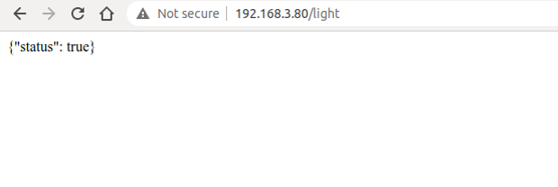
Figure 8.4. Using HTTP to query the status of the smart light
Press F12 on the current page to enter the Console. Enter the following command and press "Enter" to send a POST request.
$ var xhr = new XMLHttpRequest();
$ xhr.open("POST", "192.168.3.80/light", true);
$ xhr.send("{\"status\": false}");
Figure 8.5 shows how to use HTTP to set the status of the smart light.
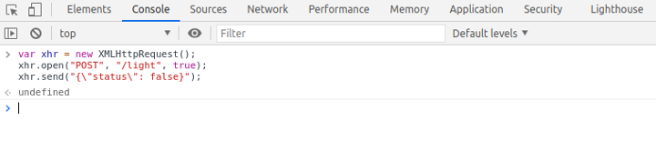
Figure 8.5. Using HTTP to set the status of the smart light
At this point, the server will receive the HTTP POST request {"status": false}. The log of using HTTP to set the status of the smart light is as follows:
I (773) wifi:mode:sta (30:ae:a4:80:48:98)
I (773) wifi:enable tsf
I (773) wifi station: wifi init sta finished.
I (793) wifi:new: <6,0>, old: <1,0>, ap: <255,255>, sta: <6,0>, prof:1
I (793) wifi:state: init -> auth (be)
I (813) wifi:state: auth -> assoc (0)
I (823) wifi:state: assoc -> run (10)
I (873) wifi:connected with myssid, aid = 1, channel 6, BW20, bssid = 34:29:12:43:c5:40
I (873) wifi:security: WPA2-PSK, phy: bgn, rssi: -21
I (883) wifi:pm start, type: 1
I (943) wifi:AP's beacon interval = 102400 us, DTIM period = 1
I (1543) esp netif handlers: sta ip: 192.168.3.80, mask: 255.255.255.0, gw: 192.168.3.1
I (1543) wifi station: got ip:192.168.3.80
I (1543) wifi station: connected to ap SSID: myssid password: 12345678
I (1553) wifi station: Starting server on port: '80'
I (1563) wifi station: Registering URI handlers
W (11393) wifi:<ba-add>idx:0 (ifx:0,34:29:12:43:c5:40), tid:7, ssn:4, winSize:64
I (11413) wifi station: {"status": false}
Refreshing the current page at this time can continue to query the status of the smart light, and the previously set status will be displayed, as shown in Figure 8.6.
Figure 8.6. Displaying the modified status of the smart light
Subsections 8.3.1 and 8.3.2 respectively introduce TCP and HTTP, both of which are characterised by reliable transmission. This subsection will introduce another protocol at the transport layer, UDP. Unlike TCP, UDP is an unreliable transmission protocol. Common application protocols based on UDP include DNS, TFTP, and SNMP.
UDP is a simple datagram-oriented communication protocol, which is located at the transport layer like TCP. UDP was designed by David P. Reed in 1980 and defined in RFC 768 (excerpted from Wikipedia). UDP is an unreliable transmission protocol. After data is sent through UDP, the underlying layer does not retain the data to prevent loss during transmission. UDP itself does not support error correction, queue management, or congestion control, but supports checksums.
UDP is a connectionless protocol. It does not need to establish a connection before sending data, unlike TCP. Data can be sent directly to the peer without establishing a connection. Because no connection needs to be established during data transmission, there is no need to maintain connection status, including sending and receiving status.
UDP is only responsible for transmission, so applications that use this protocol need to do more control over how data is sent and processed, such as how to ensure that peer's applications receive the data correctly and in order.
Compared with TCP, UDP cannot guarantee the safe and reliable transmission of data. You may wonder why the UDP protocol is still used. The connectionless nature of UDP results in less network and time overhead than TCP. The unreliable transmission of UDP (mainly the inability to guarantee retransmission after packet loss) is more suitable for applications such as streaming media, real-time multiplayer games, and IP voice, where losing a few packets will not affect the application. On the other hand, if TCP is used for retransmission, it will greatly increase network latency.
Creating a UDP server using socket is similar to creating a multicast group receiver as introduced in subsection 8.2.2. Both involve creating a UDP socket, configuring the bound port, and receiving and sending data. The function esp_create_udp_server() sets the SO_REUSEADDR option, allowing the server to bind the address of the already established connection. The code is as below:
esp_err_t esp_create_udp_server(void)
{
char rx_buffer[128];
char addr_str[32];
esp_err_t err = ESP_FAIL;
struct sockaddr_in server_addr;
//Create a UDP socket
int sock = socket(AF_INET, SOCK_DGRAM, 0);
if (sock < 0) {
ESP_LOGE(TAG, "create socket error");
return err;
}
ESP_LOGI(TAG, "create socket success, sock : %d", sock);
//Enable SO_REUSEADDR, allowing the server to bind connected address
int opt = 1;
int ret = setsockopt(sock, SOL_SOCKET, SO_REUSEADDR, &opt, sizeof(opt));
if (ret < 0) {
ESP_LOGE(TAG, "Failed to set SO_REUSEADDR. Error %d", errno);
goto exit;
}
//Bind the server to an interface with all-zero IP address and port number 3333
server_addr.sin_family = AF_INET;
server_addr.sin_addr.s_addr = INADDR_ANY;
server_addr.sin_port = htons(PORT);
ret = bind(sock, (struct sockaddr *) &server_addr, sizeof(server_addr));
if (ret < 0) {
ESP_LOGE(TAG, "bind socket failed, socketfd: %d, errno : %d", sock, errno);
goto exit;
}
ESP_LOGI(TAG, "bind socket success");
while (1) {
struct sockaddr_in source_addr;
socklen_t addr_len = sizeof(source_addr);
memset(rx_buffer, 0, sizeof(rx_buffer));
int len = recvfrom(sock, rx_buffer, sizeof(rx_buffer) - 1, 0,
(struct sockaddr *)&source_addr, &addr_len);
// Reception error
if (len < 0) {
ESP_LOGE(TAG, "recvfrom failed: errno %d", errno);
break;
} else { //Data is received
if (source_addr. sin_family == PF_INET) {
inet_ntoa_r(((struct sockaddr_in *)&source_addr)->sin_addr,
addr_str, sizeof(addr_str) - 1);
}
//String ends with NULL
rx_buffer[len] = 0;
ESP_LOGI(TAG, "Received %d bytes from %s:" , len, addr_str);
ESP_LOGI(TAG, "%s", rx_buffer);
}
}
exit:
close(sock);
return err;
}
With the function esp_create_udp_client(), the UDP client can send data, including creating UDP sockets, configuring destination addresses and ports, calling socket interface sendto() to send data. The code is as below:
esp_err_t esp_create_udp_client(void)
{
esp_err_t err = ESP_FAIL;
char *payload = "Open the light";
struct sockaddr_in dest_addr;
dest_addr.sin_addr.s_addr = inet_addr(HOST_IP);
dest_addr.sin_family = AF_INET;
dest_addr.sin_port = htons(PORT);
//Create a UDP socket
int sock = socket(AF_INET, SOCK_DGRAM, 0);
if (sock < 0) {
ESP_LOGE(TAG, "Unable to create socket: errno %d", errno);
return err;
}
//Send data
int ret = sendto(sock, payload, strlen(payload), 0,
(struct sockaddr *)&dest_addr, sizeof(dest_addr));
if (ret < 0) {
ESP_LOGE(TAG, "Error occurred during sending: errno %d", errno);
goto exit;
}
ESP_LOGI(TAG, "Message send successfully");
err = ESP_OK;
exit:
close(sock);
return err;
}
UDP clients do not need to establish a connection with the server, and can directly send data to the server. Since UDP creates unreliable connections, the data sent, such as "Open the light," may be lost, causing the peer to fail to receive it. Therefore, when writing code for the client and server, some logic should be added to the application layer code to ensure that data is not lost. For example, when the client sends "Open the light" to the server, the server returns "Open the light OK" after receiving it successfully. If the client receives the data within 1 second, it means that the data has been sent to the server correctly. If the client does not receive it within 1 second, it needs to send the data "Open the light" again.
With the rapid development of IoT technology, a series of protocols have been created for IoT devices. Most IoT devices have limited resources, such as RAM, flash, CPU, network bandwidth, etc. More memory and network bandwidth are often required if they want to use TCP and HTTP protocols for data transmission. If UDP can be used for data transmission, is there an application protocol similar to HTTP? The answer is yes, CoAP is designed according to the REST architecture of HTTP.
CoAP is a protocol similar to web applications in IoT devices. It is defined in RFC 7252 and can be used for resource-constrained IoT devices, allowing those resource-constrained devices called nodes to communicate with a wider range of the Internet using similar protocols. CoAP is designed for devices on the same constrained network (such as low-power, lossy networks), between devices and general nodes on the Internet, and between devices on different constrained networks connected by the Internet.
CoAP is based on the request and response model, similar to HTTP, which can make up for the shortcomings of unreliable transmission of UDP and ensure that data is not lost or disordered. The server's resources are identified by URLs (such as coap://[IP]/id/light_status) to access the status of a smart light. The client accesses the server's resources through the URL of a resource and operate the server's resources through four request methods (GET, PUT, POST, and DELETE).
CoAP also has the following features:
Both the client and server can independently send requests to each other.
Supports reliable data transmission.
Supports multicast and broadcast, enabling one-to-many data
transmission.
Supports communication with low power consumption and non-persistent
connections.
The following code shows how to create a CoAP server using ESP-IDF component, which provides GET and PUT operations for resource retrieval and modification in CoAP. CoAP protocol operations are generally fixed, and you only need to focus on your own resource URI paths and the operations you need to provide. The function coap_resource_init() can be used to set the URI for resource access, and the function coap_register_handler() can be used to register GET and PUT callback functions corresponding to the resource URI.
static char buf[100] = "{\"status\": true}";
//Callback function of GET method in CoAP
static void esp_coap_get(coap_context_t *ctx, coap_resource_t *resource,
coap_session_t *session, coap_pdu_t *request,
coap_binary_t *token, coap_string_t *query,
coap_pdu_t *response)
{
coap_add_data_blocked_response(resource, session, request, response,
token, COAP_MEDIATYPE_TEXT_PLAIN, 0,
strlen(buf), (const u_char *)buf);
}
//Callback function of PUT method in CoAP
static void esp_coap_put(coap_context_t *ctx, coap_resource_t *resource,
coap_session_t *session, coap_pdu_t *request,
coap_binary_t *token, coap_string_t *query,
coap_pdu_t *response)
{
size_t size;
const unsigned char *data;
coap_resource_notify_observers(resource, NULL);
//Read the received CoAP protocol data
(void)coap_get_data(request, &size, &data);
if (size) {
if (strncmp((char *)data, buf, size)) {
memcpy(buf, data, size);
buf[size] = 0;
response->code = COAP_RESPONSE_CODE(204);
} else {
response->code = COAP_RESPONSE_CODE(500);
}
} else { //A size of 0 indicates a receiving error
response->code = COAP_RESPONSE_CODE(500);
}
}
static void esp_create_coap_server(void)
{
coap_context_t *ctx = NULL;
coap_address_t serv_addr;
coap_resource_t *resource = NULL;
while (1) {
coap_endpoint_t *ep = NULL;
unsigned wait_ms;
//Create a CoAP server socket
coap_address_init(&serv_addr);
serv_addr.addr.sin6.sin6_family = AF_INET6;
serv_addr.addr.sin6.sin6_port = htons(COAP_DEFAULT_PORT);
//Create CoAP ctx
ctx = coap_new_context(NULL);
if (!ctx) {
ESP_LOGE(TAG, "coap_new_context() failed");
continue;
}
//Set the CoAP protocol node
ep = coap_new_endpoint(ctx, &serv_addr, COAP_PROTO_UDP);
if (!ep) {
ESP_LOGE(TAG, "udp: coap_new_endpoint() failed");
goto clean_up;
}
//Set CoAP protocol resource URI
resource = coap_resource_init(coap_make_str_const("light"), 0);
if (!resource) {
ESP_LOGE(TAG, "coap_resource_init() failed");
goto clean_up;
}
//Register callback functions of GET and PUT methods corresponding to CoAP resource URI
coap_register_handler(resource, COAP_REQUEST_GET, esp_coap_get);
coap_register_handler(resource, COAP_REQUEST_PUT, esp_coap_put);
//Set CoAP GET resource observable
coap_resource_set_get_observable(resource, 1);
//Add resource to CoAP ctx
coap_add_resource(ctx, resource);
wait_ms = COAP_RESOURCE_CHECK_TIME * 1000;
while (1) {
//Wait to receive CoAP data
int result = coap_run_once(ctx, wait_ms);
if (result < 0) {
break;
} else if (result && (unsigned)result < wait_ms) {
//Decrease waiting time
wait_ms -= result;
} else {
//Reset waiting time
wait_ms = COAP_RESOURCE_CHECK_TIME * 1000;
}
}
}
clean_up:
coap_free_context(ctx);
coap_cleanup();
}
The above code creates a CoAP server, and provides the GET method to query the status of the smart light and the PUT method to set the status of the smart light. You can use the Chrome browser to install CoAP to debug the client Copper plugin and simulate the CoAP client.
Open the Chrome plugin Copper, enter the URL coap://[ip]/light, and press "Enter" to connect to the server. Figure 8.7 shows the connection of the CoAP plugin.
Figure 8.7. Connection of CoAP plugin
After the connection is successful, click the "GET" button in the upper left corner to get the status and display {"status": true}, the query status of CoAP plugin is shown in Figure 8.8.
Figure 8.8. Query status of CoAP plugin
Click the "PUT" button in the upper left corner, and modify the data in "Payload" → "Outgoing" to {"status": false} to set the status of the smart light to false. Figure 8.9 shows the configuration status of the CoAP plugin.
Figure 8.9. Setting status of CoAP plugin
At this time, click the "GET" button in the upper left corner again to get the status, which displays {"status": false}. Figure 8.10 shows the query setting status of the CoAP plugin.
Chapter 7 introduces the protocol and architecture of Bluetooth. The Bluetooth protocol defines message formats and process for completing specific functions, such as link control, security services, service information exchange and data transmission. This section only introduces the attribute protocol (ATT) of the Bluetooth protocol specification. Bluetooth data exists in the form of attributes, and each attribute consists of four elements.
Just as memory addresses are used to find contents in memory, attribute handles can also help find the corresponding attribute. For example, the first attribute handle is 0x0001, the second attribute handle is 0x0002, and so on, up to a maximum of 0xFFFF.
Each data represents specific property. For example, a smart light has two basic attributes, one for setting the on/off status, and the other for reading the on/off status.
Attribute value is the information that each attribute carries, while the other three elements are to enable the peer to obtain the attribute value much easier. For example, for a smart light, the attribute value for setting the on/off status can be set to "1" to turn on the light, or to "0" to turn off the light; the attribute value for reading the on/off status can be "1" for the "on" status or "0" for the "off" status.
Each attribute has corresponding access restrictions for its own attribute values, such as some attributes are readable, some are writable, and some are readable and writable. The party that owns the data can control the attribute permissions of local data through attribute permissions. For example, the switch attribute permission of the smart light can be set as writable but not readable, and the attribute permission for reading the switch status of the smart light can be set as read-only and not writable.
Table 8.2 lists the Bluetooth attributes for the basic functions of a
smart light.
Table 8.2. Bluetooth attributes for basic functions of smart light
Attribute handle
Attribute UUID
Attribute value
Attribute permissions
0x0001
Set the on/off status
1/0
Writable but not readable
0x0002
Read the on/off status
1/0
Readable but not writable
The device that stores the data (i.e., attributes) is usually called the server, and the device that receives data from other devices is called the client. For a smart light and a smartphone, the smart light is server, and the smartphone is the client. The following are common operations between a server and a client:
The client sends data to the server.
Data is transmitted by writing data to the server. There are two
types of write operations: one is write request, and the other
is write command. The main difference between the two is that
the former requires a response (write response) from the peer,
while the latter does not. For a smart light, the command to turn
on/off the light sent by the smartphone is a write operation, and
this is a write request which requires the smart light to respond.
Such response is not a simple ACK response. The result of the action
of turning on/off the light needs to be returned to the smartphone
to inform it of the current status of the smart light.
The server sends data to the client.
The updated data is sent from the server to the client mainly in the
form of server indication or notification. Similar to write
operations, the main difference between indication and notification
is that the former requires the other device to respond
(confirm) after receiving the data indication. For a smart
light, if it is turned on/off through a physical switch button, its
status needs to be reported to the smartphone through indications or
notifications, and the smartphone will display the latest status.
The client reads data from the server actively.
Generally, the client obtains values of corresponding attributes
from the server through read operation. In the case mentioned
above where a smart light is turned on/off through a physical switch
button, except for waiting to be notified by the server, the
smartphone can also obtain the real-time status through read
operations.
Then let's consider which way is better to get the status of the smart light. Active reading takes time whenever the smartphone initiates a read operation, while indication or notification saves the time for repetitive data transmission. It seems that the latter option is faster but if the smart light is not connected to the phone when sending the notification, its status will not be updated. This can be fixed by updating the status as soon as the phone becomes connected to the smart light; otherwise, it is recommended to use the read operation.
The following example uses the protocomm component to implement the smart light server, and the customised configuration uses the custom-proto protocol. As mentioned earlier, to implement the on/off control and status query of the smart light, two attributes need to be defined. The code is as below:
static esp_err_t wifi_prov_config_set_light_handler(uint32_t session_id, const uint8_t *inbuf,
ssize_t inlen, uint8_t **outbuf,
ssize_t *outlen, void *priv_data)
{
CustomConfigRequest *req;
CustomConfigResponse resp;
req = custom_config_request_unpack(NULL, inlen, inbuf);
if (!req) {
ESP_LOGE(TAG, "Unable to unpack config data");
return ESP_ERR_INVALID_ARG;
}
custom_config_response_init(&resp);
resp.status = CUSTOM_CONFIG_STATUS_ConfigFail;
if (req->open_light) {//Turn on the smart light
//Pull up GPIO level according to the status
ESP_LOGI(TAG, "Open the light");
} else {
//Pull down GPIO level according to the status
ESP_LOGI(TAG, "Close the light");
}
//Set response status and smart light status according to the light's execution result
resp.status = CUSTOM_CONFIG_STATUS_ConfigSuccess;
custom_config_request_free_unpacked(req, NULL);
resp.light_status = 1; //Respond according to the light status
*outlen = custom_config_response_get_packed_size(&resp);
if (*outlen <= 0) {
ESP_LOGE(TAG, "Invalid encoding for response");
return ESP_FAIL;
}
*outbuf = (uint8_t *) malloc(*outlen);
if (*outbuf == NULL) {
ESP_LOGE(TAG, "System out of memory");
return ESP_ERR_NO_MEM;
}
custom_config_response_pack(&resp, *outbuf);
return ESP_OK;
}
static int wifi_prov_config_get_light_handler(uint32_t session_id, const uint8_t *inbuf,
ssize_t inlen, uint8_t **outbuf,
ssize_t *outlen, void *priv_data)
{
CustomConfigResponse resp;
custom_config_response_init(&resp);
resp.status = CUSTOM_CONFIG_STATUS_ConfigSuccess;
resp.light_status = 1; //Respond according to the light status
*outlen = custom_config_response_get_packed_size(&resp);
if (*outlen <= 0) {
ESP_LOGE(TAG, "Invalid encoding for response");
return ESP_FAIL;
}
*outbuf = (uint8_t *) malloc(*outlen);
if (*outbuf == NULL) {
ESP_LOGE(TAG, "System out of memory");
return ESP_ERR_NO_MEM;
}
custom_config_response_pack(&resp, *outbuf);
return ESP_OK;`
}
static esp_err_t app_prov_start_service(void)
{
//Create protocomm
g_prov->pc = protocomm_new();
if (g_prov->pc == NULL) {
ESP_LOGE(TAG, "Failed to create new protocomm instance");
return ESP_FAIL;
}
//Attribute value
protocomm_ble_name_uuid_t nu_lookup_table[] = {
{"prov-session", 0x0001},
{"prov-config", 0x0002},
{"proto-ver", 0x0003},
{"set-light", 0x0004}, //Set the state of the smart light
{"get-light", 0x0005}, //Get the status of the smart light
};
//Bluetooth configuration
protocomm_ble_config_t config = {
.service_uuid = {
/* LSB <---------------------------------------
* ---------------------------------------> MSB */
0xb4, 0xdf, 0x5a, 0x1c, 0x3f, 0x6b, 0xf4, 0xbf,
0xea, 0x4a, 0x82, 0x03, 0x04, 0x90, 0x1a, 0x02,
},
.nu_lookup_count=sizeof(nu_lookup_table)/sizeof(nu_lookup_table[0]),
.nu_lookup = nu_lookup_table
};
uint8_t eth_mac[6];
esp_wifi_get_mac(WIFI_IF_STA, eth_mac);
snprintf(config.device_name, sizeof(config.device_name), "%s%02X%02X%02X",
ssid_prefix, eth_mac[3], eth_mac[4], eth_mac[5]);
//Release BT memory as only Bluetooth LE protocol stack is used.
esp_err_t err = esp_bt_controller_mem_release(ESP_BT_MODE_CLASSIC_BT);
if (err) {
ESP_LOGE(TAG, "bt_controller_mem_release failed %d", err);
if (err ! = ESP_ERR_INVALID_STATE) {
return err;
}
}
//Start protocomm Bluetooth LE protocol stack
if (protocomm_ble_start(g_prov->pc, &config) ! = ESP_OK) {
ESP_LOGE(TAG, "Failed to start BLE provisioning");
return ESP_FAIL;
}
//Set protocomm version verification endpoint for the protocol
protocomm_set_version(g_prov->pc, "proto-ver", "V0.1");
//Set protocomm security type for the endpoint
if (g_prov->security == 0) {
protocomm_set_security(g_prov->pc, "prov-session",
&protocomm_security0, NULL);
} else if (g_prov->security == 1) {
protocomm_set_security(g_prov->pc, "prov-session",
&protocomm_security1, g_prov->pop);
}
//Add an endpoint for Wi-Fi configuration
if(protocomm_add_endpoint(g_prov->pc, "prov-config",
wifi_prov_config_data_handler,
(void *) &wifi_prov_handlers) ! =ESP_OK){
ESP_LOGE(TAG, "Failed to set provisioning endpoint");
protocomm_ble_stop(g_prov->pc);
return ESP_FAIL;
}
//Add an endpoint for setting smart light status
if (protocomm_add_endpoint(g_prov->pc, "set-light",
wifi_prov_config_set_light_handler,
NULL) ! = ESP_OK) {
ESP_LOGE(TAG, "Failed to set set-light endpoint");
protocomm_ble_stop(g_prov->pc);
return ESP_FAIL;
}
//Add an endpoint for getting smart light status
if (protocomm_add_endpoint(g_prov->pc, "get-light",
wifi_prov_config_get_light_handler,
NULL) ! = ESP_OK) {
ESP_LOGE(TAG, "Failed to set get-light endpoint");
protocomm_ble_stop(g_prov->pc);
return ESP_FAIL;
}
ESP_LOGI(TAG, "Provisioning started with BLE devname : '%s'", config.device_name);
return ESP_OK;
}
The above example provides two attributes: set-light and get-light,
and the corresponding attribute handles are 0x0004 and 0x0005,
respectively. When the smartphone sends a command to set the light, the
wifi_prov_config_set_light_handler() callback function will be
executed to handle the on/off action and inform the smartphone of the
current status of the smart light. When the smartphone sends a read
command, the wifi_prov_config_get_light_handler() callback function
will be executed to inform the smartphone of the current status of the
smart light. You can use the Bluetooth debugging assistant of the
smartphone to scan the devices connected to Bluetooth, and understand
the function of each service more intuitively through the services
provided by the Bluetooth device.
The above example implements local control via Bluetooth based on the
protocomm component, and the data structure is relatively complex. If
you are an experienced developer, you can try to use the ideas of the
above example to implement local control. In addition, this book
provides the most basic server example based on Bluetooth for beginners.
You can refer to the example code in subsection 8.5.3 to understand the
process of local control using Bluetooth.
Both UDP and TCP protocols in the transport layer can directly serve as communication protocols for application data. Table 8.3 lists the differences between UDP and TCP.
Table 8.3. Differences between TCP and UDP
Comparison
TCP
UDP
Reliability
Reliable transmission; supports retransmission, flow control and congestion control
Unreliable transmission; does not support retransmission, flow control or congestion control
Connection
Connection-oriented, with three handshakes for connection establishment and four handshakes for disconnection; long connection
No connection; direct data transmission; short connection
Connection object
One-to-one connection
One-to-one unicast, one-to-all broadcast, and one-to-many multicast
Header overhead
≥ 20 B
8 B
Transmission rate
Depends on network environment; retransmission occurs in case of packet loss, lowering transmission rate.
Fast, independent of network environment, and only responsible for transmitting data to the network
Application scenario
Suitable for reliable transmission, e.g., file transfer.
Suitable for real-time transmission, e.g., VoIP telephony, video telephony, streaming media, etc.
For data communication of local control, TCP can be selected from the
perspective of the transport layer as it can ensure the data is
accurate. When using UDP, the smartphone app will send the command to
turn on the light. The command may be discarded due to network
environment issues, and ESP32-C3 may not receive the command. While for
TCP, even if the data packet is discarded, the underlying layer of the
smartphone app will resend the command.
However, a drawback to sending data using a pure transport layer
protocol is that you need to develop business logic of upper-layer
applications. Therefore, this section also introduces the application
protocols HTTP and CoAP based on TCP and UDP.
Both HTTP and CoAP are network transmission protocols based on the REST
model, which are used to send requests and respond to requests. The only
difference is that one is based on TCP and the other is based on UDP,
and each inherits the relevant characteristics of the transport layer
protocol. Table 8.4 lists the differences between HTTP and CoAP.
Table 8.4. Differences between HTTP and CoAP
Comparison
HTTP
CoAP
Transport layer
TCP
UDP
Header overhead
May contain a large amount of message header data with high overhead
Packet headers are binary compressed for low overhead
Power consumption
Long connection, high power consumption
Short connection, low power consumption
Resource discovery
Not supported
Supported
Request method
Generally triggered by the client; no active trigger by the server.
Both the client and the server can actively trigger requests.
Application scenario
Suitable for devices with good performance and large memory
Suitable for devices with poor performance and small memory
Compared to HTTP, CoAP is more suitable for IoT devices with limited resources. For the device has more resources and better performance, HTTP has more functions than CoAP.
After comparing the communication protocols within the TCP/IP protocol family, we will compare these protocols with the Bluetooth protocol. The most intuitive difference between them is that Bluetooth is a point-to-point protocol, while the TCP/IP is an end-to-end protocol that may go through routers. Therefore, in terms of response speed, although Bluetooth and Wi-Fi are both wireless transmission technologies on the 2.4 GHz channel, Bluetooth is faster than Wi-Fi in data communication between smartphones and ESP32-C3. The packet size of Bluetooth is smaller than that of application data using TCP/IP protocol stack, and the power consumption of Bluetooth is naturally lower than that of Wi-Fi. The Bluetooth protocol supports resource discovery and does not require local discovery because Bluetooth is a point-to-point connection, which is very suitable for local control. However, since most IoT products currently need to connect to the cloud, Wi-Fi functionality is essential. Many IoT products can use only Wi-Fi or only Bluetooth for network configuration. If the IoT product does not need to connect to the cloud, Bluetooth can be used for local control only. If the IoT product needs to connect to the cloud, it needs to use Wi-Fi for cloud connection and local control.
As we all know, TCP and UDP, as well as the application protocols HTTP and CoAP that run on top of them, transmit data in plaintext. This can lead to data being intercepted or tampered with during transmission. If sensitive information such as passwords or account numbers is included in the data, irreparable losses may occur. Therefore, it is necessary to encrypt the data transmitted in plaintext. For data transmitted via Bluetooth, since the Bluetooth is a point-to-point protocol, the data will not leak onto the network and the probability of it being intercepted is very low. In addition, the Bluetooth protocol itself encrypts user data. Therefore, this section mainly discusses the data encryption of TCP/IP.
Encryption is used to ensure confidentiality and integrity of transmitted data. Common encryption systems usually encode data before transmission. For example, in previous wars, telegrams were encoded and both the sender and receiver had the same codebook. The receiver used the numbers or letters in the codebook to replace the words or sentences in the telegram. Even if the telegram content was intercepted by a third
party, the third party could not decipher the true content of the
telegram in a short time. However, this method has a flaw that the
telegram content is still susceptible to being deciphered, which is just
a matter of time. In addition, to prevent the telegram from being
deciphered, the receiver and sender need to periodically change the
codebook. This may also lead to the codebook being leaked and the
telegram content being deciphered.
The telegram example above presents an application scenario of a common encryption algorithm – the symmetric encryption. In symmetric encryption, the same algorithm is used for encryption and decryption, and their keys are also the same. Symmetric encryption has the advantages of open algorithm, small computational complexity, fast encryption speed, and high encryption efficiency. However, before data transmission, the sender and receiver must agree on the key, and in order to ensure that the data is not deciphered, both parties must also periodically update the key, which makes key management a burden for both parties. Common symmetric encryption algorithms include AES, DES, and RC4. Figure 8.11 shows the process of symmetric encryption.
Figure 8.11. Process of symmetric encryption
In this section, we will introduce the algorithm that is opposite to
symmetric encryption, asymmetric encryption. Both parties in asymmetric
encryption have a pair of public key and private key. Data is encrypted
using the public key, and decrypted using the private key. Because
different keys are used for encryption and decryption, this encryption
algorithm is called asymmetric encryption. Compared with symmetric
encryption, asymmetric encryption is more secure. Because asymmetric
encryption is more complex than symmetric encryption, it takes longer
time to decrypt, and it is difficult for third parties to directly
decipher the data. Because the asymmetric encryption algorithm has high
complexity and the private key used for decryption is not transmitted on
the network, which can only be obtained by the recipient, this greatly
improves data security. Common asymmetric encryption algorithms include
RSA, Diffie-Hellman, DSA, etc.
The advantage of asymmetric encryption is its security. User A can keep the private key and transmit the public key to user B through the network. Even if user C obtains the public key, user C cannot decipher the data because user C does not have user A's private key. In this way, user A and user B can confidently transmit their respective public keys through the network. Remember, the public key is used for encryption, and the private key is used for decryption. Figure 8.12 shows the process of asymmetric encryption.
Figure 8.12. Process of asymmetric encryption
Asymmetric encryption seems very secure, but have you ever thought about
this question: what if user C replaces all the public keys sent to user
A and user B with its own corresponding private key's public key? User A
does not know whether this public key belongs to user B, so when user A
sends data, it will use user C's public key for encryption. At this
time, user C can steal the ciphertext data and decrypt it using the
corresponding private key. Therefore, it is crucial to ensure the
legitimacy of the public key. In reality, the legitimacy of the public
key can be ensured through a Certificate Authority (CA). CA also works
based on asymmetric encryption algorithms. With CA, user B will first
give its public key and some other information to CA. CA encrypts this
data using its private key, and the encrypted data is called user B's
digital certificate. The public key transmitted by user B to user A is
the digital certificate encrypted by the CA. After receiving the digital
certificate, user A will use the digital certificate published by CA
(which contains CA's public key) to decrypt user B's digital certificate
and obtain user B's public key.
TLS is a protocol based on TCP and serves the application layer. Its
predecessor is the Secure Socket Layer (SSL) protocol. Through the TLS
protocol, the packets of the application layer can be encrypted and
delivered to the TCP layer for transmission.
The TLS protocol mainly solves the following three network problems:
Guarantee data confidentiality. All data is transmitted encrypted to
ensure protection against unauthorised access or data theft by third
parties.
Guarantee data integrity. All data is protected by a verification
mechanism, so any tampering will be immediately detected by both
parties involved in the communication.
Guarantee the authentication and identity verification of both
parties involved in data communication. Certificate authentication
can be employed by both parties in the communication to ensure the
legitimacy of their identities.
The TLS protocol can be divided into two parts. The record layer
uses the key negotiated by the client and the server to encrypt and
transmit data. The handshake layer negotiates between the client and
the server to determine a set of key strings for data transmission
encryption. The TLS protocol model is shown in Figure 8.13, where the
handshake layer includes four sub-protocols: handshake protocol, change
cipher spec protocol, application data protocol, and alert protocol.
Figure 8.13. TLS protocol model
Record layer is responsible for all the underlying data exchanged at the
transport layer and can encrypt data. Each TLS record begins with a
short header, which includes the Content Type (or subprotocol), Protocol
Version, and Length fields. The underlying data is segmented (or
merged), compressed, added with a message authentication code,
encrypted, and then converted into the data part of the TLS record.
Figure 8.14 shows the structure of a TLS record packet.
Figure 8.14. TLS record packet
Handshake layer has four sub-protocols, which are introduced in the list
below.
Responsible for generating the shared key required for the communication
process and performing identity authentication. Note that the handshake
protocol does not use cipher suites directly. Instead, it relies on
public key cryptography or Diffie-Hellman key exchange to establish
secure communication and prevent data from being eavesdropped or
intercepted.
Responsible for the synchronisation of password switching, and is used
after the handshake protocol. During the handshake process, the 'null'
cipher suite, which means no encryption, is used. After the handshake is
completed, the negotiated cipher suite is used for securing the
subsequent data transfer.
Used by the communicating parties for data transmission. The
transmission process is carried out through the application data
protocol and TLS record protocol of the handshake layer.
Used to notify the other party when an error occurs, such as an
exception during the handshake process, a message authentication code
error, or data that cannot be decompressed.
The algorithm used during TLS encryption is introduced in the list
below.
Hash function verifies data integrity. Common encryption
algorithms include MD5, SHA, etc.
Symmetric encryption algorithm encrypts the application data.
Common encryption algorithms include AES, RC4, DES, etc.
Asymmetric encryption algorithm for identity authentication and
key agreement. Common encryption algorithms include RSA, DH, etc.
When using TLS, the client and server use asymmetric encryption
algorithm to authenticate identity and negotiate the key of symmetric
encryption algorithm, and then use symmetric encrypted data and data
digest for data communication. Figure 8.15 shows the TLS handshake
process.
Figure 8.15. TLS handshake process
Client Hello. The client sends the highest version of the supported
TLS protocol and all the cipher suites it supports, which are used
to send information such as the random number for generating the
session key to the server.
Server Hello. After receiving the Client Hello message sent by the
client, the server selects the TLS protocol version and a cipher
suite according to the protocol version and cipher suite sent by the
client, and returns them to the client.
(Optional) Send Certificate. The server sends its own server-side
certificate to the client, which is used by the client to verify the
legitimacy of the server.
(Optional) Request Certificate. When the server needs to verify the
client's certificate, the server will send a certificate request
message to the client if mutual authentication is selected.
Server Hello Done. The server informs the client that the server has
sent all the handshake messages, and the server will wait for the
client to send messages.
(Optional) Response Certificate. If mutual authentication is
selected, the client will send its certificate to the server. Then
the server will verify the identity of the client.
Client Key Exchange. The client uses the server's public key to
encrypt the client's public key and key seed before sending them to
the server.
(Optional) Certificate Verify. If mutual authentication is selected,
the client uses the local private key to generate a digital
signature and sends it to the server for authentication through the
received client public key.
Create Secret Key. The communicating parties generate the
communication key based on information such as the key seed.
Change Cipher Spec. The client notifies the server that the
communication method has been switched to encrypted mode.
Finished. The client is ready for encrypted communication.
Change Cipher Spec. The server notifies the client that the
communication method has been switched to the encrypted mode.
Finished. Prepare for encrypted communication on the server side.
Encrypted/Decrypted Data. Both parties use the client key to
encrypt/decrypt the communication content through a symmetric
encryption algorithm.
Closed Connection. After the communication is over, either party
sends a message to disconnect the TLS connection.
HTTPS, namely HTTP over SSL, encrypts HTTP data through the SSL or TLS
protocol. Compared with HTTP, HTTPS can prevent data from being stolen
or changed during transmission, thus ensuring data integrity. Section
8.3.2 introduces how to use ESP-IDF to create an HTTP server. In fact,
creating an HTTPS server is similar. Call httpd_ssl_start() to start
the HTTP+TLS service, and call httpd_register_uri_handler() to
register the corresponding callback function.
The above code provides an example of how to create an HTTPS server.
Before using this code, please manually create a CA certificate and a
private key in the main directory using the following command:
In addition, you also need to go to idf.py menuconfig → Component config → ESP HTTPS server, and configure CONFIG_ESP_HTTPS_SERVER_ENABLE.
Enter https://[your device IP]:443/ in the Chrome browser. The CA
certificate on the server side is not issued by a certification
authority, thus it is not trusted. Therefore, you will see the screen
shown in Figure 8.16.
Figure 8.16. Interface of untrusted HTTPS connection
Users need to click the "Advanced" button to allow this untrusted
connection. Figure 8.17 shows the interface of a successful HTTPS
connection.
Figure 8.17. Interface of successful HTTPS connection
Should you encounter a "Header fields are too long for server to interpret" message, just go to idf.py menuconfig → Component config → HTTP Server → Max HTTP Request Header Length, and increase HTTPD_MAX_REQ_HDR_LEN. Figure 8.18 shows the interface where the HTTPS connection fails.
Figure 8.18. Interface of HTTPS connection failure
DTLS is a UDP-based protocol that serves the application layer. TLS
protocol cannot guarantee the security of data transmitted by UDP.
Therefore, the DTLS protocol has been extended on the existing TLS
protocol architecture to support UDP, and becomes a version of TLS
protocol that supports data packet transmission. DTLS 1.0 is based on
TLS 1.1, and DTLS 1.2 is based on TLS 1.2. The encryption algorithm,
certificate, and encryption process of the DTLS protocol are basically
the same as those of the TLS protocol, thus will not be described in
this section.
The working principle of the DTLS protocol is basically the same as that
of the TLS protocol, except for the following differences:
In the handshake stage, DTLS protocol has added the Cookie
mechanism. The DTLS protocol has added a Cookie mechanism in version
1.0, which is used by the server to verify the client, and can avoid
DoS attacks. When the client sends the Client Hello message to the
server, the server does not directly reply to the Server Hello
message to carry out the handshake process. Instead, the server
replies the Hello Verify Request message, which carries the Cookie
value, to the client. When the client receives the message, it will
write the Cookie value into the Client Hello message and resend it
to the server. After receiving it, the server checks the local
Cookie list to determine whether a handshake is required.
DLTS supports the retransmission mechanism. Since the UDP protocol
itself does not support retransmission like the TCP protocol, the
DTLS protocol introduces a retransmission mechanism. Taking the
above Client Hello message as an example, after the client sends the
Client Hello message, the client will start a timer to receive the
Hello Verify Request message replied by the server; if the server
does not reply within a certain period of time, the client will
resend the Client Hello message. Similarly, once a message is sent,
the server will activate a timer to monitor for timeouts and
determine if the message needs to be resent.
DLTS supports orderly reception. UDP does not guarantee the order of
delivered packets. In contrast, DTLS protocol has added a
message_seq field in the handshake message. The receiver will
provide a receiving buffer to receive out-of-order messages
(similarly to TCP), and process the messages in order according to
the message_seq field.
DLTS supports packet size limitation. UDP is a packet-oriented
protocol, and TCP is a stream-oriented protocol. TCP supports packet
fragmentation and reassembly. However, when a UDP message exceeds
the maximum transmission unit (MTU) of the link layer, it may be
forcibly fragmented at the IP layer. The receiver then needs to
process the fragmented packet based on the IP header and reassemble
the original data. If one packet is lost, the entire UDP message
will be invalid. Therefore, in DTLS protocol, the handshake messages
are segmented on top of UDP. This is done by adding the
fragment_offset field and fragment_length field to the handshake
message, which represent the offset of this message relative to the
beginning of the message and the length of this message,
respectively.
The following example introduces how to create a CoAP+DTLS server. This
example is actually the same as the CoAP example introduced in Section
8.3.4, except that two functions are added to support the DTLS protocol.
The function coap_context_set_psk() is used to set the PSK encryption
key in the DTLS protocol, and can also use certificate (PKI) for the
DTLS protocol handshake. The coap_new_endpoint(ctx, &serv_addr, COAP_PROTO_DTLS) function indicates that the node supports the DTLS protocol.
The local control component (esp_local_ctrl) of ESP-IDF enables you to
control Espressif chips via Wi-Fi+HTTPS or Bluetooth LE easily. With
this component, you can access application-defined properties, which can
be read from or written to through a set of configurable handlers. This
section mainly introduces the local control module based on Wi-Fi.
Taking the smart light as an example, the local control module can be
configured as follows:
Configure the local device to discover mDNS protocol.
Configure the local HTTPS server and certificate for data
communication.
Configure the smart lights.
The previous sections have introduced the control of ESP32-C3 via
Bluetooth LE. When using Bluetooth LE, the TCP/IP protocol stack is not
involved, and local device discovery is not necessary. Bluetooth has its
own resource discovery service.
The following sample code implements the Wi-Fi-based local control
server. The local control is based on HTTP for data communication, and
the data is encrypted using the TLS protocol. Additionally, the sample
adds the mDNS module for device discovery.
#define PROPERTY_NAME_STATUS "status"
static char light_status[64] = "{\"status\": true}";
//Property type definition, used with scripts
enum property_types {
PROP_TYPE_TIMESTAMP = 0,
PROP_TYPE_INT32,
PROP_TYPE_BOOLEAN,
PROP_TYPE_STRING,
};
//Get attribute value
esp_err_t get_property_values(size_t props_count,
const esp_local_ctrl_prop_t props[],
esp_local_ctrl_prop_val_t prop_values[],
void *usr_ctx)
{
int i = 0;
for (i = 0; i < props_count; i ++) {
ESP_LOGI(TAG, "Reading property : %s", props[i].name);
if (!strncmp(PROPERTY_NAME_STATUS,
props[i].name,
strlen(props[i].name))) {
prop_values[i].size = strlen(light_status);
prop_values[i].data = &light_status;//prop_values[i].data is just a pointer, and cannot be assigned.
break;
}
}
if (i == props_count) {
ESP_LOGE(TAG, "Not found property %s", props[i].name);
return ESP_FAIL;
}
return ESP_OK;
}
//Set property value
esp_err_t set_property_values(size_t props_count,
const esp_local_ctrl_prop_t props[],
const esp_local_ctrl_prop_val_t prop_values[],
void *usr_ctx)
{
int i = 0;
for (i = 0; i < props_count; i ++) {
ESP_LOGI(TAG, "Setting property : %s", props[i].name);
if (!strncmp(PROPERTY_NAME_STATUS,
props[i].name,
strlen(props[i].name))) {
memset(light_status, 0, sizeof(light_status));
strncpy(light_status,
(const char *)prop_values[i].data,
prop_values[i].size);
if (strstr(light_status, "true")) {
app_driver_set_state(true); //Turn on the smart light
} else {
app_driver_set_state(false); //Turn off the smart light
}
break;
}
}
if (i == props_count) {
ESP_LOGE(TAG, "Not found property %s", props[i].name);
return ESP_FAIL;
}
return ESP_OK;
}
#define SERVICE_NAME "my_esp_ctrl_device"
void esp_local_ctrl_service_start(void)
{
//Initialise the HTTPS server-side configuration
httpd_ssl_config_t https_conf = HTTPD_SSL_CONFIG_DEFAULT();
//Load the server certificate
extern const unsigned char cacert_pem_start[] asm("_binary_cacert_pem_ start");
extern const unsigned char cacert_pem_end[] asm("_binary_cacert_pem_end");
https_conf.cacert_pem = cacert_pem_start;
https_conf.cacert_len = cacert_pem_end - cacert_pem_start;
//Load server-side private key
extern const unsigned char prvtkey_pem_start[] asm("_binary_prvtkey_pem_ start");
extern const unsigned char prvtkey_pem_end[] asm("_binary_prvtkey_pem_end");
https_conf.prvtkey_pem = prvtkey_pem_start;
https_conf.prvtkey_len = prvtkey_pem_end - prvtkey_pem_start;
esp_local_ctrl_config_t config = {
.transport = ESP_LOCAL_CTRL_TRANSPORT_HTTPD,
.transport_config = {
.httpd = &https_conf
},
.proto_sec = {
.version = PROTOCOM_SEC0,
.custom_handle = NULL,
.pop = NULL,
},
.handlers = {
//User-defined processing function
.get_prop_values = get_property_values,
.set_prop_values = set_property_values,
.usr_ctx = NULL,
.usr_ctx_free_fn = NULL
},
//Set the maximum number of attributes
.max_properties = 10
};
//Initialise local discovery
mdns_init();
mdns_hostname_set(SERVICE_NAME);
//Start the local control service
ESP_ERROR_CHECK(esp_local_ctrl_start(&config));
ESP_LOGI(TAG, "esp_local_ctrl service started with name : %s", SERVICE_NAME);
esp_local_ctrl_prop_t status = {
.name = PROPERTY_NAME_STATUS,
.type = PROP_TYPE_STRING,
.size = 0,
.flags = 0,
.ctx = NULL,
.ctx_free_fn = NULL
};
//Add attribute value
ESP_ERROR_CHECK(esp_local_ctrl_add_property(&status));
}
The above sample code implements the discovery of a device (domain name:
my_esp_ctrl_device.local) through the local discovery protocol (mDNS),
establishes an HTTPS local control connection, and allows the client to
set and query attribute values via a registered endpoint.
Users can enable the transmission security protection for local control
via the following options:
PROTOCOM_SEC0: specifies the end-to-end encryption algorithm used.
PROTOCOM_SEC1: specifies that data is exchanged as plain text.
Each attribute must have a unique name (a string), type (e.g., int,
bool, or string), flag (e.g., read-only, or readable and writable), and
size. If the property value is expected to be of variable length (e.g.,
if the property value is a string or byte stream), the size should be
kept at 0. For fixed-length property value data types, such as int,
float, etc., setting the size field to the correct value helps
esp_local_ctrl perform internal checks on parameters received via
write requests.
You can process it by matching props[i].name with the corresponding
property name, and further checking the flag and type of the
property to determine if the property satisfies the corresponding flag
and type requirements.
After introducing how to create a local control module, this section
will further introduce how to use scripts for verification. Here, we use
the official example esp_local_ctrl as an example for verification.
Create a certificate for TLS handshake between the client and the
server.
Generate a rootCA that will be used to sign the server-side certificate, and the client will use it to verify the server-side certificate during the SSL handshake. A passphrase needs to be set to encrypt the generated rootkey.pem.
Use the previously generated rootCA to process the server-side certificate signing request and generate the signing certificate cacert.pem. The passphrase set earlier for the encrypted rootkey.pem must be entered in this step.
Among the generated certificates, cacert.pem and prvtkey.pem are compiled into the server, and rootkey.pem is suitable for client-side scripts for server-side verification. The directory of the certificate can be set in the script esp_local_ctrl.py.
Use the following command to connect to the local control server via
script. If sec_ver is 0, it means that PROTOCOM_SEC0 is set on
the server.
$ python esp_local_ctrl.py --sec_ver 0
The script will automatically get the property value, i.e.:
Connecting to my_esp_ctrl_device.local
==== Starting Session ====
==== Session Established ====
==== Available Properties ====
S.N. Name Type Flags Value
[1] status STRING {"status": true}
According to the script prompt, enter the attribute number "1", and
set the attribute value to {"status": false}. Then the script will
automatically start querying and find that the property value has
been changed.
Select properties to set (0 to re-read, 'q' to quit) : 1
Enter value to set for property (status) : {"status": false}
==== Available Properties ====
S.N. Name Type Flags Value
[1] status STRING {"status": false}
Select properties to set (0 to re-read, 'q' to quit) :
The following sample code creates a Bluetooth-based local control
server, which can be used to transmit data. You can refer to the
gatt_server sample. The following example implements a Bluetooth
server. You can compile and flash this example, then use a Bluetooth
debugging tool on your smartphone to scan and connect to a Bluetooth
device named ESP32C3-LIGHT. Once connected, you can access the
Bluetooth services provided by the device.
This example provides two Bluetooth services: one for getting the device
status (UUID: FF01) and another for setting the device status
(UUID: EE01), as shown in Figure 8.19.
Figure 8.19. Bluetooth services in the example
The running log is as follows.
I (387) GATTS_DEMO: NVS Flash initialization
I (387) GATTS_DEMO: Application driver initialization
I (397) gpio: GPIO[9]| InputEn: 1| OutputEn: 0| OpenDrain: 0| Pullup: 1| Pulldown: 0| Intr:0
W (437) BTDM_INIT: esp_bt_controller_mem_release not implemented, return OK
I (437) BTDM_INIT: BT controller compile version [501d88d]
I (437) coexist: coexist rom version 9387209
I (437) phy_init: phy_version 500,985899c,Apr 19 2021,16:05:08
I (617) system_api: Base MAC address is not set
I (617) system_api: read default base MAC address from EFUSE
I (617) BTDM_INIT: Bluetooth MAC: 68:ab:bc:a7:d8:d5
I (637) GATTS_DEMO: REGISTER_APP_EVT, status 0, app_id 0
I (647) GATTS_DEMO: CREATE_SERVICE_EVT, status 0, service_handle 40
I (647) GATTS_DEMO: SERVICE_START_EVT, status 0, service_handle 40
I (647) GATTS_DEMO: ADD_CHAR_EVT, status 0, attr_handle 42, service_handle 40
I (657) GATTS_DEMO: ADD_DESCR_EVT, status 0, attr_handle 43, service_handle 40
I (667) GATTS_DEMO: REGISTER_APP_EVT, status 0, app_id 1
I (677) GATTS_DEMO: CREATE_SERVICE_EVT, status 0, service_handle 44
I (677) GATTS_DEMO: SERVICE_START_EVT, status 0, service_handle 44
I (687) GATTS_DEMO: ADD_CHAR_EVT, status 0, attr_handle 46, service_handle 44
I (697) GATTS_DEMO: ADD_DESCR_EVT, status 0, attr_handle 47, service_handle 44
I (6687) GATTS_DEMO: ESP_GATTS_CONNECT_EVT, conn_id 0, remote 4a:13:d8:ca:b3:cf:
I (6687) GATTS_DEMO: CONNECT_EVT, conn_id 0, remote 4a:13:d8:ca:b3:cf:
I (6987) GATTS_DEMO: ESP_GATTS_MTU_EVT, MTU 500
I (6987) GATTS_DEMO: ESP_GATTS_MTU_EVT, MTU 500
I (7347) GATTS_DEMO: update connection params status = 0, min_int = 16, max_int = 32,conn_int = 24,latency = 0, timeout = 400
I (15117) GATTS_DEMO: GATT_READ_EVT, conn_id 0, trans_id 3, handle 42
I (23037) GATTS_DEMO: GATT_WRITE_EVT, conn_id 0, trans_id 4, handle 46
I (23037) GATTS_DEMO: GATT_WRITE_EVT, value len 1, value :
I (23037) GATTS_DEMO: 00
I (23037) app_driver: Light OFF
I (30987) GATTS_DEMO: GATT_WRITE_EVT, conn_id 0, trans_id 5, handle 46
I (30987) GATTS_DEMO: GATT_WRITE_EVT, value len 1, value :
I (30987) GATTS_DEMO: 01
I (30987) app_driver: Light ON
In this chapter, we first presented an overview of the framework model,
applicable conditions, and application scenarios of local control. We
also compared it to remote control, enabling you to assess the
suitability of local control functionality based on your unique project
requirements. Local discovery plays a pivotal role in local control as
it governs the ability of smartphones to search for devices within the
LAN. This allows smartphones to retrieve device characteristics and
facilitates subsequent control of the identified devices. Therefore, we
also delved into the operational mode of the local discovery protocols,
specifically in terms of the principle layer. We also conducted a
comparative analysis of the characteristics of the two modes: broadcast
and multicast, shedding light on their similarities and differences. The
most commonly used local discovery protocol is mDNS, which provides you
with the flexibility to implement local discovery functionality in your
IoT projects. You can also leverage the resource discovery technology
inherent in the Bluetooth protocol directly when utilising Bluetooth for
control purposes.
Then we introduced the most critical data communication protocols and
corresponding data encryption algorithms in local control. The
fundamental protocols for data communication in local control are TCP
and UDP . While you can directly utilise these protocols for local
control, it is generally not recommended due to certain limitations. TCP
and UDP are classified as transport layer protocols and do not
inherently carry application format data, in contrast to protocols like
HTTP and CoAP, which incorporate an application layer on top of the
transport layer. Furthermore, it's important to note that transport
layer protocols such as TCP and UDP do not support direct encryption of
data using protocols like TLS or DTLS. Therefore, relying solely on the
transport layer protocol for data transmission may not guarantee the
security of the transmitted data. Hence, it is recommended that you
utilise protocols such as HTTP with TLS or CoAP with DTLS for data
communication in local control scenarios.
Finally, we introduced how to implement the complete local control
function based on the esp_local_ctrl component in ESP-IDF.
esp_local_ctrl supports local control based on Wi-Fi and Bluetooth,
with data communication protocols that include HTTPS for Wi-Fi and
Bluetooth protocols for Bluetooth. You can get started with local
control development with esp_local_ctrl component. Additionally, the
esp_local_ctrl component does not support local network device
discovery functionality. You need to implement device discovery
functionality using the mDNS module. The esp_local_ctrl component is
widely used in ESP-IDF, and you can find provisioning and local
communication features in the wifi_provisioning component for network
configuration and local communication.
Of course, there are various protocols and implementation methods for
local control. If the esp_local_ctrl component does not meet your
requirements, you can follow the example codes in sections 8.2, 8.3, and
8.4 to build your own local control framework.
After reading the local control introduced in Chapter 8, you should know
how to design the local control function for your IoT projects. However,
this function is far from enough, because a complete IoT project aims to
connect all things and local control has a geographical limitation: the
smartphone must be in the same local area network (LAN) as the
controlled device. If you want to remotely control the IoT devices at
home through your smartphone, you will need the remote control function.
This chapter mainly introduces how to remotely control devices based on
ESP32-C3. The purpose is to help you understand what remote control and
its process are, what protocol is involved, how to build an MQTT server
locally to simulate the cloud server, and how to build a product model
through ESP RainMaker for remote control of a device.
What is remote control? As the name suggests, remote control refers to
the behaviour of one device (such as smartphones, computers, or other
network devices) controlling another device through a wide area network
(WAN). It is not restricted by region. For example, you can control
smart lights at home through your smartphone in the workplace. In
general, both the remotely-controlling device and the
remotely-controlled device need to be connected to the cloud server, and
the commands sent by the controlling device are transmitted to the
controlled device over the cloud server.
Similar to local control (covered in Chapter 8), remote control is also
a way of data communication, but it is over WAN other than LAN. In local
control, the server can be the controlled device itself, or a host in
LAN; the controlling device (such as mobile phones or computers) must be
in the same LAN as the server, which is a limitation. In remote control,
the server is generally a cloud server (several large-scale cloud server
providers are Alibaba Cloud, Amazon Cloud, Tencent Cloud, etc.), the
controlling device and the controlled device need to be connected to the
cloud server, and the data forwarding and storage are handled by the
cloud server.
The advantage of remote control is that the control is flexible and can
break through the limitation of space. However, compared with local
control, it requires cloud services and network traffic, thus more
costly. Moreover, it usually has higher latency, resulting in a greater
risk of leaking data.
As the implementation principle and components of ESP RainMaker covered
in Section 3.2 indicate, in remote control, both the controlling device
(smartphone) and the controlled device (such as ESP32-C3) are directly
connected to the cloud server, which facilitates the transfer of data
between the devices. As a result, it is essential to have a thorough
understanding of how these devices communicate with the cloud server.
Remote control costs more than local control as it requires cloud
servers, but it is more convenient to remotely view the operating status
of the controlled device. Both have their advantages and disadvantages.
At present, most of the IoT devices on the market can be connected to
various clouds. For instance, the products of Xiaomi, Alibaba, and JD
are connected to their own cloud platform. The user only needs to
download the corresponding app and perform the provision and binding to
view and control their IoT devices.
If your smartphone and the controlled device are on the same LAN, local
control is a better option. Otherwise, remote control has to be used.
Local control has its own use scenarios and advantages. The advantages
of both should be fully utilized to develop the most suitable IoT
control technology.
Section 9.1 described what remote control was. As the topological
structure of remote control shows, the smartphone and the controlled
device are not directly connected. They are connected to the cloud
server, and the data sent by both are forwarded by the cloud. Then, what
is the protocol for connecting the device to the cloud? What is the
protocol for data communication? Only by figuring out these protocols
can you have a basic understanding of remote control.
At present, common protocols for connecting devices to the cloud are the
MQTT protocol and HTTP protocol. This chapter will only cover the former
as the latter has been introduced in Chapter 8.
MQTT (Message Queue Telemetry Transport) is a server-client
publish-subscribe messaging transmission protocol. It is open, simple,
lightweight, standardized, and easy to implement. These characteristics
make it a standard IoT transmission protocol that is ideal for
resource-constrained devices. The protocol was released by IBM in 1999.
At present, it has been developed to v5.x, and ESP-IDF supports v3.1.1.
The two versions have significant differences and are not compatible
with each other. Most cloud platforms currently still rely on the older
v3.x version. Therefore, in this chapter, we will be focusing on MQTT
v3.x.
The MQTT protocol runs over the TCP protocol. It has the following
features:
The publish/subscribe pattern which supports one-to-many message
distribution and decoupling of applications.
A messaging transport that is agnostic to the content of the
payload.
Three qualities of service (QoS) for message delivery.
Small transport overhead and protocol exchanges minimised to reduce
network traffic.
Will messages to notify interested parties when an abnormal
disconnection occurs.
The MQTT protocol is based on client-server communication. It defines
three roles: publisher, broker, and subscriber. The publisher and the
subscriber serve as the Client, which can both publish and subscribe
messages. The broker acts as the Server. Figure 9.1 shows the
architecture of the protocol.
Figure 9.1. Architecture of MQTT protocol
Client: a device running MQTT applications, such as smartphones and controlled devices. It can work as a publisher or subscriber. A Client always connects to the Server over the network. It can:
Publish application messages that other Clients might be interested in.
Subscribe to request application messages that it is interested in receiving.
Unsubscribe to remove a request for application messages.
Disconnect from the Server.
Server: a broker that acts as an intermediary between Clients
publishing application messages and Clients requesting to subscribe to
them, such as cloud platforms and cloud servers. It can:
Accept network connections from Clients.
Accept application messages published by Clients.
Process subscribe and unsubscribe requests from Clients.
Forward application messages that match Client subscriptions.
Subscription: comprising a Topic Filter and a maximum QoS. It
is associated with a single Session, while a Session may contain
multiple Subscriptions. Each Subscription within a session has a
different Topic Filter.
Topic: the label attached to an application message. It is
matched against the Subscriptions known to the Server. The Server sends
a copy of the application message to each Client that has a matching
Subscription.
Topic Filter: an expression contained in a Subscription,
indicating an interest in one or more topics. A Topic Filter can include
wildcard characters to represent single or multiple characters.
Session: a stateful interaction between a Client and a Server
from the start to the end of a connection. Some Sessions last only as
long as the Network Connection.
Publish/Subscribe: the core of the MQTT protocol. It allows
communication between subscribers and publishers without knowledge of
each other's IP address or port number. Direct connection is not even
necessary, and subscribers and publishers can operate without knowing
each other's existence. Message exchanges between them are done by the
broker, which filters all the published messages and then distributes
them to the matching subscribers.
Both subscribers and publishers are concerned about the topic of the
message. For example, a smartphone wants to check the status of a smart
light A. In this case, the smartphone can act as a subscriber to
subscribe to the message with the topic A/light_state from the broker.
Smart light A can act as a publisher. When its state changes, it
publishes a status message with the same topic to the broker. Then, the
broker filters subscribers who have subscribed to the topic and
publishes the status message to them. In this way, the smartphone can
query the status of smart light A.
As shown in Figure 9.2, the packet type takes 4 bits.
Figure 9.2. Fixed header of MQTT control packets
There are 14 types of control packets in total, as listed in Table 9.1.
Table 9.1. Types of MQTT control packets
Name
Value
Direction of Flow
Description
Reserved
0
Forbidden
Reserved
CONNECT
1
Server ← Client
Client request to connect to Server
CONNACK
2
Server → Client
Connection acknowledgement
PUBLISH
3
Server ↔ Client
Publish message
PUBACK
4
Server ↔ Client
Publish of QoS 1 message acknowledged
PUBREC
5
Server ↔ Client
Publish received (assured delivery part 1)
PUBREL
6
Server ↔ Client
Publish release (assured delivery part 2)
PUBCOMP
7
Server ↔ Client
Publish of QoS 2 message complete (assured delivery part 3)
SUBSCRIBE
8
Server ← Client
Subscribe request of Client
SUBACK
9
Server → Client
Subscribe acknowledgement
UNSUBSCRIBE
10
Server ← Client
Unsubscribe request
UNSUBACK
11
Server → Client
Unsubscribe acknowledgement
PINGREQ
12
Server ← Client
PING request
PINGRESP
13
Server → Client
PING response
DISCONNECT
14
Server ← Client
Client is disconnecting
There are three MQTT QoS levels: QoS 0, QoS 1, and QoS 2.
QoS 0: delivered once at most.
The transmission of messages is completely dependent on the underlying TCP/IP network. As the MQTT protocol does not define response and retry, the message will either reach the server only once or not at all. The flow of MQTT QoS 0 is shown in Figure 9.3.
Figure 9.3. Flow of MQTT QoS 0
QoS 1: delivered once at least.
The acknowledgement of message receipt is provided by the PUBACK message. If the communication link or the sending device is abnormal, or the message is not received within the specified time, the sender will redeliver the message, and in the fixed header of the MQTT Control packet set the duplicate flag (DUP). The flow of MQTT QoS 1 is shown in Figure 9.4.
Figure 9.4. Flow of MQTT QoS 1
QoS 2: delivered only once.
This is the highest quality of service where message loss and duplication are unacceptable and increased overhead is incurred. The flow of MQTT QoS 2 is shown in Figure 9.5.
Figure 9.5. Flow of MQTT QoS 2
Bits [3–0] of the fixed header contain flags specific to each type of control packets. Except the PUBLISH type, the flag bits of other types are taken by the system. For types without flags, the bits are reserved. If invalid flags are received, the receiver must close the network connection. The bits [3–0] in byte 1 of the PUBLISH packet header are as follows:
DUP (bit3): duplicate delivery.
"0" means that this is the first time that the Client or Server requests to send a PUBLISH message. "1" indicates that this may be a duplicate delivery of an earlier message. The DUP flag of QoS 0 messages must be set to 0.
QoS (bits [2–1]): determining the number of message delivery.
Table 9.2 shows how to represent QoS values in bits [2–1].
Table 9.2. Representation of QoS values in bits [2–1]
QoS Value
Bit2
Bit1
Description
0
0
0
Delivered once at most
1
0
1
Delivered once at least
2
1
0
Delivered only once
–
1
1
Reserved
RETAIN (bit0): determining the need for message retaining.
If this flag is set to 1 in a PUBLISH message sent by the Client to the Server, the Server must store this message and its QoS to distribute them later to subscribers with a matching topic. Each Client subscribing to a topic pattern that matches the topic of the retained message receives the retained message immediately after they subscribe. The RETAIN flag is usually used for will messages. For example, after a device is unexpectedly disconnected, the broker will send the will message to the smartphone, where the device will be displayed as offline.
The second and subsequent bytes indicate the remaining length,
indicating the number of remaining bytes within the current packet,
including data in the variable header and the payload. The remaining
length is encoded using a variable-length encoding scheme that uses a
single byte for values up to 127. For larger values, the least
significant seven bits of each byte encode the data, and the most
significant bit is used to indicate whether there are following bytes in
the representation. Thus, each byte encodes 128 values and a
"continuation bit". The maximum number of bytes in the remaining length
field is 4B. The number of remaining length bytes is shown in Table 9.3.
Some types of MQTT Control Packets contain a variable header component.
It resides between the fixed header and the payload. The content of the
variable header varies depending on the packet type. The Packet
Identifier field of the variable header is present in multiple types of
packets, such as PUBLISH (when QoS>0), PUBACK, PUBREC, PUBREL, PUBCOMP,
SUBSCRIBE, SUBACK, UNSUBSCRIBE, and UNSUBACK.
Chapter 8 introduced protocols such as TCP, HTTP, UDP, and CoAP, which
can facilitate local control. In addition, they can also be used for
remote control.
MQTT is an application protocol based on the TCP protocol. Both can be
used for remote data communication. For socket programming, TCP requires
users to develop their own application protocols, which have limited
usability in the current environment of IoT interconnection. On the
other hand, MQTT is a standardized lightweight protocol for IoT and is
widely used by most cloud servers, such as Alibaba Cloud and Amazon
Cloud, making it advantageous for product integration.
Both are client-server application protocols based on TCP. However,
compared to MQTT, HTTP has a much larger overhead in message size, and
it is generally difficult for an HTTP server to initiate data push to
clients, which may not meet the requirements of remote control in IoT.
In cases where only one-way transmission from clients to the server is
needed, HTTP protocol can be used.
Similar to HTTP, CoAP adopts the REST model where the server creates
resources in URI format and clients access these resources using GET,
PUT, POST, and DELETE methods. Besides, CoAP also has a similar protocol
style to HTTP, but it requires fewer device resources and network
overheads, making it suitable for IoT. However, CoAP may not be a good
choice for remote control. If smartphones send control commands for
remote control, the architecture may require CoAP + Web + Database +
App. When CoAP protocol is used, control commands must pass through the
Database before reaching the device, because CoAP is connectionless.
When smartphones send control commands, the server will first store the
control commands in the Database, and the device will request the server
via GET method to check if there are any control commands, and then
decide whether to operate. On the other hand, MQTT is
connection-oriented, and the server will forward the control commands
from smartphones to all subscribed devices without storing them. Only
MQTT client + MQTT server + App is needed to implement remote control,
making MQTT more advantageous in terms of deployment.
Some commonly used MQTT brokers are Mosquitto, EMQTT, and HiveMQ. HiveMQ
is not open-source and has a fee, so it may not be suitable for local
testing. EMQTT has powerful features, such as viewing data traffic on a
web interface, and can be used on most cloud servers, with both free and
paid custom versions available.
This section focuses on how to use Mosquitto to set up an MQTT broker on
Windows or Linux. Mosquitto is an open-source (EPL/EDL licensed) message
broker that implements MQTT protocol versions 5.0, 3.1.1, and 3.1. It is
considered a lightweight open-source software. The Mosquitto project
provides a C language library for implementing MQTT clients and popular
command-line MQTT clients mosquitto_pub and mosquitto_sub. Besides,
Mosquitto can also be used as an MQTT broker. For more information,
please refer to its official website.
Check if the installation is successful using mosquitto --help.
$ cd mosquitto-2.0.12/src
$ mosquitto --help
mosquitto version 2.0.12
mosquitto is an MQTT v5.0/v3.1.1/v3.1 broker.
Usage: mosquitto [-c config_file] [-d] [-h] [-p port]
-c : specify the broker config file.
-d : put the broker into the background after starting.
-h : display this help.
-p : start the broker listening on the specified port. Not recommended in conjunction with the -c option.
-v : verbose mode - enable all logging types. This overrides any logging options given in the config file.
See https://mosquitto.org/ for more information.
Start MQTT broker and test in the MQTT client.
a. Start MQTT.
$ mosquitto
b. Use mosquitto_sub to subscribe to topic.
$ mosquitto_sub -t 'test/topic' -v
c. Open a new terminal and use mosquitto_pub to publish data.
$ mosquitto_pub -t 'test/topic' -m 'hello world'
d. In the original terminal where the topic was subscribed, view the received data.
$ mosquitto_sub -t 'test/topic' -v
test/topic hello world
The component used in ESP-IDF to implement MQTT client is ESP-MQTT, which has the following features:
Support for MQTT, MQTT over TLS, MQTT over WebSocket, and MQTT over
WebSocket, and TLS
Easy to set up with URI
Multiple clients in one application
Support for subscribing, publishing, authentication, last will
messages, keep-alive pings, and QoS messages
The following code is based on ESP-IDF and creates a connection to a local MQTT broker. For complete code, please go to ESP-IDF project on GitHub and navigate to the directory esp-idf/examples/protocols/mqtt/tcp.
The client device connects to the MQTT broker and subscribes to the topic /topic/test. After another MQTT client publishes the message hello world to the topic /topic/test, the following log will show up in the device:
I (2598) wifi station: MQTT_EVENT_CONNECTED
I (2598) wifi station: sent subscribe successful, msg_id=25677
I (2648) wifi station: MQTT_EVENT_SUBSCRIBED, msg_id=25677
I (314258) wifi station: MQTT_EVENT_DATA
I (314258) wifi station: TOPIC=/topic/test
I (314258) wifi station: DATA=hello world
Data transmitted using the MQTT protocol is in plain text, which means
it can be intercepted if not encrypted. In Chapter 8.4.1, the TLS
protocol is introduced as a means to ensure that data can only be
decrypted by the communicating parties, thereby safeguarding data
security and legitimacy.
Similarly, TLS can also be used for encryption in cloud communication
over MQTT. Since it has already been covered in Chapter 8.4.1, this
section only introduces what the certificates in the TLS handshake mean
and what functions they perform, how to generate certificates locally,
and how to set up a mutual authentication TLS environment based on the
local MQTT broker.
Certificates, also known as public-key certificates (PKC), contain
personal information such as user name, organization, email, the user's
public key, and the digital signature of a certification authority or
certifying authority (CA). You can think of a certificate as a personal
identity card, with the public key serving as the card number,
identifying which individual it represents. A CA is like a police
station that issues the card. It can be an international organization,
government entity, for-profit company, or general individual.
User A generates a private-public key pair locally using an
asymmetric encryption algorithm.
User A submits the locally generated public key and certificate
information file to a CA for digital signing and certificate
generation.
The CA generates a private-public key pair locally, which is the
ca.key mentioned in a later example. The CA uses its private key
to digitally sign User A's public key and issues the certificate.
User B obtains the CA's public key, which is publicly available, and
uses it to verify the legitimacy of the digital signature in User
A's certificate. If the verification is successful, it is confirmed
that the public key in User A's certificate belongs to User A.
To send data to User A, User B only needs to encrypt the data using
the public key in User A's certificate and send it. User A then
decrypts the data with its own private key.
So far, we have covered the generation of User A's certificate and the
data communication process between User A and User B. However, it only
involves one-way authentication of TLS certificate – User A is like the
server side, User B is like the client side, and this process can be
considered as the client's verification of the server's certificate. A
similar process is followed for the server's verification of the
client's certificate.
As indicated by the above certificate generation process, certificates
are a means to verify the legitimacy of the peer device. Only when it is
legitimate can the transmitted data be secured without the risk of
being leaked.
Certificates adopt the common format X.509. All certificates comply with
the ITU-T X.509 international standard. The structure of X.509
certificates is described and encoded using Abstract Syntax Notation One
(ASN1).
A certificate typically consists of the following fields:
Version Number: the version number of the specification. The
current version is 3, corresponding to the value 0x2.
Serial Number: the unique serial number maintained by the CA and
assigned to each certificate for tracking and revocation. The
maximum size is 20 bytes.
Signature Algorithm: the algorithm used for digital signatures.
Validity: the validity period of the certificate, including
start and end dates.
Subject: the identifier information of the certificate holder,
namely the personal information mentioned above.
Subject Public Key Info: protected information related to the
public key, including the public key algorithm and subject unique
identifier.
Privacy Enhanced Mail (PEM) is a common format for X.509 certificates.
PEM files are usually seen with the extensions .crt or .cer (for
certificates), .key (for private keys), and .csr (for certificate
signing request).
The PEM file is a text file that usually contains headers, footers, and
the content blocks encoded in Base64.
OpenSSL is an open-source Secure Socket Layer (SSL) cryptographic
library that provides functions for algorithms, key and certificate
encapsulation management, and SSL protocol implementation. It consists
of three parts: an SSL protocol library, command-line tools for
applications, and cryptographic algorithm libraries. The following
examples demonstrate how use it to generate certificates and keys on
Linux.
This command generates a private key (2048 bits) for the certificate. The public key can be extracted from it.
$ openssl genrsa -out ca.key 2048
Generating RSA private key, 2048 bit long modulus
...........................................................................................................................+++
.......+++
e is 65537 (0x10001)
This command generates a private key (2048 bits) for the server certificate.
$ openssl genrsa -out server.key 2048
Generating RSA private key, 2048 bit long modulus
................+++
........................+++
e is 65537 (0x10001)
This command generates a private key (2048 bits) for the client certificate.
$ openssl genrsa -out client.key 2048
Generating RSA private key, 2048 bit long modulus
...............................................+++
........................................................+++
e is 65537 (0x10001)
The recommended minimum key length for RSA algorithm is 2048 bits. If the key length is 1024 bits, mbedtls will reject TLS negotiation due to low security.
This command generates a certificate sign request (CSR) that is required
by the CA certificate. Enter the required information as prompted. The
Organization Name can be entered as desired because this is only for
local use.
$ openssl req -out ca.csr -key ca.key -new
You are about to be asked to enter information that will be incorporated into your certificate request.
What you are about to enter is what is called a Distinguished Name or a DN.
There are quite a few fields but you can leave some blank
For some fields there will be a default value,
If you enter '.', the field will be left blank.
-----
Country Name (2 letter code) [AU]:CN
State or Province Name (full name) [Some-State]:
Locality Name (eg, city) []:
Organization Name (eg, company) [Internet Widgits Pty Ltd]:IOT Certificate Test
Organizational Unit Name (eg, section) []:
Common Name (e.g. server FQDN or YOUR name) []:
Email Address []:
Please enter the following 'extra' attributes to be sent with your certificate request
A challenge password []:
An optional company name []:
This command generates a CSR that is required by the server certificate.
Note that the Common Name field should be filled with the domain name
or IP address of the server.
$ openssl req -out server.csr -key server.key -new
You are about to be asked to enter information that will be incorporated into your certificate request.
What you are about to enter is what is called a Distinguished Name or a DN.
There are quite a few fields but you can leave some blank
For some fields there will be a default value,
If you enter ‘.’, the field will be left blank.
-----
Country Name (2 letter code) [AU]:CN
State or Province Name (full name) [Some-State]:
Locality Name (eg, city) []:
Organization Name (eg, company) [Internet Widgits Pty Ltd]:MQTT Server
Organizational Unit Name (eg, section) []:
Common Name (e.g. server FQDN or YOUR name) []:192.168.3.4
Email Address []:
Please enter the following 'extra' attributes to be sent with your certificate request
A challenge password []:
An optional company name []:
Section 9.2.5 described how to set up an MQTT broker on Windows or Linux using Mosquitto, and this section will introduce how to do it over TLS.
Firstly, in the root directory of mosquitto, open the configuration file mosquitto.conf, and add the absolute path to the files that are generated in Section 9.3.2, including the CA certificate (ca.crt), the server certificate (server.crt), and the private key of the server certificate (server.key). The command is as follows:
In Section 9.2.5, we have covered how to set up an MQTT client based on ESP-IDF using MQTT over TCP, but this approach cannot guarantee data security. So, in this section, we will introduce a more secure approach, which is setting up the client using MQTT over TLS.
After compilation and flashing, connect the device to Wi-Fi. Then, both
the client and server will show a successful connection log, and the
client will subscribe to the topic /topic/test. The server's log is as
follows:
1635927859: mosquitto version 1.6.3 starting
1635927859: Config loaded from mosquitto.conf.
1635927859: Opening ipv4 listen socket on port 8883.
1635927859: Opening ipv6 listen socket on port 8883.
1635927867: New connection from 192.168.3.5 on port 8883.
1635927869: New client connected from 192.168.3.5 as ESP32_2465F1 (p2, c1, k120, u'192.168.3.5').
1635927869: No will message specified.
1635927869: Sending CONNACK to ESP32_2465F1 (0, 0)
1635927869: Received SUBSCRIBE from ESP32_2465F1
1635927869: /topic/test (QoS 0)
1635927869: ESP32_2465F1 0 /topic/test
1635927869: Sending SUBACK to ESP32_2465F1
Now, use mosquitto_pub to send "hello world" to the topic
/topic/test. Check if the device can receive it. The command is as
follows:
I (1600) esp_netif_handlers: sta ip: 192.168.3.5, mask: 255.255.255.0, gw: 192.168.3.1
I (1600) wifi station: got ip:192.168.3.5
I (1600) wifi station: connected to ap SSID:myssid password:12345678
I (1610) wifi station: Other event id:7
W (1630) wifi:<ba-add>idx:0 (ifx:0, 34:29:12:43:c5:40), tid:0, ssn:4, winSize:64
I (4110) wifi station: MQTT_EVENT_CONNECTED
I (4120) wifi station: sent subscribe successful, msg_id=42634
I (4140) wifi station: MQTT_EVENT_SUBSCRIBED, msg_id=42634
I (10290) wifi station: MQTT_EVENT_DATA
I (10290) wifi station: TOPIC=/topic/test
I (10290) wifi station: DATA=hello world
After reading the previous chapters, you should have a basic
understanding of Wi-Fi configuration and MQTT protocol. In this section,
we will delve deeper into the Smart Light project discussed in this
book. We will utilise the ESP RainMaker to provide the smart light with
more functions, including remote control, local control, OTA upgrade,
and scheduling. Besides, we will enable third-party applications Alexa
and Google Home to control the smart light using Skill and facilitate
voice control using voice assistants such as Alexa and Google Assistant.
A standard voice assistant allows you to switch a smart light on or off,
as well as adjust its brightness. If the smart light supports colour and
colour temperature adjustments, you can send specific voice commands to
alter these settings. Moreover, you can use voice assistant-enabled
speakers such as Echo and Nest to discover and control the light.
Before delving into the functions of ESP RainMaker, this section first
explains some fundamental concepts that will be mentioned in the
description of the ESP RainMaker framework (backend and frontend). The
ESP RainMaker framework is illustrated in Figure 9.6.
It refers to the device model that represents the physical device (such
as ESP32-C3) in the cloud. Each node has a unique identifier, namely,
node ID. It is the smallest operational unit and a representation of the
physical device in the ESP RainMaker framework.
It is used to better describe and define the functions of nodes. ESP
RainMaker has set default metadata for the node, including fw_version
and model. The name and type that are set when a node is created also
belong to the default metadata. You can also add your own information to
the metadata to better describe the node.
It is a logical entity that the user can control, such as a switch,
smart light, temperature sensor, or fan. Unlike a node, a device is the
smallest unit that can be operated at the user level.
In the ESP RainMaker framework, a service is a very similar entity to a
device. The main difference is that the service does not require
operations from the user. For example, the OTA upgrade service has some
states that do not require any operation and management from the user.
It is used to implement functions of devices and services, such as the
power status, brightness, and colour of a smart light, and status
updates during OTA upgrades.
The concepts of nodes, devices, parameters, and services in the ESP
RainMaker framework can aptly describe the form and functions of the
product. For example, to create a smart light with controllable power
status, brightness, colour, and scheduled switching, the light is
represented by a node and a device, the power status, brightness, and
colour are controlled by parameters, and the scheduling function is
achieved by a service.
The communication between the node and cloud backend is encrypted using
TLS over MQTT, and their identities are mutually authenticated using
X.509 certificates. The private key used for the node connection is
automatically generated on the node.
During the first Wi-Fi provisioning, ESP32-C3 obtains a certificate
through Assisted Claiming, and saves it in its flash. The process for
ESP32-C3 to use Assisted Claiming is shown in Figure 9.7.
Figure 9.7. ESP32-C3 Assisted Claiming
ESP32-C3 generates an RSA2048 private key, uses its MAC address as
the initial node ID, and then sends relevant messages to the
smartphone app.
During the first provisioning, the app and the Claiming Service
authenticate each other's identity. Once the authentication is
successful, the receiving server issues a node ID, which is then
forwarded by the app to ESP32-C3.
ESP32-C3 generates a CSR with the CN field set as the node ID. Then,
the CSR is forwarded by the app to the Claiming Service.
The Claiming Service verifies the CSR and issues the certificate,
which is then forwarded by the app to ESP32-C3.
The node ID serves not only as a means of identifying a node during
certificate application but also as a way to map to a user and filter
MQTT messages. For example, a node can only subscribe to topics with a
specific prefix (node/<node_id>/*) and publish messages to those
topics.
ESP RainMaker defines some default messages, including configuration
messages, control messages, status messages, initial status messages,
mapping messages, OTA upgrade messages, and warning messages. These
messages are packaged in JSON and sent to the cloud backend over MQTT.
The configuration message is published by nodes through
node/<node_id>/config. It contains information about the node itself,
its attributes, devices, device attributes, services, and parameters.
Here is an example.
The smartphone app can obtain the unique identifier of the product by
parsing node_id, the device information and number by parsing
devices, the services by parsing the services, and the read and
write permissions of the app by parsing properties. If ui_type of
params in devices is set, the app will display the corresponding UI.
For more information on the use of standard parameters, standard
devices, and standard UI, please refer to Section 9.4.7.
The downlink control message is used by the app and third-party
applications to control nodes. It contains device parameters that need
to be updated. To receive such messages, a node needs to subscribe to
the topic node/<node_id>/remote. Here is an example of control
messages.
{
"Light": {
"Power": false
}
}
A node can actively report its status messages through the topic
node/<node_id>/params/local. The cloud backend will cache the parameters in the message and push them to the clients that have enabled the push function.
The mapping message is used to map nodes to users. An unmapped node
needs to be mapped to a user first to ensure that only that user has
access to it. The mapping request occurs during the Wi-Fi configuration
phase. During Wi-Fi provisioning, the device receives the user ID and
security key from the smartphone. Once the node is connected to the
cloud backend, it will concatenate the user ID and security key with its
own node ID and send them to the cloud backend. Here is an example of
mapping messages.
After receiving the above message, the cloud backend will check whether
it receives the same security key from the app. If yes, it will map the
user to the device. The mapping process is shown in Figure 9.8.
Figure 9.8. Mapping process
The OTA upgrade message is used to implement OTA upgrades for nodes. It uses three MQTT topics: node/<node_id>/otafetch, node/<node_id>/status, and node/<node_id>/otaurl. These topics respectively report OTA upgrade status, distribute OTA upgrade firmware, and query OTA upgrade tasks. The code is as follows:
//Distribute OTA upgrade firmware
{
"url": "<ota_image_url>",
"ota_job_id": "<ota_job_id>",
"file_size": "<num_bytes>"
}
//Query OTA upgrade tasks
{
"node_id": "<node_id>",
"fw_version": "<fw_version>"
}
//Report OTA upgrade status
{
"ota_job_id": "<ota_job_id>",
"status": "<in-progress/success/fail>",
"additional_info": "<additional_info>"
}
The warning message is a type of push messages used to notify and remind
users. A node can publish warning messages via the topic
node/<node_id>/alert. After receiving a warning message, the app
pushes it to the smartphone notification bar. All the data in the cloud
backend have push properties, and the use of this topic explicitly marks
the data as a notification that needs to be actively pushed to the
smartphone's notification bar. Here is an example of warning messages.
ESP RainMaker offers two client tools: app and CLI, both of which are
implemented using the RESTful API. This section briefly explains how to
use the CLI tool that comes with the device SDK to communicate with the
cloud backend.
The CLI tool is a Python-based submodule of the esp-rainmaker
repository, under the esp-rainmaker/cli directory. To use it, please refer to Chapter 4 to set up the ESP-IDF environment and export the ESP-IDF environment variables. You can verify whether the ESP-IDF and Python environments are ready by running the following commands:
# Print ESP-IDF version
$ idf.py --version
ESP-IDF v4.3.2
# Print Python version
$ python3 --version
Python 3.6.9
A similar Shell output to the above indicates that the ESP-IDF
environment is ready. Note that the CLI tool depends on Python 3.x, and
the older versions need upgrading.
After the ESP-IDF environment is ready, use pip to install the Python
dependencies of the CLI tool with the following commands:
$ cd your RainMaker path/esp-rainmaker/cli
$ pip install -r requirements.txt
Collecting argparse
Using cached argparse-1.4.0-py2.py3-none-any.whl (23 kB)
...
...
...
Installing collected packages: cryptography, argparse
Attempting uninstall: cryptography
Found existing installation: cryptography 2.9.2
Uninstalling cryptography-2.9.2:
Successfully uninstalled cryptography-2.9.2
Successfully installed argparse-1.4.0 cryptography-2.4.2
WARNING: You are using pip version 21.1.2; however, version 21.3.1 is available.
Once the environment is set up, you can use the CLI tool to communicate with the cloud backend. All the commands supported by the CLI are listed in Table 9.4, and you can view the usage of each command by running python3 rainmaker.py –h. Additionally, you can use the parameter -h together with each command to view more help information.
Table 9.4. CLI commands
Command
Description
signup
Sign up for ESP RainMaker
login
Login to ESP RainMaker
logout
Logout current (logged-in) user
forgotpassword
Reset the password
getnodes
List all nodes associated with the user
getnodeconfig
Get node configuration
getnodestatus
Get online/offline status of the node
setparams
Set node parameters
getparams
Get the last parameter of the node in the cloud
removenode
Remove user node mapping
provision
Provision the node to join Wi-Fi network
getmqtthost
Get the address of the MQTT host that the node connects to
claim
Perform host driven claimming to the node and get the MQTT cerficate
test
Test whether the node has been mapped to the user
otaupgrade
Distribute OTA upgrade information
getuserinfo
Get detailed information of the logged-in user
sharing
Share the node
The claim command in the CLI tool is for host driven claiming, which is no longer supported in ESP32-C3. Instead, the more convenient Self Claiming is supported in ESP32-C3.
Before using any other command, you need to first run the signup command to sign up for an ESP RainMaker account:
$ cd your RainMaker path/esp-rainmaker/cli
$ cd python3 rainmaker.py signup someone@example.com
Choose a password
Password :
Confirm Password :
Enter verification code sent on your Email.
Verification Code : 973854
Signup Successful
Please login to continue with ESP Rainmaker CLI
Check the verification code in your email, as shown in Figure 9.9.
Figure 9.9. Verification code in email
Then, log in.
Execute the login command, and the Shell will open a web page, as shown in Figure 9.10. Enter your account and password in the box.
Figure 9.10. Log in to ESP RainMaker using web browser
Alternatively, you can enter the command login together with the parameter -email to directly log in using CLI:
As mentioned earlier, user-node mapping aims to ensure that each node is controlled by a unique user. There are two types of users in ESP RainMaker: admin users and end users.
a user who owns the MQTT certificate of a given node or gets the
certificate through claiming service. Admin users can access nodes via
the ESP RainMaker dashboard, push OTA firmware updates, and use ESP
Insight for remote monitoring, but cannot read or write node parameters.
a user who has the control permissions to a given node. End users can
set and obtain node parameters and configuration but cannot view nodes
via the ESP RainMaker dashboard. They are subdivided into primary users
and secondary users.
Primary user:
a user who last performs the user-node mapping. Primary users can access
node configuration, read/write node parameters, and add/remove/view
other secondary users.
Secondary user:
any user who gets access to a node via node sharing. Secondary users can
access node configuration and read/write node parameters, but cannot
add/remove/view other secondary users.
ESP RainMaker services are practical examples that integrate specific
functions to facilitate secondary development and enrich the
functionality of nodes. For example, the scheduling service provides
devices with the offline timing/countdown function; the system service
offers the remote reboot and factory reset functions; the time & time
zone service enables the time zone switching function; the OTA upgrade
service provides the remote update function; and the local control
service allows fast, stable, and secure LAN communication. These
services can be quickly implemented with simple configuration.
Fetching time is one of the most critical tasks for an IoT device after
connecting to the Internet, especially when the scheduling service is
enabled. In ESP RainMaker, there are two important concepts: time and
time zone.
Time is typically fetched using Simple Network Time Protocol (SNTP). The
ESP RainMaker SDK provides an abstraction layer over the SNTP component
in ESP-IDF, making it easy for you to synchronise and check time. The
code is as follows:
/*Initialise time synchronisation. This will call the SNTP component internally and set the SNTP server through sntp_server_name passed by esp_rmaker_time_config_t*/
esp_err_t esp_rmaker_time_sync_init(esp_rmaker_time_config_t *config);
//Check if time has been synchronised by comparison with the standard time 1546300800
bool esp_rmaker_time_check(void);
//Wait for time to be synchronised
esp_err_t esp_rmaker_time_wait_for_sync(uint32_t ticks_to_wait);
As countries and regions in different longitudes have different local
times and time zones, the TZ environment variable and the tz_set()
function are provided by ESP-IDF to set the time zone. RainMaker
provides an abstraction layer over this and provides multiple ways of
setting it. For example:
Using the C API.
//Set time zone using the timezone region string
esp_err_t esp_rmaker_time_set_timezone(const char *tz);
//Set time zone using the POSIX format
esp_err_t esp_rmaker_time_set_timezone_posix(const char *tz_posix);
Modifying Default Timezone in menuconfig. To use this method,
you need to have some basic understanding of ESP-IDF. For more
information, please refer to Chapter 4. The configuration for this
method is as follows:
(Top) → Component config → ESP RainMaker Common
Espressif IoT Development Framework Configuration
...
(Asia/Shanghai) Default Timezone
...
Setting time zone directly on the client side via the time
zone service. To enable this service, call the following function on the
device side:
The scheduling service performs periodic modifications to device
parameters. For example, if you need to turn on a light at 7pm and turn
it off at 11pm every day, this service can spare you from manually
turning it on and off. After configured, this service runs independently
on the device and does not rely on the network, which means that the
device can perform the configured operation correctly even when the
device is disconnected from the network. To enable this service, call
the following function on the device side:
ESP RainMaker provides the OTA upgrade service to update firmware. You
only need to call a simple API to enable it. There are two methods of
performing OTA upgrade.
This is the simplest way for developers to upgrade firmware OTA. You only need to upload the firmware to any secure web server and provide the URL to the node. This method can be triggered from the ESP RainMaker CLI client. The otaupgrade command in the CLI tool is used to complete the upgrade, as shown below:
This is a more advanced method available to admin users to upgrade firmware OTA. They need to upload the firmware to the dashboard and create a task there to enable the OTA upgrade. The device will receive the OTA upgrade URL and report the upgrade progress over MQTT. The code is as follows:
Besides remote control, ESP RainMaker also enables the client to locally
control the nodes that are on the same Wi-Fi network as the client. This
makes the entire process of control and response faster and more
reliable. ESP-IDF provides a component called ESP Local Control, which
uses mDNS-based discovery and HTTP-based control. It is now integrated
into the ESP RainMaker SDK.
Local control does not require adding a service to the node
configuration message. It protects data using asymmetric encryption
algorithms and transmits the Proof of possession (PoP) to the app
through the local control service. The smartphone app completes
encryption using the PoP.
# Enable local control
CONFIG_ESP_RMAKER_LOCAL_CTRL_ENABLE=y
# Enable local control encryption
CONFIG_ESP_RMAKER_LOCAL_CTRL_SECURITY_1=y
ESP RainMaker presets a set of system services for factory reset and
remote reboot. Smartphone apps can use these services to erase the
network configuration information on the device and unmap users from the
devices. To enable this service, call the following API on the device
side:
The RainMaker SDK is built on top of ESP-IDF and provides simple APIs
for building applications based on the ESP RainMaker specification. This
section will explain and run the smart light example. The code is as
follows:
esp_rmaker_device_t *light_device;
//Callback function to handle commands received from ESP RainMaker
static esp_err_t write_cb(const esp_rmaker_device_t *device,
constesp_rmaker_param_t *param,
const esp_rmaker_param_val_t val,
void *priv_data,
esp_rmaker_write_ctx_t *ctx)
{
if (ctx) {
ESP_LOGI(TAG,
"Received write request via : %s",
esp_rmaker_device_cb_src_to_str(ctx->src));
}
const char *device_name = esp_rmaker_device_get_name(device);
const char *param_name = esp_rmaker_param_get_name(param);
if (strcmp(param_name, ESP_RMAKER_DEF_POWER_NAME) == 0) {
ESP_LOGI(TAG,
"Received value = %s for %s - %s",
val.val.b? "true" : "false",
device_name,
param_name);
app_light_set_power(val.val.b);
} else if (strcmp(param_name, ESP_RMAKER_DEF_BRIGHTNESS_NAME) == 0) {
ESP_LOGI(TAG,
"Received value = %d for %s - %s",
val.val.i,
device_name,
param_name);
app_light_set_brightness(val.val.i);
} else if (strcmp(param_name, ESP_RMAKER_DEF_HUE_NAME) == 0) {
ESP_LOGI(TAG,
"Received value = %d for %s - %s",
val.val.i,
device_name,
param_name);
app_light_set_hue(val.val.i);
} else if (strcmp(param_name, ESP_RMAKER_DEF_SATURATION_NAME) == 0) {
ESP_LOGI(TAG,
"Received value = %d for %s - %s",
val.val.i,
device_name,
param_name);
app_light_set_saturation(val.val.i);
} else {
//Omit parameters that do not need processing
return ESP_OK;
}
esp_rmaker_param_update_and_report(param, val);
return ESP_OK;
}
void app_main()
{
//Initialise the driver layer
app_driver_init();
//Initialise the NVS partition
esp_err_t err = nvs_flash_init();
if (err == ESP_ERR_NVS_NO_FREE_PAGES || err == ESP_ERR_NVS_NEW_VERSION_FOUND) {
ESP_ERROR_CHECK(nvs_flash_erase());
err = nvs_flash_init();
}
ESP_ERROR_CHECK( err );
//Initialise Wi-Fi
app_wifi_init();
//Initialise ESP RainMaker Agent
esp_rmaker_config_t rainmaker_cfg = {
.enable_time_sync = false,
};
esp_rmaker_node_t *node = esp_rmaker_node_init(&rainmaker_cfg,
"ESP RainMakerDevice",
"Lightbulb");
if (!node) {
ESP_LOGE(TAG, "Could not initialise node. Aborting!!!");
vTaskDelay(5000/portTICK_PERIOD_MS);
abort();
}
//Create the device and add parameters
light_device = esp_rmaker_lightbulb_device_create("Light",
NULL,
DEFAULT_POWER);
esp_rmaker_device_add_cb(light_device, write_cb, NULL);
esp_rmaker_device_add_param(light_device,
esp_rmaker_brightness_param_create(
ESP_RMAKER_DEF_BRIGHTNESS_NAME,
DEFAULT_BRIGHTNESS));
esp_rmaker_device_add_param(light_device, esp_rmaker_hue_param_creat(
ESP_RMAKER_DEF_HUE_NAME,
DEFAULT_HUE));
esp_rmaker_device_add_param(light_device,
esp_rmaker_saturation_param_create(
ESP_RMAKER_DEF_SATURATION_NAME,
DEFAULT_SATURATION));
esp_rmaker_node_add_device(node, light_device);
//Enable OTA upgrade
esp_rmaker_ota_config_t ota_config = {
.server_cert = ota_server_cert,
};
esp_rmaker_ota_enable(&ota_config, OTA_USING_PARAMS);
//Enable time & time zone service
esp_rmaker_timezone_service_enable();
//Enable scheduling service
esp_rmaker_schedule_enable();
//Enable ESP Insight
app_insights_enable();
//Enable ESP RainMaker Agent
esp_rmaker_start();
//Enable Wi-Fi
err = app_wifi_start(POP_TYPE_RANDOM);
if (err != ESP_OK) {
ESP_LOGE(TAG, "Could not start Wifi. Aborting!!!");
vTaskDelay(5000/portTICK_PERIOD_MS);
abort();
}
}
Firstly, the above example initialises the hardware driver by configuring GPIO and initialising peripherals. Next, the NVS partition is initialised in preparation for reading data from the flash. The partition table partitions.csv is as follows:
As shown in the above partition table, there are two NVS partitions in
this example project: nvs and fctry. The former is used to store
network configuration and local scheduling information and the latter is
used to store certificate information.
Then, Wi-Fi is initialised. This step must be performed before the
esp_rmaker_node_init() function is called. If the fctry partition does not contain a certificate, Assisted Claiming will be enabled because the MAC address can be used as the initial node ID when Wi-Fi is initialised. Afterward, the device model is created and the callback function is added. All cloud downlink data will be transmitted through this callback function, and the ESP RainMaker core task is started. Finally, Wi-Fi is enabled. If the device has not been connected to Wi-Fi, the provisioning application will be automatically started. The application is implemented using the wifi_provisioning component in ESP-IDF and started by calling app_wifi_start() in the ESP RainMaker SDK.
Run idf.py to compile and flash the led_light project and idf.py monitor to open the monitor, and then you will see the following log:
I (30) boot: ESP-IDF v4.3.2-dirty 2nd stage bootloader
...
...
...
I (488) cpu_start: Starting scheduler.
I (493) gpio: GPIO[9]| InputEn: 1| OutputEn: 0| OpenDrain: 0| Pullup: 1| Pulldown: 0| Intr:3
I (503) coexist: coexist rom version 9387209
I (503) pp: pp rom version: 9387209
I (503) net80211: net80211 rom version: 9387209
I (523) wifi:wifi driver task: 3fca4d8c, prio:23, stack:6656, core=0
I (523) system_api: Base MAC address is not set
I (523) system_api: read default base MAC address from EFUSE
...
...
...
I (623) esp_rmaker_work_queue: Work Queue created.
I (623) esp_claim: Initialising Assisted Claiming. This may take time.
W (633) esp_claim: Generating the private key. This may take time.
I (110533) esp_rmaker_node: Node ID ----- 7CDFA161BE38
I (21213) esp_rmaker_node: Node ID ----- 7CDFA1C21DA0
I (21213) esp_rmaker_ota: OTA state = 2
I (21213) esp_rmaker_ota_using_params: OTA enabled with Params
I (21223) esp_rmaker_time_service: Time service enabled
I (21223) esp_rmaker_time: Initializing SNTP. Using the SNTP server: pool.ntp.org
I (21233) app_insights: Enable CONFIG_ESP_INSIGHTS_ENABLED to get Insights.
I (21243) esp_rmaker_core: Starting RainMaker Work Queue task
I (21253) esp_rmaker_work_queue: RainMaker Work Queue task started.
I (21253) esp_claim: Waiting for assisted claim to finish.
...
...
...
I (21623) app_wifi: If QR code is not visible, copy paste the below URL in a browser.
https://rainmaker.espressif.com/qrcode.html?data={"ver":"v1","name":"PROV_8a20e0","pop":"827e49ae","transport":"ble"}
I (21633) app_wifi: Provisioning Started. Name : PROV_8a20e0, POP : 827e49ae
Use the smartphone app to scan the QR code. If no certificate is present
in the fctry partition, Assisted Claiming will be enabled, as shown in
Figure 9.11.
Figure 9.11. Interface for enabling Assisted Claiming
...
...
I (444493) esp_claim: Assisted Claiming Started.
I (447603) esp_rmaker_core: New Node ID ----- nq8xT6p53BZHTm6k8AZqN
I (472813) esp_claim: Assisted Claiming was Successful.
After the certificate is obtained, the device enters the network
configuration phase. The smartphone app will send the selected SSID and
password to the device, which will then attempt to connect to the router
and the cloud, as shown in Figure 9.12.
Figure 9.12. Device connecting to router and cloud
...
...
I (491113) esp_rmaker_user_mapping: Received request for node details
I (491113) esp_rmaker_user_mapping: Got user_id = 764865be-e49f-49d1-afa1-696d6a7e3233, secret_key = a3c89473-514f-4aa4-a190-a9aa38e7a9d8
I (491123) esp_rmaker_user_mapping: Sending status SUCCESS
I (491753) app_wifi: Received Wi-Fi credentials
SSID : Xiaomi_32BD
Password : 12345678
I (495173) wifi:new:<11,0>, old:<1,0>, ap:<255,255>, sta:<11,0>, prof:1
I (495753) wifi:state: init -> auth (b0)
I (495793) wifi:state: auth -> assoc (0)
I (495833) wifi:state: assoc -> run (10)
I (495973) wifi:connected with Xiaomi_32BD, aid = 2, channel 11, BW20, bssid = 88:c3:97:9e:32:be
I (495973) wifi:security: WPA2-PSK, phy: bgn, rssi: -25
I (495983) wifi:pm start, type: 1
I (495983) wifi:set rx beacon pti, rx_bcn_pti: 14, bcn_timeout: 14, mt_pti: 25000, mt_time: 10000
I (496043) wifi:BcnInt:102400, DTIM:1
W (496573) wifi:<ba-add>idx:0 (ifx:0, 88:c3:97:9e:32:be), tid:0, ssn:2, winSize:64
I (497503) app_wifi: Connected with IP Address:192.168.31.65
I (497503) esp_netif_handlers: sta ip: 192.168.31.65, mask: 255.255.255.0, gw: 192.168.31.1
I (497503) wifi_prov_mgr: STA Got IP
I (497503) app_wifi: Provisioning successful
I (497513) esp_mqtt_glue: Initialising MQTT
I (500973) esp_mqtt_glue: MQTT Connected
After completing the configuration and successfully connecting to the
cloud, the device will send a user-node association message, and the app
will continue to check the association status, as shown in Figure 9.13.
Figure 9.13. Checking association status
I (45959) esp_rmaker_user_mapping: User Node association message published successfully.
After the association, you can check this node using CLI.
In Section 9.4.6, we have completed the device provisioning and
user-node mapping, enabling control of a smart light through the app. As
a result, the smart light icon and UI interface are now displayed on the
app's homepage. The standard parameters, devices, and UIs mentioned
earlier are defined by ESP RainMaker and form the basis of its standard
framework. By using this framework, the app can accurately manage each
device's parameters and supported services. These standard items, which
are listed in the tables below, are also applicable to third-party
platforms.
They are only used to quickly create services in the ESP RainMaker SDK.
Table 9.8. Standard service types
Name
Type
Params
OTA
esp.service.ota
OTA URL, OTA Status, OTA Info
Schedule
esp.service.schedules
Schedules
Time
esp.service.time
TZ, TZ-POSIX
System
esp.service.system
Reboot, Factory-Reset, Wi-Fi-Reset
On the Skill page of Alexa or the Google Service Compatibility page of
Google Home, sync your ESP RainMaker devices. Link to your ESP RainMaker
account. Then, you can use the two apps to control the devices and use
voice commands to operate them.
Figure 9.14 displays the ESP RainMaker devices in Alexa. They can be
controlled using voice commands such as "Alexa, please turn on the
light".
Figure 9.15 displays the ESP RainMaker devices in the Google Home. They
can be controlled using voice commands such as "Hey Google, please turn
off the light".
Figure 9.15.ESP RainMaker devices in Google Home
ESP RainMaker builds an intermediate layer in the cloud backend. This
layer maps the standard parameter types and device types that are built
into firmware to the formats that Alexa Skill and Google Assistant can
understand. Therefore, device types in ESP RainMaker, such as smart
lights and switches, are mapped to similar device types in Alexa Skill
and Google Assistant, and their parameters, such as switch, brightness,
and color, are mapped to corresponding capabilities and traits. If you
only set brightness, you will get a smart light with adjustable
brightness in Alexa and Google Home. If you also include color and CCT,
you can adjust its color and color temperature.
In this chapter, we introduced remote control and the MQTT protocol. It
is a commonly used protocol in remote control and connection of IoT
devices to the cloud. It is now adopted by many mainstream cloud
platforms, such as Amazon Cloud, Alibaba Cloud, Baidu Cloud, Tencent
Cloud, and ESP RainMaker introduced in this chapter. This simple and
lightweight protocol provides reliable network services for IoT devices
in low-bandwidth and unstable network environments.
Besides, we also covered how to build an MQTT broker locally to simulate
the cloud platform, and how to generate server and client certificates
for the TLS protocol handshake to ensure data security.
In the practice in this chapter, we took the development of a smart
light product as an example to complete the remote control of devices
using the ESP RainMaker platform over MQTT. Self Claiming is used to
obtain certificates. Multiple sets of MQTT topics are used for device
control, user-node mapping, and device status. The built-in basic
services can perform the scheduling operation and OTA upgrade. With the
completed cloud connection function of ESP RainMaker, smart lights can
quickly be given voice control capabilities.
ESP RainMaker's capabilities are not limited to this. Data collection
and analysis, device-to-device linkage, and third-party scene triggers
are all interesting functions yet not mentioned in this chapter. With
these cloud functions, we can roughly calculate power consumption by
counting the online/offline time and frequency of smart lights and found
out how they work together with other hardware. These functions can be
achieved using the open RESTful API. Chapter 10 will introduce the use
of the RESTful API and use them to develop a smartphone app.
In Chapter 9, we introduced how to control devices through the cloud
using Wi-Fi technologies, as well as how to communicate with the cloud
using MQTT protocol and TLS protocol to ensure data security and
validity.
In this chapter, we will learn to develop our own smartphone application
to wirelessly control the smart lights. It should enable users to
connect smart home devices with the control system based on Wi-Fi,
Bluetooth, and other wireless communication technologies, so as to
control these devices and transfer data easily even if they are
thousands of miles away. It depends on network and data and obtains
detailed information of devices through the smartphone.
In daily life, we may simply send commands to the built-in Wi-Fi module
in home appliances through wireless network to implement corresponding
control, such as switching on/off a smart light, or setting its color or
brightness.
In the Practice section of Chapter 9, we explained how to use ESP
RainMaker client to wirelessly control the Smart Light project. In this
chapter, we will turn to its smartphone app and present its development
process in detail.
The app project is available for both iOS and Android. It is an
end-to-end solution provided by Espressif to remotely control and
monitor IoT devices based on Espressif chips without any configuration
required in the cloud.
Don't worry if you have not developed any Android or iOS apps before. In
this chapter, we will elaborate on how to develop a smartphone app
starting from creating a new app project. After you have a basic
understanding of Android and iOS application development, we will dive
deeper into the main features of this open-source project.
The smartphone app for controlling smart lights includes both iOS and
Android versions. The iOS version is developed in Xcode and written in
Swift, whereas the Android version is developed in Android Studio and
programmed in Java. In this chapter, we will first make prototype
diagrams according to requirement documents and API documents, then
design interfaces and interactions, and finally implement the design for
each interface based on prototype diagrams. We will use Git to manage
codes, get updated versions, compare versions, and commit changes.
The implementation of the smartphone app requires permission to access
the smartphone's camera, local network, location, Bluetooth, etc. It is
based on network request, ESP Provision SDK for provisioning, data
parsing, pop-ups, and other third-party frameworks, and involves the
development of functions such as device list, scheduling, user centre,
login and registration.
In the following sections, we will introduce the project structure and
the lifecycle of the smartphone app in Android and iOS, so that you can
develop apps more easily with a preliminary understanding.
This section takes MyRainmaker App as an example to introduce the
structure of an Android project. There are two folders in the root
directory, namely app and Gradle Scripts. The app folder contains all the code and resources to develop the smartphone app, and the Gradle Scripts folder contains scripts related to Gradle compilation. The structure of this Android project is shown in Figure 10.1.
The Gradle Scripts folder contains build.gradle (two files with the
same name), gradle-wrapper.properties, proguard-rules.pro,
gradle.properties, settings.gradle, and local.properties.
build.gradle: Compiles the app with Gradle.
gradle-wrapper.properties: Configures the Gradle version.
proguard-rules.pro: Configures proguard rules to obfuscate the
code.
gradle.properties: Configures Gradle-related global properties.
This section takes MyRainmaker Apps an example to introduce the structure of an iOS project. As the navigation view shows in Figure 10.2, the project includes a MyRainmaker folder for source code, a MyRainmakerTests folder for unit test code, and a MyRainmakerUITests folder for UI test code.
MyRainmakerTests, MyRainmakerUITests, and MyRainmakerUITestsLaunchTests are all test classes. They are not commonly used in project development, and thus are not explained in detail.
Android has four basic components – Activity, Service, ContentProvider, and BroadcastReceiver, among which Activity is used very frequently and handles almost all interface interactions. Now, let's explore the lifecycle of an activity following the Figure 10.3.
Figure 10.3. Lifecycle of an activity
onCreate() indicates that the activity is being created. It is the
first method through an activity's lifecycle and is where you should
do the initialization.
onStart() indicates that the activity is being started and is
visible to users.
onRestart() indicates that the activity is being restarted, and
should be called when the activity changes from invisible to
visible. For example, when users press the Home button to switch to
the desktop, or open a new activity, the current activity will be
stopped. When the current activity returns to the front, the
onRestart() method will be called.
onResume() indicates that the activity has been created and users
can operate and interact on the interface.
onPause() indicates that the activity is paused, and usually
onStop() will be called immediately after. If users quickly return
to the current activity, onResume() will be called.
onStop() indicates that the activity is about to stop. It is no
longer visible to users and is running only in the background.
onDestroy() indicates that the activity is about to be destroyed.
This is the last method executed in an activity's lifecycle and is
where you should reclaim or release resources.
The lifecycle of the ViewController refers to the lifecycle of the views
it controls. When the state of a view changes, the ViewController will
automatically call a series of methods in response to the change. The
lifecycle of the ViewController is shown in Figure 10.4.
Figure 10.4. Lifecycle of ViewController
Each method is used as follows:
init() initializes relevant, critical data.
loadView() initializes the view. This method should not be called
directly, but automatically by the system.
viewDidLoad() indicates that the view is loaded, but not yet been
displayed on the screen. By overriding this method, you can perform
additional initialization on views, such as removing some views,
modifying constraints, loading data, etc.
viewWillAppear() indicates that the view is about to be displayed
on the screen. You may use this method to change the orientation or
style of the status bar.
viewDidApper() indicates that the view has been displayed on the
screen. You may use this method to modify how the view is presented.
viewWillDisappear() indicates that the view is about to disappear,
be covered, or be hidden.
viewDidDisappear() indicates that the view has disappeared, been
covered, or been hidden.
Now that we have learned about the development of Android and iOS
project, let's start creating a new app project. Since the provisioning
function of the app requires a Bluetooth module, simulator does not meet
the demand. Please prepare a smartphone for the development and
debugging of the app.
Before creating a new smartphone app project, you need to download the
corresponding development tools. IDE tools have integrated all the
necessary environments, and do not require setting environment variables
and other tedious work.
The Android app may be developed on Linux, Mac, or Windows using Android
Studio. It should be targeted at Android 6.0 and above, and can be built
with Java and Kotlin.
Kotlin is preferred for developing the Android app. As a JVM-oriented
language, it is fully compatible with Java, and offers more flexible
syntax and powerful features. Back in 2017, Google announced that it
would support Kotlin on Android as a first-class language. With
experience in Java development, you can easily get started with Kotlin.
To create a new Android project, proceed as follows:
After downloading and installing Android Studio on your PC, open it and
you should see the interface as shown in Figure 10.5. Then click "New
Project".
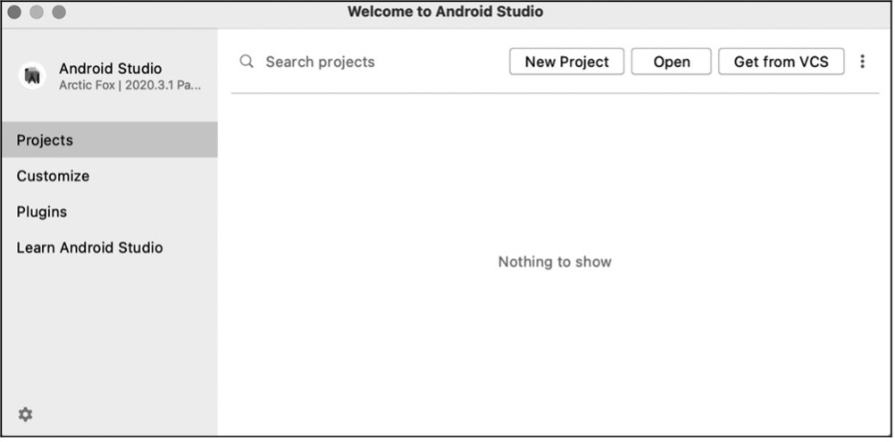
Figure 10.5. Interface of Android Studio
Select "Empty Activity", click "Next", and a "New Project" box as
Figure 10.6 will pop up.
Specify the Name of your project (e.g.,
MyRainmaker) and the Package name, and set the Save location, the
Language (Kotlin), and the Minimum SDK (Android 6.0 and above). Then
click "Finish" to create a new project.
If you are creating a project for the first time, it may take some time to
automatically download all the dependencies, so please be patient.
The iOS app may be developed on computers runing macOS 10.12 and above
using Xcode (available on App Store). It should be target at iOS 11.0
and above, and can be built with Swift and Objective-C.
Swift is preferred as it is faster, safer, and more interactive. It
removes pointers and other unsafe access in Objective-C, and switches
from the smalltalk-style syntax used by Objective-C to dot notation. All
the sample code in this chapter is written in Swift.
After downloading and installing Xcode on your PC, open it, click
"Create a new Xcode project", select "iOS" → "App" as shown in Figure
10.8, and click "Next". You should see a new prompt for your project
details.
Figure 10.8. Select "iOS" → "App"
Set the Product Name (e.g., MyRainmaker), Team, Organization Identifier,
Interface, Life Cycle, and Language (Swift), as shown in Figure 10.9.
Figure 10.9. Set project details
Click "Next", and you should see a prompt for the project's location.
Set the storage path and click "Create".
Open the terminal, navigate to the project directory, and execute the
following command to generate a Podfile.
% touch Podfile
Open the Podfile and add dependencies.
# Uncomment the next line to define a global platform for your project platform :ios, '12.0'
target 'ESPRainMaker' do
# Comment the next line if you're not using Swift and don't want to use dynamic frameworks
use_frameworks!
# Pods for ESPRainMaker
pod 'MBProgressHUD', '~> 1.1.0'
pod 'Alamofire', '~> 5.0.0'
pod 'Toast-Swift'
pod 'ReachabilitySwift'
pod 'JWTDecode', '~> 2.4'
pod 'M13Checkbox'
pod 'ESPProvision'
pod 'DropDown'
pod 'FlexColorPicker'
end
post_install do |installer|
.pods_project.targets.each do |target|
target.build_configurations.each do |config|
config.build_settings['IPHONEOS_DEPLOYMENT_TARGET'] = '12.0'
end
end
end
Execute the following command to download dependencies.
% pod install
After download, open the project folder and double-click MyRainmaker.xcworkspace to open the project, as shown in Figure 10.10.
Add the following permissions to info.plist in the MyRainmaker
folder.
key NSBluetoothAlways Usage Description and key NSBluetooth Peripheral UsageDescription for Bluetooth permission.
key NSCamera Usage Description for camera permission to scan QR codes.
key NSLocationWhenInUseUsage Description for location permission. (It is required for devices running iOS 13 and above to access SSID.)
key NSLocalNetworkUsageDescription for local network permission. (It is required for devices running iOS 14 and above to communicate over local network.)
In the previous sections, we have introduced how to create a new app
project, along with its structure and lifecycle. Now, to help you
understand the development of app functionalities more concretely, we
have included the source code of the smartphone app project in our
GitHub, and you can import it into Android Studio/Xcode to run for for
reference.
The main function of the smartphone app is to configure devices
developed based on Espressif's chips and modules to a designated router,
and send commands through the app to control these devices, such as
smart lights and sensors. Another function is to set the device status
at a specified time using the scheduling module, for example, to turn on
the water heater on the way home, so that hot water will be available as
soon as you arrive.
Figure 10.12. Functional requirements of the project
Before developing the app, you should first understand the functional
modules and specific functions to be implemented in this project. The
smartphone app project in this chapter mainly includes modules such as
user management, provisioning, and device control (more functions
illustrated in Figure 10.12). The following sections will provide a
module-by-module breakdown.
User registration and login are implemented in one interface and
switched through the toggle button. The critical part of this module is
to allow third-party accounts, and the network requests for
registration, login, verification code acquisition, etc., and data
parsing. The analysis of user management requirements is shown in Figure
10.13.
Figure 10.13. Analysis of user management requirements
To log in with a third-party account such as GitHub, Apple, or
Google, the app will first open a webpage in the browser and obtain
the unique identifier of the account.
Forgot password and verification code request can be implemented via
corresponding cloud APIs.
Passwords entered will be displayed by default in ciphertext and can
be switched to plaintext for confirmation by clicking the toggle
(eye icon).
Email addresses entered will be validated using regular expressions.
Documentation will include documents for the entire project and can
be accessed from various places in the app.
There are two ways to provision a device. One is Bluetooth
provisioning, where the app connects and communicates with the device
through Bluetooth, provides provisioning data for the device, and allows
it to join the network. Another way is SoftAP provisioning, where
the device starts a Wi-Fi hotspot for the smartphone to connect and
communicate with each other. Once the device is provisioned, enter PIN
to bind the device over cloud. The analysis of device provisioning and
binding requirements is shown in Figure 10.14.
Figure 10.14. Analysis of device provisioning and binding requirements
For Bluetooth provisioning, the app needs to implement Bluetooth
scanning, connection, subscription, packet transmission and other
functions.
For SoftAP provisioning, the app needs to navigate to the system
setting interface, connect to the device's Wi-Fi hotspot, and
display information about the connected Wi-Fi hotspot.
The implementation of device binding after provisioning is the same
for both ways and can be reused.
Once the device gets provisioned and bound, users will be able to use
the smartphone app to monitor and control it remotely. In addition,
users can also control multiple devices at the same time and create
groups to manage them. The analysis of remote-control requirements is
shown in Figure 10.15.
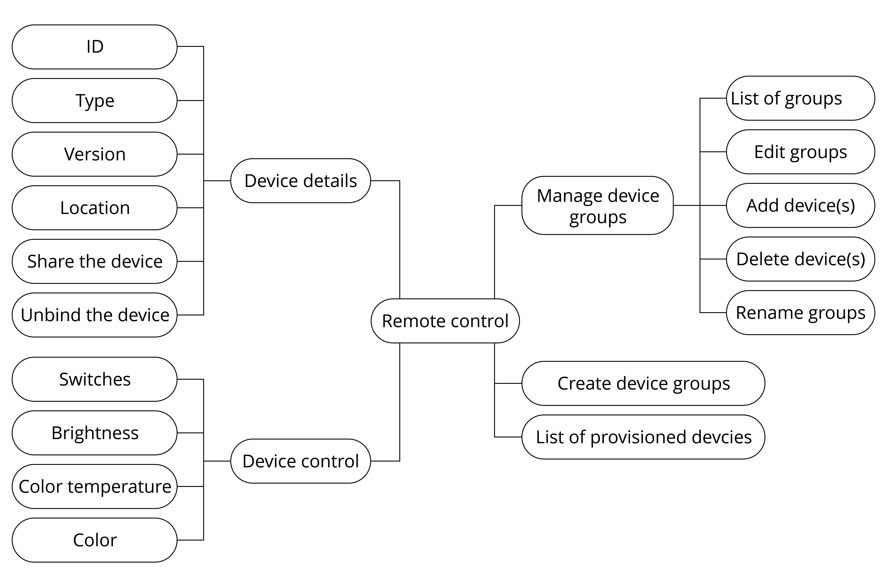
Figure 10.15. Analysis of remote-control requirements
In the smartphone app, all the provisioned devices will be displayed
in a list and can be turned on/off easily.
By selecting a specified device, users will enter its independent
control interface, which varies for each device type. For example,
it might be used to control switches, brightness, and color.
The device details interface will show device ID, type, version,
location, etc., and allow users to analyze and unbind devices.
By creating groups, devices can be controlled and managed together.
The scheduling function is relatively simple, very similar to alarm
clocks we use every day. It mainly includes functions like creating
schedules, list of schedule events, editing schedules,
enabling/disabling schedules, etc. The analysis of scheduling
requirements is shown in Figure 10.16. The details of a schedule refer
to its event name, date, time, recurring pattern, etc.
The user center module mainly features user profile, notification,
changing password, terms of use, project documents, privacy policy,
voice services, and logout. Note that the changing password and logout
functions need to call the cloud API. The analysis of user center
requirements is shown in Figure 10.17.
Figure 10.17. Analysis of user center requirements
After going through the analysis of the project's functional
requirements in Section 10.3, you should already have an overall picture
of modules and functions that need to be developed, as well as the
required frameworks and third-party libraries. In this section, we will
put all the modules and functions into code. Based on the new projects
and permissions configured before, now you need to know the classes
designed for each interface and associations between them, in order to
achieve better operation through code. The code for each function would
be encapsulated to be reused and modularised.
RainMaker cloud supports two types of APIs: Unauthenticated and
Authenticated. Unauthenticated APIs do not have any authentication
tokens in the HTTP header and will receive access_token in the
response when users log in successfully. Authenticated APIs are marked
in the Swagger file with a "lock" sign in the front. Their
access_token needs to be passed for authentification in the
Authorization HTTP header.
When smartphones communicate with the RainMaker cloud, the underlying
protocol is HyperText Transfer Protocol Secure (HTTPS). HTTPS can
authenticate the server to protect the privacy and integrity of the
exchange data. The HTTPS body received by the RainMaker cloud is in JSON
format.
First, we need to implement the registration of a new account, which
will be used to bind the device in subsequent steps and control it
remotely. In this project, the account is registered via email address.
There is a toggle button in the registration interface to switch between
"SIGN IN" and "SIGN UP". For the SIGN UP interface, there are three
input fields: Email, Password, and Confirm Password. The content of the
Password and Confirm Password fields can be shown or hidden by toggling
their visibility, so that users can check whether they have entered the
correct password. The password should contain at least one uppercase
letter and a number.
Figure 10.18. SIGN UP interface
Before clicking "Register", users must read and agree to the Privacy
Policy and Terms of Use. Then, it will navigate to a verification
interface, and a digital code will be sent to the email address. Users
need to enter the correct digital code to complete the registration
procedure. The SIGN UP interface is shown in Figure 10.18.
After account registration, we can call the account login API to get the token for authentication and the basic profile.
The smartphone app project in this chapter supports login via
third-party accounts such as GitHub, Apple, and Google. So long as users
have accounts of these three platforms, they can log in directly in the
app without registration.
If users have already registered new accounts, they can also log in to
the app by entering their email address and password.
If users forget their password, they can click "Forgot password?" under
the "Sign in" button to reset password.
At the bottom of the SIGN IN interface are the project-related
documentation, privacy agreement, terms of use, and the app version. The
SIGN IN interface is shown in Figure 10.20.
Figure 10.20. SIGN IN interface
The account login function is implemented as follows:
Among these fields, status tells whether the request is successful;
description provides details of the request; accesstoken is the
token to be added to the HTTP request header by all APIs requiring user
permissions, in the format of Authorization:$acces-stoken; idtoken and refreshtoken are not used for now and thus not
explained here.
In response to the "get user profile" request, the server returns:
{
"user_id": "string",
"user_name": "string",
"super_admin": true,
"picture_url": "string",
"name": "string",
"mfa": true,
"phone_number": "<+Mobile Number with country code>"
}
Among these fields, user_id is the user's unique identifier and will
be used later in provisioning; user_name refers to the account;
super_admin is returned true only when the user is a super admin;
picture_url points to the user's profile picture; phone_number is
the user's mobile phone number; name and mfa are not used in this
project and thus not explained here.
As described in Section 10.4, we can get access token and user_id of the RainMaker account through APIs for account login and getting user profile. The next step is to find the device, connect it to the router, and activitate it on the cloud. The suitable provisioning library for the app is idf-provisioning, which is encapsulated based on ESP-IDF provisioning.
Figure 10.23 illustrates the data exchange between the smartphone and
the device during provisioning. This is also mentioned in Section 7.3.4
Bluetooth Provisioning.
Figure 10.23. Data exchange between smartphone and device during provisioning
Navigate to the homepage of the app, click the button in the upper right corner, and the camera will be called to scan QR Code on devices. This is the fastest way to discover a smart device. Except for QR code scanning, users can also discover devices through BLE or SoftAP provisioning. The device scanning interface is shown in Figure 10.24. (The actual interface may be different from the screenshots in this book due to application upgrades.)
Figure 10.24. Device scanning interface
In the following sections, we will take Bluetooth provisioning as an example to introduce the process of device provisoning.
In the following code, prefix is used to filter devices by names. If a device has its unique identifier, it can be used for filtering. iOS code has an additional parameter transport with two possible values: ble and softap, which refers to the two provisioning methods.
override fun onCreate(savedInstanceState: Bundle?) {
super.onCreate(savedInstanceState)
//Code Omitted
EventBus.getDefault().register(this)
}
@Override
protected void onDestroy() {
EventBus.getDefault().unregister(this);
super.onDestroy();
}
@Subscribe(threadMode = ThreadMode.MAIN)
public void onEvent(DeviceConnectionEvent event) {
handler.removeCallbacks(disconnectDeviceTask);
switch (event.getEventType()) {
case ESPConstants.EVENT_DEVICE_CONNECTED:
//Code Omitted
break;
case ESPConstants.EVENT_DEVICE_DISCONNECTED:`
//Code Omitted
break;
case ESPConstants.EVENT_DEVICE_CONNECTION_FAILED:
//Code Omitted
break;
}
}
In Android, EventBus is used to notify activities when Bluetooth LE
connection status changes, so it is necessary to register a callback
function in activities. After the device has been discovered, we should
first create a device instance as shown in the code above, and then call
the connection API as follows, so that the smartphone app can initiate a
connection request to the device.
public void deviceClick(int deviceClickedPosition) {
stopScan();
isConnecting = true;
isDeviceConnected = false;
btnScan.setVisibility(View.GONE);
rvBleDevices.setVisibility(View.GONE);
progressBar.setVisibility(View.VISIBLE);
this.position = deviceClickedPosition;
BleDevice bleDevice = deviceList.get(deviceClickedPosition);
String uuid = bluetoothDevices.get(bleDevice.getBluetoothDevice());
if (ActivityCompat.checkSelfPermission(BLEProvisionLanding.this,
Manifest. permission.ACCESS_FINE_LOCATION) ==
PackageManager.PERMISSION_GRANTED) {
boolean isSec1 = true;
if (AppConstants.SECURITY_0.equalsIgnoreCase(BuildConfig.SECURITY)) {
isSec1 = false;
}
if (isSec1) {
provisionManager.createESPDevice(ESPConstants.TransportType.TRANSPORT_BLE, ESPConstants.SecurityType.SECURITY_1);
} else {
provisionManager.createESPDevice(ESPConstants.TransportType.TRANSPORT_BLE, ESPConstants.SecurityType.SECURITY_0);
}provisionManager.getEspDevice().connectBLEDevice(bleDevice.getBluetoothDevice(), uuid);
handler.postDelayed(disconnectDeviceTask, DEVICE_CONNECT_TIMEOUT);
} else {
Log.e(TAG, "Not able to connect device as Location permission is not granted.");
}
}
The iOS app provides a proxy for the connection callback function, so we
can directly call the instance connection interface returned by device
scanning and pass the status proxy as a parameter to
bleConnectionStatusHandler. The code is as follows:
üìù Source code
The pods folder stores imported third-party libraries.
Files in this folder will only be generated once the project is
compiled and installed locally. For the source code of connecting
devices in iOS, please refer to book-esp32c3-iot-projects/phone_app/pods/espprovision/ESPDevice.swift.
Secret keys are used for authentication when users bind devices, and can be randomly generated by the smartphone app. To generate a secret key in Android, add:
final String secretKey = UUID.randomUUID().toString();
Each device has its unique identifier, namely the node ID. After the device is provisioned, it can be bound to the cloud server via its node ID by calling a binding request. The purpose of binding is to ensure subsequent remote control.
Once the smartphone app establishes a connection with the device, we can implement protocols through Bluetooth communication, provision the device, and activate the device on the cloud. The entire provisioning process consists of five steps as listed in Figure 10.25.
espDevice.provision(ssid: ssid, passPhrase: passphrase) { status in
switch status {
case .success:
//Provisioning succeeded.
case let .failure(error):
switch error {
case .configurationError:
case .sessionError:
case .wifiStatusDisconnected:
default:
}
case .configApplied:
}
}
Once the device is provisioned, we are ready to develop the device
control function of the smartphone app.
In Section 10.5, we have learned how to provision and activate devices.
In this section, we will set about to bind the device to the cloud
account and manage to control it.
When users get all the devices bound to the account, the smartphone app
would show them in a list. At the top of the interface, there are
several toggles for device groups. By default, all the devices will
appear in the "All Devices" group. If users want to assign the devices
to different groups, they may click the "" icon on the right and will then see the options to manage and create groups.
Figure 10.27. Interface showing the list of all bound devices
Devices grayed out indicate powered down and offline, while devices
highlighted indicate available online. The device card includes device
type icon, device name, offline time, and a toggle switch. Figure 10.27
shows an example list of all devices bound to the account.
Among these returned fields, nodes is an array of all the devices' ID; node_details is the detailed information of the devices, which includes id (unique identifier), role, status (connection status), config (configuration), params (device properties), etc.; total is the number of devices and is returned when device information spread across pages.
By clicking on a specific device in the device list, users can navigate
to its control interface, which displays different information according
to device types.
This section takes the control interface of light bulbs as an example,
which contains the bulb's name, power on/off status, brightness, hue,
and saturation. This information was obtained eariler when getting the
list of bound devices in Section 10.6.2. The control interface for light
bulbs is shown in Figure 10.29.
Figure 10.29. Bulb control interface
Given that one device might be controlled by different users, we should
keep the device information in the smartphone app up to date by
regularly refreshing and getting device status.
Among the returned fields, Light represents the brightness of the device, and brightness is the specific value; Switch represents the on/off status of the device.
The app allows users to change device name, power on/off status, brightness, hue, and saturation. This section will explain how to implement this function with the example of changing brightness and on/off status.
Among the returned fields, node_id represents the device's unique identifier; Light represents the brightness of the device, and brightness is the specific value; Switch indicates the on/off status of the device.
func setDeviceParam(nodeID: String?, parameter: [String: Any],
completionHandler: ((ESPCloudResponseStatus) -> Void)? = nil) {
NotificationCenter.default.post(Notification(name: Notification.Name
(Constants.paramUpdateNotification)))
if let nodeid = nodeID {
ESPExtendUserSessionWorker().checkUserSession(){accessToken, error in
if let token = accessToken {
let url = Constants.setParam + "?nodeid=" + nodeid
let headers: HTTPHeaders = ["Content-Type":
"application/json",
"Authorization": token]
self.session.request(url, method: .put,
parameters: parameter,
encoding: ESPCustomJsonEncoder.default,
headers: headers).responseJSON {response in
//Code Omitted
}
} else {
let _ = self.validatedRefreshToken(error: error)
}
}
}
}
The code above allows users to change the status of a specific device.
So far, we have implemented the functions of account registration,
account login, device scanning, device connection, device provisioning,
device binding, and remote control on RainMaker.
After implementing the core functional modules, it is also necessary to
develop a scheduling module and a user center module according to the
functional requirements. Usually, these two modules are essential for a
complete smartphone app. This section will describe the development of
these two modules.
The scheduling interface is mainly used to show, create, and edit
schedule events. The list page displays information such as name, time,
date, and the recurring pattern of scheduled events. Each event has a
toggle switch. The scheduling interface is shown in Figure 10.32.
Figure 10.32. Scheduling interface
Data related to scheduling are stored in the local database of the
smartphone app, and are added, deleted, modified, and queried there. See
below for the code.
The code to save schedule data is as follows, where KEY_OPERATION decribes the schedule event, KEY_ID is the unique identifier, KEY_NAME refers to the schedule's name, KEY_DAYS to the scheduled date, KEY_MINUTES to the scheduled time, and KEY_TRIGGERS to the recurring pattern (Monday to Friday).
The code to save schedule data is as follows, where KEY_OPERATION decribes the schedule event, KEY_ID is the unique identifier, KEY_NAME refers to the schedule's name, KEY_DAYS to the scheduled date, KEY_MINUTES to the scheduled time, and KEY_TRIGGERS to the recurring pattern (Monday to Friday).
The user center module mainly includes functions like user profile,
notification, change password, privacy policy, terms of use,
documentation, voice services, and logout. The user center interface is
shown in Figure 10.33.
Figure 10.33. User center interface
Among these functions, change password and logout need to be implemented
by calling cloud APIs. In this section, we will take change password as
an example of implementing user center functions. The interface for
changing password is shown in Figure 10.34.
Figure 10.34. API for changing password
PUT /v1/password
Authorization: $accesstoken
{
"password": "password",
"newpassword": "newpassowrd"
}
In the code above, password refers to the old password, which aids the
cloud in changing password; newpassword refers to the new password.
Once the password has been changed, the new password should come into
use, and the old one becomes invalid.
This chapter has mainly presented how to develop a smartphone app. At
the beginning, we introduced the development technologies for smartphone
apps and the procedure to create a new smartphone app project, so as to
give you a general picture of the entire development process. Then, we
analysed the functional requirements for each module, namely user
management, device provisioning, device control, and scheduling and user
centre. At last, we detailed the development process of a smartphone app
with source code, and showed how to implement device provisioning and
control in the smartphone app.
The firmware update of IoT devices is often implemented through OTA
(Over-the-Air). OTA provides a secure and dependable means to remediate
firmware vulnerabilities, introduce novel functions, and optimize
product performance, thereby enhancing the experience of end users. At
present, OTA has become a standard function in the mass production of
products.
Marking firmware with different versions based on their respective
functionalities is a reliable and effective means of firmware
management. Standardized methods of version marking can facilitate
version management, aid in troubleshooting, and enable efficient
post-upgrade tracking, ultimately leading to more effective firmware
updates via OTA.
ESP-IDF provides an example of OTA and various firmware version
management methods. This chapter will cover these topics and demonstrate
how to achieve remote OTA for an intelligent lamp using ESP RainMaker.
The OTA mechanism allows the device to receive new firmware during normal operation, and write the new firmware to the currently inactive application partition. After verifying the validity of the firmware, the device switches to run on the new firmware. The basic steps of OTA are shown in Figure 11.1.
Figure 11.1. Basic steps of OTA
From Figure 11.1, the basic steps of OTA are as follows:
The cloud server pushes OTA information to the device.
The device verifies the identity of the cloud server and downloads
the firmware from the trusted cloud server.
The device decides whether to perform OTA according to the version
information in the firmware. If it decides to perform OTA, the
firmware is then requested and written to the flash. After the
verification is successfully completed, the system switches to run
on the new firmware.
According to the basic steps listed above, to put it simply, the OTA
process is the process of firmware acquisition, writing, verification,
and switching. Before further understanding the OTA mechanism, we will
first introduce the partition table and firmware startup process.
The partition tables in ESP-IDF refer to the descriptive files that divide the flash into specific functional areas at the user level. This book takes advanced_https_ota as an example, abbreviated as the OTA upgrade example. In this example, the partitions_two_ota.csv file under the partition_table component in ESP-IDF is used by default. The following is a summary of the partitions_two_ota.csv partition table.
# Name, Type, SubType, Offset, Size, Flags
# Note: if you have increased the bootloader size, make sure to update the offsets to avoid overlap
nvs, data, nvs, , 0x4000,
otadata, data, ota, , 0x2000,
phy_init, data, phy, , 0x1000,
factory, app, factory, , 1M,
ota_0, app, ota_0, , 1M,
ota_1, app, ota_1, , 1M,
From the overview above, each entry in the partition table consists of Name, Type, SubType, Offset, Size, and Flags.
The Name field is used to identify the name and should not exceed
16 bytes.
The Type field can be specified as either app or data, or a number from 0 to 254 (or the corresponding hexadecimal number 0x00 to 0xFE). It is mainly used to mark whether the stored content is an application firmware or data.
The length of the SubType field is 8 bits, and the specific marking content is related to the Type field.
When Type is defined as app, SubType can be specified as factory(0x00), ota_0(0x10), ..., ota_15(0x1F), or test(0x20).
When Type is defined as data, SubType can be specified as
ota(0x00), phy(0x01), nvs(0x02), nvs_keys(0x04), or a
specific subtype for other components.
The Offset and Size fields are used to define a specific area.
The Flags field is used to mark whether encryption is enabled.
Without any value filled in the Offset field, the partition table in the example is still valid. This is because the position of the first entry in the partition table is determined, so the address of the subsequent entry can be calculated from the Size field of the previous entry. If the addresses of each entry in the partition table are not continuous, the Offset field needs to be used to mark the starting address of each entry. For easy understanding, this book has converted the example partition table into a figure, as shown in Figure 11.2.
Figure 11.2. Schematics of the partition table
From Figure 11.2, the starting address of the first entry in the
partition table is 0x9000, that is, the Offset field of the entry
whose Name is nvs in partitions_two_ota.csv is 0x9000, and the
size of this entry is 0x4000. According to the calculation rules
introduced earlier, the Offset of the next entry is 0x9000 + 0x4000 =
0xd000. Calculated sequentially, the Offset of the last ota_1 entry
should be 0x210000.
The partitions_two_ota.csv partition table is divided into six areas:
three data partitions nvs, otadata, and phy_init are used to store NVS data, OTA data, and PHY initialisation data, respectively; and three application partitions used to store three different application firmwares. As can be seen from the basic steps of OTA, at least two OTA application partitions are required to perform OTA: [Type (app), SubType (ota_0/ota_1)] and one OTA data partition [Type (data), SubType (ota)]. It may also include an optional application partition, which is the factory application partition: [Type (app), SubType (factory)].
The OTA data partition is used to store information about the
currently selected OTA application partition. After the first OTA,
the OTA data partition will be updated to specify which OTA
application partition to boot next. The size of the OTA data
partition needs to be set to 0x2000 to prevent problems caused by
power failure during writing. The two sectors are erased and written
with matching data separately. If there is an inconsistency, the
counter field will be used to determine the sector with the latest
data.
The application partition is used to store firmware. The factory
application partition is the default application partition. If there
is no OTA data partition or the OTA data partition is invalid, the
firmware of the factory application partition (if it exists) will be
used first, followed by the firmware of the OTA data partition. OTA
will never update the contents of the factory application partition.
In Section 11.1.1, we introduced that the starting address of the first
entry in the partition table is 0x9000. But why is the starting address
not 0x0? And why is it 0x9000? To answer these questions, let's first
look at Figure 11.3, which presents the specific contents stored in a 4
MB flash.
Figure 11.3. Specific contents stored in a 4 MB flash
As can be seen from Figure 11.3, the flash is divided into eight areas:
the address 0x00 stores the Bootloader, the address 0x8000 stores the
partition table, and the latter 6 areas, starting from 0x9000, is the
area divided by the partition table, which you may already be quite
familiar with. Now we can answer the first question. The reason why 0x0
is not the starting address is that it stores the Bootloader (not every
0x0 address of the chip flash stores the Bootloader. ESP32 series chips
store the Bootloader at 0x1000), which is used to load and boot the
application partition. In the programming design of Espressif chips,
Bootloader is called the secondary bootloader, which mainly increases
the flexibility of flash partition and facilitates the implementation of
flash encryption, secure boot, and OTA functions. The secondary
bootloader loads the partition table from the offset address of flash at
0x8000 by default. The size of the partition table is 0x1000. The
secondary bootloader will look for the factory application partition and
the OTA data partition from the partition table and determine which
partition to boot by querying the OTA data partition. Therefore, the
second question has also been answered.
The process from power-up to running the app_main() function on
ESP32-C3 can be divided into three steps:
Bootstrapping is performed by the primary bootloader, which is
stored in the ROM of the ESP32-C3. Upon the chip reset, the CPU
starts running immediately to determine the boot mode and perform
relevant operations. The secondary bootloader is then loaded into
RAM from the offset address 0x0 of the flash.
Bootstrapping is performed by the secondary bootloader. The
secondary bootloader will first load the partition table from flash
and then query the OTA data partition to select a firmware from a
particular application partition for loading. When all data is
processed, the secondary bootloader will verify the integrity of the
firmware and look for the entry address from the header of the
binary firmware file, and then jump to that address to execute the
firmware. The firmware in the application partition has certain
statuses that affect its startup. These statuses are stored in the
OTA data partition and are defined in ESP-IDF by a set of enumerated
variables (esp_ota_img_states_t).
New firmware: defined by ESP_OTA_IMG_NEW, indicates whether
the firmware is being loaded by the Bootloader for the first
time. This status will be changed to
ESP_OTA_IMG_PENDING_VERIFY in the Bootloader.
Pending-for-verification Firmware: defined by
ESP_OTA_IMG_PENDING_VERIFY, indicates whether the firmware has
been enabled. If the firmware remains in this status on the
second boot, the status will then be changed to
ESP_OTA_IMG_ABORTED.
Valid firmware: defined by ESP_OTA_IMG_VALID, indicates that
the firmware is functioning normally. Once marked with this
status, the firmware can be booted without restriction.
Invalid firmware: defined by ESP_OTA_IMG_INVALID, indicates
that the firmware is not functioning properly. Once marked with
this status, the firmware cannot be rebooted.
Aborted firmware: defined by ESP_OTA_IMG_ABORTED, indicates
that there is an exception with the firmware. Once marked with
this status, the firmware cannot be rebooted.
Undefined firmware: defined by ESP_OTA_IMG_UNDEFINED. Once
marked with this status, the firmware can be booted without
restriction.
Application startup phase. After the bootstrapping performed by the
secondary bootloader comes the application firmware startup phase,
which includes all processes from the start of the application to
the creation and execution of the app_main() function. This phase
can be divided into three parts:
Initialisation of hardware and basic ports.
Initialisation of software services and the FreeRTOS system.
Running the main task and calling the app_main() function.
For IoT devices, the first step of OTA is to acquire the new firmware.
There are several ways to do this, among which using Wi-Fi is one of the
simplest and most convenient. IoT devices can connect to the router via
Wi-Fi, and then connect to the OTA server to download the firmware via
application layer protocols (e.g., HTTP, FTP). Here, we will use advanced_https_ota as an example to introduce a way to download the firmware via HTTPS. The example performs OTA with the esp_https_ota component, which uses HTTPS as the download protocol. The following code is from advanced_https_ota_example.c, with some parts omitted for clarity:
static esp_err_t _http_client_init_cb(esp_http_client_handle_t http_client)
{
esp_err_t err = ESP_OK;
//Set HTTPS custom header
//err = esp_http_client_set_header(http_client, "Custom-Header", "Value");
return err;
}
void advanced_ota_example_task(void *pvParameter)
{
ESP_LOGI(TAG, "Starting Advanced OTA example");
//1. Configure the HTTPS connection and set the esp_https_ota parameter
esp_err_t ota_finish_err = ESP_OK;
esp_http_client_config_t config = {
.url = CONFIG_EXAMPLE_FIRMWARE_UPGRADE_URL,
.cert_pem = (char *)server_cert_pem_start,
.timeout_ms = CONFIG_EXAMPLE_OTA_RECV_TIMEOUT,
.keep_alive_enable = true,
};
......
esp_https_ota_config_t ota_config = {
.http_config = &config,
.http_client_init_cb = _http_client_init_cb,//Register esp_http_client callback function called after initialization
};
//2. Enable OTA via esp_https_ota_begin, returning HTTP/HTTPS results
esp_https_ota_handle_t https_ota_handle = NULL;
esp_err_t err = esp_https_ota_begin(&ota_config, &https_ota_handle);
if (err ! = ESP_OK) {
ESP_LOGE(TAG, "ESP HTTPS OTA Begin failed");
vTaskDelete(NULL);
}
//3. When connected, the information of new firmware can be obtained via esp_https_ota_get_img_desc, which can be used for verification
esp_app_desc_t app_desc;
err = esp_https_ota_get_img_desc(https_ota_handle, &app_desc);
if (err ! = ESP_OK) {
ESP_LOGE(TAG, "esp_https_ota_read_img_desc failed");
goto ota_end;
}
err = validate_image_header(&app_desc);
if (err ! = ESP_OK) {
ESP_LOGE(TAG, "image header verification failed");
goto ota_end;
}
//4. Receive and write firmware by iterating esp_https_ota_perform(), and jump out of the loop when HTTPS is not in receiving mode.
while (1) {
err = esp_https_ota_perform(https_ota_handle);
if (err ! = ESP_ERR_HTTPS_OTA_IN_PROGRESS) {
break;
}
/.
…
}
//5. Verify the firmware integrity, and call esp_https_ota_finish or esp_https_ota_abort to release the HTTP/HTTPS connection.
//Esp_https_ota_finish will upgrade the OTA data partition and switch the next boot to the new firmware.
if (esp_https_ota_is_complete_data_received(https_ota_handle) ! = true) {
//OTA firmware not fully received. Users can customise handling options
ESP_LOGE(TAG, "Complete data was not received." );
} else {
ota_finish_err = esp_https_ota_finish(https_ota_handle);
if ((err == ESP_OK) && (ota_finish_err == ESP_OK)) {
ESP_LOGI(TAG, "ESP_HTTPS_OTA upgrade successful.Rebooting ..." );
vTaskDelay(1000 / portTICK_PERIOD_MS);
esp_restart();
} else {
if (ota_finish_err == ESP_ERR_OTA_VALIDATE_FAILED) {
ESP_LOGE(TAG, "Image validation failed, image is corrupted");
}
ESP_LOGE(TAG, "ESP_HTTPS_OTA upgrade failed 0x%x", ota_finish_err);
vTaskDelete(NULL);
}
}
ota_end:
esp_https_ota_abort(https_ota_handle);
ESP_LOGE(TAG, "ESP_HTTPS_OTA upgrade failed");
vTaskDelete(NULL);
}
Acquiring firmware
The code above downloads the firmware using HTTPS protocol, and the
HTTPS operations are encapsulated in ESP-IDF. You only need to
configure the esp_http_client_config_t structure, where you can pass the certificate and enable
the TLS protocol to secure the transmitted data. After configuring
the HTTPS connection parameters, the configurations should be passed
to the esp_https_ota_config_t structure, which provides a callback
function to facilitate setting the HTTPS request header information.
Header information is generally used to declare the length and data
format of the HTTPS Body to the server. After the configuration, you
can call esp_https_ota_begin() for connection. The function will
determine the result based on the HTTPS status code returned. Upon
successful HTTPS connection, subsequent calls to the
esp_https_ota_perform() function to request firmware can be made
recursively.
Writing firmware
The esp_https_ota_perform() function continuously sends request
information to the server and writes each set of data returned by
the server to the flash. This writing process is implemented within
the function by calling esp_ota_write().
Verifying firmware
Considering the limited resources of the receiving device and the
not-always-ideal network environment, it is often necessary to send
HTTPS requests several times to download the firmware completely.
ESP-IDF provides the esp_https_ota_is_complete_data_received() function to determine whether the firmware has
been received completely by calculating the size of the firmware.
Once completely received, the esp_https_ota_finish() function will
be called to terminate the HTTPS connection and release any occupied
resources. Simply comparing the firmware size to determine if the
firmware is valid is not optimal, we need to also verify the SHA-256
value of the firmware to ensure that the downloaded firmware is
identical to the original firmware. Calling esp_https_ota_finish()
will complete the verification automatically. If secure boot is
enabled, the relevant checks will also be performed at this point.
For more details about secure boot, please refer to Section 13.4.2.
Switching firmware
The esp_https_ota_finish() function not only releases HTTPS
resources and verifies the firmware, but also automatically rewrites
the OTA partition upon successful verification. At the same time,
the function updates the status of this downloaded firmware to
"undefined" (ESP_OTA_IMG_UNDEFINED). After the preparations are
done, the firmware that is rebooted by calling esp_restart() would
be the new firmware. Undefined firmware in this case means that the
firmware can be booted without restriction as long as the Bootloader
rollback is not enabled.
Marking firmware with different features as different versions is an
important means of facilitating maintenance later on. For version
information, ESP-IDF provides a number of marking fields that can be
used with the rollback/anti-rollback function to meet most of the needs
of version control.
There are four editable fields – secure_version, project_version, project_name, and App version, and two non-editable fields – idf_ver and Compile time and date.
secure_version: used to set the secure version of the chip. The secure version number is stored in eFuse and can mark up to 16 versions. The way to enable it is as follows:
(Top) → Bootloader config
...
...
[*] Enable app rollback support
[*] Enable app anti-rollback support
(0) eFuse secure version of app (NEW)
(16) Size of the eFuse secure version field (NEW)
...
...
project_version: used to set the project version. The way to enable it is as follows:
(Top) → Application manager
...
...
[*] Get the project version from Kconfig
(1) Project version
...
...
project_name: the project name is set in the CMakeLists.txt file under the project directoey. Take the advanced_https_ota project as an example, the way to enable the field is as follows:
Compile time and date and idf_ver (ESP-IDF Version) will be assigned automatically during compilation with the following log printed:
...
...
I (304) cpu_start: Compile time: Mar 14 2022 18 : 44 : 58
I (316) cpu_start: ESP-IDF: v4.3.2
...
...
Both the secure version number and project version number can be used to
mark firmware version information but with different focuses and
realizations. The secure version number is written in the chip's eFuse.
It cannot be changed once written and only higher versions of firmware
are allowed to be written to the chip afterward, making it possible to
manage the major updates safely and effectively. As major updates are
generally related to security, such version numbers are called secure
version numbers. The project version number is stored in flash along
with the firmware and can be changed at will during each compilation.
The device does not actively check this information during updates, and
its usage is entirely determined by the developer. In practical
development applications, due to the usage limit of the secure version
number, an update of the secure version number is generally defined as
containing major functional updates and fixing security bugs, while the
update of the project version number is used as a business-level
functional update.
The main purpose of application rollback is to ensure that the device can be rolled back to the previous version in case of exceptions after an update, without affecting the normal use of the device. When rollback is enabled, the firmware will be marked as a new firmware (ESP_OTA_IMG_NEW) once the firmware verification is completed. Upon reboot, the Bootloader will select this firmware and re-mark it as pending-for-verification (ESP_OTA_IMG_PENDING_VERIFY). When running the app_main() function, two scenarioes may occur:
Normally functioning
After testing and confirming that everything is working properly,
the developer calls the esp_ota_mark_app_valid_cancel_rollback()
function to mark the current running firmware as a valid firmware
(ESP_ OTA_IMG_VALID). After that, the firmware can be booted
without any restrictions.
Encountering serious errors
It will trigger an automatic secondary reboot, and the Bootloader
will directly mark the firmware as an aborted firmware
(ESP_OTA_IMG_ABORTED) and roll back to the previous version. After
self-testing, the developer should confirm that there is an error
and call esp_ota_mark_app_invalid_rollback_and_reboot() to mark
the running version as an invalid firmware. The firmware will then
be rolled back to the previous version automatically and cannot be
rebooted again.
Another function of the secure version number is to prevent the firmware
from rolling back to a lower secure version. When selecting the bootable
application, the Bootloader will check the secure version number
extrally. Only if the secure version number of the firmware is equal to
or higher than that stored in the chip's eFuse, the firmware will be
selected. The new secure version number will be updated after the
firmware status is marked as valid (ESP_OTA_IMG_VALID).
Both rollback and anti-rollback can be enabled through menuconfig as
follows:
(Top) → Bootloader config
...
...
[*] Enable app rollback support
[*] Enable app anti-rollback support
(0) eFuse secure version of app (NEW)
(16) Size of the eFuse secure version field (NEW)
...
...
Before running the OTA example, you need to first create the HTTPS
service and apply for a certificate. The certificate can be self-signed
by executing openssl req -x509 -newkey rsa:2048 -keyout ca_key.pem -out ca_cert.pem -days 365 -nodes. Logs are as follows:
Generating a RSA private key
. +++++
....................+++++
writing new private key to 'ca_key.pem'
-----
You are about to be asked to enter information that will be incorporated into your certificate request.
What you are about to enter is what is called a Distinguished Name or a DN.
There are quite a few fields but you can leave some blank
For some fields there will be a default value,
If you enter '.' , the field will be left blank.
-----
...
...
The command openssl s_server -WWW -key ca_key.pem -cert ca_cert.pem -port 8070 will enable an HTTPS service with port 8070 on the local
machine. The logs are as follows:
...
Using default temp DH parameters
ACCEPT
...
...
Upon successful HTTPS connection, the logs are as follows:
The above code snippet demonstrates the following procedure:
Initialise NVS with the nvs_flash_init() function, which is
generally the first step in writing an ESP32-C3 application.
Initialise the netif layer and connect to Wi-Fi with the
example_connect() function. This function is generic and is
realised in the protocol_examples_common component. You can
replace it with your own Wi-Fi connection function.
If rollback is enabled, then you need to set the firmware status.
(Optional) Set the PS mode to WIFI_PS_NONE with the
esp_wifi_set_ps() function to disable the power saving mode and
achieve maximum data throughput.
Create an OTA task and complete the firmware receiving process in
the task. For proceduce of advanced_ota_example_task, please
refer to Section 11.1.3.
With the basic understanding of the above example, we can now proceed to
the OTA test. Please perform and complete the following actions
successively:
Set the target chip to ESP32-C3 with the following command:
$ idf.py set-target esp32c3
Set Wi-Fi information.
Run idf.py menuconfig and edit the Wi-Fi SSID and password as follows:
(Top) → Example Connection Configuration
Espressif IoT Development Framework Configuration
[*] connect using WiFi interface
(Xiaomi_32BD) WiFi SSID
(12345678) WiFi Password
[ ] connect using Ethernet interface
[*] Obtain IPv6 address
Preferred IPv6 Type (Local Link Address) --->
Set OTA information.
Fill in Firmware Upgrade URL and select skipping server certificate CN fieldcheck and firmware version check.
(https://192.168.31.177:8070/advanced_https_ota.bin) Firmware Upgrade URL
[*] Skip server certificate CN fieldcheck
[*] Skip firmware version check
(5000) OTA Receive Timeout
Build firmware with the command idf.py build.
After building, extract advanced_https_ota.bin under the build directory to the directory of the HTTPS server, namely, the directory where the openssl s_server operation is performed.
Download firmware.
Run idf.py flash monitor to download the firmware and open monitor.
Upon completion of all operations, ESP32-C3 will power up and connect to the set Wi-Fi and reboot after downloading the firmware from the set URL.
A more common solution is to update firmware through a cloud platform.
In this section, we'll introduce how to push update messages from cloud
to the device with ESP RainMaker. ESP RainMaker uses esp_https_ota
component as well. With the code of OTA integrated in the ESP RainMaker
SDK, you can enable OTA by merely calling the esp_rmaker_ota_enable()
function. Note that while ESP RainMaker provides two ways of OTA, you
need to select receiving OTA messages using topics. By subscribing
topics related to OTA, you can receive MQTT messages, parse out the URL
of the firmware, and push the progress and final status of the current
update through these topics. The code for the ESP RainMaker OTA is
stored under the esp-rainmaker/components/esp_rainmaker/src/ota directory. The code related to firmware downloads is stored in the source file esp_rmaker_ota.c under the same directory, as well as the following code:
//ESP RainMaker OTA status
char *esp_rmaker_ota_status_to_string(ota_status_t status)
{
switch (status) {
case OTA_STATUS_IN_PROGRESS:
return "in-progress";
case OTA_STATUS_SUCCESS:
return "success";
case OTA_STATUS_FAILED:
return "failed";
case OTA_STATUS_DELAYED:
return "delayed";
default:
return "invalid";
}
return "invalid";
}
esp_err_t esp_rmaker_ota_report_status(esp_rmaker_ota_handle_t ota_handle,
ota_status_t status, char *additional_info)
{
......
if (ota->type == OTA_USING_PARAMS) {
err = esp_rmaker_ota_report_status_using_params(ota_handle, status, additional_info);
} else if (ota->type == OTA_USING_TOPICS) {
err = esp_rmaker_ota_report_status_using_topics(ota_handle, status, additional_info);
}
......
}
There are four OTA statuses in ESP RainMaker: firmware acquisition in progress (OTA_STATUS_IN_PROGRESS), OTA succeeded (OTA_STATUS_SUCCESS), OTA failed (OTA_STATUS_FAILED), and delayed (OTA_STATUS_DELAYED).
Firmware acquisition in progress corresponds to the status of
downloading firmware, which should be reported to the cloud platform
when the esp_https_ota_begin() function is called, and the cloud
platform will then update the icon correspondingly. OTA succeeded and
OTA failed indicate the results of firmware download and verification.
Delayed indicates that the device is currently not available to process
the request, and the OTA status can later be updated through the
esp_rmaker_ota_report_status() function.
//Firmware information verification
static esp_err_t validate_image_header(esp_rmaker_ota_handle_t ota_handle, esp_app_desc_t *new_app_info)
{
if (new_app_info == NULL) {
return ESP_ERR_INVALID_ARG;
}
//Firmware status aquisition
const esp_partition_t *running = esp_ota_get_running_partition();
esp_app_desc_t running_app_info;
if (esp_ota_get_partition_description(running, &running_app_info) == ESP_OK) {
ESP_LOGD(TAG, "Running firmware version: %s",running_app_info.version);
}
//Verify project version number
#ifndef CONFIG_ESP_RMAKER_SKIP_VERSION_CHECK`
if (memcmp(new_app_info->version, running_app_info.version, sizeof(new_app_info->version)) == 0){
ESP_LOGW(TAG, "Current running version is same as the new. We will not continue the update." );
esp_rmaker_ota_report_status(ota_handle, OTA_STATUS_FAILED, "Same version received");
return ESP_FAIL;
}
#endif
//Verify project name
#ifndef CONFIG_ESP_RMAKER_SKIP_PROJECT_NAME_CHECK
if (memcmp(new_app_info->project_name, running_app_info.project_name, sizeof(new_app_info->project_name)) ! = 0 ){
ESP_LOGW(TAG, "OTA Image built for Project: %s. Expected: %s",
new_app_info->project_name, running_app_info.project_name);
esp_rmaker_ota_report_status(ota_handle, OTA_STATUS_FAILED, "Project Name mismatch");
return ESP_FAIL;
}
#endif
return ESP_OK;
}
ESP RainMaker manages firmware by verifying the project version number
and the project name. Only when the new and old firmware of the same
project name are verified to have different project version numbers, the
firmware downloading will then be allowed to continue. Generally
speaking, the project version number is generally incremented, which is
more conducive for version control. By comparing project names, you can
prevent any accidental pushing of other products' firmware.
static esp_err_t esp_rmaker_ota_default_cb(esp_rmaker_ota_handle_t ota_handle, esp_rmaker_ota_data_t *ota_data)
{
......
//OTA http parameter configuration
esp_err_t ota_finish_err = ESP_OK;
esp_http_client_config_t config = {
.url = ota_data->url,
.cert_pem = ota_data->server_cert,
.timeout_ms = 5000,
.buffer_size = DEF_HTTP_RX_BUFFER_SIZE,
.buffer_size_tx = buffer_size_tx
};
#ifdef CONFIG_ESP_RMAKER_SKIP_COMMON_NAME_CHECK
config.skip_cert_common_name_check = true;
#endif
......
//Report update status
esp_rmaker_ota_report_status(ota_handle, OTA_STATUS_IN_PROGRESS, "Starting OTA Upgrade");
...
...
//Establish HTTPS connection and prepare to download firmware
esp_err_t err = esp_https_ota_begin(&ota_config, &https_ota_handle);
if (err ! = ESP_OK) {
ESP_LOGE(TAG, "ESP HTTPS OTA Begin failed");
esp_rmaker_ota_report_status(ota_handle, OTA_STATUS_FAILED, "ESP HTTPS OTA Begin failed");
return ESP_FAIL;
}
......
//Aquire firmware information for verification
esp_app_desc_t app_desc;
err = esp_https_ota_get_img_desc(https_ota_handle, &app_desc);
if (err ! = ESP_OK) {
ESP_LOGE(TAG, "esp_https_ota_read_img_desc failed");
esp_rmaker_ota_report_status(ota_handle, OTA_STATUS_FAILED, "Failed to read image decription");
goto ota_end;
}
err = validate_image_header(ota_handle, &app_desc);
if (err ! = ESP_OK) {
ESP_LOGE(TAG, "image header verification failed");
goto ota_end;
}
esp_rmaker_ota_report_status(ota_handle, OTA_STATUS_IN_PROGRESS, "Downloading Firmware Image");
int count = 0;
// Download firmware cyclically
while (1) {
err = esp_https_ota_perform(https_ota_handle);
if (err ! = ESP_ERR_HTTPS_OTA_IN_PROGRESS) {
break;
}
......
}
// Release HTTPS resource after downloading and start verification
ota_finish_err = esp_https_ota_finish(https_ota_handle);
if ((err == ESP_OK) && (ota_finish_err == ESP_OK)) {
//Report OTA succeeded status to cloud after successful verification
ESP_LOGI(TAG, "OTA upgrade successful. Rebooting in %d seconds...", OTA_REBOOT_TIMER_SEC);
esp_rmaker_ota_report_status(ota_handle, OTA_STATUS_SUCCESS, "OTA Upgrade finished successfully");
esp_rmaker_reboot(OTA_REBOOT_TIMER_SEC);
return ESP_OK;
}
......
}
The esp_rmaker_ota_default_cb() function is the default OTA callback
function in ESP RainMaker and will be called once an OTA message is
received from the cloud. The procedure of this function is similar to
that of the OTA example function introduced in Section 11.1.3. The
difference is that the esp_rmaker_ota_default_cb() function includes
the reporting of OTA status, which will update the current OTA progress
of the device to the cloud platform in time.
esp_err_t esp_rmaker_ota_enable(esp_rmaker_ota_config_t *ota_config,
esp_rmaker_ota_type_t type)
{
//Acquire partition information and verify firmware vadility through callback
const esp_partition_t *running = esp_ota_get_running_partition();
esp_ota_img_states_t ota_state;
if (esp_ota_get_state_partition(running, &ota_state) == ESP_OK) {
if (ota_state == ESP_OTA_IMG_PENDING_VERIFY) {
ESP_LOGI(TAG, "First Boot after an OTA");
//Run diagnostic function
bool diagnostic_is_ok = true;
if (ota_config->ota_diag) {
diagnostic_is_ok = ota_config->ota_diag();
}
if (diagnostic_is_ok) {
ESP_LOGI(TAG, "Diagnostics completed successfully! Continuing execution ...");
esp_ota_mark_app_valid_cancel_rollback();
} else {
ESP_LOGE(TAG, "Diagnostics failed! Start rollback to the previous version ...");
esp_ota_mark_app_invalid_rollback_and_reboot();
}
}
}
// Over-the-air (OTA) task callback function
if (ota_config->ota_cb) {
ota->ota_cb = ota_config->ota_cb;
} else {
ota->ota_cb = esp_rmaker_ota_default_cb;
}
......
return err;
}
The OTA part in ESP RainMaker encapsulates the self-test segment of the
rollback function. You can input a self-test function with a Boolean
return value through the esp_rmaker_ota_config_t structure. When calling the esp_rmaker_ota_enable() function to enable OTA, once the current firmware status is found to be pending for verification (ESP_OTA_IMG_PENDING_VERIFY), the self-test function input previously will be called by the function pointer, and the current firmware status will be set through the return value of the self-test function. server_cert in the esp_rmaker_ota_config_t structure points to the server-side certificate. ESP RainMaker uses AWS S3 bucket storage service, and you can pass in the certificate directly via the macro ESP_RMAKER_OTA_DEFAULT_SERVER_CERT, which is used during OTA to perform verifications and prevent DNS spoofing. You can upload the new firmware in the management backend of ESP RainMaker. The project version of the new firmware must be different from the version expected to be updated to, and there are two ways to modify the version in ESP
RainMaker:
Modify the project version number introduced in Section 11.2.1.
Modify the CMakeLists.txt file by adding set(PROJECT_VER "1.0").
You may refer to the example about this part.
Once the new firmware is built, you can upload the new firmware as shown
in Figure 11.5.
Figure 11.5. Uploading new firmware
Once the firmware is uploaded, you can enable the OTA task as shown in Figure 11.6. The procedure of booting the OTA task is as follows:
Figure 11.6. Boot the OTA task
Select the firmware used for OTA from the list.
Click "Start OTA" for the firmware.
Fill in information of the OTA task and select the node to be
updated. When the "Force Push" option is selected, online nodes can
receive OTA messages immediately. Otherwise, nodes will obtain URLs
for OTA based on the defined OTA policy (checks during startup,
periodic checks, etc.), which may cause delays.
The OTA Job Monitor (see Figure 11.7) provides real-time feedback on the
status of OTA, including the information available to users and the
functions implemented.
Figure 11.7. Interface of OTA Job Monitor
After initiating OTA successfully, the OTA status can be checked in
the task details of the current OTA job, which are reported by the
device.
The OTA Job Monitor will provide an overview of the task and the
status of each node can be checked.
The OTA task can be cancelled midway, but the nodes which have
already obtained the URL will continue upgrading.
This chapter mainly introduces the mechanism and procedures of OTA.
Firstly, it describes the basic procedures and ways of performing OTA.
Then it presents the functions of the partition table and the fields
related to OTA. In actual mass production, it is also necessary to
enable the rollback and anti-rollback functions accordingly to further
improve the stability and reliability of the device. Finally, according
to the practical example provided, you can either complete the firmware
update through the local host or push the update message to the device
from the cloud through ESP RainMaker.
With the wide application of IoT products, people can see more and more
IoT products in daily life, such as smart watches, smart sockets, smart
light bulbs, smart speakers, etc. Many of these IoT products are under
pressure to reduce their power consumption because they are powered by
battery or require certification for energy consumption. For example,
the CEC Tile 20 specification mandates that smart bulbs must not exceed
a standby power consumption of 0.2W to obtain energy consumption
certification in California, USA. Battery-powered smartwatches also aim
to extend their working hours. Developers of such IoT products must
prioritise power consumption as a crucial consideration during product
development. They must have a comprehensive understanding of the power
consumption characteristics of the chips they use, and be skilled in
utilising the relevant chips in practical IoT projects. To achieve this,
they should prioritise using low-power wireless communication
technologies, such as Bluetooth LE, and employ low-power circuit design
in their implementations. This ensures that power consumption is
minimised throughout the development process.
In low-power scenarios, the lifetime of a battery-powered device and its
ability to pass energy certification are often determined by its average
current. This average current is influenced by several factors,
including the current in different low-power modes, the operating
current in active states, the duration of low-power mode activation or
deactivation, and the processing power of the CPU. ESP32-C3 provides
chip-level support for low-power scenarios. It employs advanced power
management technology to switch between different power modes and
features intelligent low-power peripherals that help reduce CPU wakeup
times, resulting in further reduction of overall power consumption.
Power management algorithm included in ESP-IDF can adjust the advanced
peripheral bus (APB) frequency, CPU frequency, and put the chip into
Light-sleep mode to run an application at smallest possible power
consumption, given the requirements of application components.
Additionally, the chip automatically enters Light-sleep mode when idle,
reducing the power consumption during application runs. The ESP32-C3's
various low-power modes are discussed in detail in Section 12.2.
Enabling power management features comes at the cost of increased
interrupt latency. Extra latency depends on several factors, such as the
CPU frequency, single/dual core mode, whether frequency switch is
required.
Applications can acquire/release locks to control the power management
algorithm. When an application acquires a lock, the operation of power
management algorithm is restricted. When the lock is released, such
restrictions are removed. Power management locks have acquire/release
counters. If the lock has been acquired a number of times, it needs to
be released the same number of times to remove associated restrictions.
ESP32-C3 supports three types of locks described in Table 12.1.
Table 12.1. Power management locks
Power management lock
Description
SP_PM_CPU_FREQ_MAX
Requests CPU frequency to be at the maximum value set with esp_pm_configure(). For ESP32-C3, this value can be set to 80 MHz, 160 MHz, or 240 MHz.
ESP_PM_APB_FREQ_MAX
Requests the APB frequency to be at the maximum supported value. For ESP32-C3, this is 80 MHz.
ESP_PM_NO_LIGHT_SLEEP
Disable automatic switching to Light-sleep mode
Applications can acquire or release power management locks in a way that
can accommodate scenarios where power management is not required. For
example, driver for a peripheral clocked from APB can request the APB
frequency to be set to 80 MHz while the peripheral is used; RTOS can
request the CPU to run at the highest configured frequency while there
are tasks ready to run; A peripheral driver may need interrupts to be
enabled, which means it will have to request disabling Light-sleep mode.
Since requesting higher APB or CPU frequencies or disabling Light-sleep
mode causes higher current consumption, please keep the usage of power
management locks by components to a minimum.
When power management is enabled, the peripheral bus (APB) frequency and
CPU frequency may change during operation. This process is called
Dynamic Frequency Scaling (DFS). When DFS is enabled, the APB frequency
can be changed multiple times within a single RTOS tick. The APB
frequency change does not affect the operation of some peripherals,
while other peripherals may have issues. For example, Timer Group
peripheral timers will keep counting, however, the speed at which they
count will change proportionally to the APB frequency. Therefore,
developers should understand which peripherals will be affected by DFS
and which peripherals will not. With the continuous improvement of
ESP-IDF development, more and more peripheral drivers will not be
affected by DFS.
The following peripherals are not affected by DFS when clocked from a
specific clock source:
UART: If REF_TICK is used as the clock source, UART is not
affected by DFS. Otherwise, it will be affected by DFS.
LEDC: If REF_TICK is used as the clock source, LEDC is not
affected by DFS. Otherwise, it will be affected by DFS.
RMT: If REF_TICK or XTAL is used as the clock source, RMT is
not affected by DFS.
Currently, the following peripheral drivers are not affected by DFS.
These drivers will acquire the ESP_PM_APB_FREQ_MAX lock for the
duration of the transaction and release the lock upon the completion of
the the transaction automatically.
SPI host
I2C
I2S (if an APLL clock is used, I2S acquires
ESP_PM_NO_LIGHT_SLEEP power management lock.)
SPI slave: between calls to spi_slave_initialize() and
spi_slave_free(), SPI slave is not affected by DFS.
Wi-Fi: between calls to esp_wifi_start() and
esp_wifi_stop(), Wi-Fi is not affected by DFS. In Modem-sleep
mode, when Wi-Fi is enabled, the chip releases the
ESP_PM_APB_FREQ_MAX power management lock upon turning off the RF
module.
TWAI: between calls to twai_driver_install() and
twai_driver_uninstall(), TWAI is not affected by DFS.
Bluetooth: between calls to esp_bt_controller_enable() and
esp_bt_controller_disable(), Bluetooth is not affected by DFS. In
Modem-sleep mode, when Bluetooth is enabled, the chip releases
ESP_PM_APB_FREQ_MAX power management lock upon turning off the RF
module, but still holds the ESP_PM_NO_LIGHT_SLEEP power management
lock unless CONFIG_BTDM_CTRL_LOW_POWER_CLOCK is configured to the
32 kHz external crystal oscillator.
The following peripheral drivers are affected by DFS, so applications
need to acquire or release locks themselves.
Generally, automatic Light-sleep mode is used in conjunction with
Modem-sleep mode and power management features, and the detailed
configuration about how to enable automatic Light-sleep mode is
described in Section 12.2.2.
ESP32-C3 has an advanced Power Management Unit (PMU), which can flexibly
power up different power domains of the chip, to achieve the best
balance among chip performance, power consumption, and wakeup latency.
ESP32-C3 features four predefined power modes that not only enable
developers to fulfill the requirements of various IoT application
scenarios but also pass rigorous power consumption certification tests.
These power modes have been successfully utilised in numerous IoT
projects, including smart lighting. ESP32-C3 offers an array of
low-power solutions for these power modes, which can serve as a
reference for developers to select and configure based on their specific
requirements. The four power modes are as follows:
Active mode: The CPU and chip RF are powered on. The chip can
receive, transmit, or listen.
Modem-sleep mode: The CPU is operational, and the clock speed
can be reduced. Wi-Fi base band, Bluetooth LE base band, and RF are
disabled, but Wi-Fi and Bluetooth LE connection can remain active.
Light-sleep mode: The CPU is paused. Wi-Fi base band, Bluetooth
LE base band, and RF are disabled. Any wakeup events (MAC, host, RTC
timer, or external interrupts) will wake up the chip. In automatic
Light-sleep mode, Wi-Fi or Bluetooth LE can remain connected.
Deep-sleep mode: CPU and most peripherals are powered down. Only
the RTC memory and RTC peripherals are powered on. Wi-Fi base band,
Bluetooth LE base band, and RF module are disabled.
By default, ESP32-C3 will enter Active mode after reset. In Active mode,
all parts of ESP32-C3 work properly. When the CPU is not needed to
operate continuously, such as when waiting for external activity to wake
up, the chip can enter one of the low-power modes. Developers can select
various power modes based on specific power consumption, wakeup delay,
and available wakeup source requirements. With the exception of the
Active mode, the other three modes are low-power modes. Table 12.2 lists
the differences between the three low-power modes.
Table 12.2. Differences between the three low-power modes
Currently, Modem-sleep mode on ESP32-C3 is only applicable when Wi-Fi
Station connection and Bluetooth LE connection are active. The mode
takes effect after the Wi-Fi Station connection router and Bluetooth LE
are connected, and the chip periodically switches between Active mode
and Modem-sleep mode. In Modem-sleep mode, the baseband of Wi-Fi and
Bluetooth LE is clock gated or turned off. When the RF module is turned
off, ESP32-C3 can be automatically woken up without any delay (also,
this can be done without configuring any wakeup source). After waking up
from Modem-sleep mode, the chip's RF module switches from Modem-sleep
mode to Active mode, causing an increase in power consumption.
ESP32-C3 uses the Wi-Fi Delivery Traffic Indication Message (DTIM)
beacon mechanism to maintain a connection to the router. In Modem-sleep
mode, ESP32-C3 will power off the RF module between two DTIM beacons to
save power, and automatically wake up the RF module just before the next
DTIM beacon arrives. The duration of sleep is determined by the router's
DTIM beacon interval and the listen_interval parameter of ESP32-C3. In
Modem-sleep mode, ESP32-C3 remains connected to the Wi-Fi router, which
allows it to receive interactive information from a smartphone or server
through the router.
DTIM can usually indicate the frequency of data transmission when using
a router. Typically, the DTIM beacon interval of a router ranges from
100 to 1000 ms.
ESP32-C3 uses the Bluetooth LE Connection Event to maintain a connection
with the peer device. In Modem-sleep mode, ESP32-C3 will power off the
RF module between the two Connection Events to save power, and
automatically wakes up before the next Connection Event arrives, and the
duration of sleep is determined by the Bluetooth LE connection
parameters.
Modem-sleep mode is typically used in low-power applications where the
CPU is required to work constantly and a Wi-Fi or Bluetooth LE
connection must be maintained. For example, when using the ESP32-C3 in
local voice wakeup applications, the CPU constantly collects and
processes audio data.
In development, users can use esp_wifi_set_ps() function to set
current Wi-Fi power save type:
WIFI_PS_NONE: not using Modem-sleep mode.
WIFI_PS_MIN_MODEM: ESP32-C3 wakes up to receive beacon every
router DTIM beacon, i.e. 1 router interval.
WIFI_PS_MAX_MODEM: ESP32-C3 wakes up periodically to receive
beacon. The interval can be configured via the listen_interval
parameter in wifi_sta_config_t (unit: in units of the interval
time of the router DTIM beacon). The default value is 3, which
indicates an interval of 3 router beacons. The code is as follows:
typedef enum {
WIFI_PS_NONE, /*< No power save*/
WIFI_PS_MIN_MODEM, /*< Minimum modem power saving. In this mode, station wakes up to receive beacon every DTIM period*/
WIFI_PS_MAX_MODEM, /*< Maximum modem power saving. In this mode, interval to receive beacons is determined by the listen_interval parameter in wifi_sta_config_t*/
} wifi_ps_type_t;
esp_err_t esp_wifi_set_ps(wifi_ps_type_t type);
If type is configured as WIFI_PS_MAX_MODEM, configure the interval listen_interval that ESP32-C3 wakes up to receive beacon as follows:
To enable the Modem-sleep mode for Bluetooth LE, run idf.py menuconfig command to start the Espressif IoT Development Framework Configuration tool (hereinafter referred to as the configuration tool), then go to Component config → Bluetooth → Bluetooth controller (ESP32C3 Bluetooth Low Energy) → MODEM SLEEP Options and
enable Bluetooth modem sleep; Use the default configuration for
Bluetooth Modem sleep Mode 1 and Bluetooth low power clock. The Modem-sleep mode of ESP32-C3 Bluetooth LE is shown in Figure 12.1.
Figure 12.1. Modem-sleep mode of ESP32-C3 Bluetooth LE
Light-sleep mode functions in a similar manner to Modem-sleep mode, with
the exception that in Light-sleep mode, the ESP32-C3 will power down the
RF module and digital peripherals, while most of the RAM will be limited
by clock gating. Additionally, the CPU will be paused, resulting in
lower power consumption compared to Modem-sleep mode. After waking up
from Light-sleep mode, ESP32-C3's peripherals and CPU will resume
operation, and their internal state will be preserved. The wakeup
latency in Light-sleep mode is less than 1 ms. There are two ways to put
ESP32-C3 into Light-sleep mode:
This is achieved by calling APIs. To enter Light-sleep mode manually, it
is necessary to configure Wi-Fi as a wakeup source to allow the device
to receive interactive information from either a smartphone or a server
through the router.
After being configured to automatically enter Light-sleep mode, ESP32-C3
will automatically enter Light-sleep mode when the CPU and RF module are
idle and can be automatically woken up to receive interactive
information from the smartphone or server through the router.
Manually entering Light-sleep mode requires configuring a wakeup source,
which can be set to timers, GPIOs, UART, Wi-Fi, or Bluetooth LE for
ESP32-C3. ESP32-C3 supports configuring one or more wakeup sources at
the same time, in which case ESP32-C3 will be woken up when either
wakeup source is triggered. Users can use esp_sleep_enable_*_wakeup()
function to configure wakeup sources, or use
esp_sleep_disable_wakeup_source() function to disable a wakeup source.
Before entering Light-sleep mode, users can configure the wake source at
any time. After waking up, users can determine which wakeup source was
responsible for waking up the chip by calling
esp_sleep_get_wakeup_cause() function. Available wakeup sources in
Light-sleep include:
Any GPIO can be used as the external input to wake up the chip from
Light-sleep mode. Each pin can be individually configured to trigger
wakeup on high or low level using the gpio_wakeup_enable() function.
GPIO wakeup can be used for any type of GPIO (RTC IO or digital IO).
Then the esp_sleep_enable_gpio_wakeup() function should be called to
enable this wakeup source.
The RTC controller has a built-in timer which can be used to wake up the
chip after a predefined amount of time. Time is specified at microsecond
precision, but the actual resolution depends on the clock source
selected for the RTC SLOW_CLK. RTC peripherals or RTC memories don't
need to be powered on during sleep in this wakeup mode.
esp_sleep_enable_timer_wakeup() function can be used to enable sleep
wakeup using a timer.
When ESP32-C3 receives UART input from external devices, it is often
necessary to wake up the chip when input data is available. The UART
peripheral contains a feature which allows waking up the chip from
Light-sleep mode when a certain number of rising edges on RX pin are
seen. This number of rising edges can be set using
uart_set_wakeup_threshold(). Note that the character which triggers wakeup (and any
characters before it) will not be received by the UART after wakeup.
This means that the external device typically needs to send an extra
character to the ESP32-C3 to trigger wakeup before sending the data.
esp_sleep_enable_uart_wakeup() function can be used to enable this
wakeup source.
When maintaining a Wi-Fi connection is required, the Wi-Fi can be
configured as a wake source to wake up ESP32-C3. The ESP32-C3 wakes up
before each DTIM beacon of the AP arrives and turns on its RF module,
thus maintaining a Wi-Fi connection. esp_sleep_enable_wifi_wakeup() function can be used to enable this wakeup source.
To manually enter the Light-sleep mode, users can call corresponding
APIs to send ESP32-C3 into Light-sleep mode when needed. After entering
Light-sleep mode, ESP32-C3 will turn off the RF module and pause its
CPU. After waking up from Light-sleep mode, ESP32-C3 will continue to
execute the original program at the location where the Light-sleep API
was called. After manually entering the Light-sleep mode, ESP32-C3 can
maintain the connection to the router by enabling Wi-Fi as the wake
source and receive interactive information from the smartphone or server
through the router. However, if Wi-Fi is not enabled as a wake source,
ESP32-C3 may not receive packets in the network or disconnect the Wi-Fi
connection. The situation of enabling/disabling Bluetooth LE as a wake
source is similar.
üìå Tip
After calling the interface that manually send the chip into Light-sleep mode, ESP32-C3 will not immediately enter the Light-sleep mode, but will wait until the system is idle first.
With the Wi-Fi wakeup source enabled, only by entering the Light-sleep mode manually can ESP32-C3 maintain the connection with the router and receive the data sent in the network.
After configuring the wakeup source, users can manually send the chip
into Light-sleep mode by calling esp_light_sleep_start() function. The
code is as follows:
#define BUTTON_WAKEUP_LEVEL_DEFAULT 0
#define BUTTON_GPIO_NUM_DEFAULT 9
/*Configure the button GPIO as input, enable wakeup*/
const int button_gpio_num = BUTTON_GPIO_NUM_DEFAULT;
const int wakeup_level = BUTTON_WAKEUP_LEVEL_DEFAULT;
gpio_config_t config = {
.pin_bit_mask = BIT64(button_gpio_num),
.mode = GPIO_MODE_INPUT
};
ESP_ERROR_CHECK(gpio_config(&config));
gpio_wakeup_enable(button_gpio_num, wakeup_level == 0 ?
GPIO_INTR_LOW_LEVEL : GPIO_INTR_HIGH_LEVEL);
/*Wake up in 2 seconds, or when button is pressed*/
esp_sleep_enable_timer_wakeup(2000000);
esp_sleep_enable_gpio_wakeup();
/*Enter sleep mode*/
esp_light_sleep_start();
/*Execution continues here after wakeup*/
When no wakeup source is enabled, ESP32-C3 can still enter Light-sleep
mode. However, in this case, ESP32-C3 will remain in Light-sleep mode
until an external chip reset.
ESP32-C3 can be configured to automatically enter Light-sleep mode when
it is idle and does not need the RF module to work, and automatically
woken up when it needs to work (such as maintaining Wi-Fi and Bluetooth
LE connections or receiving data). In this case, users don't need to
send the chip into Light-sleep mode manually, nor configure the wakeup
source separately. After being configured to automatically enter
Light-sleep mode, ESP32-C3 can maintain the connection to the router and
receive interactive information from the smartphone or server through
the router, thus improving user experience. The Bluetooth LE connection
is similar to connecting to a router. Typically, automatic Light-sleep
mode is used in conjunction with Modem-sleep mode and power management.
When its RF module is not required, ESP32-C3 first enters Modem-sleep
mode. If it is idle at this time, ESP32-C3 will enter Light-sleep mode
to further reduce power consumption. The Modem-sleep mode of ESP32-C3 is
shown in Figure 12.2.
Figure 12.2. Modem-sleep mode of ESP32-C3
Automatic Light-sleep mode can be useful in scenarios that require
ESP32-C3 to maintain a connection with the router and respond to data
sent by the router in real time, but can be idle when no data needs to
be received. For example, in the application of a Wi-Fi smart switch,
the CPU remains idle most of the time until it receives a control
command. Only upon receiving this command, the CPU activates and
controls the switch to turn on or off.
To configure enable the automatic Light-sleep mode, users can call esp_pm_configure() function and set parameter light_sleep_enable to true. When this feature is enabled, note that CONFIG_FREERTOS_USE_TICKLESS_IDLE and CONFIG_PM_ENABLE options must also be configured.
To configure CONFIG_PM_ENABLE option, users can run idf.py menuconfig command to start the configuration tool, go to Component config → Power Management, then enable Support for power management. The configuration of the ESP32-C3 power management function is shown in Figure 12.3.
Figure 12.3. ESP32-C3 power management configuration
Users can enable the Dynamic Frequency Modulation (DFS) feature and configure the chip to automatically enter Light-sleep mode by calling esp_pm_configure() function. When using ESP32-C3, the corresponding parameter of this function is esp_pm_config_esp32c3_t, which is a structure that defines the relevant DFS settings and controls if the chip can automatically enter Light-sleep mode. In the above structure, the following three member variables (fields) need to be initialised:
max_freq_mhz: Maximum CPU frequency in MHz, i.e., the frequency
used when ESP_PM_CPU_FREQ_MAX lock is acquired. This field is usually set to CONFIG_ESP32C3_DEFAULT_CPU_FREQ_MHZ.
min_freq_mhz: Minimum CPU frequency in MHz, i.e., the frequency
used when only the ESP_PM_APB_FREQ_MAX lock is acquired. This
field can be set to the XTAL frequency value, or the XTAL frequency
divided by an integer. Note that 10 MHz is the lowest frequency at
which the default REF_TICK clock of 1 MHz can be generated.
light_sleep_enable: Whether ESP32-C3 should automatically enter
Light-sleep mode when no locks are acquired (true/false).
Automatic Light-sleep mode is based on FreeRTOS Tickless Idle functionality. If Automatic Light-sleep mode is requested while the option CONFIG_FREERTOS_USE_TICKLESS_IDLE is not enabled in menuconfig, esp_pm_configure() will return the error ESP_ERR_NOT_SUPPORTED. Configuration of ESP32-C3's FreeRTOS Tickless Idle feature is shown in Figure 12.4.
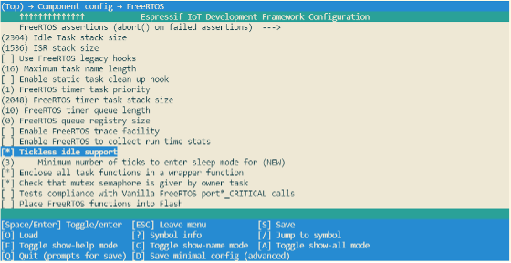
Figure 12.4. Configuration of ESP32-C3's FreeRTOS Tickless Idle feature
#if CONFIG_PM_ENABLE
//Configure dynamic frequency scaling:
//automatic light sleep is enabled if tickless idle support is enabled.
esp_pm_config_ESP32-C3_t pm_config = {
.max_freq_mhz = 160, //Maximum CPU frequency
.min_freq_mhz = 10, //Minimum CPU frequency
#if CONFIG_FREERTOS_USE_TICKLESS_IDLE
.light_sleep_enable = true
#endif
};
ESP_ERROR_CHECK( esp_pm_configure(&pm_config) );
#endif //CONFIG_PM_ENABLE
Compared to Light-sleep mode, ESP32-C3 cannot automatically enter
Deep-sleep mode. Instead, users must call esp_deep_sleep_start()
function to send the chip into Deep-sleep mode. In Deep-sleep mode,
ESP32-C3 does not maintain Wi-Fi and Bluetooth LE connections, and shuts
down the CPU, most of the RAM and all digital peripherals clocked by the
APB_CLK. However, RTC clock controllers, RTC peripherals, and RTC fast
memory can still work. After waking up from Deep-sleep mode, ESP32-C3's
CPU will reset and restart.
Deep-sleep can be used for low-power sensor applications, or application
scenarios where data transmission is not required for most of the time.
ESP32-C3 can wake up from Deep-sleep mode every once in a while to
measure and upload data, after which it returns to Deep-sleep mode.
Alternatively, the chip can also store data from multiple measurements
in RTC Memory (RTC Memory can still save data in Deep-sleep mode) and
send the data out at once.
For Deep-sleep mode, ESP32-C3 can use GPIO or timer as wakeup sources
and supports up to two wakeup sources at the same time. In this case,
ESP32-C3 will be woken up when either of the wakeup sources is
triggered. Before entering Deep-sleep mode, users can either configure
the wake source at any time using the corresponding API or disable a
wake source using esp_sleep_disable_wakeup_source() function. After
waking up, users can determine which wakeup source was responsible for
waking up the chip by calling esp_sleep_get_wakeup_cause() function.
Any GPIO can be used as the external input to wake up the chip from
Deep-sleep mode. Each pin can be individually configured to trigger
wakeup on high or low level using esp_deep_sleep_enable_gpio_wakeup()
function. It is important to note that GPIO wakeup is only available for
RTC IO.
The RTC controller has a built-in timer which can be used to wake up the
chip after a predefined amount of time. Time is specified at microsecond
precision, but the actual resolution depends on the clock source
selected for RTC_SLOW_CLK. When Timer wakeup is enabled, RTC
peripherals or RTC memory do not need to be turned on during ESP32-C3
sleep, and Timer wakeup can be enabled by calling
esp_sleep_enable_timer_wakeup().
After configuring the wakeup source, users can call esp_deep_sleep_start() to enter Deep-sleep mode. When no wakeup source
is enabled, ESP32-C3 can still enter Deep-sleep mode. However, in this
case, ESP32-C3 will remain in Deep-sleep mode until an external chip
reset.
The following code shows how to configure ESP32-C3's Deep-sleep mode.
Wakeup source: GPIO and timer;
GPIO4 pin is configured to wake up on high level;
The predefined amount of time to wake up the chip using a timer is
20 seconds.
Considering that the GPIO4 pin wakes up ESP32-C3 at a high level, it is
necessary to add a pull-down resistor in your hardware circuits or
software configuration to avoid false wakeup.
The current consumption measurements are taken with a 3.3V supply at
25°C of ambient temperature at the RF port. All transmitters'
measurements are based on a 100% duty cycle.
The current consumption depending on RF Modes is shown in Table 12.3.
Table 12.3. Current consumption depending on RF modes
Work mode
Description
Peak (mA)
Active (RF working)
TX
IEEE 802.11b, 1 Mbit/s, @21dBm
335
IEEE 802.11g, 54 Mbit/s, @19 dBm
285
IEEE 802.11n, HT20, MCS7, @18.5 dBm
276
IEEE 802.11n, HT40, MCS7, @18.5 dBm
278
RX
IEEE 802.11b/g/n, HT20
84
IEEE 802.11n, HT20
87
Current consumption in other modes is shown in Table 12.4.
Table 12.4. Current consumption in other modes
Work mode
Description
Typical value
Unit
Modem-sleep1,2
CPU working3
160 MHz
20
mA
80 MHz
15
mA
Light-sleep
–
130
μA
Deep-sleep
RTC timer + RTC memory
5
μA
Power off
CHIP_EN set to low level; chip being powered off
1
μA
Table notes:
When measuring the power consumption of Modem-sloop mode, the CPU is
running and the Cache is idle.
In the scenario when Wi-Fi is enabled, the chip switches between
Active mode and Modem-sleep mode, and the current consumption will
also change between the two modes.
In Modem-sleep mode, the CPU frequency changes automatically, and
the frequency depends on the CPU load and the peripherals used.
Please note that the actual power consumption may exceed theoretical
values due to various factors, such as but not limited to:
Wi-Fi is receiving data or Bluetooth LE is receiving data.
The application acquires the power management lock for a long time
and does not release it.
Process blocking (that is not related to calling operating system
APIs) exists in the application.
The predefined interval to wake up the chip via a timer is too small
or interrupts happen too often.
It's advised to identify the root cause and seek optimisation if the
power consumption exceeds theoretical values for a substantial amount of
time. Users can identify the root cause via log debugging and GPIO
debugging, or additionally use some network protocol analysers if the
high-power consumption may relate to Wi-Fi and Bluetooth LE. Note that
this process can iterate as many times as needed till the actual product
requirements are met.
The following sections describe the most commonly used methods to
optimise power consumption, namely log debugging and GPIO debugging, and
demonstrate how to put these methods into practice through real-world
examples and real-time power consumption data.
When using the log debugging feature, users need to configure
CONFIG_PM_PROFILING in menuconfig to track the retention time of
each power management lock, then call esp_pm_dump_locks (FILE* stream)
function to print such log. Log debugging allows users to analyse which
power management locks are preventing the chip from entering a low-power
mode and check how much time the chip spends in each power mode. After
debugging, users must disable CONFIG_PM_PROFILING in menuconfig.
To configure CONFIG_PM_PROFILING, users need to run
idf.py menuconfig command to start the configuration tool, go to
Component config → Power Management, and enable
Enable profiling counters for PM locks. The screenshot of how to
enable the log debugging for ESP32-C3 is shown in Figure 12.5.
Figure 12.5. Configuration of ESP32-C3's low-power log debugging
When ESP32-C3 is configured to automatically enter Light-sleep mode,
users must call esp_pm_dump_locks (FILE* stream) function periodically
to print debugging log and analyse the root cause of increased power
consumption. Some log debugging information is provided below:
Time: 11879660
Lock stats:
name type arg cnt times time percentage
wifi APB_FREQ_MAX 0 0 107 1826662 16%
bt APB_FREQ_MAX 0 1 126 5367607 46%
rtos0 CPU_FREQ_MAX 0 1 8185 809685 7%
Mode stats:
name HZ time percentage
SLEEP 40M 4252037 35%
APB_MIN 40M 0 0%
APB_MAX 80M 6303881 53%
CPU_MAX 160M 823595 6%
The esp_pm_dump_locks (FILE* stream) function prints two types of
debugging information, namely the Lock stats and Mode stats. The
Lock stats section lists the real-time status of all power management
locks used by the application with the following information: Name
(name), type of power management lock (type), parameter (arg),
number of times the power management lock is currently acquired (cnt),
total number of times the power management lock is acquired (times),
total amount of time the power management lock is acquired (time), and
the proportion of time when the power management lock is acquired
(percentage). The Mode stats section lists the real-time status of the
application's different modes with the following information: Mode name
(name), clock frequency (HZ), total amount of time in the mode
(time), and percentage of the amount of time in the mode
(percentage).
By checking the example log above, users can easily find out that, for
the Wi-Fi power management lock APB_FREQ_MAX,
this lock is currently not acquired,
the total amount time when this lock was acquired is 1826662 μs,
the total number of this lock being acquired is 107 times,
and the proportion of time when this lock was acquired is 16%.
Similarly, users can also know the rtos0 power management lock CPU_FREQ_MAX:
is currently being acquired,
the total amount time when this lock was acquired is 809685 μs,
the total number of this lock being acquired is 8185 times,
and the proportion of time when this lock was acquired is 7%.
Also, users can read log information about the Mode stats in a similar
way. For example, in Sleep mode the clock frequency is 40 MHz, and the
total time in this mode is 4252037 μs, accounting for 35% of the
whole time. Similarly, users can read the log for other locks and states
themselves.
When using GPIO debugging, users need to go to menuconfig, and enable
CONFIG_PM_TRACE. If enabled, some GPIOs will be used to signal
events such as RTOS ticks, frequency switching, entry/exit from idle
state. For a list of GPIOs, see pm_trace.c file. This feature is
intended to be used when analysing/debugging behavior of power
management implementation and should be kept disabled after the
debugging.
The relevant GPIOs are shown below, with two GPIOs for each event,
corresponding to CPU0 and CPU1. Since ESP32-C3 is a single-core chip,
only the first column of GPIOs is effective when debugging. During
development, users can also modify the GPIO used by modifying the source
code. Before debugging, connect the selected GPIO to an instrument such
as a logic analyser or oscilloscope.
/*GPIOs to use for tracing of esp_pm events.
* Two entries in the array for each type, one for each CPU.
* Feel free to change when debugging.
*/
static const int DRAM_ATTR s_trace_io[] = {
#ifndef CONFIG_IDF_TARGET_ESP32C3
BIT(4), BIT(5), //ESP_PM_TRACE_IDLE
BIT(16), BIT(17), //ESP_PM_TRACE_TICK
BIT(18), BIT(18), //ESP_PM_TRACE_FREQ_SWITCH
BIT(19), BIT(19), //ESP_PM_TRACE_CCOMPARE_UPDATE
BIT(25), BIT(26), //ESP_PM_TRACE_ISR_HOOK
BIT(27), BIT(27), //ESP_PM_TRACE_SLEEP
#else
BIT(2), BIT(3), //ESP_PM_TRACE_IDLE
BIT(4), BIT(5), //ESP_PM_TRACE_TICK
BIT(6), BIT(6), //ESP_PM_TRACE_FREQ_SWITCH
BIT(7), BIT(7), //ESP_PM_TRACE_CCOMPARE_UPDATE
BIT(8), BIT(9), //ESP_PM_TRACE_ISR_HOOK
BIT(18), BIT(18), //ESP_PM_TRACE_SLEEP
#endif
};
To enable CONFIG_PM_PROFILING, users need to run the
idf.py menuconfig command to start the configuration tool, go to
Component config → Power Management, and enable
Enable debug tracing of PM using GPIOs. The screenshot of how to
Enable debug tracing of PM using GPIOs for ESP32-C3 is shown in Figure
12.6.
The debugging can begin after completing the above-mentioned
configuration. By observing different GPIO states, users get to know the
current state of the CPU and the corresponding power mode, and further
understand which power modes consume more power and can be optimised.
Figure 12.7 shows the waveform of ESP32-C3's GPIO debugging for reduced
power consumption. The upper section shows the real-time power
consumption of ESP32-C3, and the lower section shows the GPIO waveform
corresponding to ESP_PM_TRACE_SLEEP event.
After understanding ESP32-C3's power management feature and different
low-power modes, users can implement different power management schemes
to reduce power consumption during the development of their actual IoT
projects. This section introduces how to optimise the power consumption
of the Smart Light project, which is also used as an example in other
sections of this book, by implementing ESP32-C3's power management
scheme and using different low-power modes.
To save energy in general or obtain certification for energy
consumption, it is necessary to reduce the power consumption of ESP32-C3
during operation as much as possible in the Smart Light project. As
explained in Sections 12.1 and 12.2, when ESP32-C3 is operating in
Deep-sleep mode, its LEDC function does not work properly, and its Wi-Fi
and BLE connections cannot be maintained. As a result, ESP32-C3 can not
receive control commands from the user. Therefore, a power management
scheme that utilises Wi-Fi Modem-sleep mode, Bluetooth Low Energy
Modem-sleep mode, power management, and automatic Light-sleep mode is
commonly employed to minimise power consumption in smart light projects.
After implementing this scheme:
When the light is on, the power management lock is acquireed to
ensure that the LEDC works normally, while Wi-Fi and Bluetooth LE
remain connected to receive the user's control commands. By using
the Modem-sleep mode of Wi-Fi and the Modem-sleep mode of Bluetooth
LE, the working time of the RF circuit can be reduced to reduce
power consumption.
When the light is off, the power management lock is released so CPU
can enter Light-sleep mode when it is idle to further reduce power
consumption.
Implementing this scheme in the Smart Light project involves two steps:
Configure ESP32-C3's power management feature, enable Automatic
Light-sleep mode, turn on Wi-Fi Modem-sleep mode and Bluetooth LE
Modem-sleep mode.
Complete the operation of the power management lock in the
application so the driver for LEDC dimming works properly.
When enabling the power management feature, users first need to enable
the corresponding options in menuconfig, then call
esp_pm_configure() function (Please select esp_pm_config_esp32c3_t when you are developing with ESP32-C3). For instructions on how to enable the Automatic Light-sleep mode, please
check Section 12.2.2.
To enable Bluetooth Modem-sleep mode, just enable the option in
menuconfig shown in the screenshot below.
Figure 12.8. ESP32-C3's Bluetooth LE Modem-sleep configuration
To enable Wi-Fi modem-sleep mode, users need to first initialise
Wi-Fi, and then call esp_wifi_set_ps(wifi_ps_type_t type)
function. The code to enable Wi-Fi modem-sleep mode for the Smart
Light project is as follows:
From Section 12.1.1, we understand when being clocked by clock sources
except REF_TICK, ESP32-C3's LEDC is affected by dynamic FM, and code
for acquiring/releasing the power management locks must be added in the
application so the LEDC can function properly. Therefore, a power
management lock is required in the application to ensure that the APB
clock does not change while the LEDC is operating. Specifically:
During the LEDC driver initialisation, initialise the
ESP_PM_APB_FREQ_MAX power management lock.
When the LEDC starts working (light on), acquire the power
management lock.
And when the LEDC stops working (light off), release the power
management lock. The code to enable Wi-Fi modem-sleep mode for the
Smart Light project is as follows:
After completing all the above-mentioned configuration to reduce power
consumption, it's time to test the actual power consumption and check if
it meets the power consumption requirements. According to the
certification requirements, the actual DUT can be the whole light
product or just the ESP32-C3 module. When the ESP32-C3 module is
selected as the DUT, a power analyser can be added between the DC power
supply and the chip to measure the power consumption data. The power
analyser used in this book is Joulescope: Precision DC Energy Analyser.
Among the certification requirements related to power consumption, it is
often necessary for smart lighting devices to measure the average
current when the lights are off and Wi-Fi is connected.
After implementing the power management scheme introduced above, the
average current of the ESP32-C3 module is 2.24 mA (see Figure 12.9).
Note that the actual test result may be different because Figure 12.9
only shows the power consumption of ESP32-C3 module for a short period
of time.
In this chapter, we first introduced ESP32-C3's power management feature
and supported low-power modes (Modem-sleep, Light-sleep, Deep-sleep
modes), then described how to perform low-power debugging, and, at last,
concluded how to use the power management feature and low-power modes to
reduce power consumption and how to measure actual power consumption,
using a smart light project as an example.
The security of data is a complex and ever-evolving research topic. This
chapter aims to provide readers with a foundational understanding of
data security. In Section 13.1, we will discuss the threats that can
compromise the security of IoT device data and introduce the basic
framework for data protection. Section 13.2 presents a scheme for
verifying the integrity of IoT device firmware data. Section 13.3
introduces two encryption schemes - Flash Encryption and NVS
Encryption - that ensure data confidentiality. Section 13.4 outlines the
Secure Boot scheme, which safeguards the legitimacy of IoT device
firmware data. Finally, Section 13.5 examines the effectiveness of
combining the Flash Encryption and Secure Boot schemes and provides
guidance on how to enable these schemes in device mass production.
The previous chapters introduced how to ensure the security of data
during data transmission, that is to use HTTPS protocol. Although the
data is secured during transmission, it can still face varying threats
on the device side.
We want security for the data on our devices, but what exactly does
"security" mean? As we will explore in this chapter, security is a
multifaceted concept that encompasses many different aspects. At a
minimum, data security should include the following key components:
Only authorised developers can access the real content of the data. In a
smart lighting system, data such as the Wi-Fi password, user login
information, and device ID need to be protected from unauthorised access
or disclosure.
Data can be maliciously tampered with during transmission and storage
stages, and code errors may occur accidentally. Therefore, device must
have the capability to verify the completeness of the data to ensure its
integrity. In a smart lighting system, data such as new firmware and
stored network certificates obtained during over-the-air (OTA) upgrades
must be verified for completeness before loading and usage. This
verification is necessary to prevent loading and using data that has
been tampered with or contains errors.
It is important that devices receiving data have the ability to
authenticate the sender and accept data only from legitimate sources. In
the context of a smart lighting system, control commands and firmware
updates should only originate from authorised devices. Just imagine, if
anyone can control the lights in your bedroom using their smartphones,
will you sleep well?
So, what types of data must be protected on the device?
Firmware is an executable binary file running on the device, which is
responsible for coordinating system resources and enabling data exchange
between the device and the external system. Firmware security is just as
critical as operating system security on a PC. If the security of
firmware is compromised, the device's normal functions may be seriously
impacted. Therefore, it is imperative to ensure firmware data security.
In the case of ESP32-C3 based smart lighting devices, firmware usually
includes bootloader and app firmware stored in the flash memory.
IoT device data may be exposed to varying security threats during
transmission and storage stages. Figure 13.1 shows data exchange between
the device and the cloud, where the cloud sends data to the device, and
the device receives and stores the data in its flash memory. To ensure
data security and compliance with confidentiality, integrity, and
legitimacy, encrypted HTTPS protocol is commonly used for data
transmission. However, there is still a possibility that malicious
actors could compromise data security by potentially engaging in the
following actions:
Compromising data confidentiality, such as using esptool.py to
read the data in the flash and steal the device ID and Wi-Fi
password.
Compromising data integrity, such as erasing user login data
from the device's flash, tampering with network certificates, or
implanting programs that collect user information. This kind of
attack which embeds malicious code into a source code is called code
injection attack.
Compromising data legitimacy, such as forging the cloud server
and sending illegal data to the device, or eavesdropping on a secure
network communication, and then resending the login information to
the device to log in and control device. The attack that undermines
the data legitimacy by "replaying" stolen data is called a replay
attack.
Figure 13.1 shows the security risks that the device may face when
exchanging data with the cloud.
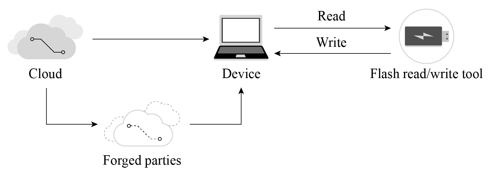
Figure 13.1. Security risks when exchanging data with cloud
As we can see, device data security cannot be guaranteed unless proper
measures are taken. In real-world applications, threats to IoT devices
are much more complex than those discussed above. As IoT devices often
communicate with other devices and some may operate in unattended
environments, it becomes easier for malicious actors to obtain, analyse,
or tamper with the device's data. Therefore, ensuring data security has
become a more urgent requirement.
Protecting the data security of IoT devices needs to be discussed from
two aspects: data storage and data transmission. They respectively
propose requirements for the protection of data integrity,
confidentiality, and legality. The basic components of data security are
shown in Figure 13.2.
Figure 13.2. Basic components of data security
The requirements for data transmission security mainly include the
following three aspects:
Integrity: Data should not be tampered with or contain errors during
transmission.
Confidentiality: The data being transmitted is encrypted, and
attackers cannot access the real content of the data.
Legitimacy: The communicating peer device is a trusted target
device.
The requirements for data storage security also include three aspects:
Integrity: Data should not be tampered with or damaged during
storage.
Confidentiality: After the stored data is read, attackers cannot
decipher the real content of the data.
Legitimacy: The data being used is authenticated.
Of course, data storage security and transmission security are not
completely independent. They complement each other and together
constitute a unified framework for the security of IoT device data.
After establishing the above framework, clarifying some concepts, and
providing an understanding of the requirements for IoT device data
security, this chapter will further explain how to protect IoT device
data step by step.
To verify data integrity, a block of data called checksum (also known as
digest, fingerprint, hash value, or hash code) is usually used. The
checksum is fixed-length check data generated by the corresponding
integrity verification algorithm. The checksum essentially represents
the uniqueness of the data block, just like a person's fingerprint or ID
number can uniquely represent this person. The integrity check algorithm
is shown in Figure 13.3.
Figure 13.3. Integrity verification algorithm
The integrity verification algorithm has the following properties:
Collision resistance means that within the data length specified by the
algorithm, it is not feasible (or very difficult) to find two different
data segments x and y that result in the same checksum. A collision
happens when the size of data increases, some data is lost or damaged,
but the correct checksum can be calculated.
In the case where the checksum is known, it is hard to figure out from
the checksum what the raw data is.
A collision occurs when different pieces of data are input into the
algorithm, resulting in the same checksum. Common integrity verification
algorithms include CRC, MD5, SHA1, and SHA256. These algorithms generate
checksums of varying lengths, which affects the likelihood of a
collision. For example, the CRC32 checksum has a length of 32 bytes and
can theoretically guarantee that data within 512 MB will not collide.
However, the probability of data collision increases beyond this range.
A common way to perform data integrity verification is to append a
checksum to the data to be verified. Figure 13.4 illustrates the basic
principle of integrity verification, where a checksum is appended to the
end of the data block. Upon receiving the data block, or prior to using
the data, the receiver recalculates the checksum. If the calculated
checksum matches the appended checksum, the data is deemed to be
integral, otherwise the data is deemed to have been tampered with or to
contain code errors.
Figure 13.4. Basic principle of data integrity verification
This section takes the integrity verification of firmware data during
OTA upgrades as an example to introduce how data integrity verification
is designed. Figure 13.5 shows that during firmware updates, integrity
verification is performed before data transmission and updated firmware
loading.
Figure 13.5. Integrity verification before data transmission and firmware loading
In the process of OTA upgrades, if HTTPS protocol is used to transmit
data, the sender generates a CRC checksum for the data before
transmission, and the receiver recalculates a CRC checksum from the
received data, followed by verification similar to the process shown in
Figure 13.4. It is worth noting that when using the HTTPS protocol to
transmit data, there is no need to worry about CRC verification, as the
HTTPS protocol automatically performs this verification internally.
In addition, when the device uses the firmware stored in flash, it also
checks the integrity of the firmware. Every time the device is restarted
to load the app firmware, it will perform integrity verification to
ensure that the app firmware for loading is not damaged. This process
occurs automatically and does not need manual intervention.
However, it is far from enough to rely only on integrity verification
for ensuring data security. Since the mechanisms and implementations of
the integrity verification algorithms are usually open-source, malicious
attackers can use the same CRC verification algorithm to add a CRC
checksum to a custom firmware and flash it into the device's flash,
thereby passing the CRC check. To prevent such attacks, it is necessary
to identify the source of the data, which involves the data legitimacy
protection scheme – Secure Boot, which will be covered in detail in
Section 13.4.2.
The Linux system integrates various tools for calculating checksums,
such as sha256sum and md5sum. We can use these tools to calculate
the checksum of specified files, and compare the changes of the
checksums before and after modifying the file. Below commands use
md5sum to calculate the checksums of the hello.c file before and
after modification:
$ md5sum hello.c
87cb921a75d4211a57ba747275e8bbe6 //Original MD5 checksum of hello.c
$ md5sum hello.c
79c3416910f9ea0d65a72cb720368416 //New MD5 checksum after adding one line
It can be seen that modifying just one line of code in the original file
will result in greatly different MD5 checksums.
The purpose of data encryption is to prevent unauthorised entities from
knowing the true meaning of the data, while enabling authorised users to
interpret the data correctly. Now, suppose you wish to encrypt the data
stored in the flash memory to prevent unauthorised access. First, you
need to understand the key concepts as shown in Figure 13.6. The
original data stored in flash is referred to as plaintext, while the
encrypted data generated by the encryption algorithm is known as
ciphertext. This ciphertext is incomprehensible to unauthorised
entities. The encryption algorithm utilises a key, which is a string of
numbers or characters. In the example presented in Figure 13.6, the
encryption algorithm adds 1 to (the ASCII code of) each character in the
original string and replaces all the characters. The key used by the
encryption algorithm is an integer number 1. The decryption process is
the reverse of the encryption process, where each character is changed
by subtracting 1, thereby recovering the plaintext.
All data encryption algorithms are based on the principle of replacing
one set of data with another. Figure 13.6 uses the simplest single-code
replacement encryption algorithm. In real applications, encryption
algorithms are much more complex, but the principle is the same.
Figure 13.6. Basic principle of data encryption
Data encryption algorithms can generally be divided into two categories:
symmetric encryption algorithms and asymmetric encryption algorithms.
As the name implies, symmetric encryption algorithms use the same key in
both encryption and decryption process. Commonly used symmetric
encryption algorithms include DES, 3DES, and AES. The encryption process
shown in Figure 13.6 is the basic process of symmetric encryption. The
key used for encryption and decryption is the same, that is, the integer
number 1.
The asymmetric encryption algorithms use two different keys: public key
and private key, which are a pair of strings with a specific
association. The content encrypted by the public key can only be
decrypted by the paired private key. Similarly, the content encrypted by
the private key can only be decrypted by the paired public key.
A prerequisite for symmetric encryption is that the encryptor and the
decryptor must agree on a shared key, that is, they must know the
content of the key beforehand. However, in some cases, the encryptor and
decryptor have never met, nor exchanged data through any means other
than the network. In such cases without pre-agreed keys, how can the
encryptor and decryptor perform encryption or decryption? The answer is
asymmetric encryption algorithm.
Figure 13.7 shows the basic process of using asymmetric encryption and
symmetric encryption together to transmit encrypted data, where
asymmetric encryption is used to exchange the key used for encryption,
and after getting the symmetric key, the client and server use the less
resource-intensive symmetric encryption algorithm to protect the
confidentiality of transmitted data.
Figure 13.7. Combining asymmetric and symmetric encryption to transmit data
The commonly-used asymmetric encryption algorithm is RSA algorithm.
Technical details about encryption algorithms will not be provided in
this book. After gaining a foundational understanding of data
encryption, we can proceed to a new journey.
Flash encryption is used to enhance the protection of data
confidentiality so as to ensure data security. Once this feature is
enabled, physical readout of flash will not be sufficient to recover
flash contents. As explained above, data confidentiality needs to be
protected during both transmission and storage stages. Flash encryption
can be used to encrypt data stored in flash, while other encryption
scheme is needed for data transmission, for example HTTPS transmission
protocol.
Both eFuse and flash are storage media relevant to the flash encryption scheme, but have different properties and usages, as shown in Table 13.1.
Table 13.1. Contents and properties of eFuse and flash
Storage medium
Contents
Properties
Flash
Bootloader.bin, app.bin,nvs data, and partition tables
Flash memory can be erased and reprogrammed repeatedly.
eFuse
System parameters such as chip version and MAC, and keys and control bits relevant to system functions
Once an eFuse bit is programmed to 1, it can never be reverted to 0. In particular, for some eFuse blocks, if they are set to be read-protected, the data in these blocks can only be read by hardware cryptography modules.
The types of data that are stored in the flash and encrypted by flash
encryption include firmware bootloader, app firmware, partition table,
and any partition marked with the encrypted flag in the partition
table.
Taking the following partition table as an illustration, enabling flash
encryption will result in the encryption of specific partitions, namely
the bootloader partition, factory partition, storage partition, and
nvs_key partition. Notably, partitions used to store firmware, such as
the bootloader partition and factory partition, are encrypted by
default, so there is no need to add encrypted flag to them.
# Name, Type, SubType, Offset, Size, Flags
nvs, data, nvs, , 0x6000,
# Extra partition to demonstrate reading/writing of encrypted flash
storage, data, 0xff, , 0x1000, encrypted
factory, app, factory, , 1M,
# nvs_key partition contains the key that encrypts the NVS partition named nvs. The nvs_key partition needs to be encrypted.
nvs_key, data, nvs_keys, , 0x1000, encrypted,
Flash encryption is used to encrypt data stored in flash. Some eFuses
are used during flash encryption. The list of utilised eFuses and their
descriptions are given in Table 13.2.
Table 13.2. eFuses used in flash encryption
eFuses
Description
Length (bit)
BLOCK_KEYN
Used to store flash encryption/decryption key. N ranges from 0 to 4.
256
DIS_DOWNLOAD_MANUAL_ENCRYPT
If set, disables flash encryption download function in download boot mode.
1
SPI_BOOT_CRYPT_CNT
Enables encryption and decryption. Feature is enabled if one or three bits are set in the eFuse, disabled otherwise.
3
The tool espefuse.py can be used to check the current eFuse status on
ESP32-C3. For example, run the following command to check the current
eFuse value:
$ espefuse.py --port PORT summary //replace "PORT" with your port name
If FLASH_CRYPT_CNT is 0, as shown in the log below, it means flash
encryption is not enabled.
The symmetric encryption algorithm used by flash encryption is AES-XTS,
which is a tweakable block cipher. During encryption, the algorithm
encrypts plaintext data in blocks, and dynamically adjusts the key
according to the offset address of the plaintext data. The basic
principle of AES-XTS-128 block encryption is shown in Figure 13.8, where
the plaintext data of 64 Bytes are divided into four blocks, and the
encryption keys (key1 ~ key4) are derived from base_key.
Combining the four encrypted blocks will get the 64 B encrypted data.
Figure 13.8. Basic principle of AES-XTS-128 block encryption
The benefits of AES-XTS, which first dynamically adjusts the encryption
key and then encrypts data, are:
Encrypting the same data block results in different ciphertext,
which makes the encrypted data more difficult to be analysed and
cracked, thus increasing data confidentiality.
Different data blocks can be encrypted and decrypted independently.
Even if one data block is damaged, it will not affect the decryption
of other data blocks. Encryption/decryption between data blocks is
independent.
After flash encryption is enabled in menuconfig, the device will automatically generate a key in the bootloader when it starts up for the first time, and automatically save the key in eFuse.
To manually write the flash encryption key into eFuse, first run the following command to generate the key:
Then, run the following command to write the key into eFuse:
$ espefuse.py --port PORT burn_key BLOCK my_flash_encryption_key.bin XTS_AES_128_KEY
üìå Tip
Since writing eFuse is irreversible, manual writing of the key into eFuse can only be performed once.
Flash encryption can be enabled through menuconfig → Security features → Enable flash encryption on boot. If flash encryption is enabled in
building stage and the key has not been manually written into eFuse in
advance, then after the firmware is flashed, the device will enable
flash encryption, automatically generate a key, and write it into eFuse.
The main difference between the manual method and automatic method is
that with the manual method, you can know the content of the key and use
a script tool to encrypt the data before flashing it into the device.
With the automatic method, if the read protection of BLOCK_KEY is
enabled in the eFuse (which is enabled by default), the key is generated
inside the device and stored directly in the read-protected eFuse,
making it impossible for external developers to obtain the key or
manually encrypt/decrypt the data.
In manual mode, use the following command to encrypt the app firmware,
and flash it to the device:
It is important to note that when using the aforementioned command for
data encryption, you must specify the storage address of the data in the
partition table. In the command provided, the data being encrypted is
my-app, with its address set to 0x10000. As emphasised in Section
13.3.2, flash encryption relies on the tweakable block cipher AES-XTS,
and therefore, the accurate data address must be specified. Failure to
specify or incorrectly specifying the address will result in device
failure after flashing the encrypted firmware.
Furthermore, it is worth mentioning that if the encryption key is known,
the script tool espsecure.py can also be used to decrypt the data.
Running the command espsecure.py-h will provide helpful information regarding the usage of the script tool.
During the mass production of devices, it is highly recommended to
utilise the automatic method for key writing. This ensures that each
device is assigned a unique key that remains inaccessible from external
sources, thus maximising the overall security of the device.
As the name suggests, development mode is used during the development
stage where there is a frequent need to program different plaintext
flash images and test the flash encryption process. This requires that
new plaintext images can be loaded as many times as needed. In
development mode, flash encryption can be disabled and new firmware can
be flashed using commands, which will be explained in Section 13.3.7.
Release mode is recommended for mass production. In release mode, serial
port cannot perform flash encryption operations, which can be ensured by
enabling flash encryption feature. In this mode, flash encryption cannot
be disabled once enabled, and new firmware cannot be downloaded over
serial port but only be downloaded using the over-the-air (OTA) scheme.
The working mode of flash encryption can be selected through menuconfig → security features → Enable flash encryption on boot → Enable usage mode. Figure 13.9 shows that development mode is enabled for flash encryption.
Figure 13.9. Development mode enabled for flash encryption
Note that in development mode, flash encryption can be disabled with espefuse.py --port PORT burn_efuse SPI_BOOT_CRYPT_CNT. After disabling encryption scheme, deselect the option in menuconfig, then run idf.py flash to flash new firmware. The number of times to disable flash encryption is limited by the length of the SPI_BOOT_CRYPT_CNT flag in eFuse. If the flag contains an odd number of "1"s, it means that flash encryption is enabled; if it contains an even number of "1"s, it means that flash encryption is disabled. If the length of the flag bit is 3 bits, it means flash encryption can only be disabled once.
Enabling flash encryption may increase the size of bootloader. Options
to work around this are:
Set partition table offset through menucofig → Partition Table → Offset of partition table. For example, changing the offset from 0x8000 to 0xa000 will increase the space by 8 KB.
Note that after changing the partition offset of the bootloader, you
need to check whether the area allocation in the partition table
needs to be updated.
Reduce bootloader log level through menuconfig → Bootloader log verbosity. Changing log level from Info to Warning can reduce log size, thus reducing the bootloader size.
After flashing the plaintext firmware to the device with flash
encryption enabled for the first time, and subsequently starting the
device, the flash encryption feature will be automatically enabled. The
following outlines the basic workflow for the initial automatic enabling
of flash encryption:
Firmware bootloader reads the SPI_BOOT_CRYPT_CNT eFuse value. If
flash encryption is not enabled, the bootloader will enable flash
encryption. By default, the value is 0, meaning flash encryption is
not enabled yet.
Bootloader checks if BLOCK_KEY stores the flash encryption key. If
the key is not pre-flashed (see Section 13.3.3), it will be
generated automatically and written to BLOCK_KEY. The write and
read protection bits for BLOCK_KEY will be set, so that software
cannot access the key.
Flash encryption block encrypts the flash contents – the firmware
bootloader, applications and partitions marked as encrypted.
Firmware bootloader sets the first available bit in
SPI_BOOT_CRYPT_CNT to 1 to mark the flash contents as encrypted.
In Development mode, SPI_BOOT_CRYPT_CNT and
DIS_DOWNLOAD_MANUAL_ENCRYPT are not write-protected. The firmware bootloader allows to disable flash encryption and re-flash encrypted binaries.
In Release mode, SPI_BOOT_CRYPT_CNT and
DIS_DOWNLOAD_MANUAL_ENCRYPT are write-protected. Flash encryption
is enabled permanently and re-flashing firmware is forbidden.
The device is rebooted to start executing the encrypted bootloader
and app firmware.
üìå Tip
By default, when flash encryption is enabled, some flag bits of eFuse
will be set, thus disabling some system functions, such as JTAG.
Keeping these system functions may bring security risks. During test
phase, if you need to keep these flags, please refer to the
instructions related to flash encryption in the ESP-IDF Programming
Guide.
With flash encryption enabled, when the device loads and runs encrypted
bootloader and app firmware, it first automatically decrypts the data
through the hardware module, and then loads the decrypted data into its
iRAM and cache. Furthermore, certain APIs are designed to seamlessly
handle the encryption and decryption of data when performing read and
write operations within encrypted partitions in the flash memory. The
APIs responsible for automatic decryption of data include
esp_partition_read(), esp_flash_read_encrypted(), and bootloader_flash_read(); the APIs responsible for
automatic encryption of data include esp_partition_write(),
esp_flash_write_encrypted(), and bootloader_flash_write().
Particularly, with flash encryption enabled, during OTA upgrades, the
device receives plaintext data, and then calls esp_partition_write()
to automatically encrypt the data before writing it into the flash
memory.
üìå Tip
For mass-produced devices, OTA upgrade function can be used to update
app firmware remotely, but not the bootloader. Therefore, it is
crucial to carefully configure the bootloader settings, including
parameters like the log level, before enabling flash encryption.
The flash encryption scheme does not directly protect the data stored in
the NVS partition. To protect the confidentiality of the data stored in
NVS partition, NVS encryption scheme should be used. NVS encryption can
be enabled through menuconfig → Component config → NVS → Enable NVS encryption or by calling nvs_flash_secure_init().
The basic principle of the NVS encryption scheme is to define a
partition in the partition table with a size of no less than 4 KB and
the subtype of nvs_key. After enabling the NVS encryption scheme, the
NVS partition will be encrypted using the key in the nvs_key
partition. A typical partition table that supports NVS encryption is
shown below:
NVS encryption scheme is similar to the flash encryption scheme in many
ways, such as:
The encryption algorithm used by the NVS encryption scheme is the
symmetric encryption algorithm AES-XTS. As mentioned earlier,
symmetric encryption algorithm requires its key to be kept secret to
ensure that the encrypted data cannot be analysed and cracked. The
key of the NVS encryption scheme cannot be plaintext, so this scheme
is often used together with the flash encryption scheme, where flash
encryption is responsible for protecting the confidentiality of the
nvs_key, while NVS encryption uses nvs_key to protect the
confidentiality of the NVS partition.
There are two methods for storing the NVS encryption key: one is the
manual method, that is, manually generate a key and write the key to
the designated partition; the other is the automatic method, that
is, when the NVS encryption scheme is first enabled and the
nvs_key partition is empty, the device automatically calls the
nvs_flash_generate_keys() function to generate the key, and then writes the key to the nvs_key partition, and subsequently uses the key to complete NVS encryption/decryption.
The steps to manually store the NVS encryption key are as follows:
First, generate a file containing the key by running the following
command:
After enabling NVS encryption, APIs starting with nvs_get or
nvs_set automatically perform data encryption/decryption when
reading/writing data in the NVS partition.
Please note that when flash encryption is enabled, it is highly
recommended to also enable NVS encryption (which is enabled by default).
This is important because the Wi-Fi driver stores sensitive data, such
as SSID and password, in the default NVS partition. The NVS encryption
scheme allows for the use of different keys (nvs_key) in different NVS
partitions. When initialising a specific NVS partition, you only need to
specify the corresponding nvs_key.
In the esp-idf/examples/security/flash_encryption directory, we've uploaded an example of flash encryption and NVS encryption. By running this example, you can observe the logs that demonstrate the results of flash encryption and NVS encryption.
As mentioned earlier, when flash encryption is enabled in development mode, the firmware can be flashed repeatedly. To flash the firmware into the device, we have used the following three commands:
Command 1:
$ idf.py -p PORT flash monitor
Command 2:
$ idf.py -p PORT encrypted-flash monitor
Command 3:
$ idf.py -p PORT encrypted-app-flash monitor
The results of running the above three commands are:
Command 1: the data stored in flash remains plaintext, resulting in
a loading error;
Command 2: only the encrypted bootloader, app firmware, and
partition table are flashed, and can be loaded and run on the device
without any issues;
Command 3: only the encrypted app firmware is flashed; if the
bootloader is also encrypted, the firmware can be loaded and run on
the device.
The above three commands actually call esptool.py internally. The
corresponding settings of esptool.py are:
By examining the settings of the commands, we can conclude that when
using esptool.py for flashing, adding the option --encrypt will
enable automatic flash encryption and write the encrypted data into
flash.
Below are several typical failure cases when enabling flash encryption:
If the bootloader is plaintext, the following failure may occur
when starting the device:
If the partition is plaintext, the following failure may occur
when starting the device:
rst:0x3 (SW_RESET),boot:0x13 (SPI_FAST_FLASH_BOOT)
configsip: 0, SPIWP:0xee
clk_drv:0x00,q_drv:0x00,d_drv:0x00,cs0_drv:0x00,hd_drv:0x00,wp_drv:0x00
mode:DIO, clock div:2
load:0x3fff0018,len:4
load:0x3fff001c,len:10464
ho 0 tail 12 room 4
load:0x40078000,len:19168
load:0x40080400,len:6664
entry 0x40080764
I (60) boot: ESP-IDF v4.0-dev-763-g2c55fae6c-dirty 2nd stage bootloader
I (60) boot: compile time 19:15:54
I (62) boot: Enabling RNG early entropy source...
I (67) boot: SPI Speed : 40MHz
I (72) boot: SPI Mode : DIO
I (76) boot: SPI Flash Size : 4MB
E (80) flash_parts: partition 0 invalid magic number 0x94f6
E (86) boot: Failed to verify partition table
E (91) boot: load partition table error!
If the app firmware is plaintext, the following failure may
occur when starting the device:
rst:0x3 (SW_RESET),boot:0x13 (SPI_FAST_FLASH_BOOT)
configsip: 0, SPIWP:0xee
clk_drv:0x00,q_drv:0x00,d_drv:0x00,cs0_drv:0x00,hd_drv:0x00,wp_drv:0x00
mode:DIO, clock div:2
load:0x3fff0018,len:4
load:0x3fff001c,len:8452
load:0x40078000,len:13616
load:0x40080400,len:6664
entry 0x40080764
I (56) boot: ESP-IDF v4.0-dev-850-gc4447462d-dirty 2nd stage bootloader
I (56) boot: compile time 15:37:14
I (58) boot: Enabling RNG early entropy source...
I (64) boot: SPI Speed : 40MHz
I (68) boot: SPI Mode : DIO
I (72) boot: SPI Flash Size : 4MB
I (76) boot: Partition Table:
I (79) boot: ## Label Usage Type ST Offset Length
I (87) boot: 0 nvs Wi-Fi data 01 02 0000a000 00006000
I (94) boot: 1 phy_init RF data 01 01 00010000 00001000
I (102) boot: 2 factory factory app 00 00 00020000 00100000
I (109) boot: End of partition table
E (113) esp_image: image at 0x20000 has invalid magic byte
W (120) esp_image: image at 0x20000 has invalid SPI mode 108
W (126) esp_image: image at 0x20000 has invalid SPI size 11
E (132) boot: Factory app partition is not bootable
E (138) boot: No bootable app partitions in the partition table
You may have signed your name on an application for admission, legal
documents, or credit card receipts, indicating that you agree with the
content of these documents. In the field of data security, the device
needs to identify the sender or the producer of the data to indicate
that the data is not forged, has been authorised, is legitimate, and can
be used safely. Digital signature is a technical solution for verifying
data legitimacy.
Digital signature has two properties: unforgeability, that is, only
legitimate data senders can sign data, and other signatures are invalid;
verifiability, that is, data users must be able to verify the
validity of the signature.
Common digital signature algorithms include RSA and DSA. The
basic process of digital signature verification is:
The data sender generates a private key, which is used to generate a
public key, thus getting a private-public key pair. Note that only
the private key can generate a matching public key.
The data sender saves the public key to the storage system of the
data user.
The data sender signs the data with the private key and sends the
signed data and signature to the data user.
After receiving the data, the data user uses the public key stored
in step 2 to verify the signature sent in step 3. If the
signature is correct, the data is considered to be from a legitimate
data sender; otherwise, the data is considered unauthorised and will
not be used.
The basic principle of using digital signature to verify data legitimacy
is shown in Figure 13.10.
Figure 13.10. Basic principle of using digital signatures to verify data legitimacy
Through this mechanism of "private key issuing public key, private key
signing, and public key verifying signature", the legitimacy of the data
source can be authenticated. However, you may have noticed that there
are prerequisites for this scheme to be effective:
The private key of the data sender should not be leaked. Once the
private key is made public, an attacker can use the public private
key to sign illegal data and send it to the data user, then this
verification mechanism will fail.
The public key of the data user cannot be removed at will. If an
attacker generates a private-public key pair on his own system and
replaces the public key of the data user with his own public key,
the attacker can sign illegal data with his own private key and then
send the illegal data to the data user. The data user may use the
replaced public key to verify the data sent by the attacker, and
thus consider the data to be legitimate.
In the following sections, we will see how the Secure Boot scheme is
designed to address these issues. Let's continue our journey to the next
section!
The secure boot scheme is used to protect the legitimacy of firmware
data (including bootloader and app firmware). It uses the RSA digital
signature algorithm to verify the signature attached to the firmware
data before loading and running the new firmware data, thereby verifying
whether the firmware data is legitimate. When the secure boot scheme is
enabled, the device only loads and runs firmware that is authorised by a
specified private key.
Before delving into the implementation principles of secure boot, let's
briefly review the boot process of ESP32-C3 as depicted in Figure 13.11.
Figure 13.11. ESP32-C3 boot process
When the device is powered on, the booting process starts from ROM Boot,
followed by transitioning to the Bootloader, and ultimately reaches the
app firmware. ROM Boot is a fixed, executable program in the on-chip ROM
that remains unalterable. Consequently, the bootloader and app firmware
are the key components requiring protection. Modifying the firmware can
be achieved through two methods: physical flashing, where the new
bootloader and app firmware are written to the device's flash memory
using a flashing tool, or OTA upgrades, which solely update the app
firmware while excluding the bootloader.
So, here comes the question – how can we ensure the integrity and
legitimacy of the firmware data, regardless of the method used to
transmit it to the device? To address this query, we will explore two
operational modes of secure boot in Section 13.4.3 and Section 13.4.4:
software secure boot and hardware secure boot.
üìå Tip
There are two versions of the secure boot scheme, v1 and v2. As
ESP32-C3 only supports secure boot v2, the contents in this
section are applicable to secure boot v2.
The generated private key is stored in the file secure_boot_signing_key.pem.
Enabling software secure boot is as simple as selecting Require signed app images in menuconfig, (as shown in Figure 13.12), followed by building and flashing the firmware.
Figure 13.12. Enabling software secure boot for ESP32-C3
When software secure boot is enabled, during firmware building, the generated app firmware (referred to as origin_app below) contains a public key, which will be used to verify the legitimacy of the new firmware new_app sent via OTA upgrade. As shown in Figure 13.13, during OTA upgrades, after receiving the firmware and calling esp_ota_end() or esp_ota_set_boot_partition(), software secure boot will automatically use the public key in origin_app to verify the digital signature attached to new_app.
Figure 13.13. Software secure boot verifies new app firmware sent via OTA upgrades
When software secure boot is enabled, the app firmware sent to the
device through OTA upgrade must be signed with a private key. There are
two ways to achieve this:
As shown in Figure 13.12, configure the option
Sign binaries during build, and specify the directory of the
private key file, then the app firmware can be automatically signed
when compiling.
Run the following command to sign the app firmware:
The above command directly modifies the current file and adds
verification information to it. Use the --output option to name the
file after the signature is added. Using a command to sign firmware
allows the signed private key to be stored on a remote server, rather
than on the build machine, therefore, it is more convenient for batch
signing on mass-produced devices.
Enabling software secure boot involves appending a signature block to
the app firmware. This signature block encompasses the necessary data
for signature verification. In the case of ESP32-C3, when utilising
software secure boot, only the initial signature block holds validity.
Conversely, when opting for hardware secure boot, up to three signature
blocks are permitted, each capable of being signed with a distinct
private key. Verification is considered successful as long as at least
one of the signatures is valid. The data format of the signed app
firmware of ESP32-C3 is shown in Figure 13.14.
Figure 13.14. Data format of signed app firmware of ESP32-C3
In the software secure boot scheme, the public key used to verify the
signature is compiled within the currently running app firmware and is
automatically managed by the device. Users are not required to manage it
manually. To obtain the content of the public key, use the following
command to manually export the public key derived from the private key:
In this command, secure_boot_signing_key.pem is the private key, and
pub_key.pem is the public key derived from the private key.
From the implementation principles of software secure boot, we can
conclude that the scheme verifies the new_app sent via OTA upgrade
using the origin_app. However, attackers have the potential to flash
unauthorised bootloader and origin_app onto the device through
physical flashing, which cannot be managed by the software secure boot.
As a result, software secure boot is more suitable for scenarios where
the device is not susceptible to physical attacks. In the subsequent
sections, we will delve into how the hardware secure boot scheme
addresses physical attacks.
Hardware secure boot involves verification that is done via hardware.
It uses the data stored in eFuse to verify the legitimacy of firmware
data. Relevant eFuses are shown in Table 13.3.
Table 13.3. eFuses used in verifying legitimacy of firmware data
eFuses
Description
Length (bit)
SECURE_BOOT_EN
If set, hardware secure boot is enabled permanently.
1
KEY_PURPOSE_X
X is a natural number. For example, KEY_PURPOSE_1 is used to set the purpose of BLOCK_KEY1.
4
BLOCK_KEYX
If the corresponding KEY_PURPOSE_X is set to SECURE_BOOT_DIGEST1, then BLOCK_KEYX will have the SHA256 digest of the public key.
256
Hardware secure boot supports not only all the functions of software
secure boot described in Section 13.4.3, but also additional
verifications on the bootloader and origin_app firmware. Hardware
secure boot scheme uses the same method of generating private-public key
pair, and the same method of signing app firmware, as presented in
Section 13.4.3.
When hardware secure boot is enabled, in addition to the app firmware,
the bootloader also requires signing, using the same method and format
as app firmware. In the event that the bootloader needs to be rebuilt
and resigned, it is necessary to execute the command idf.py bootloader
separately. Additionally, the command idf.py -p PORT bootloader-flash is required to flash the signed bootloader. Running
idf.py flash will only flash the signed app firmware and partition
table, excluding the bootloader.
Hardware secure boot can be enabled as follows:
Open the Project Configuration Menu, navigate to
menuconfig → Security features and select the Enable hardware Secure Boot option.
If the firmware needs to be signed while compiling, specify the
private key of the signature. As shown in Figure 13.15, specify the
private key file through menuconfig → Security features → Secure Boot private key. If the private key
has not been generated, refer to Section 13.4.3 to export the
private key. In addition, refer to Section 13.4.3 to sign the
firmware using espsecure.py.
Run the command idf.py bootloader to build the bootloader, and
then idf.py -p PORT bootloader-flash to flash the bootloader.
Run idf.py flash monitor to flash the app firmware and partition
table.
After the device is powered on, it will execute the just-built
bootloader, which automatically sets the SECURE_BOOT_EN flag in
the eFuse, enabling permanent usage of hardware secure boot.
Furthermore, the public key digest, which is attached to the
signature block of the bootloader, will be written into BLOCK_KEY.
Figure 13.15 shows how to enable hardware secure boot during the
compilation stage.
Figure 13.15. Enabling hardware secure boot during compilation
üìå Tip
When hardware secure boot is enabled, make sure to save the signed
private key file, otherwise the updated bootloader and app
firmware may not be sent to the device.
Enabling secure boot will increase the size of bootloader, which
might require updating partition table offset or reducing
bootloader size. Refer to Section 13.3.4 for detailed
instructions.
If more content is added to the bootloader firmware, make sure the
bootloader size does not exceed 0x10000.
Hardware secure boot saves the SHA256 digest of the public key in
eFuse, not the public key itself. This is because the public key
itself contains a lot of data, but the eFuse space is limited.
When hardware secure boot is enabled, the device will perform the
following verification on updated bootloader and app firmware.
Public key verification. Upon device startup, ROM Boot will
check the eFuse. If hardware secure boot is enabled, ROM checks the
digest of the public key in the bootloader and validates if it
matches the digest of the public key in eFuse. If they do not match,
it means that the public key has been tampered with or damaged, and
the boot is terminated; otherwise, the public key in the bootloader
is considered correct, and the boot process continues.
Bootloader signature verification. ROM Boot uses the public key
to verify the bootloader signature. If the verification fails, the
boot will be terminated; otherwise, the process continues.
origin_app signature verification. The bootloader
uses the public key to verify the signature of origin_app. If the
verification fails, the boot process is terminated.
new_app signature verification during OTA upgrades. This is done through origin_app, in a similar manner to software secure boot.
Figure 13.16 shows the basic flow of signature verification done by
hardware secure boot.
Figure 13.16. Basic flow of signature verification by hardware secure boot
üìå Tip
The complete signature verification process not only verifies
signatures, but also verifies other data, such as the digest of the
firmware.
Hardware secure boot starts signature verification from ROM Boot, and
then progresses to the bootloader, the origin_app firmware, and
finally the new_app firmware, step by step, establishing a complete
trust chain of ROM boot → bootloader → origin_app → new_app. From the above-described process, it is not difficult to tell
the differences between software secure boot and hardware secure boot,
as outlined in Table 13.4.
Table 13.4. Differences between software secure boot and hardware secure boot
Items
Software Secure Boot
Hardware Secure Boot
Using eFuse?
No.
Yes.
Scope of established trust chain
origin_app → new_app
A complete trust chain of ROM boot → bootloader → origin_app → new_app
Can private key-public key pairs be replaced?
Yes. Re-flashing app firmware will enable a new private key-public key pair.
No. The public key digest is fixed in eFuse.
Can be disabled?
Yes. It can be disabled by re-flashing app.bin that does not have software secure boot enabled.
No. Once hardware secure boot is enabled, the SECURE_BOOT_EN in eFuse is burnt, which means it cannot be disabled.
The hardware secure boot scheme performs more verification during the
process from ROM Boot to origin_app execution, thus increasing the
device startup time and the bootloader size. In the application
scenarios where devices need to start up quickly, or small-sized
bootloader is required, software secure boot is more suitable.
When hardware secure boot is enabled, there will be some restrictions
applied to the device, including:
The device can only run signed bootloader and app firmware. As a
result, re-flashed bootloader and app firmware, or updated app
firmware via OTA upgrades need to be signed with the corresponding
private keys.
In order to strengthen system security, by default, when hardware
secure boot is enabled, JTAG debugging is disabled. Moreover, read
protection of eFuse is disabled, and the unused signature slot in
the eFuse is canceled. At the development stage, these functions can
be retained through menuconfig → Security features → Potentially insecure options. At mass production stage, these functions should
be disabled by default to enhance the overall security of the
device.
When hardware secure boot is enabled, the device's UART download
function will change, depending on the selected option of
menuconfig → security features → UART ROM download mode. There are three options of UART ROM download mode, as shown in Table 13.5.
Table 13.5. Options of UART ROM download mode
Option
Description
Enabled
Retains flash read/write through serial port
Switch to Secure mode
Retains only basic functions of flash read/write through serial port. Advanced functions (such as downloading encrypted firmware) are forbidden.
Permanently disabled
Disables flash read/write through serial port
So far, we have learnt the basic principles and common usage of hardware
secure boot. There are also advanced usages of the scheme, such as using
multiple signatures or cancelling invalid public keys.
The secure boot solution features have been seamlessly integrated into
ESP-IDF. By familiarising yourself with the implementation principles
and configuring the appropriate options in the menuconfig, you can
easily enable these features according to your requirements. In
comparison to the software secure boot solution, the hardware secure
boot provides a more comprehensive verification of firmware validity.
Thus, it is recommended to utilise the hardware secure boot solution to
enhance device security during the mass production stage. This section
will present several examples of enabling hardware secure boot, which
can be utilised for testing purposes. Furthermore, if you encounter any
errors while sending new firmware to the device using hardware secure
boot, the following log messages can serve as a reference for
troubleshooting.
When hardware secure boot is enabled according to the steps described in
13.4.4, starting up the device for the first time will get the following
log message:
I (10251) secure_boot_v2: Secure boot V2 is not enabled yet and eFsue digest keys are not set
I (10256) secure_boot_v2: Verifying with RSA-PSS...
I (10254) secure_boot_v2: Signature verified successfully!
I (10272) boot: boot: Loaded app from partition at offset 0X120000
I (10274) secure_boot_v2: Enabling secure boot V2...
Re-powering up the device will get the following message:
Flashing unsigned bootloader to the device will get the following error
message and terminate boot process.
ESP-ROM:esp32c3-api1-20210207
Build:Feb 7 2021
rst:0x1 (POWERON),boot:0xC(SPI_FAST_FLASH_BOOT)
SPIWP:0xee
mode:DIO, clock div:1
Valid secure boot key blocks: 0
No signature block magic byte found at signature sector (found 0xcd not 0xe7).
Image not V2 signed?
secure boot verification failed
ets_main.c 333
Flashing unsigned app firmware to the device will get the following
error message and terminate boot process.
I (310) esp_image: Verifying image signature...
I (312) secure_boot_v2: Verifying with RSA-PSS...
No signature block magic byte found at signature sector (found 0x41 not 0xe7).
Image not V2 signed?
E (326) secure_boot_v2: Secure Boot V2 verification failed.
E (332) esp_image: Secure boot signature verification failed
I (339) esp_image: Calculating simple hash to check for corruption...
W (418) esp_image: image valid, signature bad
Sending unsigned app firmware to the device through OTA upgrade will
cause signature verification failure, thus ending the data transmission,
and preventing firmware loading.
I (4487) simple_ota_example: Starting OTA example
I (5657) esp_https_ota: Starting OTA...
I (5657) esp_https_ota: Writing to partition subtype 16 at offset 0x120000
I (26557) esp_image: segment 0: paddr=00120020 vaddr=3c0a0020 size=1b488h (111752) map
I (26567) esp_image: segment 1: paddr=0013b4b0 vaddr=3fc8d800 size=02b10h ( 11024)
I (26567) esp_image: segment 2: paddr=0013dfc8 vaddr=40380000 size=02050h ( 8272)
I (26577) esp_image: segment 3: paddr=00140020 vaddr=42000020 size=9d9ech (645612) map
I (26667) esp_image: segment 4: paddr=001dda14 vaddr=40382050 size=0b60ch ( 46604)
I (26667) esp_image: segment 5: paddr=001e9028 vaddr=50000000 size=00010h ( 16)
I (26667) esp_image: Verifying image signature...
I (26677) secure_boot_v2: Take trusted digest key(s) from eFuse block(s)
E (26687) esp_image: Secure boot signature verification failed
I (26687) esp_image: Calculating simple hash to check for corruption...
W (26757) esp_image: image valid, signature bad
E (26767) simple_ota_example: Firmware upgrade failed
The flash encryption scheme is primarily used to safeguard the
confidentiality of data stored on the device's flash, while the secure
boot scheme is focused on ensuring the legitimacy of firmware data. For
optimal device security, it is recommended to utilise both schemes in
conjunction. As shown in Figure 13.17, flash encryption and secure boot
can be simultaneously enabled during the firmware building process.
Figure 13.17. Enabling flash encryption and secure boot through menuconfig
Additionally, when using flash encryption and secure boot, pay attention
to the following to enhance device security:
Generate different flash encryption keys for different devices.
Switch UART ROM download mode to Secure mode or disabled mode
through menuconfig → Security features.
Secure the private key for signature in a private location so that
it will not be lost or disclosed. Sign only on a secure device. If
the key for flash encryption is exported, also save it in a private
location.
For Linux systems, tools such as esptool.py and espsecure.py can be
used to configure security features or flash firmware data. These tools
help leverage security features with more flexibility.
For Windows systems, the flash download tool (from
https://www.espressif.com/zh-hans/support/download/other-tools) can
flash firmware in batch, with both secure boot and flash encryption
enabled simultaneously. Open the configure/esp32c3/security file in
the tool's directory, and configure the settings of secure boot and
flash encryption. The security configuration file is shown in Figure
13.18.
Figure 13.18. Security configuration file in flash download tool
üìå Tip
If the security file does not show when the directory is
opened for the first time, quit the program first and re-open it, then
the file will show.
The default security configurations in the security file are as follows:
[SECURE BOOT]
secure_boot_en = False //Enable secure boot?
[FLASH ENCRYPTION]
flash_encryption_en = False //Enable flash encryption?
reserved_burn_times = 0 //Reserve the burning times of the flash encryption control bit SPI_BOOT_CRYPT_CNT in development mode?
[ENCRYPTION KEYS SAVE]
keys_save_enable = False //Save the key for flash encryption locally?
encrypt_keys_enable = False //Encrypt the key saved locally?
encrypt_keys_aeskey_path = //Key path
[DISABLE FUNC]
jtag_disable = False
dl_encrypt_disable = False
dl_decrypt_disable = False
dl_cache_disable = False
Please refer to the user manual of the flash download tool for more information.
üìå Tip
At production stage when both flash encryption and secure boot are
enabled on the device, it is important to use a standard and stable
power supply, otherwise the device may be damaged permanently.
Different from other solutions presented in this book, flash encryption
and secure boot can be used almost "out of the box", without the need
for additional coding. These security schemes can be conveniently
enabled by configuring the menuconfig settings. For a smart lighting
system, we recommend using flash encryption, NVS encryption, and
hardware secure boot simultaneously to enhance the overall device
security to its maximum potential.
This chapter first introduces two key aspects of IoT device security:
data storage and data transmission. These aspects have specific
requirements for data integrity, confidentiality, and legitimacy. Then,
the chapter proceeds to discuss several solutions that address these
security concerns, including:
Data integrity verification algorithm verifies the integrity of
firmware data during the firmware loading process or OTA upgrades.
Flash encryption and NVS encryption safeguard the
confidentiality of data stored in flash memory and prevent
unauthorised access to key data. Encrypted data can only be loaded
after decryption using a specific key. Enabling flash encryption
ensures that even if the data is obtained from the flash, it cannot
be copied to another device for loading, thereby protecting the
intellectual property rights of software developers.
Secure boot scheme verifies the authenticity and legitimacy of
firmware data, ensuring that only firmware from authenticated
sources is allowed to run on the device.
Finally, the chapter provides a brief overview of how to enable flash
encryption and secure boot using the mass production download tools.
An EVT is performed on the first PCBA (Printed Circuit Board Assembly)
to ensure that basic designs meet requirements and specifications,
including basic hardware functions, RF performance, RF interference, and
power consumption. The EVT process may iterate as many times as required
to identify and fix all the issues.
A DVT is performed on the whole product to ensure that the product meets
requirements and specifications before moving towards mass production.
DVT includes high/low temperature test, electrostatic discharge (ESD)
test, and drop test.
Once the product passes EVT and DVT, a prototype can be prepared for
national or alliance certifications, such as SRRC, FCC, CE, etc.
After trial production, the product is ready for mass production. Mass
production involves many stages, such as material preparation, mounting,
burning, testing, packaging, etc. This chapter only focuses on two
stages that are closely related to Espressif's products – firmware
burning and product testing.
Firmware for mass production mainly includes two parts: application
firmware and data partitions. This section focuses on defining the
application firmware and data partitions and how to flash them.
To identify different smart products on the market and bind them to
their users, it is often necessary to store some unique data in each
smart product. For example, in order for smart products to effectively
connect to the vendor's cloud platform, unique authentication
information (e.g., device certificate, ID, and password) should be
generated and stored in each smart product. It will be used on the
server side when the smart product is connected and authenticated.
During the development stage, we can easily store the authentication
information in a smart product, by defining constants and storing them
in firmware, or by writing it into Flash. But in mass production, these
methods become clumsy and inefficient. Therefore, a more convenient
method is needed to burn data partitions in actual production.
In Part II Hardware and Driver Development, Section 6.4.1, we
introduced the NVS library, which can be an option to store the unique
mass production data of smart products, as well as any
application-related user data. User data are often read and modified
when using a smart production, and will be erased when reset to factory,
while the unique mass production data can only be read. Therefore, mass
production data and user data need to be assigned different namespaces,
for example mass_prod (for production data) and user_data (for user data). This makes it possible to directly erase the user data while keeping the mass production data unaffected during a factory reset. Besides, the mass production data and user data can also be stored separately in different NVS partitions.
The following code shows how to store product certificate under mass_prod and the SSID of Wi-Fi under user_data:
Now that we've known how to store mass production data, we need to
convert them into a required format before flashing them onto the
device. The basic steps for generating mass production data are shown in
Figure 14.1.
Figure 14.1. Basic steps for generating mass production data
First, create a CSV file to store key-value pairs; write the data needed
into the file. For mass production, an NVS partition binary file should
be generated from this CSV file, then be burned to the device. For each
device produced, a unique NVS partition binary file will be burned to
it. For example:
Second, use esp-idf/components/nvs_flash/nvs_partition_generator/nvs_partition_gen.py to generate the NVS partition binary file on the development host with the following command:
Replace the NVS_PARTITION_SIZE parameter with the actual
size of the corresponding NVS partition in the partition table. After
executing the above command, the resulting file mass_prod.bin is the binary file for mass production. Run the following command to burn this file to the device Flash.
In mass production, the binary files that need to be burned to the
device include:
firmware for mass production devices
binary files of mass production data
During the burning, it is necessary to ensure that a unique binary file
of mass production data is burned to each device, while the application
firmware is usually the same for all devices. To achieve this, we can
write a script to generate a unique binary file of mass production data
for each device based on its MAC address. Then, this file can be burned
to the device together with the application firmware. In this process, a
table that relates the MAC address of each device to its mass production
data can also be created for querying, debugging, and tracking.
Espressif can customize firmware for our module products based on
customers' requirements. For example, we can conduct safety
configurations to ESP32-C3 series of modules, including the unique mass
production data for each device. In this way, Espressif modules can be
mounted directly onto the product's hardware circuit, which saves
manufacturers' trouble for secondary burning. Espressif also provides a
Flash Download Tool, where a factory mode can be used to burn multiple
devices at a time. For more details about the Flash Download Tool,
please check the documentation on our website.
Figure 14.2. Interface of factory mode in Flash Download Tool
The interface of factory mode in the Flash Download Tool is shown in
Figure 14.2. In factory mode, Flash Download Tool loads firmware through
relative paths and by default burns the firmware stored in bin directory
to device. Users may store their firmware in the bin folder under the
tool directory so that they can copy the project to different computers
without triggering path-related errors.
The purpose of mass production testing is to ensure that the functions
and performance of the whole product meet standards, so it is necessary
to fully check the functions and performance of each product during this
stage. Depending on the product characteristics, the schemes for mass
production testing can be slightly different. For RF communication
products, it is necessary to ensure that RF performance meets standards
and each component functions as expected. This normally involves RF
performance test, power consumption test, and functional test of various
peripherals.
For wireless products, common mass production testing includes
electromagnetic compatibility (EMC) test, RF performance test,
production compliance test, safety test, SAR (Specific Absorption Rate)
test, etc., among which the RF performance test is of high importance,
thus requiring a large amount of testing. It is conducted to verify
whether the RF performance of a product meets the designated
requirements and relevant standards. It involves two sets of indicators:
Transmitter (TX) and Receiver (RX) characteristics.
This section mainly introduces the mass production testing schemes for
products with Espressif Wi-Fi / Bluetooth Low Energy (BLE) modules and
chips, which can be used as a reference for designing testing schemes
for similar products. For detailed information, please refer to
Espressif Production Testing Guide on our official website. Generally,
there are two production testing schemes available for RF performance
test: RF General-purpose Tester Scheme (widely adopted in the
industry) and Signal Board Scheme (designed by Espressif).
The tester scheme is widely used for the production testing of Wi-Fi /
BLE products. Espressif provides the necessary serial port commands and
firmware, so the customers can easily use this scheme for testing. The
testing steps are demonstrated in Figure 14.3.
The signal board scheme is specially designed by Espressif, which can
effectively test the RF performance of the mass-produced Wi-Fi / BLE
products, thus guaranteeing the RF quality. This scheme features low
cost of hardware and easy environment setup for factories.
As demonstrated in Figure 14.4, the signal board can be used as a
standard device to communicate with the DUT (Device Under Test) and test
it by analyzing the communication data. Hardware connection for signal
board scheme is demonstrated in Figure 14.5.
Figure 14.4. Diagram of signal board scheme Figure 14.5. Hardware connection for signal board scheme
In the Smart Light project introduced in this book, each device needs to
store some unique information for identification, as well as some common
configuration for operation. The public ESP RainMaker used in the
project is for prototyping and evaluation, which only allows adding five
devices at most. You can generate binary files of mass production data
based on obtained credentials and modify relevant source codes to
stimulate the operations in mass production. To get the Cloud
connectivity credentials of a larger scale, please contact Espressif for
private ESP RainMaker deployments.
In this chapter, we introduced the mass production testing of products
based on Espressif's modules and chips, and the burning of mass
production firmware, so that readers can have a preliminary
understanding of mass production. For devices to be identified and bound
to users, unique mass production data must be burned to each device. To
save manufacturers' trouble of burning firmware in mass production,
Espressif provides modules with customized firmware, which can be
mounted directly onto the product's hardware circuit.
The previous chapters introduced the ESP RainMaker IoT cloud platform, a
device-to-cloud solution provided by Espressif. Using the components of
the ESP RainMaker IoT cloud platform, users can easily connect to ESP
RainMaker, realizing remote control of devices. With the help of the ESP
RainMaker IoT cloud platform, users can develop the ESP32-C3 smart LED
products with ease. But we all know that from project approval to mass
production, a product needs to go through main processes including
functional evaluation, implementation, and verification.
Based on the introduction about the functions of smart LED products and
how these functions are realized from the previous chapters, you may
wonder after realizing the functions of the smart LED, how to carry out
systematic functional verification and on-hook verification.
After developing the function code of a project, functional verification
is required. At this time, you can set the log level to Debug mode, and
monitor the log on the serial port to get the debugging done. This is a
necessary verification before releasing the software. Upon completing
the basic functional verification, functions such as log output and
command line debugging should often be disabled. Then, it's time to
release the Release version. Thereafter, even if the software behaves
abnormally during the Quality Assurance (QA) test or during usage, it
will be difficult for developers to quickly locate and fix the issues by
obtaining device logs. Sometimes, developers may even need to
disassemble the device for the logs to analyze the cause of the
abnormality. To solve this problem, Espressif Systems has developed ESP
Insights, which supports developers to check the running status and logs
of firmware remotely, so as to detect and solve firmware problems in
time, speeding up the software development process.
ESP Insights (project link: https://github.com/espressif/esp-insights)
is a remote monitoring platform that allows users to monitor the health
of the device remotely, including warning and error logs, metrics for
device operating parameters, device coredump information, and custom
data and events.
In this chapter, we will introduce the functions and applications of ESP
Insights based on the esp-insights project. The commit ID is
afd70855eb4f456e7ef7dc233bf082ec7892d9df.
ESP Insights includes a firmware agent, the Insights agent, that
captures vital pieces of diagnostics information from the device during
runtime and uploads them to the ESP Insights cloud. The cloud then
processes this data for visualization. Developers can log in to a
web-based dashboard to look at the health and issues reported by their
devices in the field. Currently, we only support processing diagnostics
information and reports on the ESP RainMaker IoT cloud platform. Support
for other cloud platforms will be available in later releases. Figure
15.1 presents the ESP RainMaker IoT cloud platform overview report.
Figure 15.2 presents the ESP RainMaker IoT cloud platform metrics
report. Figure 15.3 presents the ESP RainMaker IoT cloud platform
variables report.
Figure 15.1. Overview report by ESP RainMaker Figure 15.2. Metrics report by ESP RainMaker Figure 15.3. Variable report by ESP RainMaker
Currently, developers can monitor the following information on the
web-based dashboard:
Error logs: Outputs by the serial port when the log printing function ESP_LOGE() is called by components or user applications.
Warning logs: Outputs by the serial port when the log printing function ESP_LOGW() is called by components or user applications.
Custom events: Outputs by the serial port when ESP_DIAG_EVENT() is called by user applications. Custom events can be used for user-defined data.
Reset reason: Reasons why the device is reset, e.g., powered on, software reset, brownout, etc.
Coredump summary: Register contents and stack backtrace of the offending thread in case of a crash.
Metrics: Time-varying data, e.g., the free heap size, the Wi-Fi signal strength plotted over time, etc.
Variables: Variable values, e.g., the device's IP address, gateway address, Wi-Fi connection information, etc.
Accelerate the development and release of software products.
Beta tests are normally required before releasing any software
products officially. During the beta testing, users will provide
feedback regarding the performance, stability, reliability, and
other problems of the product in real usage scenarios, which will
then be handled and fixed by developers. This process often costs
developers a large amount of time and effort in locating problems
and analysing the causes. With ESP Insights, developers can check
the device operation status remotely and obtain the details of
abnormal events in a timely manner, saving the time on handling
problems greatly and accelerating the software development and
release process. ESP Insights also saves the records of abnormal
events occured before the device firmware crashes. After the device
is rebooted, it uploads the data to the cloud, thus avoiding losing
abnormal information.
Handle various firmware problems in a timely manner. For example:
Developers can use ESP Insights to check device status (such as
available memory space, maximum free block, Wi-Fi signal
strength, etc.), analyse the peak value of each metric of the
device, and introduce optimisation in future firmware versions.
The logs of ESP Insights record the details of all abnormal
events, so that developers can handle the abnormality in time
before it is detected by the user, preventing any impact of
device abnormality on the actual use of the device.
Data transmission: lightweight, simple, safe, and reliable.
ESP Insights is capable of transmitting diagnostics data using the
HTTPS protocol and the MQTT protocol. When working with the ESP
RainMaker IoT cloud platform, ESP Insights supports sharing the
diagnostics data transmitted over an encrypted channel via the MQTT
protocol with the RainMaker IoT Cloud Platform, greatly reducing the
memory usage of the device while ensuring the information security.
If you are not using the ESP RainMaker IoT cloud platform, you can
use the HTTPS protocol alone to transfer the diagnostics data.
However, compared with the ESP RainMaker IoT cloud platform, using
the HTTPS protocol alone requires adding a TLS link, which will lead
to increased memory usage. The data transmitted between the device
and the cloud platform is optimised by the CBOR encoding, which
significantly saves data transmission bandwidth. In the future, ESP
Insights will also integrate device data with the command and
control data from the cloud, and pack them into the same MQTT
message, further reducing costs with fewer MQTT messages.
Following the features and advantages of ESP Insights, in this section,
we will explain how to get started with ESP Insights based on the
esp-insights project and how to check the information reported by the
device on the remote dashboard.
Based on the previous introduction to the ESP RainMaker IoT cloud
platform, pull the project code of esp-RainMaker, and esp-insights
will be under the project directory esp-RainMaker/components as a
submodule.
Add esp-insight as a component to the esp-RainMaker project,
ensuring that the functions of esp-insight can be called under the
esp-RainMaker project. In the current directory of building project,
modify the following command in CMakeLists.txt:
The code for ESP Insights is already wrapped by the examples/common/app_insights component. Users only need to include app_insights.h in their code and call app_insights_enable() before calling esp_rmaker_start(). However, this component is controlled by the macro CONFIG_ESP_INSIGHTS_ENABLED, which is disabled by default. Users can enable this feature in default configuration or the image configuration interface (use the idf.py tool to open the menu menuconfig → Component config → ESP Insights → Enable ESP Insights).
Once the firmware and claiming operations are all completed, the device
is ready to connect to ESP RainMaker. Now, users can log in to the ESP
RainMaker interface (https://dashboard.RainMaker.espressif.com/), and
click the node corresponding to the device to enter its Dashboard.
To better understand the diagnostics information, users also need to
upload the previously generated zip file led_light-v1.0.zip to
Firmware Images on the left navigation bar of the ESP RainMaker
interface, as the zip file contains binary files, elf files, mapping
files, and other useful information for analysis.
Even without changes in code, commands such as idf.py build and
idf.py flash will conduct rebuilds to generate new firmware. Thus, it
is important to ensure that the firmware running on the device
corresponds to the zip file package uploaded to the ESP RainMaker
platform. Otherwise, ESP RainMaker may report errors when processing and
analysing the information reported by the device.
ESP Insights currently supports the master branch and v4.3.x, v4.2.x, and v4.1.x release branches.
To get the support for v4.3.2, you need to run the following command for
a patch:
$ cd $IDF_PATH
$ git apply -v <path/to/esp-insights>/idf-patches/Diagnostics-support-in-esp-idf-tag-v4.3.2.patch
To get the support for v4.2.2 and v4.0.0, the following command is
needed for a patch:
$ cd $IDF_PATH
$ git apply -v <path/to/esp-insights>/idf-patches/Diagnostics-support-in-esp-idf-tag-v4.1.1-and-tag-v4.22.patch
Users can choose the HTTPS protocol or the MQTT protocol to transmit
diagnostics data according to the needs. For specific configurations,
please refer to the following command:
In case of a firmware crash, the Insights agent captures the coredump
information into the flash memory and reports it to the ESP Insights
cloud in the subsequent boot-up. This allows you to look at all the
crash logs that the devices may be generating in the field.
The entire stack backtrace leading up to the crash is also captured and
reported. To optimise the device-cloud communication, the firmware only
sends a summary of the coredump. The summary contains the most useful
contents of the coredump like program counter, exception cause,
exception address, general purpose registers, and the backtrace. Figure
15.4 shows a piece of coredump information.
Figure 15.4. Coredump information
This feature requires the following configurations, which should be added to the project's default configuration file sdkconfig.defaults.
esp_log is the default logging component in ESP-IDF. Typically, ESP_LOGE and ESP_LOGW are used to log errors and warnings in the firmware. All logs recorded using the esp_log component are tracked by the Insights agent and reported to the ESP Insights cloud. This allows developers to view these errors through the ESP Insights Dashboard, providing detailed information about what may be going on.
Developers can configure the log level by calling esp_diag_log_hook_enable() and esp_diag_log_hook_disable().
Normally, some error or warning logs are printed before the device
crashes, which are hard to be reported to the cloud. ESP Insights agent
provides a way to keep the logs and report them to the ESP Insights
cloud after boot-up. ESP32-C3 is equipped with RTC memory. The Insights
agent uses this memory to store the critical errors that occurred in the
system. On any boot-up, the Insights agent will check for any unreported
errors from the previous boot-up through this RTC memory and report that
to the ESP Insights cloud.
By default, the Insights agent supports reporting the reboot reason of
the device on every boot-up to the cloud. This allows developers to
identify whether a device rebooted because of a crash, a watchdog
trigger, a software reset, or a power-reset by the end-user.
The Insights agent supports recording and reporting metrics to the cloud. You may then view graphs through the Insights dashboard, which plot the changes of these metrics over a period of time.
Set CONFIG_DIAG_ENABLE_METRICS=y to enable metrics support. The Insights agent can record a set of pre-defined system metrics such as memory and Wi-Fi signal strength. Additionally, you could add your own custom metrics. Figure 15.5 represents some metrics information.
The Insights agent supports reporting free memory, largest free block,
and minimum free memory ever. These parameters are tracked and reported
for heap in the internal RAM as well as for the heap in the external RAM
(in case the device has the PSRAM). The Insights agent also records
failed memory allocations, which is available from ESP-IDF v4.2 and
onwards.
Set CONFIG_DIAG_ENABLE_HEAP_METRICS=y to enable heap metrics.
The ESP Insights agent also supports Wi-Fi metrics. It collects Wi-Fi
signal strength (RSSI), and minimum RSSI information. RSSI is sampled
every 30 seconds and if there is a 5 dB difference between the previous
count and the current count, it will be reported to the ESP Insights
cloud. From ESP-IDF v4.3 onwards, minimum RSSI is also recorded when the
RSSI value drops below a pre-configured threshold. The threshold can be
configured by calling esp_wifi_set_rssi_threshold(). There is also a
function which can collect and report Wi-Fi metrics at any given time:
/*Reports RSSI to cloud and also prints to console*/
esp_diag_wifi_metrics_dump();
Developers can add custom metrics through the following functions.
/*Register a metrics to track room temperature*/
esp_diag_metrics_register("temp", "temp1", "Room temperature", "room", ESP_DIAG_DATA_TYPE_UINT);
/*Record a data point for room temperature*/
uint32_t room_temp = get_room_temperature();
esp_diag_metrics_add_uint("temp1", &room_temp);
The prototype of the esp_diag_metrics_register() function is as follows:
In the prototype of the function esp_diag_metrics_register(), the
parameter tag indicates the label of the metrics, which can be defined
by the users. The parameter key indicates the unique identifier of the
metrics, which is used to find and set the identifier of the metrics.
The parameter label is the label displayed in the ESP Insights
dashboard. The parameter path indicates a hierarchical path to the
key, which must be divided by ".", e.g wifi, heap.internal, and
heap.external. The parameter type represents the data type, which
supports the following enumeration values:
typedef enum {
ESP_DIAG_DATA_TYPE_BOOL, /*! < Data type boolean*/
ESP_DIAG_DATA_TYPE_BOOL, /*! < Data type boolean*/
ESP_DIAG_DATA_TYPE_UINT, /*! < Data type unsigned integer*/
ESP_DIAG_DATA_TYPE_FLOAT, /*! < Data type float*/
ESP_DIAG_DATA_TYPE_STR, /*! < Data type string*/
ESP_DIAG_DATA_TYPE_IPv4, /*! < Data type IPv4 address*/
ESP_DIAG_DATA_TYPE_MAC, /*! < Data type MAC address*/
} esp_diag_data_type_t;
Variables are similar to metrics, but do not need tracing over time
since they generally represent information of devices, for example, the
IP address of the device. You may set CONFIG_DIAG_ENABLE_VARIABLES=y
to enable variables support. Like metrics, a set of pre-defined
variables are supported, such as IP and Wi-Fi. Additionally, you may add
your own custom variables. The variable information is shown in Figure
15.6.
Figure 15.6. Variable information
Network variables
As shown in Figure 15.6, ESP Insights currently supports variables in Wi-Fi and IP. For Wi-Fi, supported variables include BSSID, SSID, Wi-Fi disconnection reason, current channel, Wi-Fi connection authentication mode, and connection status. For IP, supported variables include gateway address, IPv4 address, and netmask parameters.
Custom Variables
Developers can add custom variables through the following functions:
/*Register a variable to track stations associated with ESP32 AP*/
esp_diag_variable_register("wifi", "sta_cnt", "STAs associated", "wifi.sta", ESP_DIAG_DATA_TYPE_UINT);
/*Assuming WIFI_EVENT_AP_STACONNECTED and WIFI_EVENT_AP_STADISCONNECTED events track the number of associated stations*/
esp_diag_variable_add_uint("sta_cnt", &sta_cnt);
The prototype of the esp_diag_metrics_register() function is as follows:
In Section 15.2, we introduced the use of ESP Insights. In Chapter 9, we introduced how to realise remote control of devices through the ESP RainMaker IoT cloud platform. In this section, we will add ESP Insights to the Smart Light project based on the development in Section 9.4 to realise diagnostics data reporting.
The code above presents how to use ESP Insights in the ESP-RainMaker
example. The esp_insights_mqtt_setup() function sets the interface for
reporting diagnostics data. In this case, ESP Insights shares the same
MQTT channel with the ESP RainMaker IoT cloud platform, which greatly
saves the memory. APP_INSIGHTS_LOG_TYPE defines the log type that
needs to be reported. The current example supports reporting error and
warning logs and events. By default, the Insights agent supports
uploading device crash logs, so users do not need to configure this type
of logs delibrately. Users can enable the following options in the
default configuration to record the memory overhead, Wi-Fi signal, and
network variables of the device.
This chapter introduces ESP Insights, which includes a firmware agent
(Insights agent) that runs on the user's device to capture the operating
status and abnormality of the device and report them to the ESP Insights
cloud. When verifying product functions and on-hook testing, users can
log in to the dashboard of the ESP RainMaker IoT cloud platform to view
the health status of each device and whether there is an abnormality.
Instead of capturing logs of device operation on every device run, logs
of device abnormality will be reported to the ESP Insights Cloud. Users
can view the reasons for device abnormality clearly through the ESP
Insights Cloud interface, making it considerably easier for debugging.
At present, the Insights agent sends data to the ESP RainMaker IoT cloud
platform by default. In the future, Espressif will release solutions to
support more cloud platforms to receive and process the device
information reported by the Insights agent. With these solutions, the
functional verification and debugging of the device will become much
easier, accelerating the release of user product firmware.


 " (Sync) button in the upper right corner to download the dependencies, as shown in Figure 10.7.
" (Sync) button in the upper right corner to download the dependencies, as shown in Figure 10.7.


 " icon on the right and will then see the options to manage and create groups.
" icon on the right and will then see the options to manage and create groups.